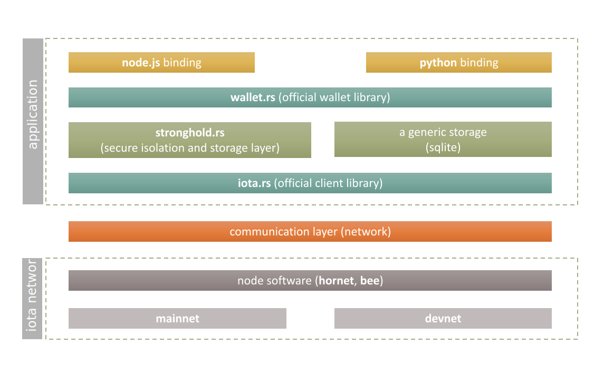
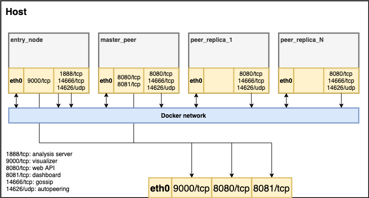

Welcome to IOTA Documentation
Everything you need to know, if you want to work with IOTA. Here you can learn how to setup a Node, learn more about the Tangle or use a library to include IOTA to you project.
The new dawn of Documentation
Chrysalis (IOTA 1.5) is the biggest update to the IOTA Network in History. There ary many improvments and alot of changes to the network, the clients and also for node operators. With the time, the IOTA Founcaiton also did grow on the amount of projects, and we come with a new soultion for docs, insprired by a distributed approach. For the legacy Network (IOTA 1.0), please visit the legacy documentation portal.
Each project has now a own documentation page. On this page, you can discover all our projects and get all updates.
Discover the new project documentation pages:
Networks
Welcome
This page outlines the fundamental changes to the IOTA protocol which will be deployed in 2021 in a release called Chrysalis.
What is Chrysalis
The objective of the IOTA Foundation is to optimize the IOTA mainnet before Coordicide and to offer an enterprise-ready solution for our ecosystem. This will be achieved by an intermediate update called Chrysalis. This post explains what the Chrysalis upgrade entails.

A chrysalis is “the form a caterpillar takes before it emerges from its cocoon as a fully-formed moth or butterfly”. In the context of IOTA, Chrysalis is the mainnet’s intermediate stage before Coordicide is complete. The main purpose of Chrysalis is to improve the usability of the current IOTA mainnet, for users and developers alike.
Why is this process of adopting major protocol improvements relatively unique to IOTA among permissionless DLTs? The simple answer is the absence of miners. In most permissionless DLTs, the miners’ economic incentives differ from those of regular network users. Changes to throughput and network latencies can disrupt the fee market the miners rely on. This in turn makes them likely to object to network upgrades as it affects their bottom line.
In IOTA, validators and users are one and the same. There is no conflict of interests between parties with different motivations, meaning there is a much smoother path to network improvements. This is why we are able to incrementally and smoothly upgrade the network before Coordicide.
What are the specific Chrysalis upgrades?
White-flag approach
 The White-flag approach which is used for calculating balances. It is a simpler, conflict-ignoring approach that improves the speed and efficiency of tip selection, eliminates many network attacks, and significantly reduces the need for reattachments.
The White-flag approach which is used for calculating balances. It is a simpler, conflict-ignoring approach that improves the speed and efficiency of tip selection, eliminates many network attacks, and significantly reduces the need for reattachments.
New milestone selection algorithm
A new milestone selection algorithm for the coordinator, that focuses on allowing the network to support much more confirmed transactions per second (CTPS) than before with higher computational efficiency.
URTS tip selection
A new Uniform random tip selection in node software. It is significantly faster and more efficient than the previous tip selection algorithm.
Ed25519 signature scheme
 The Ed25519 signature scheme has been added to the network, replacing the current Winternitz one time signature scheme (W-OTS) signature scheme. Using an EdDSA signature scheme allows the protocol and clients using the protocol to run more efficiently on established hardware. Unlike W-OTS, the scheme also allows for the re-use of private keys, and, with that, introduces reusable addresses to the protocol. This change also dramatically reduces the transaction size, saving network bandwidth and processing time.
The Ed25519 signature scheme has been added to the network, replacing the current Winternitz one time signature scheme (W-OTS) signature scheme. Using an EdDSA signature scheme allows the protocol and clients using the protocol to run more efficiently on established hardware. Unlike W-OTS, the scheme also allows for the re-use of private keys, and, with that, introduces reusable addresses to the protocol. This change also dramatically reduces the transaction size, saving network bandwidth and processing time.
Atomic transactions
 Atomic transactions that move the protocol from the current, complicated, bundle construct and use simpler atomic transactions instead. This results in much simpler development and more adaptable and maintainable code of the core software. In addition, atomic transactions reduce network overhead, reduce transaction validation and signature verification load, and improve spam protection and congestion control.
Atomic transactions that move the protocol from the current, complicated, bundle construct and use simpler atomic transactions instead. This results in much simpler development and more adaptable and maintainable code of the core software. In addition, atomic transactions reduce network overhead, reduce transaction validation and signature verification load, and improve spam protection and congestion control.
Switch to UTXO Model
 A switch to the UTXO model from the current account model. Every coin on an address becomes uniquely identifiable and every spend names the exact coins that it wants to move. This allows for faster and more exact conflict handling and improves resilience and security of the protocol. In addition, switching to UTXO makes other functionalities, such as colored tokens, on the protocol possible in the future.
A switch to the UTXO model from the current account model. Every coin on an address becomes uniquely identifiable and every spend names the exact coins that it wants to move. This allows for faster and more exact conflict handling and improves resilience and security of the protocol. In addition, switching to UTXO makes other functionalities, such as colored tokens, on the protocol possible in the future.
Internal Binary Representation
 A switch to an internal binary representation of the trinary transaction. This allows us to work on binary data for validation, IO, and other processing without the current reliance on binary-ternary conversions as in the pre-Chrysalis software node software. The switch to binary transactions further reduces the transaction size, saving network bandwidth and processing time.
A switch to an internal binary representation of the trinary transaction. This allows us to work on binary data for validation, IO, and other processing without the current reliance on binary-ternary conversions as in the pre-Chrysalis software node software. The switch to binary transactions further reduces the transaction size, saving network bandwidth and processing time.
New node API and client libraries
With Chrysalis, we wanted to offer a more standard API on both the node and client library level. Node implementations provide a completely redesigned RESTful and eventful API implementations.
Our client libraries provide high level abstractions that allow developers to build solutions that are easier to develop and cheaper to maintain.
Path to Chrysalis
One of the IOTA Foundation’s primary roles is defining and delivering on a development roadmap that aligns with the Foundation's strategy to reach production-readiness and adoption.
The IOTA mainnet has been operational since 2016 and the overall engineering strategy evolved significantly based on industry demand and feedback.
Progress in Coordicide research has resulted in identifying many concepts that could already be implemented on the current IOTA mainnet and provides significant value to users of the protocol before Coordicide. This led to the formalization of our engineering strategy around Chrysalis: a series of upgrades to the protocol that achieves production-readiness before Coordicide.
The benefit of this approach is that many of the protocol properties will remain the same, or almost the same, for Coordicide. That, together with a better set of developer tools, will make the transition to Coordicide much simpler.
The intended outcomes for Chrysalis are:
- Simpler transition to Coordicide - With Coordicide making significant progress, we want to ensure that all developers and companies that build and deploy on Chrysalis will have as smooth a transition to Coordicide as possible.
- Substantial performance improvements - With the changes introduced by Chrysalis, we will see a substantial improvement in the scalability and reliability of the IOTA Mainnet.
- Improved developer and user experience - The new protocol features, new libraries, and the new wallet will make IOTA one of the best platforms to build on, removing the friction which developers experience today while allowing solutions built on top of the protocol to provide better user experience.
- Accelerated adoption - Chrysalis will make IOTA production-ready; becoming a stable protocol, with a reliable set of developer tools and frameworks that will enable startups, corporations, and governments to develop and launch products powered by IOTA.
The stages to Chrysalis

The Chrysalis upgrade is a complex undertaking. We are coordinating a number of distinct products to ensure a smooth transition for IOTA’s current users and partners. In addition to the core node software, we also need to update our wallet software, our libraries, and the entire infrastructure.
Another important requirement is the ease of transition to the future Coordicide network. By carefully planning the breaking changes introduced along the way, and providing support in our developer tools, we will ensure that our growing ecosystem of developers, startups, and corporations can reliably develop and launch new innovative products on IOTA.
The plan for implementing Chrysalis is divided into two phases.
The first phase consisted of improved tip selection (URTS), milestone selection, and White flag. These were implemented in the node software gradually. This phase required an upgrade of all nodes, including the coordinator node, and did not require a snapshot.
The first phase of Chrysalis resulted in:
- Transaction confirmation times of around 10 seconds
- Transactions rarely needing reattachment
- A substantial TPS increase
- Performance and reliability improvements for nodes
The second phase of Chrysalis consists of adopting and/or implementing UTXO, atomic transactions, reusable addresses (Ed25519), a transition to a binary transaction layout, and a new set of client libraries and developer tools. These represent significant changes to the core protocol and the way transactions are structured. Once everything has been tested, validated, and audited, the Foundation will deploy a new Chrysalis network. The upgrade will consist of an extended period when the current, legacy network remains operational. This allows users, exchanges, and partners to migrate to the Chrysalis network at will. The migration is not time constrained.
The second phase of Chrysalis consists of:
- Reusable addresses and support for more standard cryptography (EdDSA), making efficient hardware support for all major architectures possible
- A simplified transaction layout and a reduction in transaction size, further increasing performance and efficiency
- Significant improvements to the usability and reliability of IOTA
- A switch to a UTXO based model from the current account model
The introduction of reusable addresses is an important change for token holders. This will vastly improve IOTA’s usability and make integration into new exchanges, wallets, and payment systems much simpler. A new wallet, called Firefly, will be released with Chrysalis. This wallet will allow token holders to transition from the current WOTS address scheme to the new EdDSA scheme.
Our goal is to make this transition as seamless as possible for everyone in the IOTA ecosystem. This includes a variety of improvements and updates to our libraries and software, as well as training and educational sessions for our partners.
From plan to action
With Chrysalis, we had to make decisions on how to best implement all the upcoming changes, ensuring a correct and timely implementation. What follows is an overview of the various components we are working on to successfully implement this update.
Specification and standardization
Specifications are a major part of our new development process. All our new software projects (Node software, Wallet, Identity, Access, Streams, etc.) are based on vetted specifications. Specifications make it possible for external parties to follow a project’s intended functionality, for example for audit purposes, or develop their own implementations in different languages.
The Chrysalis changes are specified in the form of RFCs. You can find all the RFCs in the protocol-rfcs repository. The list of Chrysalis RFCs includes:
- Improved tip selection (URTS)
- Milestone selection
- White flag
- UTXO
- Ed25519 Signature Scheme
- Reusable addresses (Ed25519)
- Message object
- Binary transaction layout
- Message proof of work
- Dust protection
- New local snapshot file format
- Bech32 address format
- RESTful node API
- Eventful node API
Wallet support
The Trinity wallet is a popular IOTA wallet. With Chrysalis, we will release a new wallet implementation, Firefly. The team has been working on a complete reevaluation of the wallet architecture, with a completely redesigned user experience. At its core will be a new wallet library written in Rust. The wallet library is designed to allow other developers to easily implement IOTA wallets within their applications. Another new Rust library utilized by Firefly is Stronghold; Stronghold enables ultra-secure secret handling and storage.
Infrastructure
Currently, the IOTA Foundation supports two public Networks: Mainnet and Devnet (Devnet is for PoCs and application tests). Both networks provide public endpoints for users and partners. You can read more about the networks and how you can participate in our documentation.
While the current Mainnet will be replaced by a new network, it will remain operational for an extended period of time. For the purposes of non-time-constrained transition of projects deployed on Devnet, the Devnet will only be upgraded after the Chrysalis release.
The Chrysalis testnet has been operational since December and we encourage everyone to use it to build and test their solutions before the official launch of Chrysalis.
Chrysalis Testnet
Nodes deployed to the testnet can be queried using a load balancer at:
- api.lb-0.testnet.chrysalis2.com
We recommend using the load balancer for most scenarios.
Single node endpoints that expose native MQTT in case you need this are:
- api.hornet-0.testnet.chrysalis2.com
- api.hornet-1.testnet.chrysalis2.com
- api.hornet-2.testnet.chrysalis2.com
- api.hornet-3.testnet.chrysalis2.com
Conclusion
Chrysalis is the most promising series of upgrades made to IOTA yet. It is a major step for our production-readiness, with increased transaction throughput, network stability, improved usability, and enables new features and use cases. The upcoming weeks and months are some of the most exciting in IOTA’s history. We are on a clear path towards IOTA’s adoption as an enabling technology for IoT and beyond.
Node software
We have been running the network exclusively on the Go powered Hornet node since the summer of 2020. For Chrysalis, you will have the choice to continue using a new version of Hornet or our new Rust-based Bee node.
Hornet and Bee
Moving forward, both Hornet and Bee are the officially supported nodes for IOTA.
Hornet is an EDF-supported community node written in Go and has already proven itself to be a stable and performant implementation. It recently underwent a successful audit.
Bee is an IOTA Node implemented by the Foundation and written in Rust.
At this stage, we recommend using Hornet since it has several optional features that are not implemented in Bee so far.
Node software
Node API specification
Libraries
The IOTA client libraries allow you to easily integrate IOTA into your own applications. You can choose a library to match your use case.
Official IOTA libraries serve as one-source-code-of-truth to IOTA users and provide binding to other programming languages. You can read more about core principles behind IOTA client libraries in the following blog post.
- client-lib: a general purpose IOTA client library for interacting with IOTA network (Tangle)
- wallet-lib: a stateful library specifically designed to be used for IOTA value-based transfers
- iota.c: a special-purpose library in C for embedded devices (with microcontrollers) covering a basic features of
client-liborwallet-lib - iota.js: an initial IOTA client library in Typescript that can be used in a web browser
- iota.go: an initial IOTA client library in Golang

All libraries are in active development. The libraries target the Chrysalis testnet and do not work with current IOTA mainnet.
The client libraries with official support are maintained by the IOTA Foundation, their source code can be found on the Official GitHub repository.
Utilities
Developer tools
IOTA Client Library
The official client library for interacting with the IOTA Tangle allows you to:
- Create messages and transactions
- Sign transactions
- Generate addresses
- Interact with an IOTA node
If you mainly intend to process value transfers, we recommend you use our stateful wallet library instead.
IOTA Client Library full documentation
Rust
- Getting Started - Getting Started with Rust and the IOTA Client Library.
- Examples - Find starting points or inspiration in the examples.
- Repository - Browse through the code and learn what's happening behind the scenes. Pull requests are very welcome!
- API Documentation - The IOTA Client Library Rust API Documentation.
Node.js
- Getting Started - Getting Started with Node.js and the IOTA Client Library.
- Examples - Find starting points or inspiration in the examples.
- Repository - Browse through the code and learn what's happening behind the scenes. Pull requests are very welcome!
- API Documentation - The IOTA Client Library Node.js API Documentation.
Python
- Getting Started - Getting Started with Python and the IOTA Client Library.
- Examples - Find starting points or inspiration in the examples.
- Repository - Browse through the code and learn what's happening behind the scenes. Pull requests are very welcome!
- API Documentation - The IOTA Client Library Python API Documentation.
C
- Getting Started - Getting Started with C and the IOTA Client Library.
- Examples - Find starting points or inspiration in the examples.
- Repository - Browse through the code and learn what's happening behind the scenes. Pull requests are very welcome!
- API Documentation - The IOTA Client Library C API Documentation.
IOTA Wallet Library
The wallet library is a stateful library for developers; essentially it's a programmable wallet. It is recommended you use this library if you are mainly using IOTA for token transfers. This library supports the handling and monitoring multiple account/addresses at the same time. Its stateful design allows a management of multiple accounts and addresses in an effective manner.
In addition to this, it also supports the Stronghold.rs enclave, incorporating the best security practices in one package:
IOTA Wallet Library full documentation
Rust
- Getting Started - Getting Started with Rust and the IOTA Wallet Library.
- Examples - Find starting points or inspiration in the examples.
- Repository - Browse through the code and learn what's happening behind the scenes. Pull requests are very welcome!
- API Documentation - The IOTA Wallet Library Rust API Documentation.
Node.js
- Getting Started - Getting Started with Node.js and the IOTA Wallet Library.
- Examples - Find starting points or inspiration in the examples.
- Repository - Browse through the code and learn what's happening behind the scenes. Pull requests are very welcome!
- API Documentation - The IOTA Wallet Library Node.js API Documentation.
Python
- Getting Started - Getting Started with Python and the IOTA Wallet Library.
- Examples - Find starting points or inspiration in the examples.
- Repository - Browse through the code and learn what's happening behind the scenes. Pull requests are very welcome!
- API Documentation - The IOTA Wallet Library Python API Documentation.
IOTA Chrysalis Guides
Overall changes from IOTA 1.0 to 1.5 (Chrysalis) in a nutshell
- The format of the address was changed and it is based on both
derivation pathandbech32standards. See IOTA address anatomy - The concepts of
bundlesandtransactionswere replaced with the concepts ofmessagesandpayloads. Themessageis a data structure that is actually being broadcast in the network and represents a node (vertex) in the Tangle graph. See messages, payload and transactions and selected message payloads - The IOTA network is based on a DAG (Directed Acyclic Graph) to store individual
messages(and relatedtransactions). However, eachmessagecan newly reference up to 8 parent messages. See messages, payload and transactions - The signature scheme based on
WOTSwas replaced with withEd25519signature scheme. See seed and addresses - Due to the changed signature scheme, IOTA addresses are reusable without any negative security impact
- In comparison to IOTA 1.0, which was based on ternary, IOTA 1.5 is based on binary and is thus very efficient on all kinds of current hardware devices
- In contrast to IOTA 1.0, IOTA 1.5 addresses are perfectly reusable; even if one spends funds from the given address, it can be used again. See address/key space
- Originally, IOTA 1.0 used an
account-based modelfor tracking individual iota tokens. Chrysalis embracedUnspent Transaction Output(also known asUTXO) model to track tokens and token holders. See Unspent Transaction Output - The approach to client libraries was completely reengineered from the ground up. There are new official client libraries that serve as
one-source-code-of-truthto IOTA users and can be combined in a modular fashion based on particular use cases. All libraries provide a binding to other programming languages. See client libraries - Our official iota tools, such as wallet software, use the same libraries under the hood and so any developer may taste the same dog food as we do
- The official client libraries embraced
Hierarchical Deterministic Walletsapproach which is fullyBIP44compatible. See address/key space - There is a new official wallet software called Firefly. See firefly beta release
Developer guide to Chrysalis
This is a quick guide meant to help you navigate through some of the differences you will encounter while migrating from IOTA 1.0 to IOTA 1.5, also known as Chrysalis.
Seed and addresses
In Chrysalis, all ternary conversions apart from PoW have been removed which results in a better, faster developer experience. Additionally, the WOTS-Signature has been replaced by a Ed25519 signature scheme. This means that you can now use an address multiple times to send and receive coins.
With these changes, and the further adoption of industry standards, both seeds and addresses will look completely different in IOTA Chrysalis.
IOTA 1.0 address:
UDYXTZBE9GZGPM9SSQV9LTZNDLJIZMPUVVXYXFYVBLIEUHLSEWFTKZZLXYRHHWVQV9MNNX9KZC9D9UZWZRGJMIGPDW
IOTA 1.5 (Chrysalis) address (bech32 standard):
Mainnet with iota
iota1qpw6k49dedaxrt854rau02talgfshgt0jlm5w8x9nk5ts6f5x5m759nh2ml
Testnet with atoi
atoi1qpw6k49dedaxrt854rau02talgfshgt0jlm5w8x9nk5ts6f5x5m75zaxtpj
IOTA 1.5 address anatomy
The IOTA address is based on the Ed25519 signature scheme and it is usually represented by the Bech32 (checksummed base32) format string of 64 characters or hex format:
| iota = mainnet; atoi = testnet | |||
More information: Protocol-rfc#0020
Seed
With the new wallet library, developers do not need to use a self-generated seed anymore. By default, the seed is created and stored in Stronghold, our in-house built security enclave. It is not possible to extract the seed from Stronghold for security purposes. Stronghold uses encrypted snapshots that can easily be backed up and securely shared between devices. These snapshots are then further secured with a password.
More information about IOTA Wallet Library is available on Wallet docs page or in the Exchange guide, which is mainly focused on value transactions.
Please note, it is highly recommended to NOT use online seed generators at all. The seed is the only key to the given funds.
A root of the Ed25519 signature scheme is basically a 32-byte (256-bit) uniformly randomly generated seed based on which all private keys and corresponding addresses are generated. A seed may be represented by a string of 64 characters using [0-9a-f] alphabet (32 bytes encoded in hexadecimal).
The seed can be, for example, generated using the SHA256 algorithm on some random input generated by cryptographically secure pseudo-random generator, such as os.urandom().
Seed examples (a single seed per line):
4892e2265c45734d07f220294b1697244a8ab5beb38ba9a7d57aeebf36b6e84a
37c4aab22a5883595dbc77907c1626c1be39d104df39c5d5708423c0286aea89
e94346bce41402155ef120e2525fad2d0bf30b10a89e4b93fd8471df1e6a0981
...
In modern wallet implementations, such as our wallet.rs library and firefly wallet, the seed is usually generated from a
seed mnemonic(seed phrase), using BIP39 standard, to be better memorized/stored by humans. It is based on randomly generated list of english words and is later used to generate the seed. Either way, the seed is a root for all generated private keys and addresses
Address/key space
As mentioned above, IOTA 1.5 embraced some existing industry standards, which is obvious even during an address generation process. This includes the BIP32 standard that describes an approach to Hierarchical Deterministic Wallets. The standard was improved by BIP44 recently.
These standards define a tree structure as a base for address and key space generation which is represented by a derivation path:
m / purpose / coin_type / account / change / address_index
m: a master node (seed)purpose: constant which is {44}coin_type: a constant set for each crypto currency. IOTA = 4218, for instance.account: account index. Zero-based increasingint. This level splits the address/key space into independent branches (ex. user identities) which each has own set of addresses/keyschange: change index which is{0, 1}, also known aswallet chain.
There are two independent chain of addresses/keys.0is reserved for public addresses (for coin receival) and1is reserved for internal (also known as change) addresses to which a transaction change is returned. In comparison to IOTA 1.0, IOTA 1.5 is fine with address reuse, and so it is, technically speaking, valid to return transaction change to the same originating address. It is up to developers whether to leverage it or not.iota.rslibrary and its siblingwallet.rshelp with either scenario.address_index: address index. Zero-based increasingintthat indicates an address index
As outlined, there is a large address/key space that is secured by a single seed.
And there are few additional things to note:
- Each level defines a completely different subtree (subspace) of addresses/keys and those are never mixed up
- The hierarchy is ready to "absorb" addresses/keys for different coins at the same time (
coin_type) and all those coins are secured by the same seed - There may be also other
purposesin the future. However, let's consider a single purpose as of now. The constant44stands for BIP44. - The standard was agreed upon different crypto communities, although not all
derivation pathcomponents are always in active use. For example,accountis not always actively leveraged across crypto space (if this is a case then there is usuallyaccount=0used) - Using different
accountsmay be useful to split addresses/key into some independent spaces and it is up to developers to implement.
Please note, having many different accounts may have a negative impact on performance while account discovery phase. So, if you are after using multiple, different accounts then you may be interested in our stateful library wallet.rs that incorporates all business logic needed to efficiently manage independent accounts. Additionally, our exchange guide provides some useful tips how different accounts may be leveraged.

So in case of IOTA 1.5 (Chrysalis), the derivation path of address/key space is [seed]/44/4218/{int}/{0,1}/{int}:
- The levels
purposeandcoin_typeare given - The rest levels are up to developers to integrate, specifically
seed,account,wallet_chainandaddress_index
Messages, payloads, and transactions
In comparison to original the IOTA 1.0, IOTA 1.5 also introduced some fundamental changes to the underlying data structures. The original concept of transactions and bundles is gone, and has been replaced by a concept of messages and payloads.
A message is a data structure that is actually being broadcast in the IOTA 1.5 network and represents a node (vertex) in the Tangle graph.
It can refer to up to 8 previous messages and once a message is attached to the Tangle and approved by a milestone, the Tangle structure ensures the content of the message is unaltered. Every message is referenced by a message_id which is based on a hash algorithm (Blake2b256) of binary content of the message. It also includes previous Tangle messages as its parents which means it is not possible to alter the given message without altering previous messages in the Tangle.
The message is an atomic unit that is confirmed by the network as a whole.
IOTA is no longer based on ternary. IOTA 1.5 uses binary to encode and broadcast all underlying data entities
A message is arbitrary in size (up to 35 kB) and it can hold variable sets of information called payloads. The number of payloads a single message can encapsulate is not given. Even a message without a payload is completely valid and can be broadcast. The Message itself does not include any timestamp; a message timestamp is derived from an acceptance of the given message by the Tangle network.
Apayload represents a layer of concern. Some payloads may change a state of the ledger (ex. SignedTransactions) and some may provide extra features to some specific applications and business use cases (ex. IndexationPayload).
There are already implemented core payloads, such as SignedTransaction, MilestonePayload, and IndexationPayload but the message and payload definition is generic enough to incorporate any future payload(s) the community agrees upon.
Needless to say, the IOTA network ensures the outer structure of the message itself is valid and strictly complies with network consensus protocol. However, the inner structure is very flexible, future-proof, and offers an unmatched network extensibility.

The current IOTA 1.5 network incorporates the following core payloads:
SignedTransaction: a payload that describesUTXOtransactions that are the cornerstones of value-based transfers in IOTA network. Via this payload, amessagecan be also cryptographically signedMilestonePayload: a payload that is emitted by the CoordinatorIndexationPayload: a payload that enables the addition of an index to the encapsulating message, as well as some arbitrary data. The given index can be later used to search the message(s).
In comparison to IOTA 1.0, a message itself is not directly related to the IOTA address while broadcasting to the IOTA 1.5 network. Such messages are referenced using message_id. Messages are indirectly related to IOTA addresses via SignedTransaction payload, specifically the UTXO section.
Protocol-rfc#0017; Protocol-rfc#0018
Unspent Transaction Output (UTXO)
Originally, IOTA 1.0 used an account-based model for tracking individual iota tokens: each IOTA address held a number of tokens and the aggregated number of tokens from all iota addresses was equal to the total supply.
In contrast, IOTA 1.5 uses the unspent transaction output model, or UTXO. It is based on an idea to track unspent amounts of tokens via a data structure called output.
Below is a simplified analogy of how the UTXO works:
- There are 100 tokens recorded in the ledger as
Output Aand this output belongs to Alice. So, the initial state of the ledger:Output A= 100 tokens - Alice sends 20 tokens to Paul, 30 tokens to Linda, and keeps 50 tokens at her disposal
- Her 100 tokens are recorded as
Output Aso she has to divide (spent) tokens and create three new outputs:Output Bwith 20 tokens that goes to Paul,Output Cwith 30 tokens that goes to Linda, and finallyOutput Dwith the rest of the 50 tokens that she kept for herself - Original
Output Awas completely spent and cannot be used any more. It has been spent and so becomes irrelevant to ledger state. - New state of ledger:
Output B= 20 tokens,Output C= 30 tokens andOutput D= 50 tokens - The total supply remains the same, just number of outputs differs and some outputs were replaced by other outputs in the process

The key takeaway of the outlined process above is the fact that each unique output can be spent only once. Once the given output is spent, it cannot be used any more and is irrelevant in regards to the ledger state.
So even if Alice still wants to keep remaining tokens at her fingertips, those tokens have to be moved to a completely new output that can be, for instance, still tied to the Alice's same iota address as before.
Every output also stores information about an IOTA address to which it is coupled with. So addresses and tokens are indirectly coupled via outputs. Basically, the sum of outputs and their amounts under the given address is a balance of the given address, ie., the number of tokens the given address can spend. And the sum of all unspent outputs and their amounts is equal to the total supply.
Outputs are being broadcasted encapsulated in a message as a part of SignedTransaction payload.
Selected message payloads
Currently, there are two commonly used message payloads, IndexationPayload and SignedTransaction which can be combined based as needed.
IndexationPayload
IndexationPayload is a payload type that can be used to attach an arbitrary data and key index to a message. When this particular payload is leveraged, then a message and related data entity can be searched via key index in addition to a message_id.
SignedTransaction
SignedTransaction is a payload type that is used to transfer value-based messages as UTXO. It changes the ledger state as old outputs are being spent (replaced) and new outputs are being created.
Each SignedTransaction includes the following set of information:
inputs- a list of validoutputsthat should be used to fund the given transaction. Outputs are uniquely referenced via previoustransaction_idand innerindex. At least one output has to be given with enough balance to source alloutputsof the given messageoutputs- a list of IOTA address(es) and related amount(s) the inputoutputsshould be split among. Based on this information, newUTXOoutputs are being createdunlock_blocks- it includes a transaction signature(s) (currently based onEd25519scheme) that proves token ownership based on a valid seed
Dust protection
Since IOTA is feeless and has the ability to send microtransactions, attackers could use this to spam the network with very low value transactions, which we call dust. To avoid this, we only allow microtransaction below 1Mi (dust) of IOTA tokens to another address if you already have at least 1Mi as a dust allowance output on that address. The number of allowed dust outputs on an address is the amount of the dust allowance outputs divided by 100,000 and rounded down, i.e. 10 outputs for each 1 Mi deposited, with a maximum of 100 dust outputs in total.
In the UTXO model, each node in the network needs to keep track of all the currently unspent outputs. When the number of outputs becomes too large, it can cause performance and memory issues. The RFC below proposes a new protocol rule regarding the processing of outputs where they transfer a very small amount of IOTA’s so-called dust outputs. Dust outputs are only allowed when they are backed up by a certain deposit on the receiving address. This limits the amount of dust outputs, thus making it expensive to proliferate dust. Since a receiver must make a deposit, the protocol makes receiving dust an opt-in feature.
Up to 8 Parents
With IOTA 1.0, you always had to reference 2 parent transactions. With Chrysalis, we introduce a more dynamic number of parent nodes where you can reference up to 8 parents. We recommend you reference at least 2 unique parents at all times for the best possible results.
Exchange guide
The IOTA wallet library
Easily integrate IOTA with your exchange, custody solution, or product.
IOTA is built on an architecture that was designed to be the backbone of the Internet of Things (IoT) environment of the future. But this architecture has made it more challenging for service providers like exchanges to integrate IOTA compared to traditional blockchain-based distributed ledgers.
Within the Chrysalis update (also known as IOTA 1.5), some building blocks have been changed to be more approachable and more aligned with currently leveraged standards. We also ship many client libraries to help developers implement IOTA into their applications: 
How do I implement it to my exchange?
In wallet.rs, we use an account model so you can create an account for each of your users. Another approach would be to use one account and generate multiple addresses, which you can then link to the users in your database. The wallet library is designed to be as flexible as possible to back up any of your use cases.
Since IOTA addresses in the Chrysalis network are perfectly reusable, they can be mapped to your users in a clear and concise way:
- Create an account for every user ->
Multi Accountapproach - Create one account with many addresses ->
Single accountapproach
The library supports derivation for multiple accounts from a single seed. An account is simply a deterministic identifier from which multiple addresses can be further derived.
The library also allows consumers to assign a meaningful alias to each account. In addition to this, generated individual accounts can be also searched via generated addresses. This means it does not matter whether aliases or addresses are known as the search for the related account is very straightforward using the wallet.rs library.
It also leaves the choice to users if they want to segregate their funds across multiple accounts or multiple addresses. The following illustration outlines the relationships between seed, accounts, and addresses:

Multi account approach
The multi account approach is used to create an account for each individual user. The created accounts can then be linked to the internal user IDs as an account alias, which are distinctly separated.
Single account approach
The single account approach allows for just one account and creates addresses for each individual user. The associated addresses are then linked to the internal user IDs and store who owns which address in the database. Most exchanges are more familiar with the single account approach and find it easier to use, implement, and backup.
Implementation guide
This guide explains how to use the IOTA Wallet Library to successfully implement IOTA into an exchange. If you already implemented the IOTA Hub, please visit the Hub Migration Guide.
Features of the Wallet Library:
- Secure seed management
- Account management (with multiple accounts and multiple addresses)
- Confirmation monitoring
- Deposit address monitoring
- Backup and restore functionality
How does it work?
The Wallet Library is a stateful package with a standardized interface for developers to build applications involving IOTA value transactions. It offers abstractions to handle IOTA payments and can optionally interact with the IOTA Stronghold for seed handling, seed storage, and state backup. Alternatively, you can use a SQLite database; however, using the Stronghold component is highly recommended due to the most advanced level of security being applied.
For reference, you can see the full documentation here.
The following examples cover the multi account approach using NodeJS binding:
- Setup the Wallet Library
- Create an account for each user
- Generate a user address for deposits
- Listen to events
- Check the user balance
- Enable withdrawals
Note: If you are looking for other languages, please read the wallet library overview.
Since all wallet.rs bindings are based on core principles provided by the wallet.rs library, the outlined approach is very similar regardless of the programming language of your choice.
1. Setup the Wallet library
First, let's install the components that are needed to use wallet.rs and the binding of your choice; it may vary a bit from language to language. In the case of the NodeJs binding, it is quite straightforward since it is distributed via the npm package manager. We also recommend you use dotenv for password management.
For reference, read more about backup and security here.
npm install @iota/wallet dotenv
touch .env
Then, input your password to the .env file like this:
SH_PASSWORD="here is your super secure password"
Once you have everything needed to use the wallet.rs library, it is necessary to initialize the AccountManager instance which creates (opens) a secure storage for individual accounts (backed up by Stronghold by default).
The storage is encrypted at rest, so you need a strong password and location where to put your storage.
Note: manage your password with the utmost care.
Technically speaking, "storage" means a single file called wallet.stronghold. It is also needed to generate a seed (mnemonic) that serves as a cryptographic key from which all accounts and related addresses are generated.
One of the key principles behind the stronghold-based storage is that no one can get a seed from the storage. You deal with all the accounts purely via the Account_Manager instance where all complexities are hidden under the hood and are dealt with in a secure way. In case you would also like to store a seed somewhere else, there is another method, AccountManager.generateMnemonic(), that generates random seeds. This method can be leveraged before the actual account initialization.
Note that it is highly recommended to store the stronghold password and the stronghold database on separate devices. Please refer to the backup and security guide for more information.
Import the Wallet Library and create an account manager:
const { AccountManager, SignerType } = require('@iota/wallet')
// Setup IOTA Wallet Library
const manager = new AccountManager({
storagePath: './storage'
})
manager.setStrongholdPassword(process.env.SH_PASSWORD)
manager.storeMnemonic(SignerType.Stronghold, manager.generateMnemonic()) // seed generation
Once the stronghold storage is created, it is not needed to generate the seed any longer (manager.storeMnemonic(SignerType.Stronghold, manager.generateMnemonic())). It has been already saved in the storage together with all account information.
2. Create an account for an user
Once the backend storage is created, individual accounts for individual users can be created:
let account = await manager.createAccount({
alias: user_id, // an unique id from your existing user
clientOptions: { node: 'http://api.lb-0.testnet.chrysalis2.com', localPow: false }
})
Each account is related to a specific IOTA network (mainnet/devnet) which is referenced by a node property, such as node url (in this example, the Chrysalis testnet balancer).
For more information about clientOptions, please refer to Wallet NodeJs API Reference.
The Alias can be whatever fits to the given use case and should be unique. The alias is usually used to identify the given account later on. Each account is also represented by an index which is incremented (by 1) every time a new account is created. Any account can be then referred to via index, alias, or one of its generated addresses.
Once an account has been created, you get an instance of it using the following methods: AccountManager.getAccount(accountId), AccountManager.getAccountByAlias(alias) or AccountManager.getAccounts().
The most common methods of account instance include:
account.alias()- returns an alias of the given accountaccount.listAddresses()- returns list of addresses related to the accountaccount.getUnusedAddress()- returns a first unused addressaccount.generateAddress()- generate a new address for the address index incremented by 1account.balance()- returns the balance for the given accountaccount.sync()- sync the account information with the tangle
3. Generate a user address to deposit funds
Wallet.rs is a stateful library which means it caches all relevant information in storage to provide performance benefits while dealing with, potentially, many accounts/addresses.
Note: sync the account info with the network during the wallet manipulation to be sure the storage reflects an actual state of the ledger (network).
Every account can own multiple addresses. Addresses are represented by an index which is incremented (by 1) every time a new address is created. The latest address is accessible via account.latestAddress():
// Always sync before account interactions
console.log('syncing...')
const synced = await account.sync()
console.log('synced!')
// By design, the last address of each account is an unused address which can be used as deposit address
const latestAddress = account.latestAddress()
console.log('Need a refill? Send it to this address:', latestAddress)
Feel free to fill the address with Testnet Tokens with the IOTA Faucet to test it.
Addresses are of two types, internal and public (external):
- Each set of addresses are independent from each other and has an independent
indexid - Addresses that are created by
account.generateAddress()are indicated asinternal=false(public) - Internal addresses (
internal=true) are calledchangeaddresses and are used to send the excess funds to them - The approach is also known as a BIP32 Hierarchical Deterministic wallet (HD Wallet)
Note: You may remember IOTA 1.0 network in which addresses were not reusable. It is no longer true and addresses can be reused multiple times in IOTA 1.5 (Chrysalis) network.
4. Listen to events
The Wallet.rs library supports several events for listening. As soon as the given event occurs, a provided callback is triggered.
Below is an example of fetching existing accounts and listening to transaction events coming into the account:
const { addEventListener } = require('@iota/wallet')
const callback = function(err, data) {
if(err) console.log("err:", err)
console.log("data:", data)
}
//Adds a new event listener with a callback in the form of (err, data) => {}. Supported event names:
addEventListener("BalanceChange", callback)
// Possible Event Types:
//
// ErrorThrown
// BalanceChange
// NewTransaction
// ConfirmationStateChange
// Reattachment
// Broadcast
Example output:
data: {
accountId: 'wallet-account://1666fc60fc95534090728a345cc5a861301428f68a237bea2b5ba0c844988566',
address: {
address: 'atoi1q9c6r2ek5w2yz54en78m8dxwl4qmwd7gmh9u0krm45p8txxyhtfry6apvwj',
balance: 20000000,
keyIndex: 0,
internal: false,
outputs: [ [Object], [Object] ]
},
balance: 20000000
}
accountId can then be used to identify the given account via AccountManager.getAccount(accountId).
For reference, you can read more about events in the API reference.
5. Check the account balance
Get the available account balance across all addresses of the given account:
// Always sync before account interactions
console.log('syncing...')
const synced = await account.sync()
console.log('synced!')
let balance = account.balance().available
console.log('available balance', balance)
6. Enable withdrawals
Sending tokens is performed via the SyncedAccount instance that is a result of the account.sync() function:
console.log('syncing...')
const synced = await account.sync()
console.log('available balance', account.balance().available)
const address = 'atoi1qykf7rrdjzhgynfkw6z7360avhaaywf5a4vtyvvk6a06gcv5y7sksu7n5cs'
// TODO: Check if address is valid.
const amount = 1000000 // Amount in IOTA: 1000000 == 1 MIOTA
const node_response = await synced.send(
address,
amount
)
console.log("Check your message on https://explorer.iota.org/chrysalis/message/", node_response.id)
The full function signature is SyncedAccount.send(address, amount[, options]).
Default options are perfectly fine and get the job done; however, additional options can be provided, such as remainderValueStrategy:
changeAddress: Send the remainder value to an internal addressreuseAddress: Send the remainder value back to its original address
The SyncedAccount.send() function returns a wallet message that fully describes the given transaction. The messageId can be used later for checking a confirmation status. Individual messages related to the given account can be obtained via account.listMessages() function.
Please note that when sending tokens, a dust protection mechanism should be considered.
IOTA Hub migration guide
This guide will explain how you can switch from IOTA Hub to using wallet.rs or its bindings instead.
Because of the unique features of IOTA 1.0, it was difficult to manage IOTA transactions with just a library. With the new Chrysalis update, the whole protocol was updated to be more accommodating to industry wide standards and developer friendliness.
IOTA Hub will be deprecated with the Chrysalis upgrade and will not work with the new protocol changes. If you still use Hub, we ask you to utilize our new wallet library (iota.rs or bindings) where you can easily manage IOTA addresses, deposits, and withdrawals for user accounts.
To upgrade from Hub to a Chrysalis implementation you need to:
- Integrate the Chrysalis network using wallet.rs as mentioned in the Exchange section
- Pause withdrawals/deposits
- Make sure all balances have been swept and all deposits have been processed
- Transfer all IOTA to a generated migration address (instructions to be provided)
- Once migrated, transfer the IOTA coins to your hot wallet account on your wallet.rs implementation
Backup and security
Security Checklist
- How to backup your account
- How to restore from a backup
- How to export a user's Stronghold
- How to rekey a Stronghold/password rotation
- Do's and don'ts
Security checklist
- I use Stronghold
- I use a strong password (32 character length, Shannon Entropy ~ 4.0) for encrypting the stronghold
- I rotate the stronghold password on a regular basis
- I create a daily backup of the stronghold.snapshot file
- I keep a secure history of passwords used (for recovery)
- I use a secure password management service that integrates with the server
- I use a linux based server (best memory security)
- My server is isolated behind a DMZ
How to backup your account
A simple copy of the stronghold.snapshot file works as a backup (e.g. a daily cronjob rsync/scp with a datetime suffix for example).
How to restore from a backup
Simply place a snapshot file in your directory that wallet.rs expects.
How to export a user's stronghold
You can create a new Stronghold snapshot on the fly to allow a user to leave your service and retain their key.
How to rekey a Stronghold/password rotation
The procedure for changing a Stronghold password is "simple" in that you read a snapshot into a vault and then write it out with a new encryption password. See this code for the source.
Please note: for obvious reasons, old snapshot backups will not be "rekeyed", so you have to track your old passwords.
Do's and don'ts
- Don't use SQLite
- Don't store passwords and backups on the same device
Testnet
IOTA 1.5 (also known as Chrysalis) is IOTA's intermediate stage before Coordicide is complete. You can read more about the strategy for releasing Chrysalis here.
Infrastructure
Nodes deployed to the testnet can be queried using a load balancer at:
- api.lb-0.testnet.chrysalis2.com
We recommend using the load balancer for most scenarios.
Single node endpoints that expose native MQTT, in case you need them, are:
- api.hornet-0.testnet.chrysalis2.com
- api.hornet-1.testnet.chrysalis2.com
- api.hornet-2.testnet.chrysalis2.com
- api.hornet-3.testnet.chrysalis2.com
The Node API is integrated according to the following specification.
Developer tools
IOTA Protocol RFCs
Changes to the IOTA protocol have to go through a proposal process first, where a proposal is posted as a "Request for comment" (RFC). The Chrysalis protocol changes are described in full detail in these RFC's which can be found below:
Resources
Official support
IOTA Explorer
Official Tangle explorer with a lot of tools to browse through the Tangle.
Discord
The official Discord server where community members and the IOTA Foundation discuss projects and related subjects.
IOTA StackExchange
The official forum where you can ask or answer technical questions about IOTA.
Community support
TheTangle.org - IOTA Explorer
A community tool for searching transactions in the Tangle.
TangleExplorer - IOTA Explorer
An community tool for searching transactions in the Tangle.
FAQ
Which libraries are available for Chrysalis?
At this time, there are a handful of libraries available for Chrysalis which are outlined below:
A low level library called iota.rs which is a client library meant to connect to a IOTA node for core interactions with the Tangle. It is written in Rust and there are currently two bindings for Node.js and Python allowing you to use this library from those languages as well.
For value transactions, there is the wallet.rs library which provides a stateful way to manage IOTA coins for one or multiple accounts. It is also written in Rust and there are currently two bindings for Node.js and Python.
Additionally, there is also a native C (iota.c) and an alternative, native javascript (iota.js) client library.
What is Dust protection and how does it work?
Since IOTA is feeless and has the ability to send microtransactions, attackers could use this to spam the network with very low value transactions, which we call dust. To avoid this we only allow microtransaction below 1Mi of IOTA tokens to another address if you already have at least 1Mi on that address.
You can read more about Dust Protection in the RFC here.
What's happening with Coordicide?
This release called Chrysalis still depends on the Coordinator/Compass to run and issue milestones. The next big release after Chrysalis will be Coordicide where we get rid of that dependency. This release is currently in a research/testing phase and will be the main priority after the Chrysalis release.
When is a transaction on the network considered final/irreversible?
Confirmation times on the new network are on average around 10 seconds. Once a transaction is set to confirm it’s final transaction, you don’t have block confirmations like with blockchain.
Hornet or Bee? Which node software should I use?
You can pick either Bee (Rust based) or Hornet (Go based). We currently recommend Hornet since it’s the more complete version of the node software, Bee is still missing some optional features you might wish to use.
Libraries
Welcome
This is the documentation for the official IOTA Client Library. It can be used to easily interact with IOTA network (Tangle) via IOTA node software. Official IOTA libraries serve as one-source-code-of-truth to IOTA users and providing binding to other programming languages. You can read more about core principles behind IOTA client libraries in the following blog post.
Example of tasks that iota.rs is able to help with:
- Create messages and transactions
- Sign transactions
- Generate addresses
- Interact with an IOTA node
Please note: there is also available
wallet.rslibrary that contains all the logic to safely build wallets or integrations that require value-based IOTA transfers. We strongly recommend to leverage wallet.rs library in case one is more focused on IOTA value-based transfers since it integrates the best security practices including our stronghold enclave`.
IOTA 1.5 (Chrysalis) in a nutshell
- IOTA network uses a DAG (Directed Acyclic Graph) to store its transactions. Each transaction can reference up to 8 parent transactions
- There is a breaking change moving from IOTA 1.0 to IOTA 1.5 (Chrysalis). IOTA address was originally based on WOTS signature scheme (81 trytes) and it has been replaced by a Ed25519 signature scheme
- In contrast to IOTA 1.0, IOTA 1.5 addresses are perfectly reusable: so even if one spent funds from the given address it can be used again
- There are new client libraries developed in rust, specifically
iota.rs,wallet.rsandstronghold.rsthat serve asone-source-code-of-truthto IOTA users and providing binding to other programming languages
IOTA 1.5 address anatomy
IOTA address is based on Ed25519 signature scheme and it is usually represented by Bech32 (checksummed base32) format string of 64 characters:
| iota = mainnet; atoi = testnet | |||
More details: RFC: Bech32 Address Format
Warning
This library is in active development. The library targets the Chrysalis testnet and does not work with current IOTA mainnet.
Testnet
To join the Chrysalis public testnet checkout this link. More information about Chrysalis components is available at documentation portal.
Joining the discussion
If you want to get involved in discussions about this library, or you're looking for support, go to the #clients-discussion channel on Discord.
What you will find here
This documentation has five paths.
- The Overview, an detailed overview of the client library.
- Libraries bindings, all avaiable programming languages and their resources.
- The Specification, detailed explaination requirements and functionality.
- Contribute, how you can work on the client software.
- Get in touch, join the community and become part of the X-Team!
Overview
The IOTA client library is a stateless library that provides a high level abstractions on top of IOTA node software to help interact with IOTA network in user friendly way and allows you to do the following, for instance:
- Create messages and transactions
- Sign transactions
- Generate addresses
- Interact with an IOTA node
IOTA client library in a nutshell
The library provides two types of API calls under a common interface:
Full node API calls: those calls are basically translated to native node rest api calls. For more information, please see node rest API referenceGeneral high level API calls: those are convenience functions with some typical default parameters in order to use them in a straightforward manner. They typically implement several recommended steps for the given task. Implementation details are part of the full specification
See the full specification here.
High level layered overview:
IOTA Client libraries
There are currently available the following official bindings to iota.rs:
Getting Started
It is a recommended approach to start your interactions with IOTA on a testnet network. API load balancer: https://api.lb-0.testnet.chrysalis2.com:443
Network explorer is available at IOTA Tangle Explorer.
In order to properly test value-based transactions on testnet network, you are going to need some tokens! You can get some testnet tokens using the faucet. However, we strongly recommend to leverage official wallet.rs library in case of value-based IOTA transfers.
IOTA Client Rust Library

Warning
This library is in active development. The library targets the Chrysalis testnet and does not work with current IOTA mainnet.
Joining the discussion
If you want to get involved in discussions about this library, or you're looking for support, go to the #clients-discussion channel on Discord.
Overview
Getting Started with Rust
Requirements
To use the library, we recommend you update Rust to latest stable version $ rustup update stable. Nightly should be fine but some changes might not be compatible.
no_std is not currently supported, but we are working on it in bee, and will provide it as feature once the new implementation is ready.
Using the library
Using the library is easy, just add it as dependency in your Cargo.toml:
[dependencies]
iota-core = { git = "https://github.com/iotaledger/iota.rs", branch = "dev" }
And then you can use the library in your code with use iota;.
Initialisation
This example fetches node information
use iota::Client; #[tokio::main] async fn main() { let iota = Client::builder() // Crate a client instance builder .with_node("https://api.lb-0.testnet.chrysalis2.com") .unwrap() .finish() .await .unwrap(); let info = iota.get_info().await.unwrap(); println!("Nodeinfo: {:?}", info); }
Examples
You can see the examples in the examples directory and try them with:
cargo run --example # lists the available examples
cargo run --example address # execute the `address` example
API Reference
API reference
You can read the API reference here, or generate it yourself.
If you'd like to explore the implementation in more depth, the following command generates docs for the whole crate, including private modules:
cargo doc --document-private-items --no-deps --open
Troubleshooting
StackExchange
The IOTA StackExchange a a nice tool for developers to find answers for a problem. Just search your problem and find your answer! If there is no one, submit your question and share it in the discussion channel below.
Joining the discussion
If you want to get involved in discussions about this library, or you're looking for support, go to the #clients-discussion channel on Discord.
IOTA Client Node.js Library

Warning
This library is in active development. The library targets the Chrysalis testnet and does not work with current IOTA mainnet.
Joining the discussion
If you want to get involved in discussions about this library, or you're looking for support, go to the #clients-discussion channel on Discord.
Overview
Getting Started with Node.js
Installation
- Using NPM:
$ npm i @iota/client
- Using yarn:
$ yarn add @iota/client
Example
const { ClientBuilder } = require('@iota/client')
const client = new ClientBuilder()
.node('https://api.lb-0.testnet.chrysalis2.com')
.build()
client.getInfo().then(console.log).catch(console.error)
Examples
You can look into the tests until the full documentation is available.
API Reference
Connecting to a MQTT broker using raw ip doesn't work. This is a limitation of rustls.
API Reference
ClientBuilder
node(url): ClientBuilder
Adds an IOTA node to the client pool.
| Param | Type | Description |
|---|---|---|
| url | string | A node URL |
Returns the client builder instance for chained calls.
nodeAuth(url, name, password): ClientBuilder
Adds an IOTA node with basic authentication to the client pool.
| Param | Type | Description |
|---|---|---|
| url | string | A node URL |
| name | string | A name |
| password | string | A password |
Returns the client builder instance for chained calls.
nodes(urls): ClientBuilder
Adds a list of IOTA nodes to the client pool.
| Param | Type | Description |
|---|---|---|
| url | string[] | An array of node URLs |
Returns the client builder instance for chained calls.
nodePoolUrls(urls): ClientBuilder
Adds a list of IOTA nodes from node pool URLs to the client pool.
| Param | Type | Description |
|---|---|---|
| url | string[] | An array of node pool URLs |
Returns the client builder instance for chained calls.
network(networkName): ClientBuilder
Set a network to get default nodes for it. Can be "testnet" or "mainnet". Nodes that don't belong to this network are ignored.
| Param | Type | Description |
|---|---|---|
| networkName | string | The network |
Returns the client builder instance for chained calls.
quorumSize(size): ClientBuilder
Defines how many of nodes will be queried at the same time to check for quorum.
| Param | Type | Description |
|---|---|---|
| size | number | The number of nodes that will be queried |
Returns the client builder instance for chained calls.
quorumThreshold(threshold): ClientBuilder
Defines the minimum amount of nodes from the quorum pool that need to agree if we want to consider the result true.
| Param | Type | Description |
|---|---|---|
| threshold | number | Minimum amount of nodes |
Returns the client builder instance for chained calls.
brokerOptions(options): ClientBuilder
Sets the options for the MQTT connection with the node.
| Param | Type | Description |
|---|---|---|
| options | BrokerOptions | The MQTT broker options |
Returns the client builder instance for chained calls.
nodeSyncInterval(interval): ClientBuilder
Sets the node syncing interval.
| Param | Type | Description |
|---|---|---|
| interval | number | The interval for the node syncing process |
Returns the client builder instance for chained calls.
disableNodeSync(): ClientBuilder
Disables the node syncing process. Every node will be considered healthy and ready to use.
Returns the client builder instance for chained calls.
defaultTimeout(timeoutMs): ClientBuilder
Sets the default HTTP request timeout.
| Param | Type | Description |
|---|---|---|
| timeout | number | The timeout in milliseconds |
Returns the client builder instance for chained calls.
apiTimeout(api, timeoutMs): ClientBuilder
Sets the HTTP request timeout for the specified API.
| Param | Type | Description |
|---|---|---|
| api | 'GetHealth' | 'GetInfo' | 'GetTips' | 'PostMessage' | 'GetOutput' | 'GetMilestone' | The API to set the request timeout |
| timeout | number | The timeout in milliseconds |
Returns the client builder instance for chained calls.
localPow(local): ClientBuilder
Sets the PoW type.
| Param | Type | Description |
|---|---|---|
| local | boolean | Flag determining if PoW should be done locally or remotely |
Returns the client builder instance for chained calls.
build(): Client
Builds the client instance.
Returns a Client instance.
Client
networkInfo(): NetworkInfo
Gets the cached network info.
Returns a NetworkInfo instance.
subscriber(): TopicSubscriber
Gets a handle to the MQTT topic subscriber.
Returns a TopicSubscriber instance.
message(): MessageSender
Initiates the builder to send messages.
Returns a MessageSender instance.
getUnspentAddress(seed): UnspentAddressGetter
Get a valid unspent address.
| Param | Type | Description |
|---|---|---|
| seed | string | The hex-encoded seed to search |
Returns a UnspentAddressGetter instance.
getAddresses(seed): AddressGetter
Find addresses from the seed regardless of their validity.
| Param | Type | Description |
|---|---|---|
| seed | string | The hex-encoded seed to search |
Returns a AddressGetter instance.
findMessages(indexationKeys, messageIds): Promise<Message[]>
Finds all messages associated with the given indexation keys and message ids.
| Param | Type | Description |
|---|---|---|
| indexationKeys | string[] | The list of indexations keys too search |
| messageIds | string[] | The list of message ids to search |
Returns a promise resolving to the list of the found messages.
getBalance(seed: string): BalanceGetter
Get balance on a given seed and its wallet account index.
| Param | Type | Description |
|---|---|---|
| seed | string | The hex-encoded seed to search |
Returns a BalanceGetter instance.
getAddressBalances(addresses): Promise<AddressBalance[]>
Get the balance in iotas for the given addresses.
| Param | Type | Description |
|---|---|---|
| addresses | string[] | The list of addresses to search |
Returns A promise resolving to the list of { address, balance } pairs.
bech32ToHex(bech32)
Returns a parsed hex String from bech32.
| Param | Type | Description |
|---|---|---|
| bech32 | string | The address Bech32 string |
Returns A String
hexToBech32(hex, bech32_hrp (optional))
Returns a parsed bech32 String from hex.
| Param | Type | Description |
|---|---|---|
| bech32 | string | The address Bech32 string |
| bech32_hrp | string | The Bech32 hrp string |
Returns A String
isAddressValid(address: string): boolean
Checks if a given address is valid.
| Param | Type | Description |
|---|---|---|
| address | string | The address Bech32 string |
Returns A boolean.
retry(messageId: string): Promise
Retries (promotes or reattaches) the message associated with the given id.
| Param | Type | Description |
|---|---|---|
| messageId | string | The id of the message to retry |
Returns A promise resolving to the new Message instance.
retryUntilIncluded(messageId: string[, interval: int, max_attempts: int]): Promise
Retries (promotes or reattaches) the message associated with the given id until it's included in the Tangle. Default interval is 5 seconds and max_attempts is 10.
| Param | Type | Description |
|---|---|---|
| messageId | string | The id of the message to retry |
| [options.interval] | int | The interval in seconds in which we retry the message. |
| [options.max_attempts] | int | The maximum of attempts we retry the message. |
Returns the message ids and Message of reattached messages.
getInfo(): Promise
Gets information about the node.
Returns a promise resolving to the NodeInfo object.
getTips(): Promise<[string, string]>
Gets two non-lazy tips.
Returns a promise resolving to an array of length 2 containing the message ids of the tips.
postMessage(message): Promise
Submits a message.
| Param | Type | Description |
|---|---|---|
| message | MessageDto | The message to submit |
Returns the message identifier.
getMessage(): MessageFinder
Gets a message from its identifier.
Returns an instance of the MessageFinder for choices of response.
getOutput(outputId): Promise
Gets the UTXO outputs associated with the given output id.
| Param | Type | Description |
|---|---|---|
| outputId | string | The id of the output to search |
Returns a promise resolving to the associated OutputMetadata.
findOutputs(outputIds, addresses): Promise<OutputMetadata[]>
Gets the UTXO outputs associated with the given output ids and addresses.
| Param | Type | Description |
|---|---|---|
| addresses | string[] | The list of addresses to search |
| outputIds | string[] | The list of output ids to search |
Returns a promise resolving to a list of OutputMetadata.
getAddressOutputs(address[, options]): Promise<string[]>
Gets the UTXO outputs associated with the given address.
| Param | Type | Description |
|---|---|---|
| address | string | The address Bech32 string |
| [options.includeSpent] | boolean | Whether the query should include spent outputs or not |
| [options.outputType] | 'SignatureLockedSingle' | 'SignatureLockedDustAllowance' | The output type filter |
Returns a promise resolving to a list of output ids.
getAddressBalance(address): Promise
Gets the balance of the given address.
| Param | Type | Description |
|---|---|---|
| address | string | The address Bech32 string |
getMilestone(index): Promise
Gets the milestone by the given index.
| Param | Type | Description |
|---|---|---|
| index | number | The index of the milestone |
Returns a promise resolving to the MilestoneMetadata.
getMilestoneUtxoChanges(index): Promise
Gets the utxo changes by the given milestone index.
| Param | Type | Description |
|---|---|---|
| index | number | The index of the milestone |
Returns a promise resolving to the MilestoneUTXOChanges.
getReceipts(): Promise<Receipts[]>
Get all receipts.
Returns a promise resolving to the Receipts.
getReceiptsMigratedAt(index): Promise<Receipts[]>
Get all receipts for a given milestone index
| Param | Type | Description |
|---|---|---|
| index | number | The index of the milestone |
Returns a promise resolving to the Receipts.
getTreasury(): Promise
Get the treasury amount.
Returns a promise resolving to the Treasury.
getIncludedMessage(): Promise
Get the included message of a transaction.
| Param | Type | Description |
|---|---|---|
| index | string | The id of the transaction |
Returns A promise resolving to the new Message instance.
reattach(messageId): Promise
Reattaches the message associated with the given id.
| Param | Type | Description |
|---|---|---|
| messageId | string | The id of the message to reattach |
Returns A promise resolving to the new Message instance.
promote(messageId): Promise
Promotes the message associated with the given id.
| Param | Type | Description |
|---|---|---|
| messageId | string | The id of the message to promote |
Returns A promise resolving to the new Message instance.
NetworkInfo
| Field | Type | Description |
|---|---|---|
| network | string | The network |
| networkId | number | The network hashed |
| bech32HRP | string | Bech32 HRP for this network |
| minPowScore | number | The network's minimum score for PoW |
| localPow | boolean | Whether we are using local PoW or not |
TopicSubscriber
topic(topic): TopicSubscriber
Adds a topic to this manager instance.
| Param | Type | Description |
|---|---|---|
| topic | string | A MQTT topic |
Returns the topic subscriber instance for chained calls.
topics(topic): TopicSubscriber
Adds a list of topics to this manager instance.
| Param | Type | Description |
|---|---|---|
| topics | string[] | An array of MQTT topics |
Returns the topic subscriber instance for chained calls.
subscribe(cb): TopicSubscriber
Subscribe to the provided topics.
| Param | Type | Description |
|---|---|---|
| cb | function | The topic handler callback in the form of (err, message) => {} |
Returns the topic subscriber instance for chained calls.
unsubscribe(cb: Callback): TopicSubscriber
Unsubscribes from the provided topics.
| Param | Type | Description |
|---|---|---|
| cb | function | A callback executed when the unsubscribe is finished in the form of (err, message) => {} |
Returns the topic subscriber instance for chained calls.
MessageSender
Builder to create and submit messages to the Tangle.
index(index): MessageSender
Sets the message indexation. This field is required for indexation payloads.
| Param | Type | Description |
|---|---|---|
| index | string | The indexation |
Returns the message submit instance for chained calls.
seed(seed): MessageSender
Sets the transaction account seed. This field is required for transaction payloads.
| Param | Type | Description |
|---|---|---|
| seed | string | The hex-encoded seed of the account to spend |
Returns the message submit instance for chained calls.
data(data): MessageSender
Sets the indexation data.
| Param | Type | Description |
|---|---|---|
| data | Uint8Array | The message's data |
Returns the message submit instance for chained calls.
parents(messageId): MessageSender
Sets 1-8 custom parent message ids.
| Param | Type | Description |
|---|---|---|
| messageId | string[] | The parents message ids |
Returns the message submit instance for chained calls.
accountIndex(index): MessageSender
Sets the account index. This field is required for transactions.
| Param | Type | Description |
|---|---|---|
| index | number | The account index |
Returns the message submit instance for chained calls.
input(transactionId, index): MessageSender
Adds an output to the transaction.
| Param | Type | Description |
|---|---|---|
| transactionId | string | The transaction id |
| index | number | The input index |
Returns the message submit instance for chained calls.
inputRange(start, end): MessageSender
Defines the range in which to search for addresses fro custom inputs.
| Param | Type | Description |
|---|---|---|
| start | number | The start index |
| end | number | The end index |
Returns the message submit instance for chained calls.
output(address, amount): MessageSender
Adds an output to the transaction.
| Param | Type | Description |
|---|---|---|
| address | string | The output address |
| amount | number | The output amount |
Returns the message submit instance for chained calls.
dustAllowanceOutput(address, amount): MessageSender
Adds a dust allowance output to the transaction.
| Param | Type | Description |
|---|---|---|
| address | string | The output address |
| amount | number | The output amount |
Returns the message submit instance for chained calls.
initialAddressIndex(index): MessageSender
Sets the initial address index to search for balance. Defaults to 0 if the function isn't called.
| Param | Type | Description |
|---|---|---|
| index | number | The initial address index |
Returns the message submit instance for chained calls.
submit(): Promise
Submits the message.
Returns a promise resolving to the message identifier.
UnspentAddressGetter
Gets a valid unspent address associated with the seed.
accountIndex(index): UnspentAddressGetter
Sets the account index. This field is required.
| Param | Type | Description |
|---|---|---|
| index | number | The account index |
Returns the address getter instance for chained calls.
initialAddressIndex(index): UnspentAddressGetter
Sets the initial address index. Defaults to 0 if the function isn't called.
| Param | Type | Description |
|---|---|---|
| index | number | The initial address index |
Returns the address getter instance for chained calls.
get(): Promise<[Address, number]>
Performs the operation.
Returns a promise resolving to the Address instance and its index.
AddressGetter
Generates addresses with a given seed.
accountIndex(index): AddressGetter
Sets the account index. This field is required.
| Param | Type | Description |
|---|---|---|
| index | number | The account index |
Returns the address finder instance for chained calls.
range(start, end): AddressGetter
Defines the range of addresses to get. Defaults to 0..20 if the function isn't called.
| Param | Type | Description |
|---|---|---|
| start | number | The first address index |
| end | number | The last address index |
Returns the address finder instance for chained calls.
get(): Address[]
Performs the operation.
Returns an array of Address instances.
BalanceGetter
Gets balance on a given seed.
accountIndex(index): BalanceGetter
Sets the account index. This field is required.
| Param | Type | Description |
|---|---|---|
| index | number | The account index |
Returns the balance getter instance for chained calls.
initialAddressIndex(index): BalanceGetter
Sets the initial address index. Defaults to 0 if the function isn't called.
| Param | Type | Description |
|---|---|---|
| index | number | The initial address index |
Returns the balance getter instance for chained calls.
gapLimit(amount): BalanceGetter
Sets the gapLimit to specify how many addresses will be checked each round. If gap_limit amount of addresses in a row have no balance the BalanceGetter will return. Defaults to 20 if the function isn't called.
| Param | Type | Description |
|---|---|---|
| gap_limit | number | The initial address index |
Returns the balance getter instance for chained calls.
get(): Promise
Performs the operation.
Returns a promise resolving to the account balance.
MessageFinder
Gets a message by indexation key or identifier.
initialAddressIndex(index): Promise<string[]>
| Param | Type | Description |
|---|---|---|
| index | string | The indexation key |
Gets a list of message identifiers associated with the given indexation key.
Returns a promise resolving to the list of associated ids.
data(id): Promise
Gets the message object associated with the given identifier.
| Param | Type | Description |
|---|---|---|
| id | string | The message identifier |
Returns a Message object.
raw(id): Promise
Gets the message raw data.
| Param | Type | Description |
|---|---|---|
| id | string | The message identifier |
Returns the message raw data as string.
children(id): Promise<string[]>
Gets the children of the given message.
| Param | Type | Description |
|---|---|---|
| id | string | The message identifier |
Returns the list of message ids of the message children.
metadata(id): Promise
Gets the metadata of the given message.
| Param | Type | Description |
|---|---|---|
| id | string | The message identifier |
Returns a MessageMetadata object.
BrokerOptions
| Field | Type | Description |
|---|---|---|
| automaticDisconnect | number | Whether the MQTT broker should be automatically disconnected when all topics are unsubscribed or not. |
| timeout | number | MQTT connection timeout in secods |
Address
| Field | Type | Description |
|---|---|---|
| type | 'Ed25519' | Address type |
| data | string | Address as a Bech32 string |
Message
| Field | Type | Description |
|---|---|---|
| networkId | number | Network identifier |
| parents | string[] | Message ids of the message references |
| payload | Payload | Message payload |
| nonce | number | Message nonce |
Payload
| Field | Type | Description |
|---|---|---|
| data | { type: 'Transaction', data: TransactionPayload } | { type: 'Indexation', data: IndexationPayload } | { type: 'Milestone', data: MilestonePayload} | Payload data |
TransactionPayload
| Field | Type | Description |
|---|---|---|
| essence | TransactionPayloadEssence | Transaction essence |
| unlock_blocks | UnlockBlock[] | Unlock blocks |
- TransactionPayloadEssence
| Field | Type | Description |
|---|---|---|
| inputs | Input[] | Inputs |
| outputs | Output[] | Outputs |
| payload | Payload | undefined | Payload for chaining |
- Input
| Field | Type | Description |
|---|---|---|
| type | 'UTXO' | Input type identifier |
| data | string | The associated output id |
- Output
| Field | Type | Description |
|---|---|---|
| type | 'SignatureLockedSingle' | Output type identifier |
| data | { address: string, amount: number } | The output definition |
- UnlockBlock
| Field | Type | Description |
|---|---|---|
| type | 'Signature' | 'Reference' | Unlock block type identifier |
| data | Ed25519SignatureUnlockBlock | number | Unlock block data (signature type or reference index) |
- Ed25519SignatureUnlockBlock
| Field | Type | Description |
|---|---|---|
| public_key | number[] | Ed25519 public key |
| signature | number[] | Ed25519 signature |
IndexationPayload
| Field | Type | Description |
|---|---|---|
| index | string | Indexation key |
| data | number[] | Indexation data as byte array |
MilestonePayload
| Field | Type | Description |
|---|---|---|
| essence | MilestoneEssence | Milestone essence |
| signatures | number[][] | Milestone signatures |
- MilestoneEssence
| Field | Type | Description |
|---|---|---|
| index | number | Milestone index |
| timestamp | number | Timestamp |
| parents | string[] | Message ids of the messages the milestone references |
| merkle_proof | number[] | Merkle proof |
| next_pow_score | number | Next PoW score |
| next_pow_score_milestone_index | number | Milestone index at which the next_pow_score will be used |
| public_keys | number[][] | public keys |
MessageDto
| Field | Type | Description |
|---|---|---|
| parents | string[] | undefined | Message ids of the messages it references. getTips is used by default |
| payload | PayloadDto | Message payload |
PayloadDto
| Field | Type | Description |
|---|---|---|
| data | TransactionPayloadDto | IndexationPayloadDto | Payload data |
TransactionPayloadDto
| Field | Type | Description |
|---|---|---|
| essence | TransactionPayloadEssenceDto | Transaction essence |
| unlockBlocks | UnlockBlockDto[] | Unlock blocks |
- TransactionPayloadEssenceDto
| Field | Type | Description |
|---|---|---|
| inputs | string[] | Inputs |
| outputs | Output[] | Outputs |
| payload | PayloadDto | undefined | Payload for chaining |
- OutputDto
| Field | Type | Description |
|---|---|---|
| address | string | Output address |
| amount | amount | Output amount |
- UnlockBlockDto
| Field | Type | Description |
|---|---|---|
| data | Ed25519SignatureUnlockBlockDto | number | Unlock block data (signature type or reference index) |
- Ed25519SignatureUnlockBlockDto
| Field | Type | Description |
|---|---|---|
| publicKey | number[] | Ed25519 public key |
| signature | number[] | Ed25519 signature |
IndexationPayloadDto
| Field | Type | Description |
|---|---|---|
| index | string | Indexation key |
| data | Uint8Array | Indexation data |
MessageMetadata
| Field | Type | Description |
|---|---|---|
| messageId | string | Message identifier |
| parents | string[] | Message id of the messages it references |
| isSolid | boolean | Message solid state |
| shouldPromote | boolean | undefined | Indicates whether the message should be promoted or not |
| shouldReattach | boolean | undefined | Indicates whether the message should be reattached or not |
| referencedByMilestoneIndex | number | undefined | Index of the milestone that references this message |
| ledgerInclusionState | string | undefined | Ledger inclusion state |
NodeInfo
| Field | Type | Description |
|---|---|---|
| name | string | Node name |
| version | string | Node version |
| isHealthy | boolean | Node health status |
| networkId | string | Node network identifier |
| bech32HRP | string | Bech32 HRP for this network |
| min_pow_score | number | Min PoW score |
| messages_per_second | number | Network stats: Messages per second in the network |
| referenced_messages_per_second | number | Network stats: Referenced messages per second |
| referenced_rate | number | Network stats: referenced rate |
| latest_milestone_timestamp | number | Timestamp of the latest milestone |
| latestMilestoneIndex | number | Index of the latest milestone |
| confirmedMilestoneIndex | number | Index of the confirmed milestone |
| pruningIndex | number | Pruning index |
| features | string[] | List of node features |
OutputMetadata
| Field | Type | Description |
|---|---|---|
| messageId | string | Id of the message associated with the output |
| transactionId | string | Id of the transaction associated with the output |
| outputIndex | number | Output index |
| isSpent | boolean | Output spent state |
| address | string | Output address |
| amount | number | Output amount |
MilestoneMetadata
| Field | Type | Description |
|---|---|---|
| milestoneIndex | number | Milestone index |
| messageId | string | Id of the message associated with the milestone |
| timestamp | number | Milestone timestamp |
MilestoneUTXOChanges
| Field | Type | Description |
|---|---|---|
| index | number | Milestone index |
| createdOutputs | string[] | OutputIds from new created outputs |
| consumedOutputs | string[] | OutputIds from consumed outputs |
Receipts
| Field | Type | Description |
|---|---|---|
| receipt | receipt | Receipt |
| milestone_index | number | Milestone index |
Treasury
| Field | Type | Description |
|---|---|---|
| milestone_id | string | Milestone id |
| amount | number | Amount |
Troubleshooting
StackExchange
The IOTA StackExchange a a nice tool for developers to find answers for a problem. Just search your problem and find your answer! If there is no one, submit your question and share it in the discussion channel below.
Joining the discussion
If you want to get involved in discussions about this library, or you're looking for support, go to the #clients-discussion channel on Discord.
IOTA Client Python Library

Warning
This library is in active development. The library targets the Chrysalis testnet and does not work with current IOTA mainnet.
Joining the discussion
If you want to get involved in discussions about this library, or you're looking for support, go to the #clients-discussion channel on Discord.
Overview
Getting Started with IOTA Client Python binding
Installation
Easiest way how to get python binding up and running is to leverage pre-built python libraries for linux/macos/windows that can be installed to your python environment (3.6+) via pip. The binding is automagically generated using github actions.
The latest artifacts for major python versions can be also grabbed using nighly.link service. Download zip file for the given os and pyversion, unpack wheel file (.whl) and install it via pip:
pip install <wheel_file>
Once it has been properly installed you can double check it using pip:
pip list
You should see the similar output:
Package Version
-------------------------- -------
iota-core-python 0.2.0a3
Once installed in the given python environment you are all set and can start hacking using python binding!
Usage
import iota_client
print(iota_client.__doc__)
print(dir(iota_client))
Examples
Please note: It is not recommended to store passwords/seeds on host's environment variables or in the source code in a production setup! Please make sure you follow our backup and security recommendations for production use!
Connecting to node(s)
All features of iota.rs library are accessible via an instance of Client class that provides high-level abstraction to all interactions over IOTA network (Tangle). This class has to be instantiated before starting any interactions with the library, or more precisely with IOTA nodes that power IOTA network.
You may be familiar with a fact that in case of IOTA 1.0 network one had to know an address of IOTA node to start participating to the network. It is no longer needed in IOTA 1.5 (Chrysalis) world. The library is designed to automatically choose a starting IOTA node based on the network type one would like to participate in: testnet or mainnet.
So very simplistic example how to connect to IOTA testnet is the following one:
import iota_client
# client will connect to testnet by default
client = iota_client.Client()
print(client.get_info())
Output example of get_info() function of the Client instance:
{
'name': 'HORNET',
'version': '0.6.0-alpha',
'is_healthy': True,
'network_id': 'testnet6',
'bech32_hrp': 'atoi',
'latest_milestone_index': 192448,
'confirmed_milestone_index': 192448,
'pruning_index': 174931,
'features': ['PoW'],
'min_pow_score': 4000.0
}
The most important properties:
is_healthy: indicates whether the given node is in sync with the network and so it is safe to use it. Even if a node is up and running it may not be fully prepared to process your API calls properly. The node should be "synced", meaning should be aware of all TXs in the Tangle. It is better to avoid not fully synced nodes. A node healthiness can be alternatively obtained also with a methodClient.get_health()bech32_hrp: it indicates whether the given node is a part of testnet (atoi) or mainnet (iota). See more info regarding IOTA address format
Please note, when using node load balancers then mentioned health check may be quite useless since follow-up API calls may be served by different node behind the load balancer that may have not been actually checked. One should be aware of this fact and trust the given load balancer participates only with nodes that are in healthy state. iota.rs library additionally supports a management of internal node pool and so load-balancer-like behavior can be mimicked using this feature locally.
Needless to say, the Client class constructor provides several parameters via which the process can be closely managed.
The most common ones:
network: can beTestnetorMainnet. It instructs the library whether to automatically select testnet nodes or mainnet nodesnode: specify address of actual running IOTA node that should be used to communicate with (in formathttps://node:port), for ex: https://api.lb-0.testnet.chrysalis2.com:443node_pool_urls: library also supports a management of pool of nodes. You can provide a list of nodes and library manages access to them automatically (selecting them based on their sync status)local_pow:local_pow==True(by default) means aProof-of-workis done locally and not remotelynode_sync_disabled:node_sync_disabled==False(by default) means that library checks for sync status of node(s) periodically before its use.node_sync_disabled==Truemeans library also uses nodes that are not in sync with network. This parameter is usually useful if one would like to interact with local test node that is not fully synced. This parameter should not be used in production
If node_pool_urls is provided then the library periodically checks in some interval (argument node_sync_interval) whether node is in sync or not.
Generating seed and addresses
Since the IOTA network is permission-less type of network, anybody is able to use it and interact with it. No central authority is required at any stage. So anybody is able to generate own seed and then deterministically generate respective private keys/addresses.
Please note, it is highly recommended to NOT use online seed generators at all. The seed is the only key to the given addresses. Anyone who owns the seed owns also all funds related to respective IOTA addresses (all of them).
We strongly recommend to use official
wallet.rslibrary together withstronghold.rsenclave for value-based transfers. This combination incorporates the best security practices while dealing with seeds, related addresses andUTXO. See more information on Chrysalis docs.
IOTA 1.5 (Chrysalis) uses Ed25519 signature scheme and address is usually represented by Bech32 (checksummed base32) format string of 64 characters.
A root of Ed25519 signature scheme is basically a 32-byte (256-bit) uniformly randomly generated seed based on which all private keys and corresponding addresses are generated. In the examples below, the seed is represented by a string of 64 characters using [0-9a-f] alphabet (32 bytes encoded in hexadecimal).
Seed can be for example generated using SHA256 algorithm on some random input generated by cryptographically secure pseudo-random generator, such as os.urandom():
import os
import hashlib
rnd_seed = hashlib.sha256(os.urandom(256)).hexdigest()
print(rnd_seed)
Seed examples (a single seed per line):
4892e2265c45734d07f220294b1697244a8ab5beb38ba9a7d57aeebf36b6e84a
37c4aab22a5883595dbc77907c1626c1be39d104df39c5d5708423c0286aea89
e94346bce41402155ef120e2525fad2d0bf30b10a89e4b93fd8471df1e6a0981
...
In modern wallet implementations, such as our wallet.rs library and firefly wallet, the seed is usually generated from a
seed mnemonic(seed phrase), using BIP39 standard, to be better memorized/stored by humans. It is based on randomly generated list of english words and later used to generate the seed. Either way, the seed is a root for all generated private keys and addresses
Address/key space
Before an actual address generation process, let's quickly focus on BIP32 standard that describes an approach to Hierarchical Deterministic Wallets. The standard was improved by BIP44 lately.
These standards define a tree structure as a base for address and key space generation which is represented by a derivation path:
m / purpose / coin_type / account / change / address_index
m: a master node (seed)purpose: constant which is {44}coin_type: a constant set for each crypto currency. IOTA = 4218, for instance.account: account index. Zero-based increasingint. This level splits the address/key space into independent branches (ex. user identities) which each has own set of addresses/keyschange: change index which is{0, 1}, also known aswallet chain.
There are two independent chain of addresses/keys.0is reserved for public addresses (for coin receival) and1is reserved for internal (also known as change) addresses to which transaction change is returned. In comparison to IOTA 1.0, IOTA 1.5 is totally fine with address reuse, and so it is, technically speaking, totally valid to return transaction change to the same originating address. So it is up to developers whether to leverage it or not.iota.rslibrary and its siblingwallet.rshelp with either scenarioaddress_index: address index. Zero-based increasingintthat indicates an address index
As outlined, there is a quite large address/key space that is secured by a single unique seed.
And there are few additional interesting notes:
- Each level defines a completely different subtree (subspace) of addresses/keys and those are never mixed up
- The hierarchy is ready to "absorb" addresses/keys for many different coins at the same time (
coin_type), and all those coins are secured by the same seed.
(So basically any BIP32/44-compliant wallet is potentially able to manage any BIP32/44-compliant coin(s)) - There may be also other
purposesin the future however let's consider a single purpose as of now. The constant44stands for BIP44 - The standard was agreed upon different crypto communities, although not all
derivation pathcomponents are always in active use. For example,accountis not always actively leveraged across crypto space (if this is a case then there is usuallyaccount=0used) - Using different
accountsmay be useful to split addresses/key into some independent spaces and it is up to developers to implement.
Please note, it may have a negative impact on a performance while account discovery phase. So if you are after using many multiple accounts then you may be interested in our stateful library wallet.rs that incorporates all business logic needed to efficiently manage independent accounts. Also our exchange guide provides some useful tips how different accounts may be leveraged

So in case of IOTA 1.5 (Chrysalis), the derivation path of address/key space is [seed]/44/4218/{int}/{0,1}/{int}. The levels purpose and coin_type are given, the rest levels are up to developers to integrate.
Generating address(es)
IOTA addresses are generated via Client.get_addresses() function that returns a list of tuples with generated addresses. Considering the previous chapter about individual address/key spaces, it becomes quite clear what all used input function arguments are for.
Please note: for the examples outlined below, an example seed b3d7092195c36d47133ff786d4b0a1ef2ee6a0052f6e87b6dc337935c70c531e was used via environment variable called IOTA_SEED_SECRET. This seed serves for training purposes only.
The whole process is deterministic which means the output is the same as long as the seed is the same:
import os
import iota_client
# Get the seed from environment variable
IOTA_SEED_SECRET = os.getenv('IOTA_SEED_SECRET')
if not IOTA_SEED_SECRET:
raise Exception("Please define environment variable called `IOTA_SEED_SECRET`")
client = iota_client.Client()
address_changed_list = client.get_addresses(
seed=IOTA_SEED_SECRET,
account_index=0,
input_range_begin=0,
input_range_end=10,
get_all=True
)
print(address_changed_list)
Output example:
[('atoi1qp9427varyc05py79ajku89xarfgkj74tpel5egr9y7xu3wpfc4lkpx0l86', False),
('atoi1qzfvkkp398v7hhvu89fu88hxctf7snwc9sf3a3nd7msfv77jk7qk2ah07s3', True),
('atoi1qq4t98j5y8wxkaujue99mjwqcp6jvvmsd5lv0755sz7dtjdz3p2lydv76sy', False),
('atoi1qrhzhjxc4z8vpwjt3hafs5xpdng5katqe890p0h95mc0l273j8yzxn7r4hc', True),
('atoi1qputu0yvfvxd7g39wf4rc67e0f0dyhl6enxu9jxnsrjqmemh067tw7qelyc', False),
('atoi1qptg5w2x47qwjf3gpqt3h7d2ey5x7xf8v7qtt29gkxt4mjfjfc28sutvd8a', True),
('atoi1qprvelq9paakh72fgm6j2kf8kexadw3t5xljer9dpsep5c7wx5mjwdxch6z', False),
('atoi1qrwk37tz47ddng9kpxfflkpz5tplcq7ll56v4acam04307xk70l7uf6wg8j', True),
('atoi1qper3zr5xe9x0wqs35ytwh622870g44frkyygdhs0ds8yejle3xujhq7dx3', False),
('atoi1qq6lkr9hucfylqjaqphu0stvk8pcmsx98r7ukuq40asszwmqytlnc058thk', True),
('atoi1qzpn7se3ryhscmqg404pycxzvfpt8v4xn8aul0tqdh00xsncgnxu7na7zjj', False),
('atoi1qz4qqakty9qytw8fk9shelt9lwlvv83s5ggt3wjag9fkgcc74z78w4l86y5', True),
('atoi1qp20uddchglqry0l5qnjg5aln8d5rk2v5l45hwrxv9z0daxs7u6xcsh4077', False),
('atoi1qrlqm2u5txxxnjx22fxq0jfjzk6l4nwnue6ht5pepk65m2f4xmxqynmxu2m', True),
('atoi1qqydc70mpjdvl8l2wyseaseqwzhmedzzxrn4l9g2c8wdcsmhldz0ulwjxpz', False),
('atoi1qrkjennxyl2xcqem6x69ya65sasma33z0ux872k846lqft0s3qf7k6lqpft', True),
('atoi1qr4yuekp30ff7mnnnjwy9tdhynxmlmkpuxf70qurtwudp2zpf3jeyw4uh37', False),
('atoi1qp6m5sz5ayjtccfxapdk5lp4qkheyfg0emzntmulyxzftps730vcul8dmqr', True),
('atoi1qzrwhkzhu67fqltfffwljejawdcghedukpgu9x6tzevwlnq89gmfjtayhgz', False),
('atoi1qpehxcp24z947dgupjqc9ktkn5ylmdxqqnx83m7xlajnf8005756u4n7z77', True)]
- Each tuple contains
addressandboolvalue indicating the given address is achangeaddress or not.
Truemeans the given address is a change address (internal). So basically we've got two independent sets of addresses (10 items per each) - This behavior is controlled via
get_allargument.get_all=False(default) means to generate only public addresses
IOTA address is represented by a checksumed base 32 string (Bech32) and you can see a detailed explanation on Chrysalis docs. Just a recap:
- If an address starts with
atoithen it means it is related totestnet.iotastands for mainnet - Number
1at 5th position is just a separator - The last 6 characters are reserved for a checksum
To quickly validate any IOTA address, there is a convenience function Client.is_address_valid() that returns bool value. Needless to say, performing a sanity check of an address before its use is an advisable practice.
Checking a balance
In Chrysalis testnet, there is a faucet service that provides test tokens to any testnet address: https://faucet.testnet.chrysalis2.com/
There are three common api calls that can be leveraged:
Client.get_address_balance(address: str): it expects a single address in Bech32 format and returnsdictwith a balance for the addressClient.get_address_balances(list[str]): a convenience function that expectslistof addresses in Bech32 format and returns list ofdictwith balances for all given addressesClient.get_balance(seed, account_index (optional), initial_address_index(optional), gap_limit(optional)): a convenience function that combinesClient.get_addresses()andClient.get_address_balances()api calls. It returns a combined balance for the provided seed and its wallet account index
Please note: Client.get_address_balance() and Client.get_address_balances() return address(es) in hex-encoded Ed25519 address format, which is the format returned by underlying node software:
import os
import iota_client
# Get the seed from environment variable
IOTA_SEED_SECRET = os.getenv('IOTA_SEED_SECRET')
if not IOTA_SEED_SECRET:
raise Exception("Please define environment variable called `IOTA_SEED_SECRET`")
client = iota_client.Client()
print("Return a balance for a single address:")
print(
client.get_address_balance("atoi1qp9427varyc05py79ajku89xarfgkj74tpel5egr9y7xu3wpfc4lkpx0l86")
)
print("Return a balance for the given seed and account_index:")
print(
client.get_balance(
seed=IOTA_SEED_SECRET,
account_index=0,
initial_address_index=0
)
)
Example of output:
Return balance for a single address:
{
'address_type': 0,
'address': '4b55799d1930fa049e2f656e1ca6e8d28b4bd55873fa6503293c6e45c14e2bfb',
'balance': 10000000
}
Return balance for the given seed and account_index:
10000000
address_typeindicates type of address. Value 0 denotes a Ed25519 address (currently the default for IOTA 1.5 network)
Client.get_balance() performs a several tasks under the hood.
It starts generating addresses for the provided seed and account_index from initial_address_index, and checks for a balance of each of the generated addresses. Since it does not know how many addresses are used in fact, there is a condition set by gap_limit argument when to stop searching. If gap_limit amount of addresses in a row have no balance the function returns result and searching does not continue.
Messages, payload and transactions
Before we continue, let's introduce some additional terms that describe an unit that is actually broadcasted in IOTA 1.5 network.
In comparison to original IOTA 1.0, IOTA 1.5 introduced some fundamental changes to the underlying data structure. The original concept of transactions and bundles is gone, and has been replaced by a concept of messages and payloads.
Message is a data structure that is actually being broadcasted in IOTA network and represent a node (vertex) in the Tangle graph. It can refer to up to 8 previous messages and once a message was attached to the Tangle and approved by a milestone, the Tangle structure ensures the content of the message is unaltered. Every message is referenced by message_id which is based on a hash algorithm of binary content of the message. Message is an atomic unit that is confirmed by network as a whole.
IOTA is no longer based on ternary. IOTA 1.5 (Chrysalis) uses binary to encode and broadcast all underlying data entities
Message is broadcasted using a binary format, is arbitrary size (up to 35 kB) and it can hold a variable sets of information so called payloads. Number of payloads a single message can encapsulate is not given (even a message without any payload at all is completely valid).
Payload represents a layer of concern. Some payloads may change a state of the ledger (ex. transactions) and some may provide extra features to some specific applications and business use cases (ex. indexed data).
There are already implemented core payloads, such as SignedTransaction, MilestonePayload and IndexationPayload but the message and payload definition is generic enough to incorporate any future payload(s) the community agrees upon.
Needless to say, IOTA network ensures the outer structure of message itself is valid and definitely aligned with a network consensus protocol, however the inner structure is very flexible, future-proof, and offer an unmatched network extensibility.

The current IOTA 1.5 network incorporates the following core payloads:
SignedTransaction: payload that describesUTXOtransactions that are cornerstone of value-based transfers in IOTA network. Via this payload,messagecan be also cryptographically signedMilestonePayload: payload that is emitted by CoordinatorIndexationPayload: payload that enables addition of an index to the encapsulating message, as well as some arbitrary data. The given index can be later used to search the message(s)
Unspent Transaction Output (UTXO)
Originally, the IOTA used an account-based model for tracking individual iota tokens: each IOTA address holds a number of tokens and aggregated number of tokens from all iota addresses is equal to total supply.
In contrary, IOTA 1.5 uses unspent transaction output model, so called UTXO. It is based on an idea to track unspent amount of tokens via data structure called output.
Simplified analogy:
- There is 100 tokens recorded in the ledger as
Output Aand this output belongs to Alice. So initial state of ledger:Output A= 100 tokens - Alice sends 20 tokens to Paul, 30 tokens to Linda and keeps 50 tokens at her disposal
- Her 100 tokens are recorded as
Output Aand so she has to divide (spent) tokens and create three new outputs:Output Bwith 20 tokens that goes to Paul,Output Cwith 30 tokens that goes to Linda and finallyOutput Dwith the rest 50 tokens that she keep for herself - Original
Output Awas completely spent and can't be used any more. It has been spent and so becomes irrelevant to ledger state - New state of ledger:
Output B= 20 tokens,Output C= 30 tokens andOutput D= 50 tokens - Total supply remains the same. Just number of outputs differs and some outputs were replaced by other outputs in the process
The key takeaway of the outlined process is the fact that each unique output can be spent only once. Once the given output is spent, can't be used any more and is irrelevant in regards to the ledger state.
So even if Alice still wants to keep remaining tokens at her fingertips, those tokens have to be moved to completely new output that can be for instance still tight to the same Alice's iota address as before.
Every output stores also information about an IOTA address to which it is coupled with. So addresses and tokens are indirectly coupled via outputs.
So basically sum of outputs and their amounts under the given address is a balance of the given address, ie. the number of tokens the given address can spend. And sum of all unspent outputs and theirs amounts is equal to the total supply.
Before the chapter is wrapped up, one thing was left unexplained: "how outputs are being sent and broadcasted to network?" Outputs are being sent encapsulated in a message as a part of SignedTransaction payload.
Outputs
There are three functions to get UTXO outputs (related to the given address):
Client.get_address_outputs(str): it expects address in Bech32 format and returnslist[dict]oftransaction_idsand respectiveindexesClient.get_output(str): it expectsoutput_idand returns the UTXO output associated with itClient.find_outputs(output_ids (optional), addresses (optional)): it is a bit more general and it searches forUTXOoutputs associated with the givenoutput_idsand/oraddresses
Client.get_address_outputs(str) returns transaction_ids and indexes in a raw form (in bytes) defined on protocol level and so usually some quick conversion is needed:
import iota_client
client = iota_client.Client()
outputs = client.get_address_outputs("atoi1qp9427varyc05py79ajku89xarfgkj74tpel5egr9y7xu3wpfc4lkpx0l86")
for output in outputs:
print(f"Output index: {output['index']}; raw transaction id: {output['transaction_id']}")
encoded_hex = "".join(f"{i:0>2x}" for i in output["transaction_id"]) + f"{output['index']:0>4x}"
print(f"`output_id` encoded in hex: {encoded_hex}")
Output example:
Output index: 0; raw transaction id: [162, 44, 186, 6, 103, 201, 34, 203, 177, 248, 189, 202, 249, 112, 178, 168, 129, 204, 214, 232, 142, 47, 204, 229, 3, 116, 222, 42, 172, 124, 55, 114]
`output_id` encoded in hex: a22cba0667c922cbb1f8bdcaf970b2a881ccd6e88e2fcce50374de2aac7c37720000
- as a result,
UTXOoutput is represented by outputindexandtransaction_id.transaction_idis basically a list of 32bytes.indexis 2-bytes (16bits)uint indexandtransaction_idis usually combined into single hex string of 68 characters = 32 * 2 chars (transaction_id; 32 bytes in hex) + 4 chars (index; 2 bytes in hex).
The resultingoutput_idis the unique id of the givenoutput
Then the function Client.get_output(str) can be used to get details about the given output_id:
import iota_client
client = iota_client.Client()
print(
client.get_output("a22cba0667c922cbb1f8bdcaf970b2a881ccd6e88e2fcce50374de2aac7c37720000")
)
Output example:
{'message_id': 'f51fb2839e0a24d5b4a97f1f5721fdac0f1eeafd77645968927f7c2f4b46565b',
'transaction_id': 'a22cba0667c922cbb1f8bdcaf970b2a881ccd6e88e2fcce50374de2aac7c3772',
'output_index': 0,
'is_spent': False,
'output': {'treasury': None,
'signature_locked_single': {'kind': 0,
'address': {'ed25519': {'kind': 0,
'address': '4b55799d1930fa049e2f656e1ca6e8d28b4bd55873fa6503293c6e45c14e2bfb'}},
'amount': 10000000},
'signature_locked_dust_allowance': None}
}
A function Client.find_outputs() is a convenient shortcut combining both mentioned methods in a single call:
import iota_client
client = iota_client.Client()
client.find_outputs(addresses=["atoi1qp9427varyc05py79ajku89xarfgkj74tpel5egr9y7xu3wpfc4lkpx0l86"])
- it supports two arguments, a list of
output_idsor a list ofaddresses
Output example:
{'message_id': 'f51fb2839e0a24d5b4a97f1f5721fdac0f1eeafd77645968927f7c2f4b46565b',
'transaction_id': 'a22cba0667c922cbb1f8bdcaf970b2a881ccd6e88e2fcce50374de2aac7c3772',
'output_index': 0,
'is_spent': False,
'output': {'treasury': None,
'signature_locked_single': {'kind': 0,
'address': {'ed25519': {'kind': 0,
'address': '4b55799d1930fa049e2f656e1ca6e8d28b4bd55873fa6503293c6e45c14e2bfb'}},
'amount': 10000000},
'signature_locked_dust_allowance': None}
}
message_id: refer to the encapsulating message in which the transaction was senttransaction_id,output_index: refer to the given output within theSignedTransactionpayload. There may be several differentoutputsinvolved in a single transaction and so justtransaction_idis not enoughoutput: this section provides details about the iota address to which the givenunspent transaction outputis coupled withamount: state an amount of tokens related to theoutputis_spent: of course, very important one indicating whether the givenoutputis a part of the actual ledger state or not. As mentioned above, if an output was already spent, it is not part of ledger state any more and was replaced by some otheroutput(s)in the process
So this is quite interesting part, notice the output_id that was used in a function call to get output details is the same as a combination of transaction_id and output index.
This way a transaction is tightly coupled with outputs since SignedTransaction payload is a main vehicle how outputs are being created and spent, and altogether everything is encapsulated in a message.
Messages
As mentioned above, the message is encapsulating data structure that is being actually broadcasted across network. It is an atomic unit that is accepted/rejected as a whole.
There is a convenient function Client.message() that prepares a message instance and sends it over a network. It accepts wide range of input parameters and can help with any kind of message type to be broadcasted.
The simplest message that can be broadcasted is a message without any particular payload:
import iota_client
client = iota_client.Client()
message = client.message()
print(message)
Output example:
{'message_id': 'e2daa4c6b012b615becd6c12189b2c9e701ba0d53b31a15425b21af5105fc086',
'network_id': 7712883261355838377,
'parents': ['0e2705ce50fec88f896663d4b7d562e74cbcfdd951ac482b1f03cfa5f27396d7',
'0f5a0b2041766127c3f3bff2dd653b450b72e364765fcc805a40423c59ed01f9',
'20635b30aee437575d7e6abdf6629eec80543bee30848b0abdda2200fc11a977',
'da97cd6cfcbb854b8fd3f064c8459c5c9eae80dbd5ef594a3e1a26dcb8fc078c'],
'payload': None,
'nonce': 2305843009213869242}
message_idis an unique id that refers to the given message in network- as mentioned above, every message in the Tangle should refer to up to 8 other messages, those are indicated in the section
parents - no actual
payloadwas given in this example message (payload=None) noncerefer to a result of proof-of-work
Once a message is broadcasted, there are two main functions that can be used to read all information about the given message from the Tangle (Client.get_message_data() and Client.get_message_metadata()):
import iota_client
client = iota_client.Client()
message = client.get_message_data("e2daa4c6b012b615becd6c12189b2c9e701ba0d53b31a15425b21af5105fc086")
message_meta = client.get_message_metadata("e2daa4c6b012b615becd6c12189b2c9e701ba0d53b31a15425b21af5105fc086")
print("Message meta data:")
print(message_meta)
print("Message data:")
print(message)
Output example:
Message meta data:
{'message_id': 'e2daa4c6b012b615becd6c12189b2c9e701ba0d53b31a15425b21af5105fc086',
'parent_message_ids': ['0e2705ce50fec88f896663d4b7d562e74cbcfdd951ac482b1f03cfa5f27396d7',
'0f5a0b2041766127c3f3bff2dd653b450b72e364765fcc805a40423c59ed01f9',
'20635b30aee437575d7e6abdf6629eec80543bee30848b0abdda2200fc11a977',
'da97cd6cfcbb854b8fd3f064c8459c5c9eae80dbd5ef594a3e1a26dcb8fc078c'],
'is_solid': True,
'referenced_by_milestone_index': 284866,
'milestone_index': None,
'ledger_inclusion_state': {'state': 'NoTransaction'},
'conflict_reason': None,
'should_promote': None,
'should_reattach': None}
Message data:
{'message_id': 'e2daa4c6b012b615becd6c12189b2c9e701ba0d53b31a15425b21af5105fc086',
'network_id': 7712883261355838377,
'parents': ['0e2705ce50fec88f896663d4b7d562e74cbcfdd951ac482b1f03cfa5f27396d7',
'0f5a0b2041766127c3f3bff2dd653b450b72e364765fcc805a40423c59ed01f9',
'20635b30aee437575d7e6abdf6629eec80543bee30848b0abdda2200fc11a977',
'da97cd6cfcbb854b8fd3f064c8459c5c9eae80dbd5ef594a3e1a26dcb8fc078c'],
'payload': None,
'nonce': 2305843009213869242}
Client.get_message_metadataprovides information how the given message fits to network structures such asledger_inclusion_state, etc.Client.get_message_dataprovides all data that relates to the given message and its payload(s)
IndexationPayload
IndexationPayload is a payload type that can be used to attach an arbitrary data and key index to a message. At least index should be provided in order to send the given payload. Data part (as list[bytes]) is optional one:
import iota_client
client = iota_client.Client()
# encoding utf string into list of bytes
some_utf_data = "some utf based data".encode("utf8")
message = client.message(
index="some_data_index", data=some_utf_data
)
print(message)
Output example:
{'message_id': '8d4fa37be3c00691131c2c3e03e7b8b956c9118a2ce4be3a8597d51d82ed2de9',
'network_id': 7712883261355838377,
'parents': ['3719d308ae14b7ef1ed5a3a1604228e97587b9da487db10bc6e4a4f800083da0',
'4431e2f776db888488728e0aa34c94975e65d6fa74893aa675172af6b9f37257',
'8f9fa84954c58bcfc9acc33ca827b4ea35c2caae88db736399a031120e85eebf',
'f63d416de97e6a9fd1314fbbbbb263f30dff260f3075f9a65e7dfe1f2cc56ce3'],
'payload': {'transaction': None,
'milestone': None,
'indexation': [{'index': '736f6d655f646174615f696e646578',
'data': [115,
111,
109,
101,
32,
117,
116,
102,
32,
98,
97,
115,
101,
100,
32,
100,
97,
116,
97]}],
'receipt': None,
'treasury_transaction': None},
'nonce': 6917529027641573188}
- Feel free to check the given message using its
message_idvia Tangle explorer - In comparison to an empty message sent in the previous chapter, the
payloadsection looks more interesting - There are three payloads prepared (
transaction,milestoneandindexation) however onlyindexationpayload is leveraged this time indexwas simply encoded tolist[bytes]in hex (no hash algorithm) and the resulting string can be leveraged as an additional way how to search for a set of indexed messages with the same key index via Tangle explorer orClient.find_messages()API calldatacontains an arbitrary data encoded in bytes- In comparison to IOTA 1.0, please note there is no IOTA address involved while sending data messages via network in case of IOTA 1.5. Such messages are referenced using
message_idor keyindex - IOTA addresses are part of
UTXOdata structure that is sent usingSignedTransactionpayload explained below
SignedTransaction
SignedTransaction is a payload type that is used to transfer value-based messages as UTXO (Unspent Transaction Output).
As mentioned above, this core payload changes the ledger state as old outputs are being spent (replaced) and new outputs are being created:
import iota_client
client = iota_client.Client()
client.get_message_data("f51fb2839e0a24d5b4a97f1f5721fdac0f1eeafd77645968927f7c2f4b46565b")
Example of a message with SignedTransaction payload:
{
'message_id': 'f51fb2839e0a24d5b4a97f1f5721fdac0f1eeafd77645968927f7c2f4b46565b',
'network_id': 7712883261355838377,
'parents': [
'4a84bf1d345a441cfdefd0e71d6efe820c1077e5dda9122a09cbf026132d208c',
'6e9153884fd1983be4c27c3ccdc69760b4775484eea498ec0707c2ff8901995e',
'7ac1407c88007a54d603400b558d5110f2bbf93a68100fb34f0b40cece9d0868',
'9ac0fd457998a1b3ddab9c0014f41344475358ad36c64a4b763de3b51f47c09a'
],
'payload': {
'transaction': [
{
'essence': {
'inputs': [
{'transaction_id': '4a34274992474d91cf45366425ad1d4df6042cba64f3b6c07d297a2e6b7154a9', 'index': 0}
],
'outputs': [
{'address': 'atoi1qp9427varyc05py79ajku89xarfgkj74tpel5egr9y7xu3wpfc4lkpx0l86', 'amount': 10000000},
{'address': 'atoi1qzdnav0zdgd4grn25cnwcuudtahvlhgh0r349ur749y9l03vadrfurhkxwj', 'amount': 100016136757200}
],
'payload': {
'transaction': None,
'milestone': None,
'indexation': [
{'index': '54414e474c454b495420464155434554', 'data': []}
],
'receipt': None,
'treasury_transaction': None
}
},
'unlock_blocks': [
{
'signature': {
'public_key': [...],
'signature': [...]
},
'reference': None
}
]
}
],
'milestone': None,
'indexation': None,
'receipt': None,
'treasury_transaction': None
},
'nonce': 1146102
}
Each transaction includes the following set of information:
inputs: list of validoutputsthat should be used to fund the given message. Thoseoutputswill be spent and once the message is confirmed, those outputs are not valid anymore. Outputs are uniquely referenced viatransaction_idand innerindex. At least one output has to be given with enough balance to source alloutputsof the given messageoutputs: list of IOTA address(es) and related amount(s) the inputoutputsshould be split among. Based on this information, newUTXOentities (outputs) are being createdunlock_blocks: it includes a transaction signature(s) (currently based onEd25519scheme) that proofs token ownership based on a valid seed. Needless to say, only valid seed owner is able to correctly sign the given transaction and proofs the ownership of tokens under the given output(s). Each inputoutputhas to have a correspondingunblock_blockentry in case moreoutputsare used to fund the operation either using the given signature or as a reference to existing signaturepayload: eachSignedTransactioncan include additional payload(s) such asIndexationPayload, etc. Meaning, any value-based messages can also contain arbitrary data and its key index. It is also an example how individual payloads can be encapsulated on different levels of concern
Sending value-based messages is also very straightforward process.
As a minimum, it needs a valid seed, output addresses and amount. The method finds valid output(s) that can be used to fund the given amount(s) and the unspent amount is sent to the same address:
import os
import iota_client
# Get the seed from environment variable
IOTA_SEED_SECRET = os.getenv('IOTA_SEED_SECRET')
if not IOTA_SEED_SECRET:
raise Exception("Please define environment variable called `IOTA_SEED_SECRET`")
client = iota_client.Client()
message = client.message(
seed=IOTA_SEED_SECRET,
outputs=[
{
'address': 'atoi1qqydc70mpjdvl8l2wyseaseqwzhmedzzxrn4l9g2c8wdcsmhldz0ulwjxpz',
'amount': 1_000_000
}
]
)
print(message)
Output example:
{
'message_id': '7c47db1c4555348c260d91e90cc10fd66c2e73a84ec24bf9533e440f6d945d42',
'network_id': 7712883261355838377,
'parents': [
'0ec0cd3c0303845980981bf7cc72371a8cd6e38c15924a2950fb15c5ecf4a53b',
'4011f7724f96b6e39cdf9987ee650c0552d4fc63c09dd72b9be30a3cc7b53806',
'5730d5bd607c6125130df30204c995db5edcbd16c4ab150946dffac37ace26f9',
'8c1982682dbfa0abdd8772e38d044dbfcbea5ebb99bbe7174c07d81adda62419'
],
'payload': {
'transaction': [
{
'essence': {
'inputs': [
{'transaction_id': 'a22cba0667c922cbb1f8bdcaf970b2a881ccd6e88e2fcce50374de2aac7c3772', 'index': 0}
],
'outputs': [
{'address': 'atoi1qqydc70mpjdvl8l2wyseaseqwzhmedzzxrn4l9g2c8wdcsmhldz0ulwjxpz', 'amount': 1000000},
{'address': 'atoi1qp9427varyc05py79ajku89xarfgkj74tpel5egr9y7xu3wpfc4lkpx0l86', 'amount': 9000000}
],
'payload': None
},
'unlock_blocks': [
{'signature': {
'public_key': [
243,...<trimmed>
],
'signature': [
64,...<trimmed>
]
},
'reference': None
}
]
}
],
'milestone': None,
'indexation': None,
'receipt': None,
'treasury_transaction': None
},
'nonce': 9223372036854802939
}
We recommend to use official
wallet.rslibrary together withstronghold.rsenclave for value-based transfers. This combination incorporates the best security practices while dealing with seeds, related addresses andUTXO. See more information on Chrysalis docs.
Dust protection
Please note, there is also implemented a dust protection mechanism in the network protocol to avoid malicious actors to spam network in order to decrease node performance while keeping track of unspent amount (UTXO):
"... microtransaction below 1Mi of IOTA tokens [can be sent] to another address if there is already at least 1Mi on that address" That's why we did send 1Mi in the given example to comply with the protection."
API Reference
Note that in the following APIs, the corresponding exception will be returned if an error occurs. Also for all the optional values, the default values are the same as the ones in the Rust version.
Client
constructor(network (optional), storage (optional), password (optional), polling_interval (optional)): AccountManager
Creates a new instance of the Client.
| Param | Type | Default | Description |
|---|---|---|---|
| [network] | str | undefined | The network |
| [node] | str | undefined | A node URL |
| [name] | str | undefined | The name for basic authentication |
| [password] | str | undefined | The password for basic authentication |
| [nodes] | list[str] | undefined | An array of node URLs |
| [node_sync_interval] | int | undefined | The interval for the node syncing process |
| [node_sync_disabled] | bool | undefined | Disables the node syncing process. Every node will be considered healthy and ready to use |
| [node_pool_urls] | str | undefined | An array of node pool URLs |
| [request_timeout] | int | undefined | Sets the default HTTP request timeout |
| [api_timeout] | dict | undefined | The API to set the request timeout. Key: 'GetHealth', 'GetInfo', 'GetPeers', 'GetTips', 'PostMessage', 'GetOutput', 'GetMilestone' Value: timeout in milliseconds |
| [local_pow] | bool | undefined | Flag determining if PoW should be done locally or remotely |
| [tips_interval] | int | undefined | Time between requests for new tips during PoW |
| [mqtt_broker_options] | BrokerOptions | undefined | Sets the options for the MQTT connection with the node |
Returns The constructed Client.
Full Node APIs
get_health(): bool
Gets the node health status.
Returns whether the node is healthy.
get_info(): InfoResponse
Gets information about the node.
Returns the InfoResponse.
get_peers(): list[PeerDto]
Gets peers of the node.
Returns the list of PeerDto.
get_tips(): list[str]
Gets non-lazy tips.
Returns two non-lazy tips' message ids in list.
post_message(msg): str
Submits a message.
| Param | Type | Default | Description |
|---|---|---|---|
| [msg] | Message | undefined | The message to submit |
Returns the message id of the submitted message.
get_output(output_id): OutputResponse
Gets the UTXO outputs associated with the given output id.
| Param | Type | Default | Description |
|---|---|---|---|
| [output_id] | str | undefined | The id of the output to search |
Returns the OutputResponse[#outputresponse].
get_address_balance(address): BalanceAddressResponse
Gets the balance in the address.
| Param | Type | Default | Description |
|---|---|---|---|
| [address] | list[str] | undefined | The address Bech32 string |
Returns the BalanceAddressResponse.
get_address_outputs(address, options (optional)): list[UtxoInput]
Gets the UTXO outputs associated with the given address.
| Param | Type | Default | Description |
|---|---|---|---|
| [address] | str | undefined | The address Bech32 string |
| [options] | [AddressOutputsOptions] | undefined | The query filters |
Returns the list of UtxoInput.
find_outputs(output_ids (optional), addresses (optional)): list[OutputResponse]
Gets the UTXO outputs associated with the given output ids and addresses.
| Param | Type | Default | Description |
|---|---|---|---|
| [output_ids] | list[str] | undefined | The list of addresses to search |
| [addresses] | list[str] | undefined | The list of output ids to search |
Returns the list of OutputResponse.
get_milestone(index): MilestoneDto
Gets the milestone by the given index.
| Param | Type | Default | Description |
|---|---|---|---|
| [index] | int | undefined | The index of the milestone |
Returns the MilestoneDto.
get_milestone_utxo_changes(index): MilestoneUTXOChanges
Gets the utxo changes by the given milestone index.
| Param | Type | Default | Description |
|---|---|---|---|
| [index] | int | undefined | The index of the milestone |
Returns the MilestoneUTXOChanges.
get_receipts(): Vec
Get all receipts.
Returns the ReceiptDto.
get_receipts_migrated_at(index): Vec
Get all receipts for a given milestone index.
| Param | Type | Default | Description |
|---|---|---|---|
| [index] | int | undefined | The index of the milestone |
Returns the ReceiptDto.
get_treasury(): TreasuryResponse
Get the treasury amount.
Returns the TreasuryResponse.
get_included_message(): Message
Get the included message of a transaction.
| Param | Type | Description |
|---|---|---|
| [index] | string | The id of the transaction |
Returns the new Message.
High-Level APIs
message(seed (optional), account_index (optional), initial_address_index (optional), inputs (optional), input_range_begin (optional), input_range_end (optional), outputs (optional), dust_allowance_outputs (optional), index (optional), index_raw (optional), data (optional), data_str (optional), parents (optional)): Message
Build a message.
| Param | Type | Default | Description |
|---|---|---|---|
| [seed] | str | undefined | The hex-encoded seed of the account to spend |
| [account_index] | int | undefined | The account index |
| [initial_address_index] | int | undefined | The initial address index |
| [inputs] | list[Input] | undefined | Inputs |
| [input_range_begin] | int | undefined | The begin index of the input |
| [input_range_end] | int | undefined | The end index of the input |
| [outputs] | list[Output] | undefined | Outputs |
| [dust_allowance_outputs] | list[Output] | undefined | Dust allowance output to the transaction |
| [index] | str | undefined | The indexation string |
| [index_raw] | list[int] | undefined | The indexation byte array |
| [data] | list[int] | undefined | The data in bytes |
| [data_str] | str | undefined | The data string |
| [parents] | list[str] | undefined | The message ids of the parents |
Returns the built Message.
get_message_metadata(message_id): MessageMetadataResponse
| Param | Type | Default | Description |
|---|---|---|---|
| [message_id] | str | undefined | The message id |
Returns the MessageMetadataResponse.
get_message_data(message_id): Message
Gets the message data from the message id.
| Param | Type | Default | Description |
|---|---|---|---|
| [message_id] | str | undefined | The message id |
Returns the Message.
get_message_raw(message_id): str
Gets the raw message string from the message id.
| Param | Type | Default | Description |
|---|---|---|---|
| [message_id] | str | undefined | The message id |
Returns the raw message string.
get_message_children(message_id): list[str]
Gets the children of the given message.
| Param | Type | Default | Description |
|---|---|---|---|
| [message_id] | str | undefined | The message id |
Returns the list of children strings.
get_message_index(index): list[str]
Gets the list of message indices from the message_id.
| Param | Type | Default | Description |
|---|---|---|---|
| [index] | str | undefined | The identifier of message |
Returns the list of message ids.
find_messages(indexation_keys (optional), message_ids (optional)): list[Message]
Finds all messages associated with the given indexation keys and message ids.
| Param | Type | Default | Description |
|---|---|---|---|
| [indexation_keys] | list[str] | undefined | The list of indexations keys too search |
| [message_ids] | list[str] | undefined | The list of message ids to search |
Returns the list of the found messages.
get_unspent_address(seed, account_index (optional), initial_address_index(optional)): (str, int)
Gets a valid unspent address.
| Param | Type | Default | Description |
|---|---|---|---|
| [seed] | str | undefined | The hex-encoded seed to search |
| [account_index] | int | undefined | The account index |
| [initial_address_index] | int | undefined | The initial address index |
Returns a tuple with type of (str, int) as the address and corresponding index in the account.
get_addresses(seed, account_index (optional), input_range_begin (optional), input_range_end (optional) get_all (optional)): list[(str, bool (optional))]
Finds addresses from the seed regardless of their validity.
| Param | Type | Default | Description |
|---|---|---|---|
| [seed] | str | undefined | The hex-encoded seed to search |
| [account_index] | int | undefined | The account index |
| [input_range_begin] | int | undefined | The begin of the address range |
| [input_range_end] | int | undefined | The end of the address range |
| [get_all] | bool | undefined | Get all addresses |
Returns a list of tuples with type of (str, int) as the address and corresponding index in the account.
get_balance(seed, account_index (optional), initial_address_index(optional), gap_limit(optional)): int
Get balance on a given seed and its wallet account index.
| Param | Type | Default | Description |
|---|---|---|---|
| [seed] | str | undefined | The hex-encoded seed to search |
| [account_index] | int | undefined | The account index |
| [initial_address_index] | int | undefined | The initial address index |
| [gap_limit] | int | undefined | The gap limit |
Returns the amount of balance.
get_address_balances(addresses): list[AddressBalancePair]
Get the balance in iotas for the given addresses.
| Param | Type | Default | Description |
|---|---|---|---|
| [addresses] | list[str] | undefined | The list of addresses to search |
Returns the list of AddressBalancePair.
bech32_to_hex(bech32)
Returns a parsed hex String from bech32.
| Param | Type | Default | Description |
|---|---|---|---|
| bech32 | string | undefined | The address Bech32 string |
Returns A String
hex_to_bech32(hex, bech32_hrp (optional))
Returns a parsed bech32 String from hex.
| Param | Type | Default | Description |
|---|---|---|---|
| bech32 | string | undefined | The address Bech32 string |
| bech32_hrp | string | undefined | The Bech32 hrp string |
Returns A String
is_address_valid(address): bool
Checks if a given address is valid.
| Param | Type | Default | Description |
|---|---|---|---|
| address | string | undefined | The address Bech32 string |
Returns A boolean.
retry(message_id): (str, Message)
Retries (promotes or reattaches) the message associated with the given id.
| Param | Type | Default | Description |
|---|---|---|---|
| [message_id] | str | undefined | The message id |
Returns the message id and the retried Message.
retry_until_included(message_id, interval (optional), max_attempts (optional)): list[(str, Message)]
Retries (promotes or reattaches) the message associated with the given id.
| Param | Type | Default | Description |
|---|---|---|---|
| [message_id] | str | undefined | The message id |
| interval | int | 5 | The interval in seconds in which we retry the message. |
| max_attempts | int | 10 | The maximum of attempts we retry the message. |
Returns the message ids and Message of reattached messages.
reattach(message_id): (str, Message)
Reattaches the message associated with the given id.
| Param | Type | Default | Description |
|---|---|---|---|
| [message_id] | str | undefined | The message id |
Returns the message id and the reattached Message.
promote(message_id): (str, Message)
Promotes the message associated with the given id.
| Param | Type | Default | Description |
|---|---|---|---|
| [message_id] | str | undefined | The message id |
Returns the message id and the promoted Message.
MQTT APIs
subscribe_topic(topic, callback): void
Subscribe a topic and assign the associated callback.
| Param | Type | Default | Description |
|---|---|---|---|
| [topic] | str | undefined | The MQTT topic |
| [callback] | function | undefined | The callback function |
subscribe_topics(topics, callback): void
Subscribe topics and assign the associated callbacks, respectively.
| Param | Type | Default | Description |
|---|---|---|---|
| [topics] | list[str] | undefined | The MQTT topics |
| [callback] | function | undefined | The callback functions |
unsubscribe(): void
Unsubscribe all topics.
disconnect(): void
Disconnect the mqtt broker.
WalletAddress
A dict with the following key/value pairs.
message_metadata_response = {
'message_id': str,
'parent_message_ids': list[str],
'is_solid': bool,
'referenced_by_milestone_index': int, # (optional)
'milestone_index': int, # (optional)
'ledger_inclusion_state': LedgerInclusionStateDto, # (optional)
'conflict_reason': int, # (optional)
'should_promote:' bool # (optional)
'should_reattach': bool # (optional)
}
Please refer to LedgerInclusionStateDto for the details of this type.
BalanceAddressResponse
A dict with the following key/value pairs.
balance_for_address_response = {
'address_type': int,
'address': str,
'balance': int
}
AddressBalancePair
A dict with the following key/value pairs.
address_balance_pair = {
'address': str,
'balance': int
}
MilestoneDto
A dict with the following key/value pairs.
milestoned_to = {
'index': int,
'timestamp': int,
'message_id': str
}
MilestoneUTXOChanges
A dict with the following key/value pairs.
milestone_utxo_changes = {
'index': int,
'created_outputs': list[str],
'consumed_outputs': list[str]
}
ReceiptDto
A dict with the following key/value pairs.
receiptDto = {
'receipt': Receipt,
'milestone_index': int,
}
TreasuryResponse
A dict with the following key/value pairs.
treasuryResponse = {
'milestone_id': str,
'amount': int,
}
UtxoInput
A dict with the following key/value pairs.
utxo_input = {
'transaction_id': list[int],
'index': int
}
OutputResponse
A dict with the following key/value pairs.
output_response = {
'message_id': str,
'transaction_id': str,
'output_index': int,
'is_spent': bool,
'output': OutputDto
}
Please refer to OutputDto for the details of this type.
OutputDto
A dict with the following key/value pairs.
output_dto = {
'treasury': TreasuryOutputDto, # (opitonal)
'signature_locked_single': SignatureLockedSingleOutputDto, # (opitonal)
'signature_locked_dust_allowance': SignatureLockedDustAllowanceOutputDto # (opitonal)
}
Please refer to TreasuryOutputDto, SignatureLockedSingleOutputDto, and SignatureLockedDustAllowanceOutputDto for the details of these types.
SignatureLockedSingleOutputDto
A dict with the following key/value pairs.
signature_locked_single_output_dto = {
'kind': int,
'address': AddressDto,
'amount': int
}
Please refer to AddressDto for the details of this type.
SignatureLockedDustAllowanceOutputDto
A dict with the following key/value pairs.
signature_locked_dust_allowance_output_dto = {
'kind': int,
'address': AddressDto,
'amount': int
}
Please refer to AddressDto for the details of this type.
pub struct TreasuryOutputDto {
A dict with the following key/value pairs.
treasury_output_dto = {
'kind': int,
'amount':int
}
AddressDto
A dict with the following key/value pairs.
address_dto = {
'ed25519': Ed25519AddressDto
}
Please refer to Ed25519AddressDto for the details of this type.
Ed25519AddressDto
A dict with the following key/value pairs.
ed25519_address_dto = {
'kind': int,
'address': str
}
Message
A dict with the following key/value pairs.
message = {
'message_id': str,
'network_id': int,
'parents': list[str],
'payload': Payload, # (optional)
'nonce': int
}
Please refer to Payload for the details of this type.
Payload
A dict with the following key/value pairs.
payload = {
'transaction': list[Transaction], # (optional)
'milestone': list[Milestone], # (optional)
'indexation': list[Indexation], # (optional)
}
Please refer to Transaction, Milestone, and Indexation for the details of these types.
Transaction
A dict with the following key/value pairs.
transaction = {
'essence': RegularEssence,
'unlock_blocks': list[UnlockBlock]
}
Please refer to RegularEssence, and UnlockBlock for the details of these types.
Milestone
A dict with the following key/value pairs.
milestone = {
'essence': MilestonePayloadEssence,
'signatures': list[list[int]]
}
Please refer to MilestonePayloadEssence for the details of this type.
MilestonePayloadEssence
A dict with the following key/value pairs.
milestone_payload_essence = {
'index': int,
'timestamp': int,
'parents': list[str],
'merkle_proof': list[int],
'next_pow_score': int,
'next_pow_score_milestone_index': int,
'public_keys': list[list[int]]
}
Indexation
A dict with the following key/value pairs.
indexation = {
'index': str,
'data': list[int]
}
RegularEssence
A dict with the following key/value pairs.
regular_essence = {
'inputs': list[Input],
'outputs': list[Output],
'payload': list[Payload]
}
Please refer to Input, Output, and Payload for the details of these types.
Output
A dict with the following key/value pairs.
output = {
'address': str,
'amount': int
}
Input
A dict with the following key/value pairs.
input = {
'transaction_id': str,
'index': int
}
UnlockBlock
A dict with the following key/value pairs.
unlock_block = {
'signature': Ed25519Signature, # (optional)
'reference': int # (optional)
}
Please refer to Ed25519Signature for the details of this type.
Ed25519Signature
A dict with the following key/value pairs.
ed25519_signature = {
'public_key': list[int],
'signature': list[int]
}
BrokerOptions
A dict with the following key/value pairs.
broker_options = {
'automatic_disconnect': bool,
'timeout': int,
'max_reconnection_attempts': int,
}
LedgerInclusionStateDto
A dict with the following key/value pairs.
ledger_inclusion_state_dto = {
'state': str
}
InfoResponse
A dict with the following key/value pairs.
info_response = {
'name': str,
'version': str,
'is_healthy': bool,
'network_id': str,
'bech32_hrp': str,
'min_pow_score': float,
'messages_per_second': float,
'referenced_messages_per_second': float,
'referenced_rate': float,
'latest_milestone_timestamp': u64,
'latest_milestone_index': int,
'confirmed_milestone_index': int,
'pruning_index': int,
'features': list[str],
'min_pow_score': float,
}
NetworkInfo
A dict with the following key/value pairs.
network_info = {
'network': str,
'network_id': int,
'bech32_hrp': str,
'min_pow_score': float,
'local_pow': bool,
'tips_interval': int,
}
PeerDto
A dict with the following key/value pairs.
peer_dto = {
'id': str,
'multi_addresses': list[str],
'alias': str, # (optional)
'relation': RelationDto,
'connected': bool,
'gossip': GossipDto, # (optional)
}
Please refer to RelationDto and GossipDto for the details of these types.
RelationDto
A dict with the following key/value pairs.
relation_dto = {
'relation': str
}
GossipDto
A dict with the following key/value pairs.
gossip_dto = {
'heartbeat': HeartbeatDto,
'metrics': MetricsDto
}
Please refer to HeartbeatDto and MetricsDto for the details of these types.
HeartbeatDto
A dict with the following key/value pairs.
heart_beat_dto = {
'solid_milestone_index': int,
'pruned_milestone_index': int,
'latest_milestone_index': int,
'connected_neighbors': int,
'synced_neighbors': int
}
MetricsDto
A dict with the following key/value pairs.
metrics_dto = {
'received_messages': int,
'known_messages': int,
'received_message_requests': int,
'received_milestone_requests': int,
'received_heartbeats': int,
'sent_messages': int,
'sent_message_requests': int,
'sent_milestone_requests': int,
'sent_heartbeats': int,
'dropped_packets': int,
}
AddressOutputsOptions
A dict with the following key/value pairs.
options = {
'include_spent': bool,
'output_type': string
}Troubleshooting
StackExchange
The IOTA StackExchange a a nice tool for developers to find answers for a problem. Just search your problem and find your answer! If there is no one, submit your question and share it in the discussion channel below.
Joining the discussion
If you want to get involved in discussions about this library, or you're looking for support, go to the #clients-discussion channel on Discord.
High Level API Specification
Table of Contents
- Introduction
- Builder
- General high level API
- Full node API
- Objects
- [Network]
- Seed
- Message
- [Payload]
- [Output]
- Address
- AddressBalancePair
- Milestone
- API
- BrokerOptions
- Topic
Introduction
This document specifies a user friendly API to be used in the client libraries. The main implementation will be in Rust which will receive automatically compiled client libraries in other languages via C or Webassembly bindings. There are also many crates to support developers creating foreign function interfaces with native bindings.
Builder
The data structure to initialize the instance of the Higher level client library. This is always called first when starting a new interaction with the library. Note: This is the common approach to do initialization in Rust. Different languages might use different methods such as just calling an initialization function directly.
Parameters
| Parameter | Required | Default Value | Type | Definition |
|---|---|---|---|---|
| network | ✘ | Testnet | &str | Optional, the network type can be "testnet" or "mainnet". If no node url is provided, some default nodes are used for the specified network. Nodes that aren't in this network will be ignored. |
| node | ✘ | None | &str | The URL of a node to connect to; format: https://node:port |
| node_auth | ✘ | None | &str, &str, &str | The URL of a node to connect to with name and password for basic authentication; format: https://node:port, name, password |
| nodes | ✘ | None | &[&str] | A list of nodes to connect to; nodes are added with the https://node:port format. The amount of nodes specified in quorum_size are randomly selected from this node list to check for quorum based on the quorum threshold. If quorum_size is not given the full list of nodes is checked. |
| node_sync_interval | ✘ | Duration::from_secs(60) | std::time::Duration | The interval in milliseconds to check for node health and sync |
| node_sync_disabled | ✘ | false | bool | If disabled also unhealty nodes will be used |
| node_pool_urls | None | ✘ | &[String] | A list of node_pool_urls from which nodes are added. The amount of nodes specified in quorum_size are randomly selected from this node list to check for quorum based on the quorum threshold. If quorum_size is not given the full list of nodes is checked. |
| request_timeout | ✘ | Duration::from_secs(30) | std::time::Duration | The amount of seconds a request can be outstanding to a node before it's considered timed out |
| api_timeout | ✘ | Api::GetInfo: Duration::from_secs(2)), Api::GetHealth: Duration::from_secs(2), Api::GetPeers: Duration::from_secs(2), Api::GetMilestone: Duration::from_secs(2), Api::GetTips: Duration::from_secs(2), Api::PostMessage: Duration::from_secs(2), Api::PostMessageWithRemotePow: Duration::from_secs(30), Api::GetOutput: Duration::from_secs(2) | HashMap<Api, std::time::Duration> | The amount of milliseconds a request to a specific Api endpoint can be outstanding to a node before it's considered timed out. |
| local_pow | ✘ | True | bool | If not defined it defaults to local PoW to offload node load times |
| tips_interval | ✘ | 15 | u64 | Time interval during PoW when new tips get requested. |
| mqtt_broker_options | ✘ | True, Duration::from_secs(30), True | BrokerOptions | If not defined the default values will be used |
- Note that there must be at least one node to build the instance successfully.
Return
Finalize the builder with finish() will run the instance in the background. Users don’t need to worry about the return object handling.
On initialization
On initialisation, call getNodeInfo API. Check the health of each node in the node list, and put healty nodes, matching the PoW settings and network in a synced nodelist.
| Node metadata | Description |
|---|---|
| network | If this parameter does not match the global builder parameter, don't add it to the synced nodelist. |
| pow | If the global local_pow parameter is set to false, then put only nodes with the PoW feature in the synced nodelist. |
Sync Process
When a Client instance (The instance which is used for calling the client APIs) is built, the status of each node listed is checked. If the returned status of the node information is healthy, which means the node is synced, then this node will be pushed into a synced_nodes list. The rust-like pseudo code of synced_nodes construction process follows. The process of syncing a node is repeated every 60 seconds or at the interval specified in the node_sync_interval argument of the initializer if set.
#![allow(unused)] fn main() { synced_nodes = Vec::new() for node in node_pool_urls{ status = Client.get_info(node).await?; if status == healthy{ synced_nodes.push(node) } } }
General high level API
Here is the high level abstraction API collection with sensible default values for users easy to use.
message()
A generic send function for easily sending a message.
Parameters
| Parameter | Required | Default | Type | Definition |
|---|---|---|---|---|
| seed | ✘ | None | Seed | The seed of the account we are going to spend, only needed for transactions |
| account_index | ✘ | 0 | usize | The account index, responsible for the value ✘ in the Bip32Path m/44'/4218'/✘'/0'/0'. |
| initial_address_index | ✘ | 0 | usize | The index from where to start looking for balance. Responsible for the value ✘ in the Bip32Path m/44'/4218'/0'/0'/✘'. |
| input | ✘ | None | UtxoInput | Users can manually select their UtxoInputs instead of having automatically selected inputs. |
| input_range | ✘ | 0..100 | Range | Custom range to search for the input addresses if custom inputs are provided. |
| output | ✘ | None | address: &[String], amount: u64 | Address to send to and amount to send. Address needs to be Bech32 encoded. |
| output_hex | ✘ | None | address: &str, amount: u64 | Address to send to and amount to send. Address needs to be hex encoded. |
| index | ✘ | None | &[u8] / &str | An optional indexation key for an indexation payload. 1-64 bytes long. |
| data | ✘ | None | Vec | Optional data for the indexation payload. |
| parents | ✘ | None | MessageId | 1-8 optional parents MessageId to be used. |
Depending on the provided values this function will create a message with:
- no payload
- an indexation payload
- a transaction payload
- a transaction payload containing an indexation payload
Return
The Message object we build.
Implementation Details
- Validate inputs, such as address and seed to check if they are correct.
- Check if account balance is bigger or equal to the value using method similar to
get_balance(); - Build and validate the message with signed transaction payload accordingly;
- Get tips using
get_tips(); - Perform proof-of-work locally (if not set to remote);
- Send the message using
post_messages();
get_message()
(GET /api/v1/messages)
Endpoint collection all about GET messages.
Parameters
| Parameter | Required | Type | Definition |
|---|---|---|---|
| message_id | ✔ | MessageId | The identifier of message. |
| index | ✔ | &[u8] / &str | An indexation key. |
Returns
Depend on the final calling method, users could get different results they need:
metadata(&MessageId): Return MessageMetadata of the message.data(&MessageId): Return a Message object.raw(&MessageId): Return the raw data of given message.children(&MessageId): Return the list of MessageIds that reference a message by its identifier.index(&[u8] | &str): Return the list of MessageIds that have this str as indexation key
find_messages()
Find all messages by provided message IDs.
Parameters
| Parameter | Required | Type | Definition |
|---|---|---|---|
| indexation_keys | ✘ | [&[u8] / &str] | The index key of the indexation payload. |
| message_ids | ✘ | [MessageId] | The identifier of message. |
Returns
A vector of Message Object.
get_unspent_address()
Return a valid unspent public Bech32 encoded address.
Parameters
| Parameter | Required | Default | Type | Definition |
|---|---|---|---|---|
| seed | ✔ | - | Seed | The seed we want to use. |
| account_index | ✘ | 0 | usize | The account index, responsible for the value ✘ in the Bip32Path m/44'/4218'/✘'/0'/0'. |
| initial_address_index | ✘ | 0 | usize | Start index of the addresses to search. Responsible for the value ✘ in the Bip32Path m/44'/4218'/0'/0'/✘'. |
Return
Return a tuple with type of (String, usize) as the address and corresponding index in the account.
Implementation Details
Following are the steps for implementing this method:
- Start generating addresses with given account index and starting index. We will have a default gap limit of 20 at a time;
- Check for balances on the generated addresses using
find_outputs()and keep track of the positive balances; - Repeat the above step till there's an unspent address found;
- Return the address with corresponding index on the wallet chain;
get_addresses()
Return a list of addresses from the seed regardless of their validity.
Parameters
| Parameter | Required | Default | Type | Definition |
|---|---|---|---|---|
| seed | ✔ | None | Seed | The seed we want to search for. |
| account_index | ✘ | 0 | usize | The account index, responsible for the value ✘ in the Bip32Path m/44'/4218'/✘'/0'/0'. |
| range | ✘ | None | std::ops::Range | Range indices of the addresses we want to search for. Default is (0..20) |
| get_all | ✘ | ✘ | ✘ | Get public and change addresses. Will return Vec<([String], bool)>, where the bool is indicating whether it's a change address |
Return
Vec<[String]>, with the public addresses
get_balance()
Return the balance for a provided seed and its wallet account index.
Parameters
| Parameter | Required | Default | Type | Definition |
|---|---|---|---|---|
| seed | ✔ | - | Seed | The seed we want to search for. |
| account_index | ✘ | 0 | usize | The account index, responsible for the value ✘ in the Bip32Path m/44'/4218'/✘'/0'/0'. |
| initial_address_index | ✘ | 0 | usize | Start index from which to generate addresses. Default is 0. Responsible for the value ✘ in the Bip32Path m/44'/4218'/0'/0'/✘'. |
| gap_limit | ✘ | 20 | usize | The gap limit specifies how many addresses will be checked each round. If gap_limit amount of addresses in a row have no balance the function will return. |
Return
Total account balance.
Implementation Details
Following are the steps for implementing this method:
- Start generating addresses with given wallet account index and starting index. We will have a default gap limit of 20 at a time;
- Check for balances on the generated addresses using
find_outputs()and keep track of the positive balances; - Repeat the above step till an address of zero balance is found;
- Accumulate the positive balances and return the result.
get_address_balances()
Return the balance in iota for the given addresses; No seed or security level needed to do this since we are only checking and already know the addresses.
Parameters
| Parameter | Required | Type | Definition |
|---|---|---|---|
| addresses | ✔ | [[String]] | List of Bech32 encoded addresses. |
Return
A list of tuples with value of AddressBalancePair. The usize is the balance of the address accordingly.
Implementation details:
Following are the steps for implementing this method:
- Validate address semantics;
- Get latest balance for the provided address using
find_outputs()with addresses as parameter; - Return the list of Output which contains corresponding pairs of address and balance.
bech32_to_hex()
Returns a parsed hex String from bech32.
Parameters
| Parameter | Required | Type | Definition |
|---|---|---|---|
| bech32 | ✔ | [String] | Bech32 encoded address. |
Return
Parsed [String].
hex_to_bech32()
Returns a parsed bech32 String from hex.
Parameters
| Parameter | Required | Type | Definition |
|---|---|---|---|
| hex | ✔ | [String] | Hex encoded address. |
| bech32_hrp | ✔ | [Option | Optional bech32 hrp. |
Return
Parsed [String].
parse_bech32_address()
Returns a valid Address parsed from a String.
Parameters
| Parameter | Required | Type | Definition |
|---|---|---|---|
| address | ✔ | [String] | Bech32 encoded address. |
Return
Parsed Address.
is_address_valid()
Parameters
| Parameter | Required | Type | Definition |
|---|---|---|---|
| address | ✔ | [String] | Bech32 encoded address. |
Return
A boolean showing if the address is valid.
subscriber()
Subscribe to a node event Topic (MQTT)
Required: one of
-
topic(): Add a new Topic to the list. -
topics(): Add a vector of Topic to the list. -
subscribe(): Subscribe to the given topics with the callback, which will be called every time when the topic is detected. -
unsubscribe(): Unsubscribes from all subscriptions. -
disconnect(): Disconnects the broker. This will clear the stored topic handlers and close the MQTT connection.
Returns
Nothing apart from a Ok(()) result if successful
retry()
Retries (promotes or reattaches) a message for provided MessageId if the node suggests it. The need to use this function should be low, because the confirmation throughput of the node is expected to be quite high.
Parameters
| Parameter | Required | Type | Definition |
|---|---|---|---|
| message_id | ✔ | MessageId | The identifier of message. |
Returns:
A tuple with the newly promoted or reattached (MessageId, Message).
Implementation Details
Following are the steps for implementing this method:
- Only unconfirmed messages should be allowed to retry. The method should validate the confirmation state of the provided messages. If a message id of a confirmed message is provided, the method should error out;
- The method should also validate if a retry is necessary. This can be done by leveraging the
/messages/{messageId}/metadataendpoint (already available through get_message). See this implementation for reference; - Use reattach or promote accordingly.
retry_until_included()
Retries (promotes or reattaches) a message for provided MessageId until it's included (referenced by a milestone). Default interval is 5 seconds and max attempts is 10. The need to use this function should be low, because the confirmation throughput of the node is expected to be quite high.
Parameters
| Parameter | Required | Type | Definition |
|---|---|---|---|
| message_id | ✔ | [&MessageId] | The identifier of message. |
| interval | ✘ | Option | The interval in which we retry the message. |
| max_attempts | ✘ | Option | The maximum of attempts we retry the message. |
Returns:
An array of tuples with the newly reattached (MessageId, Message).
reattach()
Depends on find_messages, get_message and post_message.
Reattaches a message. The method should validate if a reattachment is necessary through get_message. If not, the method should error out and should not allow unnecessary reattachments.
Parameters
| Parameter | Required | Type | Definition |
|---|---|---|---|
| message_id | ✔ | MessageId | The identifier of message. |
Returns
A tuple with the newly reattached (MessageId, Message).
promote()
Depends on find_messages, get_message and post_message.
Promotes a message. The method should validate if a promotion is necessary through get_message. If not, the method should error out and should not allow unnecessary promotions.
Parameters
| Parameter | Required | Type | Definition |
|---|---|---|---|
| message_id | ✔ | MessageId | The identifier of message. |
Returns
A tuple with the newly promoted (MessageId, Message).
Full node API
Full node API of Bee and HORNET will still be public. Users who know these relative low level Restful API can still call them directly if they are confident and think it’s good for them. Note that both Bee and HORNET haven't finalized their APIs either. Following items and signatures might change later.
get_health()
(GET /health)
Returns the health of the node, which can be used for load-balancing or uptime monitoring.
Parameters
None
Returns
Boolean to indicate if node is healthy.
get_peers()
(GET /peers)
Get information about the peers of the node.
Parameters
None
Returns
pub struct PeerDto {
pub id: String,
#[serde(rename = "multiAddresses")]
pub multi_addresses: Vec<String>,
pub alias: Option<String>,
pub relation: RelationDto,
pub connected: bool,
pub gossip: Option<GossipDto>,
}
get_info()
(GET /api/v1/info)
Returns information about the node.
Parameters
None
Returns
A Response Object similar to this:
#![allow(unused)] fn main() { pub struct NodeInfo { pub name: String, pub version: String, pub is_healthy: bool, pub network_id: String, pub latest_milestone_index: usize, pub min_pow_score: f64, pub messages_per_second: f64, pub referenced_messages_per_second: f64, pub referenced_rate: f64, pub latest_milestone_timestamp: u64, pub confirmed_milestone_index: usize, pub pruning_index: usize, pub features: Vec<String>, } }
get_tips()
(GET /tips)
Returns two non-lazy tips. In case the node can only provide one tip, tip1 and tip2 are identical.
Parameters
None
Returns
A tuple with two MessageId:
#![allow(unused)] fn main() { (MessageId, MessageId) }
post_message()
(POST /message)
Submit a message. The node takes care of missing fields and tries to build the message. On success, the message will be stored in the Tangle. This endpoint will return the identifier of the message.
Parameters
| Parameter | Required | Type | Definition |
|---|---|---|---|
| message | ✔ | Message | The message object. |
Returns
The MessageId of the message object.
get_output()
(GET /outputs)
Get the producer of the output, the corresponding address, amount and spend status of an output. This information can only be retrieved for outputs which are part of a confirmed transaction.
Parameters
| Parameter | Required | Type | Definition |
|---|---|---|---|
| output_id | ✔ | UtxoInput | Identifier of the output. |
Returns
An OutputMetadata that contains various information about the output.
get_address()
(GET /addresses)
Parameters
| Parameter | Required | Type | Definition |
|---|---|---|---|
| address | ✔ | [String] | The address to search for. |
Returns
Depend on the final calling method, users could get different outputs they need:
balance(): Return confirmed balance of the address.outputs([options]): Return UtxoInput array (transaction IDs with corresponding output index).
find_outputs()
Find all outputs based on the requests criteria.
Parameters
| Parameter | Required | Type | Definition |
|---|---|---|---|
| output_id | ✘ | [UtxoInput] | The identifier of output. |
| addresses | ✘ | [[String]] | The Bech32 encoded address. |
Returns
A vector of OutputMetadata.
get_milestone()
(GET /milestones)
Get the milestone by the given index.
Parameters
| Parameter | Required | Type | Definition |
|---|---|---|---|
| index | ✔ | u32 | Index of the milestone. |
Returns
An Milestone object.
get_milestone_utxo_changes()
(GET /milestones/{}/utxo-changes)
Get all UTXO changes of a given milestone.
Parameters
| Parameter | Required | Type | Definition |
|---|---|---|---|
| index | ✔ | u32 | Index of the milestone. |
Returns
MilestoneUTXOChanges {
index: 1,
created_outputs: [],
consumed_outputs: [],
}
get_receipts()
(GET /receipts)
Get all receipts.
Returns
Vec<ReceiptDto>
get_receipts_migrated_at()
(GET /receipts/{migratedAt})
Get all receipts for a given milestone index.
Returns
Vec<ReceiptDto>
get_treasury()
(GET /treasury)
Get the treasury amount.
Returns
pub struct TreasuryResponse {
#[serde(rename = "milestoneId")]
milestone_id: String,
amount: u64,
}
get_included_message()
(GET /transactions/{transactionId}/included-message)
Get the included message of the transaction.
Parameters
| Parameter | Required | Type | Definition |
|---|---|---|---|
| transaction_id | ✔ | [TransactionId] | The id of the transaction. |
Returns
struct Message {
parents: Vec<MessageId>,
payload: Option<Payload>,
nonce: u64,
}
Objects
Here are the objects used in the API above. They aim to provide a secure way to handle certain data structures specified in the Iota stack.
MessageId
MessageId is a 32 bytes array which can represent as hex string.
#![allow(unused)] fn main() { struct MessageId([u8; MESSAGE_ID_LENGTH]); }
Seed
pub enum Seed {
/// Ed25519 variant
Ed25519(Ed25519Seed)
}
An IOTA seed that inner structure is omitted. Users can create this type by passing a String. It will verify and return an error if it’s not valid. |
Message
The message object returned by various functions; based on the RFC for the Message object. Here's the brief overview of each components in Message type would look like:
#![allow(unused)] fn main() { struct Message { parents: Vec<MessageId>, payload: Option<Payload>, nonce: u64, } enum Payload { Transaction(Box<Transaction>), Milestone(Box<Milestone>), Indexation(Box<Indexation>), } struct Transaction { pub essence: TransactionPayloadEssence, pub unlock_blocks: Vec<UnlockBlock>, } struct Milestone { essence: MilestoneEssence, signatures: Vec<Box<[u8]>>, } struct Indexation { index: String, data: Box<[u8]>, } struct TransactionPayloadEssence { pub(crate) inputs: Box<[Input]>, pub(crate) outputs: Box<[Output]>, pub(crate) payload: Option<Payload>, } enum Input { UTXO(UtxoInput(OutputId)), } struct OutputId { transaction_id: TransactionId, index: u16, } enum Output { SignatureLockedSingle(SignatureLockedSingleOutput), } struct SignatureLockedSingleOutput { address: Address, amount: u64, } enum UnlockBlock { Signature(SignatureUnlock), Reference(ReferenceUnlock), } enum SignatureUnlock { Ed25519(Ed25519Signature), } struct Ed25519Signature { public_key: [u8; 32], signature: Box<[u8]>, } struct ReferenceUnlock(u16); }
MessageMetadata
#![allow(unused)] fn main() { pub struct MessageMetadata { /// Message ID pub message_id: String, /// Message IDs of parents pub parents: Vec<String>, /// Solid status pub is_solid: bool, /// Should promote pub should_promote: Option<bool>, /// Should reattach pub should_reattach: Option<bool>, /// Referenced by milestone index pub referenced_by_milestone_index: Option<u32>, /// Ledger inclusion state pub ledger_inclusion_state: Option<String>, } }
OutputMetadata
The metadata of an output:
#![allow(unused)] fn main() { pub struct OutputMetadata { /// Message ID of the output pub message_id: Vec<u8>, /// Transaction ID of the output pub transaction_id: Vec<u8>, /// Output index. pub output_index: u16, /// Spend status of the output pub is_spent: bool, /// Corresponding address pub address: Address, /// Balance amount pub amount: u64, } }
Address
An Ed25519 address can be encoded in Bech32 or Hex, with Bech32 being preferred and also used in most functions.
pub enum Address {
Ed25519(Ed25519Address),
}
AddressBalancePair
pub struct AddressBalancePair {
/// Address, bech32 encoded
pub address: String,
/// Balance in the address
pub balance: u64,
}
Milestone
A milestone metadata.
#![allow(unused)] fn main() { pub struct MilestoneMetadata { /// Milestone index pub milestone_index: u32, /// Milestone ID pub message_id: String, /// Timestamp pub timestamp: u64, } }
Api
pub enum Api {
/// `get_health` API
GetHealth,
/// `get_info`API
GetInfo,
/// `get_tips` API
GetTips,
/// `post_message` API
PostMessage,
/// `post_message` API with remote pow
PostMessageWithRemotePow,
/// `get_output` API
GetOutput,
/// `get_milestone` API
GetMilestone,
}
BrokerOptions
pub struct BrokerOptions {
#[serde(default = "default_broker_automatic_disconnect", rename = "automaticDisconnect")]
pub(crate) automatic_disconnect: bool,
#[serde(default = "default_broker_timeout")]
pub(crate) timeout: std::time::Duration,
#[serde(rename = "maxReconnectionAttempts", default)]
pub(crate) max_reconnection_attempts: usize,
}
Topic
A string with the exact MQTT topic to monitor, can have one of the following variations:
milestones/latest
milestones/confirmed
messages
messages/referenced
messages/indexation/{index}
messages/{messageId}/metadata
transactions/{transactionId}/included-message
outputs/{outputId}
addresses/{address}/outputs
addresses/ed25519/{address}/outputs
Contribute to the project
Thanks for thinking about contributing to the project! We have the following ways that you can contribute.
Join the IOTA Libraries Initiative
The IOTA Libraries Initiative is a collaborative effort to help improve the developer experience.
- Quality assurance and review
- Documentation
- Code samples
If you'd like to get involved, join the #experience channel on Discord.
Contribute to the project's GitHub repository
All the code is open source and hosted on GitHub where you can do the following:
- Report a bug
- Suggest a new feature
- Contribute to the documentation
Contribute to the documentation
This documentation is also open source and hosted on GitHub.
If you want to contribute new documentation or fix an error, see the contribution guidelines.
Share your knowledge
Helping others is an important part of any open source ecosystem.
By sharing your knowledge with others, you can provide a lot of value to the community and maybe inspire someone else to learn and contribute.
Take a look at what discussions are going on in the #clients-discussion channel on Discord.
Thanks :heart:
Welcome
This is the documentation for the official IOTA Wallet Library Software. It can be used to easily integrate an IOTA Wallet into your applications. You can read more about core principles behind IOTA client libraries in the following blog post.
Wallet.rs is a general wallet library written in Rust. It is being utilized by our wallet software Firefly and other software components across IOTA ecosystem. Wallet.rs contains all the logic to safely build wallets or integrations that require value-based transfers (such as exchanges, pay-as-you-go systems, etc.). It includes account state management and backup, account creation, transferring tokens and much more. Needless to say, it is also based on our official one-source-code-of-truth IOTA Rust library and can be integrated with the Stronghold enclave to achieve a maximum level of security.
Using
strongholdis a recommended approach to store account data usingwallet.rs. The best security practices are integrated for free
With the wallet.rs library, developers do not need to use a self-generated seed anymore. By default, the seed is created and stored in Stronghold encrypted at rest. It is not possible to extract the seed from Stronghold for security purposes. Stronghold uses encrypted snapshots that can easily be backed up and securely shared between devices. These snapshots are further secured with a password.
IOTA 1.5 (Chrysalis) in a nutshell
- IOTA network uses a DAG (Directed Acyclic Graph) to store its transactions. Each transaction can reference up to 8 parent transactions
- There is a breaking change moving from IOTA 1.0 to IOTA 1.5 (Chrysalis). IOTA address was originally based on WOTS signature scheme (81 trytes) and it has been replaced by a Ed25519 signature scheme
- In contrast to IOTA 1.0, IOTA 1.5 addresses are perfectly reusable: so even if one spent funds from the given address it can be used again
- There are new client libraries developed in rust, specifically
iota.rs,wallet.rsandstronghold.rsthat serve asone-source-code-of-truthto IOTA users and providing binding to other programming languages
IOTA 1.5 address anatomy
IOTA address is based on Ed25519 signature scheme and it is usually represented by Bech32 (checksummed base32) format string of 64 characters:
| iota = mainnet; atoi = testnet | |||
More details: RFC: Bech32 Address Format
Warning
This library is in active development. The library targets the Chrysalis testnet and does not work with current IOTA mainnet.
Testnet
To join the Chrysalis public testnet checkout this link. More information about Chrysalis components is available at documentation portal.
Joining the discussion
If you want to get involved in discussions about this library, or you're looking for support, go to the #clients-discussion channel on Discord.
What you will find here
This documentation has five paths:
- The Overview, an detailed overview of the wallet library.
- Libraries, all avaiable programming languages and their resources.
- The Specification, detailed explaination requirements and functionality.
- Contribute, how you can work on the wallet software.
- Get in touch, join the community and become part of the X-Team!
Overview
The wallet library is a stateful package with a standardized interface for developers to build applications involving IOTA value transactions. It provides abstractions to handle IOTA payments and can optionally interact with IOTA Stronghold enclave for seed handling, seed storage and state backup.
See the full specification here.
High level layered overview:
IOTA Wallet Libraries
There are currently available the following official bindings to wallet.rs:
Getting Started
It is a recommended approach to start your interactions with IOTA on a testnet network. API load balancer: api.lb-0.testnet.chrysalis2.com
Network explorer is available at IOTA Tangle Explorer.
In order to properly test value-based transactions on testnet network, you are going to need some tokens! You can get some testnet tokens using the faucet.
The library in a nutshell
In the wallet.rs, we use an account model, so you can create an account for each of your users. The other approach would be to use one account and generate many addresses, which you can link to your users in your database. The library allows users to assign a meaningful alias to each account. It also leaves the choice to users if they want to segregate their funds across multiple accounts or multiple addresses. So basically it is up to a developer to decide whether single-account approach or multi-account approach is chosen. The library provides a support to any of the scenarios.
The library is based on a derivation for multiple accounts from a single seed. An account is simply a deterministic identifier from which multiple addresses can be further derived. The following illustrates the relationships between seed, accounts and addresses:

IOTA Wallet Rust Library

Warning
This library is in active development. The library targets the Chrysalis testnet and does not work with current IOTA mainnet.
Joining the discussion
If you want to get involved in discussions about this library, or you're looking for support, go to the #clients-discussion channel on Discord.
Overview
Getting Started with Rust
Prerequisites
Rust and Cargo are required. Install them here.
We recommend you update Rust to the latest stable version rustup update stable. Nightly should be fine but there's a chance some changes are not compatible.
no_std is not supported currently, but we are working on it, and will provide it as a feature once the new implementation is ready.
Dependencies
cmake and openssl are required. In order to run the build process succesfully using Cargo you might need install additional build tools on your system.
Windows
cmake can be downloaded on the official website and openssl can be installed with vcpkg or chocolatey.
- Installing
opensslwithvcpkg:
$ ./vcpkg.exe install openssl:x64-windows
$ ./vcpkg.exe integrate install
# you may want to add this to the system environment variables since you'll need it to compile the crate
$ set VCPKGRS_DYNAMIC=1
- Installing
opensslwithchocolatey:
$ choco install openssl
# you may need to set the OPENSSL_ROOT_DIR environment variable
$ set OPENSSL_ROOT_DIR="C:\Program Files\OpenSSL-Win64"
macOS
cmake and openssl can be installed with Homebrew:
$ brew install cmake
$ brew install openssl@1.1
# you may want to add this to your .zshrc or .bashrc since you'll need it to compile the crate
$ OPENSSL_ROOT_DIR=$(brew --prefix openssl@1.1)
Linux
Install cmake and openssl with your distro's package manager or download from their websites. On Debian and Ubuntu you will also need build-essential.
Usage
To use the library, add this to your Cargo.toml:
[dependencies]
iota-wallet = { git = "https://github.com/iotaledger/wallet.rs" }
Initialisation
In order to use the library you first need to create an AccountManager:
use iota_wallet::{ account_manager::AccountManager, client::ClientOptionsBuilder, signing::SignerType, }; use std::path::PathBuf; #[tokio::main] async fn main() -> iota_wallet::Result<()> { let storage_folder: PathBuf = "./my-db".into(); let manager = AccountManager::builder() .with_storage(&storage_folder, None) .finish() .await?; let client_options = ClientOptionsBuilder::new().with_node("http://api.lb-0.testnet.chrysalis2.com")?.build(); let account = manager .create_account(client_options) .signer_type(SignerType::EnvMnemonic) .initialise() .await?; Ok(()) }
Examples
You can see the examples in the examples directory and try them with:
cargo run --example # lists the available examples
cargo run --example transfer # execute the `transfer` example
Backup and restore example
Create an account manager and set an password:
#![allow(unused)] fn main() { let mut manager = AccountManager::builder().finish().await.unwrap(); manager.set_stronghold_password("password").await.unwrap(); manager.store_mnemonic(SignerType::Stronghold, None).await.unwrap(); }
Create your account:
#![allow(unused)] fn main() { let client_options = ClientOptionsBuilder::new() .with_node("https://api.lb-0.testnet.chrysalis2.com")? .build() .unwrap(); let account_handle = manager .create_account(client_options)? .alias("alias") .initialise() .await?; let id = account_handle.id().await; }
Now you can secure your account in a backup file:
#![allow(unused)] fn main() { // backup the stored accounts to ./backup/${backup_name} let backup_path = manager.backup("./backup").await?; }
You can import the backup later or by another application like here:
#![allow(unused)] fn main() { manager.import_accounts(backup_path, "password").await?; let imported_account_handle = manager.get_account(&id).await?; let account = account_handle.read().await; let imported_account = imported_account_handle.read().await; }
That's it! Now you know, how do backup and restore your account!
See the full example here
API Reference
Link to hosted api documentation: TODO
If you'd like to explore the implementation in more depth, the following command generates docs for the whole crate:
cargo doc --document-private-items --no-deps --open
Troubleshooting
StackExchange
The IOTA StackExchange a a nice Tool for developers to find Answers for a problem. Just search your problem and find your answer! If there is no one, submit your question and share it in the discussion channel below.
Joining the discussion
If you want to get involved in discussions about this library, or you're looking for support, go to the #clients-discussion channel on Discord.
IOTA Wallet Node.js Library

Warning
This library is in active development. The library targets the Chrysalis testnet and does not work with current IOTA mainnet.
Joining the discussion
If you want to get involved in discussions about this library, or you're looking for support, go to the #clients-discussion channel on Discord.
Overview
Getting Started with Node.js
The IOTA Wallet Node.js binding is published on npmjs.org.
Installation
Currently the package isn't published so you'd need to link it to your project using npm or yarn.
- Using NPM:
$ npm install @iota/wallet
- Using yarn:
$ yarn install @iota/wallet
Usage
/**
* This example creates a new database and account
*/
require('dotenv').config()
async function run() {
const { AccountManager, SignerType } = require('@iota/wallet')
const manager = new AccountManager({
storagePath: './alice-database',
})
manager.setStrongholdPassword(process.env.SH_PASSWORD)
manager.storeMnemonic(SignerType.Stronghold)
const account = await manager.createAccount({
clientOptions: { node: "https://api.lb-0.testnet.chrysalis2.com", localPow: true },
alias: 'Alice',
})
console.log('Account created:', account.alias())
}
run()
Examples
There are several examples to show the usage of the library.
All examples can be found in /bindings/nodejs/examples
Setup
First, setup your environment as follows:
git clone https://github.com/iotaledger/wallet.rs
cd bindings/node/examples
npm install # or `yarn`
cp .env.example .env
Add your custom password to the .env file.
1. Example: Create an Account
Run:
node 1-create-account.js
Code:
/**
* This example creates a new database and account
*/
require('dotenv').config()
async function run() {
const { AccountManager, SignerType } = require('@iota/wallet')
const manager = new AccountManager({
storagePath: './alice-database',
})
manager.setStrongholdPassword(process.env.SH_PASSWORD)
manager.storeMnemonic(SignerType.Stronghold)
const account = await manager.createAccount({
clientOptions: { node: "https://api.lb-0.testnet.chrysalis2.com", localPow: true },
alias: 'Alice',
})
console.log('Account created:', account.alias())
}
run()
2. Generate Address
Run:
node 2-generate-address.js
Code:
/**
* This example genrates a new address.
*/
require('dotenv').config()
async function run() {
const { AccountManager } = require('@iota/wallet')
const manager = new AccountManager({
storagePath: './alice-database'
})
manager.setStrongholdPassword(process.env.SH_PASSWORD)
const account = manager.getAccount('Alice')
console.log('Account:', account.alias())
// Always sync before doing anything with the account
const synced = await account.sync()
console.log('Syncing...')
const { address } = account.generateAddress()
console.log('New address:', address)
// You can also get the latest unused address:
// const addressObject = account.latestAddress()
// console.log("Address:", addressObject.address)
// Use the Chrysalis Faucet to send testnet tokens to your address:
console.log("Fill your address with the Faucet: https://faucet.testnet.chrysalis2.com/")
}
run()
3. Example: Check Balance
Run:
node 3-check_balance
Code:
/**
* This example creates a new database and account
*/
require('dotenv').config()
async function run() {
const { AccountManager } = require('@iota/wallet')
const manager = new AccountManager({
storagePath: './alice-database'
})
manager.setStrongholdPassword(process.env.SH_PASSWORD)
const account = manager.getAccount('Alice')
console.log('Account:', account.alias())
// Always sync before doing anything with the account
const synced = await account.sync()
console.log('Syncing...')
console.log('Available balance', account.balance().available)
}
run()
4. Example: Check Balance
Now you can send the test tokens to an address!
Run
node 4-send.js
Code:
/**
* This example sends IOTA Toens to an address.
*/
require('dotenv').config();
async function run() {
const { AccountManager } = require('@iota/wallet')
const manager = new AccountManager({
storagePath: './alice-database'
})
manager.setStrongholdPassword(process.env.SH_PASSWORD)
const account = manager.getAccount('Alice')
console.log('alias', account.alias())
console.log('syncing...')
const synced = await account.sync()
console.log('available balance', account.balance().available)
//TODO: Replace with the address of your choice!
const addr = 'atoi1qykf7rrdjzhgynfkw6z7360avhaaywf5a4vtyvvk6a06gcv5y7sksu7n5cs'
const amount = 10000000
const node_response = await synced.send(
addr,
amount
)
console.log(`Check your message on https://explorer.iota.org/chrysalis/message/${node_response.id}`)
}
run()
5. Backup
Run
node 5-backup.js
Code:
/**
* This example backups your data in a secure file.
* You can move this file to another app or device and restore it.
*/
require('dotenv').config();
async function run() {
const { AccountManager } = require('@iota/wallet')
const manager = new AccountManager({
storagePath: './alice-database'
})
manager.setStrongholdPassword(process.env.SH_PASSWORD)
let backup_path = await manager.backup("./backup")
console.log('Backup path:', backup_path)
}
run()
6. Restore
Run
node 6-restore.js
Code:
/**
* This example restores a secured backup file.
*/
require('dotenv').config();
async function run() {
const { AccountManager } = require('@iota/wallet')
const manager = new AccountManager({
storagePath: './alice-database'
})
// Add the path to the file from example 5-backup.js
// for example: ./backup/2021-02-12T01-23-11-iota-wallet-backup-wallet.stronghold
let backup_path = "input your backup file"
await manager.importAccounts(backup_path, process.env.SH_PASSWORD)
const account = manager.getAccount('Alice')
console.log('Account:', account.alias())
}
run()
7. Events
Run
node 7-events.js
Code:
/**
* This example shows some events.
*/
require('dotenv').config()
async function run() {
const { AccountManager, addEventListener } = require('@iota/wallet')
const manager = new AccountManager({
storagePath: './alice-database'
})
manager.setStrongholdPassword(process.env.SH_PASSWORD)
const account = manager.getAccount('Alice')
console.log('Account:', account.alias())
// Always sync before doing anything with the account
const synced = await account.sync()
console.log('Syncing...')
// let address = account.generateAddress()
// get latest address
let addressObject = account.latestAddress()
console.log("Address:", addressObject.address)
// Use the Chrysalis Faucet to send testnet tokens to your address:
console.log("Fill your address with the Faucet: https://faucet.testnet.chrysalis2.com/")
const callback = function(data) {
console.log("data:", data)
}
addEventListener("BalanceChange", callback)
// Possible Event Types:
//
// ErrorThrown
// BalanceChange
// NewTransaction
// ConfirmationStateChange
// Reattachment
// Broadcast
}
run()
API Reference
initLogger(config: LogOptions)
Initializes the logging system.
LogOptions
| Param | Type | Default | Description |
|---|---|---|---|
| color_enabled | boolean | undefined | Whether to enable colored output or not |
| outputs | LogOutput[] | undefined | The log outputs |
LogOutput
| Param | Type | Default | Description |
|---|---|---|---|
| name | string | undefined | 'stdout' or a path to a file |
| level_filter | string | 'info' | The maximum log level that this output accepts |
| target_filters | string[] | [] | Filters on the log target (library and module names) |
addEventListener(event, cb)
Adds a new event listener with a callback in the form of (err, data) => {}.
Supported event names:
- ErrorThrown
- BalanceChange
- NewTransaction
- ConfirmationStateChange
- Reattachment
- Broadcast
- TransferProgress
AccountManager
constructor([options])
Creates a new instance of the AccountManager.
| Param | Type | Default | Description |
|---|---|---|---|
| [options] | object | undefined | The options to configure the account manager |
| [storagePath] | string | undefined | The path where the database file will be saved |
| [storagePassword] | string | undefined | The storage password |
| [outputConsolidationThreshold] | number | 100 | The number of outputs an address must have to trigger the automatic consolidation process |
| [automaticOutputConsolidation] | boolean | true | Disables the automatic output consolidation if false |
| [syncSpentOutputs] | boolean | false | Enables fetching spent output history on account sync |
| [persistEvents] | boolean | false | Enables event persistence |
| [allowCreateMultipleEmptyAccounts] | boolean | code | Enables creating accounts with latest account being empty |
setStrongholdPassword(password): void
Sets the stronghold password and initialises it.
| Param | Type | Default | Description |
|---|---|---|---|
| password | string | undefined | The stronghold snapshot password |
changeStrongholdPassword(currentPassword, newPassword): void
Changes the stronghold password.
| Param | Type | Default | Description |
|---|---|---|---|
| currentPassword | string | undefined | The current stronghold password |
| newPassword | string | undefined | The new stronghold password |
createAccount(account): Account
Creates a new account.
| Param | Type | Default | Description |
|---|---|---|---|
| account | object | {} | The account to be created |
| account.clientOptions | ClientOptions | undefined | The node configuration |
| [account.mnemonic] | string | undefined | The account BIP39 mnemonic |
| [account.alias] | string | Account ${index + 1} | The account alias |
| [account.createdAt] | string | the current date and time | The ISO 8601 date string of the account creation |
| [account.signerType] | number | 1 = Stronghold | The account signer type. 1 = Stronghold, 2 = EnvMnemonic |
getAccount(accountId)
Gets the account with the given identifier or index.
| Param | Type | Default | Description |
|---|---|---|---|
| accountId | string | number | null | The account identifier or account index |
Returns the associated Account instance or undefined if the account wasn't found.
getAccountByAlias(alias)
Gets the account with the given alias (case insensitive).
| Param | Type | Default | Description |
|---|---|---|---|
| alias | string | null | The account alias |
Returns the associated Account instance or undefined if the account wasn't found.
getAccounts()
Gets all stored accounts.
Returns an array of Account objects.
removeAccount(accountId)
Removes the account with the given identifier or index.
| Param | Type | Default | Description |
|---|---|---|---|
| accountId | string | number | null | The account identifier or account index |
syncAccounts([options])
Synchronize all stored accounts with the Tangle.
| Param | Type | Default | Description |
|---|---|---|---|
| [options] | object | {} | The sync options |
| [options.addressIndex] | number | latest address index | The index of the first account address to sync |
| [options.gapLimit] | number | 10 | The number of addresses to check on each account sync |
Returns A promise resolving to an array of SyncedAccount.
internalTransfer(fromAccount, toAccount, amount)
Transfers an amount from one subaccount to another.
| Param | Type | Default | Description |
|---|---|---|---|
| fromAccount | Account | null | The source account |
| toAccount | Account | null | The destination account |
| amount | number | undefined | The transfer amount |
Returns A promise resolving to the transfer's Message.
backup(destination, password)
Backups the database.
| Param | Type | Default | Description |
|---|---|---|---|
| destination | string | undefined | The path to the backup file |
| password | string | undefined | The backup stronghold password |
Returns The full path to the backup file.
importAccounts(source)
Imports a database file.
| Param | Type | Default | Description |
|---|---|---|---|
| source | string | undefined | The path to the backup file |
| password | string | undefined | The backup stronghold password |
isLatestAddressUnused()
Determines whether all accounts has unused latest address after syncing with the Tangle.
Returns A promise resolving to the boolean value.
setClientOptions(options)
Updates the client options for all accounts.
| Param | Type | Default | Description |
|---|---|---|---|
| options | ClientOptions | null | The new account client options |
generateMigrationAddress(address)
Convert a Ed25519 to a Tryte migration address with checksum (last 9 Trytes)
| Param | Type | Default | Description |
|---|---|---|---|
| address | string | null | Bech32 encoded Ed25519 address |
getBalanceChangeEvents([count, skip, fromTimestamp])
Gets the persisted balance change events.
| Param | Type | Default | Description |
|---|---|---|---|
| [count] | number | 0 | The number of events to return (0 to return all) |
| [skip] | number | 0 | The number of events to skip |
| [fromTimestamp] | number | null | Filter events that were stored after the given UTC timestamp |
Event object: { indexationId: string, accountId: string, address: string, message?: string, balanceChange: { spent: number, received: number } }
getBalanceChangeEventCount([fromTimestamp])
Gets the number of persisted balance change events.
| Param | Type | Default | Description |
|---|---|---|---|
| [fromTimestamp] | number | null | Filter events that were stored after the given UTC timestamp |
getTransactionConfirmationEvents([count, skip, fromTimestamp])
Gets the persisted transaction confirmation change events.
| Param | Type | Default | Description |
|---|---|---|---|
| [count] | number | 0 | The number of events to return (0 to return all) |
| [skip] | number | 0 | The number of events to skip |
| [fromTimestamp] | number | null | Filter events that were stored after the given UTC timestamp |
Event object: { indexationId: string, accountId: string, message: Message, confirmed: boolean }
getTransactionConfirmationEventCount([fromTimestamp])
Gets the number of persisted transaction confirmation change events.
| Param | Type | Default | Description |
|---|---|---|---|
| [fromTimestamp] | number | null | Filter events that were stored after the given UTC timestamp |
getNewTransactionEvents([count, skip, fromTimestamp])
Gets the persisted new transaction events.
| Param | Type | Default | Description |
|---|---|---|---|
| [count] | number | 0 | The number of events to return (0 to return all) |
| [skip] | number | 0 | The number of events to skip |
| [fromTimestamp] | number | null | Filter events that were stored after the given UTC timestamp |
Event object: { indexationId: string, accountId: string, message: Message }
getNewTransactionEventCount([fromTimestamp])
Gets the number of persisted new transaction events.
| Param | Type | Default | Description |
|---|---|---|---|
| [fromTimestamp] | number | null | Filter events that were stored after the given UTC timestamp |
getReattachmentEvents([count, skip, fromTimestamp])
Gets the persisted transaction reattachment events.
| Param | Type | Default | Description |
|---|---|---|---|
| [count] | number | 0 | The number of events to return (0 to return all) |
| [skip] | number | 0 | The number of events to skip |
| [fromTimestamp] | number | null | Filter events that were stored after the given UTC timestamp |
Event object: { indexationId: string, accountId: string, message: Message }
getReattachmentEventCount([fromTimestamp])
Gets the number of persisted transaction reattachment events.
| Param | Type | Default | Description |
|---|---|---|---|
| [fromTimestamp] | number | null | Filter events that were stored after the given UTC timestamp |
getBroadcastEvents([count, skip, fromTimestamp])
Gets the persisted transaction broadcast events.
| Param | Type | Default | Description |
|---|---|---|---|
| [count] | number | 0 | The number of events to return (0 to return all) |
| [skip] | number | 0 | The number of events to skip |
| [fromTimestamp] | number | null | Filter events that were stored after the given UTC timestamp |
Event object: { indexationId: string, accountId: string, message: Message }
getBroadcastEventCount([fromTimestamp])
Gets the number of persisted transaction broadcast events.
| Param | Type | Default | Description |
|---|---|---|---|
| [fromTimestamp] | number | null | Filter events that were stored after the given UTC timestamp |
SyncedAccount
The result of a sync operation on an Account.
Account
id()
Returns the account's identifier.
index()
Returns the account's index.
alias()
Returns the account's alias.
balance(): AccountBalance
Returns the account's balance information object.
Balance object: { total: number, available: number, incoming: number, outgoing: number }
messageCount([type])
Returns the number of messages associated with the account.
| Param | Type | Default | Description |
|---|---|---|---|
| [type] | number | null | The message type filter (Received = 1, Sent = 2, Failed = 3, Unconfirmed = 4, Value = 5) |
listMessages([count, from, type])
Returns the account's messages.
| Param | Type | Default | Description |
|---|---|---|---|
| [count] | number | 0 | The number of messages to return (0 to return all) |
| [skip] | number | 0 | The number of messages to skip |
| [type] | number | null | The message type filter (Received = 1, Sent = 2, Failed = 3, Unconfirmed = 4, Value = 5) |
Message object: { confirmed: boolean, broadcasted: boolean, incoming: boolean, value: number }
listAddresses([unspent])
Returns the account's addresses.
| Param | Type | Default | Description |
|---|---|---|---|
| [unspent] | boolean | null | The unspent status filter |
Address object: { address: string, keyIndex: number }
sync([options])
Synchronizes the account with the Tangle.
| Param | Type | Default | Description |
|---|---|---|---|
| [options] | object | {} | The sync options |
| [options.addressIndex] | number | latest address index | The index of the first address to sync |
| [options.gapLimit] | number | 10 | The number of addresses to check |
Returns a SyncedAccount instance.
send(address, amount[, options])
Send funds to the given address.
| Param | Type | Default | Description |
|---|---|---|---|
| address | string | null | The bech32 string of the transfer address |
| amount | number | undefined | The transfer amount |
| options | TransferOptions | undefined | The transfer options |
TransferOptions
| Param | Type | Default | Description |
|---|---|---|---|
| remainderValueStrategy | RemainderValueStrategy | null | The strategy to use for the remainder value if any |
| indexation | { index: string, data?: Uint8Array } | null | Message indexation |
RemainderValueStrategy
changeAddress()
Send the remainder value to an internal address.
reuseAddress()
Send the remainder value to its original address.
accountAddress(address: string)
Send the remainder value to a specific address that must belong to the account.
retry(messageId)
Retries (promotes or reattaches) the given message.
| Param | Type | Default | Description |
|---|---|---|---|
| messageId | string | null | The message's identifier |
reattach(messageId)
Reattach the given message.
| Param | Type | Default | Description |
|---|---|---|---|
| messageId | string | null | The message's identifier |
promote(messageId)
Promote the given message.
| Param | Type | Default | Description |
|---|---|---|---|
| messageId | string | null | The message's identifier |
consolidateOutputs()
Consolidate the outputs on all account addresses.
isLatestAddressUnused()
Determines whether the account has unused latest address after syncing with the Tangle.
Returns A promise resolving to the boolean value.
setAlias(alias)
Updates the account alias.
| Param | Type | Default | Description |
|---|---|---|---|
| alias | string | null | The new account alias |
setClientOptions(options)
Updates the account client options.
| Param | Type | Default | Description |
|---|---|---|---|
| options | ClientOptions | null | The new account client options |
getMessage(messageId)
Gets the message associated with the given identifier.
| Param | Type | Default | Description |
|---|---|---|---|
| messageId | string | null | The message's identifier |
getAddress(addressBech32)
Gets the address object by its bech32 representation.
| Param | Type | Default | Description |
|---|---|---|---|
| addressBech32 | string | null | The address bech32 representation |
generateAddress()
Generates a new unused address and returns it.
latestAddress()
Returns the latest address (the one with the biggest keyIndex).
getUnusedAddress()
Synchronizes the account addresses with the Tangle and returns the latest address in the account, which is an address without balance.
ClientOptions
| Field | Type | Default | Description |
|---|---|---|---|
| [network] | number | undefined | The tangle network to connect to (Mainnet = 1, Devnet = 1, Comnet = 3) |
| [node] | string | undefined | A node URL to connect to |
| [nodes] | string[] | undefined | A list node URL to connect to |
| [quorumSize] | number | undefined | If multiple nodes are provided, quorum size determines the number of nodes to query to check for quorum. |
| [quorumThreshold] | number | undefined | Minimum number of nodes from the quorum pool that need to agree to consider a result true. |
| [localPow] | boolean | true | Whether to use local or remote PoW. |
Troubleshooting
StackExchange
The IOTA StackExchange a a nice Tool for developers to find Answers for a problem. Just search your problem and find your answer! If there is no one, submit your question and share it in the discussion channel below.
Joining the discussion
If you want to get involved in discussions about this library, or you're looking for support, go to the #clients-discussion channel on Discord.
IOTA Wallet Python Library

Warning
This library is in active development. The library targets the Chrysalis testnet and does not work with current IOTA mainnet.
Joining the discussion
If you want to get involved in discussions about this library, or you're looking for support, go to the #clients-discussion channel on Discord.
Overview
Getting Started with IOTA Wallet Python binding
Installation
Easiest way how to get python binding up and running is to leverage pre-built python libraries for linux/macos/windows that can be installed to your python environment (3.6+) via pip. The binding is automagically generated using github actions.
The latest artifacts for major python versions can be also grabbed using nighly.link service. Download zip file for the given os and pyversion, unpack wheel file (.whl) and install it via pip:
pip install <wheel_file>
Once it has been properly installed you can double check it using pip:
pip list
You should see the similar output:
Package Version
-------------------------- -------
iota-wallet-python-binding 0.1.0
Once installed in the given python environment you are all set and can start hacking using python binding!
Usage
import iota_wallet
print(iota_wallet.__doc__)
Examples
Account manager and individual accounts
First of all, let's initialize (open) a secure storage for individual accounts (backed up by Stronghold by default) using AccountManager instance:
# Copyright 2020 IOTA Stiftung
# SPDX-License-Identifier: Apache-2.0
import iota_wallet as iw
import os
from dotenv import load_dotenv
# Load the env variables
load_dotenv()
# Get the stronghold password
STRONGHOLD_PASSWORD = os.getenv('STRONGHOLD_PASSWORD')
account_manager = iw.AccountManager(
storage_path='./alice-database'
) # note: `storage` and `storage_path` have to be declared together
account_manager.set_stronghold_password(STRONGHOLD_PASSWORD)
# mnemonic (seed) should be set only for new storage
# once the storage has been initialized earlier then you should omit this step
account_manager.store_mnemonic("Stronghold")
- Storage is initialized under the given path (
./alice-database) - Password is set (
password) - Only during the initialization new database: stronghold mnemonic (seed) is automatically generated and stored by default
The storage is encrypted at rest and so you need a strong password and location where to put your storage.
Please note: deal with the password with utmost care
Technically speaking, the storage means a single file called wallet.stronghold. It is also needed to generate a seed (mnemonic) that serves as a cryptographic key from which all accounts and related addresses are generated.
One of the key principle behind the stronghold-based storage is that no one can get a seed from the storage. You deal with all accounts purely via Account_Manager instance and all complexities are hidden under the hood and are dealt with in a secure way.
In case one would like to store a seed also somewhere else, there is a method AccountManager.generate_mnemonic() that generates random seed and it can be leveraged before the actual account initialization.
Please note, it is highly recommended to store stronghold password and stronghold database on separate devices.
Accounts
The library uses a model of individual accounts to separate individual users/clients from each other. It is possible to generate multiple addresses for each account deterministically.
Please note, it is important to declare on which IOTA network should be the given account created (argument node).
# ... continue from prev example 1a
# general Tangle specific options
client_options = {
"nodes": [
{
"url": "https://api.hornet-0.testnet.chrysalis2.com",
"auth": None,
"disabled": False
}
],
"local_pow": True
}
# an account is generated with the given alias via `account_initialiser`
account_initialiser = account_manager.create_account(client_options)
account_initialiser.alias('Alice')
# initialise account based via `account_initialiser`
# store it to db and sync with Tangle
account = account_initialiser.initialise()
print(f'Account created: {account.alias()}')
Once an account has been created you get an instance of it using the following methods: get_account(account_id: str) or get_accounts().
An account can be then referred to via index, alias or one of its generated addresses. The network against which the account is active can be checked via account.bech32_hrp().
Overview of all accounts:
for acc in account_manager.get_accounts():
print(f"Account alias: {acc.alias()}; network: {acc.bech32_hrp()}")
Get the instance of a specific account:
account = account_manager.get_account("Alice")
Several api calls can be performed via account instance. Note: it is a good practice to sync the given account with the Tangle every time you work with account instance to rely on the latest information available: account.sync().execute().
The most common methods:
account.alias(): returns an alias of the given accountaccount.addresses(): returns list of addresses related to the accountaccount.get_unused_address(): returns a first unused addressaccount.is_latest_address_unused(): it queries the Tangle and returnsboolwhether latest address was already usedaccount.generate_address(): generate a new address for the address index incremented by 1account.balance(): returns the balance for the given accountaccount.sync(): sync the account information with the tangle
Generating address(es)
Each account can posses multiple addresses. Addresses are generated deterministically based on the account and address index. It means that the combination of account and index uniquely identifies the given address.
Addresses are of two types: internal and public (external):
- each set of addresses is independent from each other and has independent
indexid - addresses that are created by
account.generate_address()are indicated asinternal=false(public) - internal addresses (
internal=true) are so calledchangeaddresses and are used to send the excess funds to - the approach is also known as a BIP32 Hierarchical Deterministic wallet (HD Wallet).
Note: You may remember IOTA 1.0 network in which addresses were not reusable. It is no longer true and addresses can be reused multiple times in IOTA 1.5 (Chrysalis) network.
Addresses are generated via instance of account that is gotten from the account_manager instance:
# Copyright 2020 IOTA Stiftung
# SPDX-License-Identifier: Apache-2.0
import iota_wallet as iw
import os
from dotenv import load_dotenv
# Load the env variables
load_dotenv()
# Get the stronghold password
STRONGHOLD_PASSWORD = os.getenv('STRONGHOLD_PASSWORD')
# This example generates a new address.
account_manager = iw.AccountManager(
storage_path='./alice-database'
)
account_manager.set_stronghold_password(STRONGHOLD_PASSWORD)
# get a specific instance of some account
account = account_manager.get_account('Alice')
print(f'Account: {account.alias()}')
# Always sync before doing anything with the account
print('Syncing...')
synced = account.sync().execute()
# generate new address
address = account.generate_address()
print(f'New address: {address}')
# print all addresses generated so far
print("List of addresses:")
print(account.addresses())
# You can also get the latest unused address
last_address_obj = account.latest_address()
print(f"Last address: {last_address_obj['address']}")
Output example:
[{'address': {'inner': 'atoi1qzy79ew8x4hn4dsr0t3j8ce8hdwdrh8xzx85x2gkse6k0fx2jkyaqdgd2rn'},
'balance': 0,
'key_index': 0,
'internal': False,
'outputs': []},
{'address': {'inner': 'atoi1qzht4m2jt0q50lhlqa786pcx6vardm4xj8za72fezde6tj39acatq5zh2cg'},
'balance': 0,
'key_index': 1,
'internal': False,
'outputs': []}]
Take a closer look at the output above and check the beginning of both addresses. As mentioned in overview chapter there are two human-readable prefixes in IOTA 1.5 network: iota (mainnet) and atoi (testnet).
Checking the balance
Before we continue further, go to IOTA testnet faucet service and send to your testnet addresses some tokens:

# Copyright 2020 IOTA Stiftung
# SPDX-License-Identifier: Apache-2.0
import iota_wallet as iw
import os
from dotenv import load_dotenv
# Load the env variables
load_dotenv()
# Get the stronghold password
STRONGHOLD_PASSWORD = os.getenv('STRONGHOLD_PASSWORD')
# This example checks the account balance.
account_manager = iw.AccountManager(
storage_path='./alice-database'
)
account_manager.set_stronghold_password(STRONGHOLD_PASSWORD)
# get a specific instance of some account
account = account_manager.get_account('Alice')
print(f'Account: {account.alias()}')
# Always sync before doing anything with the account
print('Syncing...')
synced = account.sync().execute()
# get total balance for the account
print("Total balance:")
print(account.balance())
print("Balance per individual addresses:")
print(account.addresses())
Output:
Total balance:
{'total': 10000000, 'available': 10000000, 'incoming': 10000000, 'outgoing': 0}
Balance per individual addresses:
[{'address': {'inner': 'atoi1qzy79ew8x4hn4dsr0t3j8ce8hdwdrh8xzx85x2gkse6k0fx2jkyaqdgd2rn'},
'balance': 0,
'key_index': 0,
'internal': False,
'outputs': []},
{'address': {'inner': 'atoi1qzht4m2jt0q50lhlqa786pcx6vardm4xj8za72fezde6tj39acatq5zh2cg'},
'balance': 10000000,
'key_index': 1,
'internal': False,
'outputs': [{'transaction_id': '1c88c91fe0a8eed074b5ccdfdad52403d7908d157b231ae1ef28b0e20ba14e8e',
'message_id': 'f1575f984f7fda6e9b3e23e96ef3304fcd0ba4ce323af3920856a427fabe1abe',
'index': 0,
'amount': 10000000,
'is_spent': False,
'address': {'inner': 'atoi1qzht4m2jt0q50lhlqa786pcx6vardm4xj8za72fezde6tj39acatq5zh2cg'}}]},
{'address': {'inner': 'atoi1qpvnsgygzal4vkxhlc0ew7c6c6csnjr72x5rgn3txqswrsa2xfrec8v04f7'},
'balance': 0,
'key_index': 2,
'internal': False,
'outputs': []}]
In the detailed view per individual addresses, there is also outputs section that indicates transaction(s) (also known as wallet message(s)) "responsible" for the current amount. The amount can be also double checked using Tangle Explorer.
Sending tokens
The process of sending tokens via wallet.rs can be described as follows:
- Create instance of
iota_wallet.Transfer()class with the following mandatory arguments:amount,addressandremainder_value_strategy remainder_value_strategycan be:ReuseAddressorChangeAddress. You may be familiar with a conceptchanging address with every spentin IOTA 1.0. It is not an issue in IOTA 1.5 world but it may still become handy depending on your use case- once instance of
iota_wallet.Transfer()is created, it can be sent viatransfer()function of theAccountinstance - needless to repeat, always sync the account information with the Tangle before do anything with the account
# Copyright 2020 IOTA Stiftung
# SPDX-License-Identifier: Apache-2.0
import iota_wallet as iw
import os
from dotenv import load_dotenv
# Load the env variables
load_dotenv()
# Get the stronghold password
STRONGHOLD_PASSWORD = os.getenv('STRONGHOLD_PASSWORD')
# This example sends IOTA toens to an address.
account_manager = iw.AccountManager(
storage_path='./alice-database'
)
account_manager.set_stronghold_password(STRONGHOLD_PASSWORD)
print("Selecting a specific account")
account = account_manager.get_account('Alice')
print(f'Account: {account.alias()} selected')
# Always sync before doing anything with the account
print('Syncing...')
synced = account.sync().execute()
print(f"Available balance {account.balance()['available']}")
# TODO: Replace with the address of your choice!
transfer = iw.Transfer(
amount=1_000_000,
address='atoi1qzt0nhsf38nh6rs4p6zs5knqp6psgha9wsv74uajqgjmwc75ugupx3y7x0r',
remainder_value_strategy='ReuseAddress'
)
# Propogate the Transfer to Tangle
# and get a response from the Tangle
node_response = account.transfer(transfer)
print(
node_response
)
You receive an output similar to the following one:
{'id': '9d3c401d59b0a87f6fbaa58582bb71e1858d63336421ccbae834821d9be113d3',
'version': 1,
'parents': ['66009ff08637c3e74340fb9e09e30e3c4453728c857fd425df2d2e0587af6426',
'6da392ac35f73594bf5509fb5c3304e972b36313ce98f2cc63def7cde2054b53',
'9157b29cbffcd5c9669cf22004fbc557354e5ade7268f5bfe25fbc75ab29e3b1',
'bfe860e09350cd3b8db90611e78e03fdda654139a4b34e68e4b1bb07528b2bef'],
'payload_length': 233,
'payload': {'transaction': [{'essence': {'regular': {'inputs': [{'transaction_id': '692d6660084dd3b6341ef4f761bc8b8bb27ac35bb0b352bfb030f2c80753815b',
'index': 0,
'metadata': {'transaction_id': '692d6660084dd3b6341ef4f761bc8b8bb27ac35bb0b352bfb030f2c80753815b',
'message_id': 'c6284e0cc2a6383474782d4e6b6cfaf16c1831c8875cca262982782758a248c0',
'index': 0,
'amount': 10000000,
'is_spent': False,
'address': {'inner': 'atoi1qq24vlx53qdskyfw6940xa2vg55ma5egzyqv6glq23udx3e0zkmmg97cwze'}}}],
'outputs': [{'address': 'atoi1qq24vlx53qdskyfw6940xa2vg55ma5egzyqv6glq23udx3e0zkmmg97cwze',
'amount': 9000000},
{'address': 'atoi1qpvnsgygzal4vkxhlc0ew7c6c6csnjr72x5rgn3txqswrsa2xfrec8v04f7',
'amount': 1000000}],
'payload': None}},
'unlock_blocks': [{'signature': {'public_key': [15...<TRIMMED>...],
'signature': [210...<TRIMMED>...]},
'reference': None}]}],
'milestone': None,
'indexation': None},
'timestamp': 1615132552,
'nonce': 274654,
'confirmed': None,
'broadcasted': True,
'incoming': False,
'value': 1000000,
'remainder_value': 9000000}
It is a wallet message that fully describes the given transaction.
Please, kindly get yourself familiar with a concept of UTXO to understand all aspects of messages.
The given message can be double checked via Tangle Explorer using node_response['id'] field (Tangle Explorer).
Needless to say, if remainder_value_strategy == ChangeAddress is used, the given message transfer tokens to target address as well as new internal address within the given account (internal=True).
Reattachments
If message reattachment is needed then account_id and message_id is passed to iota_wallet.promote(account_id, message_id) or iota_wallet.reattach(account_id, message_id).
List of messages (transactions)
List of all particular messages (transactions) related to the given account get be obtained via: account.list_messages() and related account.message_count().
Those can be used also to check whether the given message was confirmed/broadcasted, etc. Needless to say, sync the account with the Tangle before checking confirmation status:
# Copyright 2020 IOTA Stiftung
# SPDX-License-Identifier: Apache-2.0
import iota_wallet as iw
import os
from dotenv import load_dotenv
# Load the env variables
load_dotenv()
# Get the stronghold password
STRONGHOLD_PASSWORD = os.getenv('STRONGHOLD_PASSWORD')
# This example sends IOTA toens to an address.
account_manager = iw.AccountManager(
storage_path='./alice-database'
)
account_manager.set_stronghold_password(STRONGHOLD_PASSWORD)
account = account_manager.get_account('Alice')
print(f'Account: {account.alias()} selected')
# Always sync before doing anything with the account
print('Syncing...')
synced = account.sync().execute()
for ac in account.list_messages():
print(f"message {ac['id']}; confirmation status = {ac['confirmed']}'")
Dust protection
Please note, there is also implemented a dust protection mechanism in the network protocol to avoid malicious actors to spam network in order to decrease node performance while keeping track of unspent amount (UTXO):
"... microtransaction below 1Mi of IOTA tokens [can be sent] to another address if there is already at least 1Mi on that address" That's why we did send 1Mi in the given example to comply with the protection."
Backup database
Underlying database (provided by Stronghold by default) is encrypted at rest and there is no way how to get a seed from it due to security practices that are incorporated in the Stronghold's DNA. It means you are dealing with the database as an atomic unit that includes all wallet information.
So backing up the database is very important task from this respect.
# Copyright 2020 IOTA Stiftung
# SPDX-License-Identifier: Apache-2.0
import iota_wallet as iw
import os
from dotenv import load_dotenv
# Load the env variables
load_dotenv()
# Get the stronghold password
STRONGHOLD_PASSWORD = os.getenv('STRONGHOLD_PASSWORD')
# This example backups your data in a secure file.
# You can move this file to another app or device and restore it.
account_manager = iw.AccountManager(
storage_path='./alice-database'
)
account_manager.set_stronghold_password(STRONGHOLD_PASSWORD)
backup_dir_path = './backup'
if not os.path.exists(backup_dir_path):
os.makedirs(backup_dir_path)
backup_file_path = account_manager.backup(backup_dir_path, STRONGHOLD_PASSWORD)
print(f'Backup path: {backup_file_path}')
Output:
Backup path: ./backup/2021-03-07T18-24-06-iota-wallet-backup-wallet.stronghold
Restore database
The process of restoring underlying database via wallet.rs can be described as follows:
- create new empty database with a password (without mnemonic [seed])
- import all accounts from the file that has been backed up earlier
# Copyright 2020 IOTA Stiftung
# SPDX-License-Identifier: Apache-2.0
import iota_wallet as iw
import os
from dotenv import load_dotenv
# Load the env variables
load_dotenv()
# Get the stronghold password
STRONGHOLD_PASSWORD = os.getenv('STRONGHOLD_PASSWORD')
# This example restores a secured backup file.
account_manager = iw.AccountManager(
storage_path='./alice-database-restored'
)
# NOTE: In real use cases you need to set the password in a safer way, like getting it from env variables
account_manager.set_stronghold_password(STRONGHOLD_PASSWORD)
# Add the path to the file from example 5-backup.js
# for example: ./backup/2021-03-04T15-31-04-iota-wallet-backup-wallet.stronghold
backup_file_path = r'./backup/2021-03-31T14-45-23-iota-wallet-backup-wallet.stronghold'
# NOTE: In real use cases you need to set the password in a safer way, like getting it from env variables
account_manager.import_accounts(backup_file_path, STRONGHOLD_PASSWORD)
account = account_manager.get_account('Alice')
print(f'Account: {account.alias()}')
Since the backup file is just a copy of the original database it can be alternatively also renamed to wallet.stronghold and opened in a standard way:
account_manager = iw.AccountManager(
storage_path='./alice-database'
)
account_manager.set_stronghold_password("password")
Listening to events
Wallet.rs also supports asynchronous event listeners to be listened to. In the python binding it is currently implemented in a way the provided callback is executed as soon as the event is triggered; event details are passed as an argument to the callback method. No coroutines (async/await) are implemented in the python binding.
There are following event listeners supported:
on_balance_change(callback): idon_new_transaction(callback): idon_confirmation_state_change(callback): idon_reattachment(callback): idon_broadcast(callback): idon_error(callback): idon_stronghold_status_change(callback): id
When the event listener is registered by calling function above, it returns id of the listener as a list[Bytes]. This id can be then leveraged to deregister the given listener:
remove_balance_change_listener(id)remove_new_transaction_listener(id)remove_confirmation_state_change_listener(id)remove_reattachment_listener(id)remove_broadcast_listener(id)remove_error_listener(id)remove_stronghold_status_change_listener(id)
Example of listening to on_balance_change via simple event-based pattern in python:
# Copyright 2020 IOTA Stiftung
# SPDX-License-Identifier: Apache-2.0
import threading
import time
import iota_wallet as iw
import os
from dotenv import load_dotenv
# Load the env variables
load_dotenv()
# Get the stronghold password
STRONGHOLD_PASSWORD = os.getenv('STRONGHOLD_PASSWORD')
result_available = threading.Event()
def balance_changed_event_processing(event):
print(f'On balanced changed: {event}')
result_available.set()
# This example shows some events.
account_manager = iw.AccountManager(
storage_path='./alice-database'
)
# NOTE: In real use cases you need to set the password in a safer way, like getting it from env variables
account_manager.set_stronghold_password(STRONGHOLD_PASSWORD)
account = account_manager.get_account('Alice')
print(f'Account: {account.alias()}')
# Always sync before doing anything with the account
print('Syncing...')
synced = account.sync().execute()
# Get the latest unused address
last_address_obj = account.latest_address()
print(f"Address: {last_address_obj['address']}")
# Use the Chrysalis Faucet to send testnet tokens to your address:
print('Fill your address with the Faucet: https://faucet.tanglekit.de/')
iw.on_balance_change(balance_changed_event_processing)
print("Waiting for external event (on_balance_changed)...")
# wait for results to be available before continue
# will not wait longer than 360 seconds
result_available.wait(timeout=360)
print("Done.")
Output:
Account: Alice
Syncing...
Address: {'inner': 'atoi1qquszp0hzfsrgx4vx58dfg4v6eh20d2k3ddfgg9dt5778c2egc9uyw7g457'}
Fill your address with the Faucet: https://faucet.testnet.chrysalis2.com/
Waiting for external event (on_balance_changed)...
On balanced changed: {"indexationId":"c3a7a1ab8ba78460954223a704693d088ddd0388681ac6cc1dd964a388d1a619","accountId":"wallet-account://e51a6285ea2d8cbdf5b6da2b85a8344f619d798d869ef4fb88c5fac0e653d6cc","address":"atoi1qquszp0hzfsrgx4vx58dfg4v6eh20d2k3ddfgg9dt5778c2egc9uyw7g457","balanceChange":{"spent":0,"received":10000000}}
Done.
Alternatively it can be consumed via queue-base pattern:
# Copyright 2020 IOTA Stiftung
# SPDX-License-Identifier: Apache-2.0
import iota_wallet
import threading
import queue
import time
import os
from dotenv import load_dotenv
# Load the env variables
load_dotenv()
# Get the stronghold password
STRONGHOLD_PASSWORD = os.getenv('STRONGHOLD_PASSWORD')
# This example shows how to listen to on_balance_change event.
# The queue to store received events
q = queue.Queue()
def worker():
"""The worker to process the queued events.
"""
while True:
item = q.get(True)
print(f'Get event: {item}')
q.task_done()
def balance_changed_event_processing(event):
"""Processing function when event is received.
"""
print(f'On balanced changed: {event}')
q.put(event)
# Get the acount manager
manager = iota_wallet.AccountManager(
storage_path='./alice-database')
# NOTE: In real use cases you need to set the password in a safer way, like getting it from env variables
manager.set_stronghold_password(STRONGHOLD_PASSWORD)
# Get the account
account = manager.get_account('Alice')
print(f'Account: {account.alias()}')
# Always sync before doing anything with the account
print('Syncing...')
synced = account.sync().execute()
# Get the latest unused address
last_address_obj = account.latest_address()
print(f"Address: {last_address_obj['address']}")
# turn-on the worker thread
threading.Thread(target=worker, daemon=True).start()
# listen to the on_balance_change event
iota_wallet.on_balance_change(balance_changed_event_processing)
# Use the Chrysalis Faucet to send testnet tokens to your address:
print(
f"Fill your Address ({last_address_obj['address']['inner']}) with the Faucet: https://faucet.tanglekit.de/")
print("To see how the on_balance_change is called, please send tokens to the address in 1 min")
time.sleep(60)
# block until all tasks are done
q.join()
print('All work completed')
API Reference
Note that in the following APIs, the corresponding exception will be returned if an error occurs. Also for all the optional values, the default values are the same as the ones in the Rust version.
AccountManager
constructor(storage_path (optional), password (optional), polling_interval (optional), automatic_output_consolidation(optional), output_consolidation_threshold(optional), sync_spent_outputs(optional), persist_events(optional)): AccountManager
Creates a new instance of the AccountManager.
| Param | Type | Default | Description |
|---|---|---|---|
| [storage_path] | str | | The path where the database file will be saved |
| [storage_password] | str | undefined | The storage password to encrypt/decrypt accounts |
| [polling_interval] | int | 30000 | The polling interval in milliseconds |
| [automatic_output_consolidation] | bool | true | Disables the automatic output consolidation process |
| [output_consolidation_threshold] | int | 100 | Sets the number of outputs an address must have to trigger the automatic consolidation process |
| [sync_spent_outputs] | boolean | false | Enables fetching spent output history on account sync |
| [persist_events] | boolean | false | Enables event persistence |
| [allow_create_multiple_empty_accounts] | boolean | code | Enables creating accounts with latest account being empty |
Note: if the storage_path is set, then the storage needs to be set too. An exception will be thrown when errors happened.
Returns The constructed AccountManager.
stop_background_sync(): void
Stops the background polling and MQTT monitoring.
set_storage_password(password): void
Sets the password used for encrypting the storage.
| Param | Type | Default | Description |
|---|---|---|---|
| password | str | undefined | The storage password |
set_stronghold_password(password): void
Sets the stronghold password.
| Param | Type | Default | Description |
|---|---|---|---|
| password | str | undefined | The storage password |
is_latest_address_unused(): bool
Determines whether all accounts have the latest address unused.
Returns true if the latest address is unused.
store_mnemonic(signer_type, mnemonic (optional)): bool
Stores a mnemonic for the given signer type. If the mnemonic is not provided, we'll generate one.
| Param | Type | Default | Description |
|---|---|---|---|
| signer_type | str | undefined | Should be Stronghold, LedgerNano, or LedgerNanoSimulator |
| mnemonic | str | randomly generated | The provided mnemonic or the randomly generated one |
generate_mnemonic(): str
Generates a new mnemonic.
Returns The generated mnemonic string.
verify_mnemonic(mnemonic): void
Checks is the mnemonic is valid. If a mnemonic was generated with generate_mnemonic(), the mnemonic here should match the generated.
| Param | Type | Default | Description |
|---|---|---|---|
| mnemonic | str | undefined | The provided mnemonic |
create_account(client_options): AccountInitialiser
Creat a new account.
| Param | Type | Default | Description |
|---|---|---|---|
| client_options | ClientOptions | undefined | The client options |
Returns A constructed AccountInitialiser.
remove_account(account_id): void
Deletes an account.
| Param | Type | Default | Description |
|---|---|---|---|
| account_id | str | undefined | The account with this id to be deleted |
sync_accounts(): AccountsSynchronizer
Returns the AccountsSynchronizer to setup the process to synchronize the accounts with the Tangle.
internal_transfer(from_account_id, to_account_id, amount): WalletMessage
Transfers an amount from an account to another.
| Param | Type | Default | Description |
|---|---|---|---|
| from_account_id | str | undefined | The source of account id in the transfering |
| to_account_id | str | undefined | The destination of account id in the transfering |
| amount | int | undefined | The transfer amount |
Returns The transfer's WalletMessage.
backup(destination, stronghold_password): str
Backups the storage to the given destination.
| Param | Type | Default | Description |
|---|---|---|---|
| destination | str | undefined | The path to the backup file |
| stronghold_password | str | undefined | The backup stronghold password |
Returns The full path to the backup file.
import_accounts(source, stronghold_password): void
Imports a database file.
| Param | Type | Default | Description |
|---|---|---|---|
| source | str | undefined | The path to the backup file |
| stronghold_password | str | undefined | The backup stronghold password |
get_account(account_id): AccountHandle
Gets the account with the given identifier or index.
| Param | Type | Default | Description |
|---|---|---|---|
| account_id | str | undefined | The account id, alias, index or one of its addresses |
Returns the associated AccountHandle object or undefined if the account wasn't found.
get_accounts(): list[AccountHandle]
Gets all stored accounts.
Returns an list of AccountHandle.
retry(account_id, message_id): WalletMessage
Retries (promotes or reattaches) the given message.
| Param | Type | Default | Description |
|---|---|---|---|
| account_id | str | undefined | The account id, alias, index or one of its addresses |
| message_id | str | undefined | The message's identifier |
Returns the retried WalletMessage.
reattach(account_id, message_id): WalletMessage
Reattach the given message.
| Param | Type | Default | Description |
|---|---|---|---|
| account_id | str | undefined | The account id, alias, index or one of its addresses |
| message_id | str | undefined | The message's identifier |
Returns the reattached WalletMessage.
promote(account_id, message_id): WalletMessage
Promote the given message.
| Param | Type | Default | Description |
|---|---|---|---|
| account_id | str | undefined | The account id, alias, index or one of its addresses |
| message_id | str | undefined | The message's identifier |
Returns the promoted WalletMessage.
get_balance_change_events(count (optional), skip (optional), from_timestamp (optional))
Gets the persisted balance change events.
| Param | Type | Default | Description |
|---|---|---|---|
| count | number | 0 | The number of events to return (0 to return all) |
| skip | number | 0 | The number of events to skip |
| from_timestamp | number | null | Filter events that were stored after the given UTC timestamp |
Event object: { accountId: string, address: string, balanceChange: { spent: number, received: number } }
get_balance_change_event_count(from_timestamp (optional))
Gets the number of persisted balance change events.
| Param | Type | Default | Description |
|---|---|---|---|
| from_timestamp | number | null | Filter events that were stored after the given UTC timestamp |
get_transaction_confirmation_events(count (optional), skip (optional), from_timestamp (optional))
Gets the persisted transaction confirmation change events.
| Param | Type | Default | Description |
|---|---|---|---|
| count | number | 0 | The number of events to return (0 to return all) |
| skip | number | 0 | The number of events to skip |
| from_timestamp | number | null | Filter events that were stored after the given UTC timestamp |
Event object: { accountId: string, message: Message, confirmed: boolean }
get_transaction_confirmation_event_count(from_timestamp (optional))
Gets the number of persisted transaction confirmation change events.
| Param | Type | Default | Description |
|---|---|---|---|
| from_timestamp | number | null | Filter events that were stored after the given UTC timestamp |
get_new_transaction_events(count (optional), skip (optional), from_timestamp (optional))
Gets the persisted new transaction events.
| Param | Type | Default | Description |
|---|---|---|---|
| count | number | 0 | The number of events to return (0 to return all) |
| skip | number | 0 | The number of events to skip |
| from_timestamp | number | null | Filter events that were stored after the given UTC timestamp |
Event object: { accountId: string, message: Message }
get_new_transaction_event_count(from_timestamp (optional))
Gets the number of persisted new transaction events.
| Param | Type | Default | Description |
|---|---|---|---|
| from_timestamp | number | null | Filter events that were stored after the given UTC timestamp |
get_reattachment_events(count (optional), skip (optional), from_timestamp (optional))
Gets the persisted transaction reattachment events.
| Param | Type | Default | Description |
|---|---|---|---|
| count | number | 0 | The number of events to return (0 to return all) |
| skip | number | 0 | The number of events to skip |
| from_timestamp | number | null | Filter events that were stored after the given UTC timestamp |
Event object: { accountId: string, message: Message }
get_reattachment_event_count(from_timestamp (optional))
Gets the number of persisted transaction reattachment events.
| Param | Type | Default | Description |
|---|---|---|---|
| from_timestamp | number | null | Filter events that were stored after the given UTC timestamp |
get_broadcast_events(count (optional), skip (optional), from_timestamp (optional))
Gets the persisted transaction broadcast events.
| Param | Type | Default | Description |
|---|---|---|---|
| count | number | 0 | The number of events to return (0 to return all) |
| skip | number | 0 | The number of events to skip |
| from_timestamp | number | null | Filter events that were stored after the given UTC timestamp |
Event object: { accountId: string, message: Message }
get_broadcast_event_count(from_timestamp (optional))
Gets the number of persisted transaction broadcast events.
| Param | Type | Default | Description |
|---|---|---|---|
| from_timestamp | number | null | Filter events that were stored after the given UTC timestamp |
AccountSynchronizer
gap_limit(limit): void
Set the number of address indexes that are generated.
| Param | Type | Default | Description |
|---|---|---|---|
| limit | int | undefined | The number of address indexes that are generated |
skip_persistence(): void
Skip saving new messages and addresses on the account object.
The found SyncedAccount is returned on the execute call but won't be persisted on the database.
address_index(address_index): void
Set the initial address index to start syncing.
| Param | Type | Default | Description |
|---|---|---|---|
| address_index | int | undefined | The initial address index to start syncing |
execute(): SyncedAccount
Syncs account with the tangle. The account syncing process ensures that the latest metadata (balance, transactions) associated with an account is fetched from the tangle and is stored locally.
AccountsSynchronizer
gap_limit(limit): void
Set the number of address indexes that are generated on each account.
| Param | Type | Default | Description |
|---|---|---|---|
| limit | int | undefined | The number of address indexes that are generated on each account |
address_index(address_index): void
Set the initial address index to start syncing on each account.
| Param | Type | Default | Description |
|---|---|---|---|
| address_index | int | undefined | The initial address index to start syncing on each account |
execute(): listSyncedAccount
Syncs the accounts with the tangle.
Transfer
constructor(amount, address, indexation (optional), remainder_value_strategy: str): Transfer
The Transfer object used in SyncedAccount
| Param | Type | Default | Description |
|---|---|---|---|
| amount | int | undefined | The amount to transfer |
| address | str | undefined | The addree to send |
| indexation | Indexation | undefined | The indexation payload |
| remainder_value_strategy | str | undefined | Should be ReuseAddress or ChangeAddress |
SyncedAccount
The result of a sync operation on an Account.
account_handle(): AccountHandle
Get the AccountHandle of this account
Returns the AccountHandle.
deposit_address(): Address
Get the deposit_address of this account.
Returns the Address.
messages(): WalletMessage
Get the messages of this account.
Returns the WalletMessage.
addresses()
Get the addresses of this account.
Returns the list of WalletMessage.
AccountHandle
id(): str
Returns the account ID.
signer_type(): str
Returns the singer type of this account.
index(): int
Returns the account index.
alias(): str
Returns the account alias.
created_at(): int
Returns the created UNIX timestamp.
last_synced_at(): int or None (it did not be synced before)
Returns the last synced UNIX timestamp.
client_options(): ClientOptions
Returns the client options of this account.
bech32_hrp(): str
Returns the Bech32 HRP string.
sync(): AccountSynchronizer
Returns the AccountSynchronizer to setup the process to synchronize this account with the Tangle.
transfer(transfer_obj): WalletMessage
Transfer tokens.
| Param | Type | Default | Description |
|---|---|---|---|
| transfer_obj | Transfer | undefined | The transfer we want to make |
Returns the WalletMessage which makes the transfering.
retry(message_id): WalletMessage
Retries (promotes or reattaches) the given message.
| Param | Type | Default | Description |
|---|---|---|---|
| message_id | str | undefined | The message's identifier |
Returns the retried WalletMessage.
reattach(message_id): WalletMessage
Reattach the given message.
| Param | Type | Default | Description |
|---|---|---|---|
| message_id | str | undefined | The message's identifier |
Returns the reattached WalletMessage.
promote(message_id): WalletMessage
Promote the given message.
| Param | Type | Default | Description |
|---|---|---|---|
| message_id | str | undefined | The message's identifier |
Returns the promoted WalletMessage.
consolidate_outputs(): listWalletMessage
Consolidates the account addresses outputs.
Returns the list of generated WalletMessage.
generate_address(): Address
Returns a new unused address and links it to this account.
get_unused_address(): Address
Synchronizes the account addresses with the Tangle and returns the latest address in the account, which is an address without balance.
Returns the latest address in the account.
is_latest_address_unused(): bool
Syncs the latest address with the Tangle and determines whether it's unused or not. An unused address is an address without balance and associated message history. Note that such address might have been used in the past, because the message history might have been pruned by the node.
Returns true if the latest address in the account is unused.
latest_address(): Address
Returns the most recent address of the account.
addresses(): list[Address]
Returns a list of Address in the account.
balance(): AccountBalance
Gets the account balance information.
Returns the AccountBalance in this account.
get_node_info(url (optional)): NodeInfoWrapper
Gets information about the node.
| Param | Type | Default | Description |
|---|---|---|---|
| url | str | undefined | The node url |
Returns the NodeInfoWrapper
set_alias(alias): void
Updates the account alias.
| Param | Type | Default | Description |
|---|---|---|---|
| alias | str | undefined | The account alias to set |
set_client_options(options): void
Updates the account's client options.
| Param | Type | Default | Description |
|---|---|---|---|
| options | ClientOptions | undefined | The client options to set |
message_count(message_type (optional)): int
Returns the number of messages associated with the account.
| Param | Type | Default | Description |
|---|---|---|---|
| message_type | str | undefined | Should be Received, Sent, Failed, Unconfirmed, or Value |
list_messages(count, from, message_type (optional)): list(WalletMessage)
Get the list of messages of this account.
| Param | Type | Default | Description |
|---|---|---|---|
| count | int | undefined | The count of the messages to get |
| from | int | undefined | The iniital address index |
| message_type | str | undefined | Should be Received, Sent, Failed, Unconfirmed, or Value |
list_spent_addresses(): list[Address]
Returns the list of spent Address in the account.
get_message(message_id): WalletMessage](#walletmessage) (optional)
Get the WalletMessage by the message identifier in the account if it exists.
AccountInitialiser
signer_type(signer_type): void
Sets the account type.
| Param | Type | Default | Description |
|---|---|---|---|
| signer_type | str | signer_type | Should be Stronghold, LedgerNano, or LedgerNanoSimulator |
alias(alias): void
Defines the account alias. If not defined, we'll generate one.
| Param | Type | Default | Description |
|---|---|---|---|
| alias | str | undefined | The account alias |
created_at(created_at): void
Time of account creation.
| Param | Type | Default | Description |
|---|---|---|---|
| created_at | u64 | undefined | The account creation time |
messages(messages): void
Messages associated with the seed. The account can be initialised with locally stored messages.
| Param | Type | Default | Description |
|---|---|---|---|
| messages | list(WalletMessage) | undefined | The locally stored messages |
addresses(addresses): list(WalletAddress)
Address history associated with the seed. The account can be initialised with locally stored address history.
| Param | Type | Default | Description |
|---|---|---|---|
| addresses | list(WalletAddress) | undefined | The historical addresses |
skip_persistence(): void
Skips storing the account to the database.
initialise(): AccountHandle
Initialises the account.
Returns the initilized AccountHandle
Event Listeners
on_balance_change(callback): list[int]
Listen to balance changes.
| Param | Type | Default | Description |
|---|---|---|---|
| [callback] | function | undefined | The callback function |
Returns the event id as list[int].
remove_balance_change_listener(list[int]): void
Removes the balance change listener associated with the given identifier.
| Param | Type | Default | Description |
|---|---|---|---|
| [id] | list[int] | undefined | The event id |
on_new_transaction(callback): list[int]
Listen to new messages.
| Param | Type | Default | Description |
|---|---|---|---|
| [callback] | function | undefined | The callback function |
Returns the event id as list[int].
remove_new_transaction_listener(list[int]): void
Removes the new transaction listener associated with the given identifier.
| Param | Type | Default | Description |
|---|---|---|---|
| [id] | list[int] | undefined | The event id |
on_confirmation_state_change(callback): list[int]
Listen to transaction confirmation state change.
| Param | Type | Default | Description |
|---|---|---|---|
| [callback] | function | undefined | The callback function |
Returns the event id as list[int].
remove_confirmation_state_change_listener(list[int]): void
Removes the new transaction listener associated with the given identifier.
| Param | Type | Default | Description |
|---|---|---|---|
| [id] | list[int] | undefined | The event id |
on_reattachment(callback): list[int]
Listen to transaction reattachment.
| Param | Type | Default | Description |
|---|---|---|---|
| [callback] | function | undefined | The callback function |
Returns the event id as list[int].
remove_reattachment_listener(list[int]): void
Removes the reattachment listener associated with the given identifier.
| Param | Type | Default | Description |
|---|---|---|---|
| [id] | list[int] | undefined | The event id |
on_broadcast(callback): list[int]
Listen to transaction broadcast.
| Param | Type | Default | Description |
|---|---|---|---|
| [callback] | function | undefined | The callback function |
Returns the event id as list[int].
remove_broadcast_listener(list[int]): void
Removes the broadcast listener associated with the given identifier.
| Param | Type | Default | Description |
|---|---|---|---|
| [id] | list[int] | undefined | The event id |
on_error(callback): list[int]
Listen to errors.
| Param | Type | Default | Description |
|---|---|---|---|
| [callback] | function | undefined | The callback function |
Returns the event id as list[int].
remove_error_listener(list[int]): void
Removes the error listener associated with the given identifier.
| Param | Type | Default | Description |
|---|---|---|---|
| [id] | list[int] | undefined | The event id |
on_stronghold_status_change(callback): list[int]
Listen to stronghold status change events.
| Param | Type | Default | Description |
|---|---|---|---|
| [callback] | function | undefined | The callback function |
Returns the event id as list[int].
remove_stronghold_status_change_listener(list[int]): void
Removes the stronghold status change listener associated with the given identifier.
| Param | Type | Default | Description |
|---|---|---|---|
| [id] | list[int] | undefined | The event id |
WalletAddress
A dict with the following key/value pairs.
wallet_address = {
'address': str,
'balance': int,
'key_index': int,
'internal': bool,
'outputs': dict[(string, WalletAddressOutput)],
}
Please refer to WalletAddressOutput for the details of this type.
WalletAddressOutput
A dict with the following key/value pairs.
wallet_address_output = {
'transaction_id': str,
'message_id': str,
'index': int,
'amount': int,
'is_spent': bool,
'address': str,
'kind': str,
}
}
Address
A dict with the following key/value pairs.
address = {
'address': AddressWrapper,
'balance': int,
'key_index': int,
'internal': bool,
'outputs': list[AddressOutput],
}
Please refer to AddressWrapper and AddressOutput for the details of this type.
AddressWrapper
A dict with the following key/value pairs.
address_wrapper = {
'inner': str
}
AddressOutput
A dict with the following key/value pairs.
address_output = {
'transaction_id': str,
'message_id': str,
'index': int,
'amount': int,
'is_spent': bool,
'address': AddressWrapper,
}
Please refer to AddressWrapper for the details of this type.
AccountBalance
A dict with the following key/value pairs.
account_balance = {
'total': int,
'available': int,
'incoming': int,
'outgoing': int,
}
ClientOptions
A dict with the following key/value pairs.
client_options = {
'nodes': list[[Node](#node)] (optional),
'node_pool_urls': list[str] (optional),
'network': str (optional),
'mqtt_broker_options': [BrokerOptions](#brokeroptions) (optional),
'local_pow': bool (optional),
'node_sync_interval': int (optional), # in milliseconds
'node_sync_enabled': bool (optional),
'request_timeout': int (optional), # in milliseconds
'api_timeout': {
'GetTips': int (optional) # in milliseconds
'PostMessage': int (optional) # in milliseconds
'GetOutput': int (optional) # in milliseconds
} (optional)
}
Note that this message object in wallet.rs is not the same as the message object in iota.rs.
Node
A dict with the following key/value pairs.
node = {
'url': string,
'auth': [NodeAuth](#nodeauth) (optional),
}
NodeAuth
A dict with the following key/value pairs.
node = {
'username': string,
'password': string,
}
BrokerOptions
A dict with the following key/value pairs.
broker_options = {
'automatic_disconnect': bool (optional),
'timeout': int (optional)
}
WalletMessage
A dict with the following key/value pairs.
wallet_message = {
'id': str,
'version': u64,
'parents': list[str],
'payload_length': int,
'payload': Payload,
'timestamp': int,
'nonce': int,
'confirmed': bool (optional),
'broadcasted': bool
}
Please refer to Payload for the details of this type.
Payload
A dict with the following key/value pairs.
payload = {
'transaction': list[Transaction] (optional),
'milestone': list[Milestone] (optional),
'indexation': list[Indexation] (optional),
}
Please refer to Transaction, Milestone, and Indexation for the details of these types.
Transaction
A dict with the following key/value pairs.
transaction = {
'essence': {
regular: RegularEssence
},
'unlock_blocks': list[UnlockBlock],
}
Please refer to RegularEssence and UnlockBlock for the details of these types.
Milestone
A dict with the following key/value pairs.
milestone = {
'essence': MilestonePayloadEssence,
'signatures': list[bytes],
}
Please refer to MilestonePayloadEssence for the details of this type.
MilestonePayloadEssence
A dict with the following key/value pairs.
milestone_payload_essence = {
'index': int,
'timestamp': int,
'parents': list[str],
'merkle_proof': bytes,
'public_keys': bytes
}
Indexation
A dict with the following key/value pairs.
indexation = {
'index': bytes,
'data': bytes
}
RegularEssenceEssence
A dict with the following key/value pairs.
transaction_regular_essence = {
'inputs': list[Input],
'outputs': list[Output],
'payload': Payload (optional),
'internal': bool,
'incoming': bool,
'value': int,
'remainder_value': int,
}
Please refer to Input, Output, and Payload for the details of these types.
Output
A dict with the following key/value pairs.
output = {
'address': str,
'amount': int
}
Input
A dict with the following key/value pairs.
input = {
'transaction_id': str,
'index': int
}
UnlockBlock
A dict with the following key/value pairs.
unlock_block = {
'signature': Ed25519Signature (optional),
'reference': int (optional)
}
Please refer to Ed25519Signature for the details of this type.
Ed25519Signature
A dict with the following key/value pairs.
ed25519_signature = {
'public_key': bytes,
'public_key': bytes
}
Troubleshooting
StackExchange
The IOTA StackExchange a a nice Tool for developers to find Answers for a problem. Just search your problem and find your answer! If there is no one, submit your question and share it in the discussion channel below.
Joining the discussion
If you want to get involved in discussions about this library, or you're looking for support, go to the #clients-discussion channel on Discord.
Wallet Library Spec
Table of Contents
- Wallet Library Spec
- Introduction
- Considerations
- Naming Conventions
- Interfaces
- AccountConfiguration
- AccountObject
- SyncedAccountObject
- AccountManagerObject
- Address
- Node
- Timestamp
- Transfer
- Value
- Input
- OutputAddress
- Output
- UnsignedDataPayload
- SignedDataPayload
- IndexationPayload
- UnsignedTransaction
- Ed25519Signature
- SignatureUnblockBlock
- ReferenceUnblockBlock
- SignedTransactionPayload
- Message
- StorageAdapter
- Storage
- Storage Adapter
- Account
- API
- Initialisation
- sync_addresses()
- sync_messages()
- select_inputs()
- send()
- retry()
- sync()
- reattach()
- total_balance()
- available_balance()
- set_alias()
- list_messages()
- list_received_messages()
- list_sent_messages()
- list_failed_messages()
- list_unconfirmed_messages()
- get_message()
- list_addresses()
- list_unspent_addresses()
- generate_address()
- API
- Account Manager
- Events
- Privacy
- Input Selection
- Account Syncing Process
- Polling
Introduction
The wallet library is a stateful package with a standardised interface to build applications with IOTA value transactions. The package will be compatible with different platforms such as web, desktop and mobile.
The package introduces the concept of an account. An account is a reference or a label to a seed. An account has certain properties such as addresses and messages. An account has various possible behaviours, including moving funds, looking for new messages, and making copies of message histories. An account should also be able to provide a degree of financial privacy and this should not incur any overhead.
A similar package was previously developed but this becomes obsolete with the introduction of Ed25519 signatures. The previous account package was limited to a single account. As an improvement, the (new) package will be able to manage multiple accounts.
To summarize, the main motivation behind this package is to offer a simplified (stateful) approach to handle IOTA payments.
Considerations
- Seeds should be stored and managed separately in a secure enclave and should never leave the secure environment. Secure enclaves include software enclaves such as IOTA’s Rust-based Stronghold library or hardware enclaves such as a Ledger Nano;
- The secure enclave should have the ability to generate addresses and sign messages upon receipt of a message, and return the output in a message. If the secure enclave is initialised with a pre-generated seed, the sender process should immediately remove the seed traces from memory.
Naming Conventions
The primary language is Rust. Therefore, standard Rust naming conventions are followed. All interfaces (types) use CamelCase while all function and variable names use snake_case.
Interfaces
AccountConfiguration
Account configuration or initialization object. It should support parameters accepted by high level client libraries.
| Property | Required | Type | Description |
| seed | ✘ | string | BIP-39 mnemonic. When importing an account from Stronghold backup, the seed will not be required. |
| id | ✘ | string | SHA-256 hash of the first address on the seed (m/44'/0'/0'/0'/0'). Required for referencing a seed in Stronghold. The id should be provided by Stronghold. |
| index | ✔ | number | Account index in BIP-44 derivation path. |
| alias | ✘ | string | Account name. If not provided, Account + ${index} should be used. When importing an account from Stronghold backup, the alias will be required from Stronghold. |
| pow | ✘ | ‘local’ | ‘remote’ |
Proof of work settings. Defaults to ‘local’.
|
| nodes | ✔ | node[] | A list of nodes to connect to. |
| quorum_size | ✘ | number | If multiple nodes are provided, quorum size determines the number of nodes to query to check for quorum. |
| quorum_threshold | ✘ | number | Minimum number of nodes from the quorum pool that need to agree to consider a result true. |
| network | ✘ | ‘mainnet’ | ‘devnet’ | ‘comnet’ | IOTA public network. |
| type | ✘ | ‘default’ | ‘ledger’ | Account type. Required for differentiating ledger vs non-ledger accounts. |
| provider | ✘ | string | Node URL. |
| created_at | ✘ | Date | Time of account creation. |
| messages | ✘ | Message[] | Messages associated with account. Accounts can be initialised with locally stored messages. |
| addresses | ✘ | Address[] | Address history associated with the account. Accounts can be initialised with locally stored address history. |
AccountObject
| Property | Required | Type | Description |
| id | ✔ | string | SHA-256 hash of the first address on the seed (m/44'/0'/0'/0/0). Required for referencing a seed in Stronghold. |
| alias | ✔ | string | Account name. |
| created_at | ✔ | number | Account creation time. |
| last_synced_at | ✔ | string | Time the account was last synced with the Tangle. |
| sync() | ✔ | function | Syncs account with the Tangle. |
| reattach() | ✔ | function | Reattaches unconfirmed transaction to the Tangle. |
| total_balance() | ✔ | function | Gets total account balance. |
| available_balance() | ✔ | function | Gets available account balance. |
| set_alias() | ✔ | function | Updates account name. |
| list_messages() | ✔ | function | Gets messages. |
| list_received_messages() | ✔ | function | Gets all received messages. |
| list_sent_messages() | ✔ | function | Gets all sent messages. |
| list_failed_messages() | ✔ | function | Gets all failed messages. |
| list_unconfirmed_messages() | ✔ | function | Gets all unconfirmed messages. |
| get_message() | ✔ | function | Gets message for provided id. |
| list_addresses() | ✔ | function | Gets all addresses. |
| list_unspent_addresses() | ✔ | function | Gets all unspent input addresses. |
| generate_address() | ✔ | function | Gets the latest unused address. |
SyncedAccountObject
| Property | Required | Type | Description |
| deposit_address | ✔ | Address | Deposit address. Only exposed on successful completion of account syncing process. |
| send() | ✔ | function | Send transaction method. Only exposed on successful completion of account syncing process. |
| retry() | ✔ | function | Rebroadcasts failed transaction. Only exposed on successful completion of account syncing process. |
AccountManagerObject
| Property | Required | Type | Description |
| accounts | ✔ | Account[] | Account objects. |
| add_account() | ✔ | function | Adds a new account. |
| remove_account() | ✔ | function | Removes an account. |
| sync_accounts() | ✔ | function | Syncs all stored accounts with the Tangle. |
| move() | ✔ | function | Inititates an internal transaction between accounts. |
| backup() | ✔ | function | Creates a backup to a provided destination. |
| import_accounts() | ✔ | function | Imports backed up accounts. |
| get_account() | ✔ | function | Returns the account associated with the provided address. |
| reattach() | ✔ | function | Reattaches an unconfirmed transaction. |
Address
Useful reference for address management in Hierarchical Deterministic (HD) wallets.
| Property | Required | Type | Description |
| address | ✔ | string | Address (Bech32) string. |
| balance | ✔ | number | Address balance. |
| index | ✔ | number | Address index. |
| internal | ✔ | boolean | Determines if an address is a public or an internal (change) address. See the concept of chain node for more details. |
| checksum | ✔ | string | Address checksum. |
Node
| Property | Required | Type | Description |
| url | ✔ | string | Node URL. |
| pow | ✔ | boolean | Determines if the node accepts proof of work. |
| username | ✘ | string | Node username. Only required if node requires authorisation. |
| password | ✘ | string | Node password. Only required if node requires authorisation. |
| network | ✔ | ‘mainnet’ | ‘devnet’ | ‘comnet’ | IOTA public network name. |
Timestamp
| Property | Required | Type | Description |
| format(type: string):string | ✔ | function | Transaction timestamp in various formats. For example: MM-DD-YYYY, DD MM YYYY hh:mm:ss. |
Transfer
Transfer object required for creating a transaction. It allows end-users to specify the transaction amount and recipient address.
Note: Currently, it is not possible to send multiple payloads as part of the message. That is why tag property is omitted from this interface. See this for details.
| Property | Required | Type | Description |
| amount | ✔ | number | Transfer amount. |
| address | ✔ | string | Transfer address. |
| indexation_key | ✘ | Indexation Payload | (Optional) Indexation payload. |
Value
| Property | Required | Type | Description |
| with_denomination():string | ✔ | function | Transaction amount with unit. |
| without_denomination():number | ✔ | function | Transaction amount without unit. |
Input
| Property | Required | Type | Description |
| type | ✔ | number | Input type. Defaults to 0. |
| id | ✔ | string | BLAKE2b-256 hash of the transaction. |
| output_index | ✔ | number | Index of the output on the referenced transaction. |
OutputAddress
| Property | Required | Type | Description |
| type | ✔ | number | Set to value 0 to denote an Ed25519 address. |
| address | ✔ | string | If type is set to 0, it should contain an Ed25519 address. |
Output
| Property | Required | Type | Description |
| type | ✔ | number | Output type. Defaults to 0. |
| address | ✔ | OutputAddress | Output address. |
| amount | ✔ | number | Amount of tokens to deposit. |
UnsignedDataPayload
| Property | Required | Type | Description |
| type | ✔ | number | Set to 2 to denote a unsigned data payload. |
| data | ✔ | string | Data of unsigned payload. |
SignedDataPayload
| Property | Required | Type | Description |
| type | ✔ | number | Set to 3 to denote a signed data payload. |
| data | ✔ | string | Data of signed data payload. |
| public_key | ✔ | string | Ed25519 public key used to verify the signature. |
| signature | ✔ | string | Signature of signing data. |
IndexationPayload
| Property | Required | Type | Description |
| index | ✔ | string | Indexation key. |
| data | ✔ | string | Indexation data. |
UnsignedTransaction
| Property | Required | Type | Description |
| type | ✔ | number | Transaction type. Defaults to 0. |
| inputs_count | ✔ | number | Amount of inputs proceeding. |
| inputs | ✔ | Input[] | Transaction inputs. |
| outputs_count | ✔ | number | Amount of outputs proceeding. |
| outputs | ✔ | Output[] | Output address. |
| payload_length | ✔ | number | Length of optional payload. |
| payload | ✔ | UnsignedDataPayload | SignedDataPayload | IndexationPayload | Payload containing data. As multiple payloads are not yet supported, only unsigned data payload should be used. |
Ed25519Signature
| Property | Required | Type | Description |
| type | ✔ | number | Set to value 1 to denote an Ed25519 signature. |
| public_key | ✔ | number | Public key of the Ed25519 keypair which is used to verify the signature. |
| signature | ✔ | string | Signature signing the serialized unsigned transaction. |
SignatureUnblockBlock
| Property | Required | Type | Description |
| type | ✔ | number | Set to value 0 to denote a signature unlock block. |
| signature | ✔ | Ed25519Signature | An unlock block containing signature(s) unlocking input(s). |
ReferenceUnblockBlock
| Property | Required | Type | Description |
| type | ✔ | number | Set to value 1 to denote a reference unlock block. |
| reference | ✔ | number | Index of a previous unlock block. |
SignedTransactionPayload
| Property | Required | Type | Description |
| type | ✔ | number | Payload type. Defaults to `0`. |
| transaction | ✔ | UnsignedTransaction | Essence data making up a transaction by defining its inputs and outputs and an optional payload. |
| unblock_blocks_count | ✔ | number | Number of inputs specifed. |
| unblock_blocks | ✔ | SignatureUnblockBlock | ReferenceUnblockBlock | Holds the unlock blocks unlocking inputs within an Unsigned Transaction |
Message
| Property | Required | Type | Description |
| version | ✔ | number | Message version. Defaults to `1`. |
| parents | ✔ | string[] | Message ids this message references. |
| payload_length | ✔ | number | Length of the payload. |
| payload | ✔ | SignedTransactionPayload | UnsignedDataPayload | SignedDataPayload | Transaction amount (exposed as a custom type with additional methods). |
| timestamp | ✔ | Timestamp | Transaction timestamp (exposed as a custom type with additional methods). |
| nonce | ✔ | string | Transaction nonce. |
| confirmed | ✔ | boolean | Determines if the transaction is confirmed. |
| broadcasted | ✔ | boolean |
Determines if the transaction was broadcasted to the network. Will be true in the following scenarios:
|
| incoming | ✔ | boolean | Determines if the message is an incoming transaction or not. |
| value | ✔ | number | Message transfer value. |
StorageAdapter
| Property | Required | Type | Description |
| get(key: string):Account | ✔ | function | Gets the account object for provided account name or id. |
| getAll(): Account[] | ✔ | function | Gets all account objects from storage. |
| set(key: string, payload: string):void | ✔ | function | Stores account in storage. |
| remove(key: string): void | ✔ | function | Removes account from storage. |
Storage
Note: Using Stronghold for storage is currently under research/development.
Multiple storage options should be considered for managing data that requires persistence. For wallet basic metadata, such as user settings or theming options, a simple key-value storage could be leveraged. For transactions and address data management a relational database such as SQLite can be used. What follows is an Entity Relationship (ERD) diagram that shows the logical representation of the data. An account is the basic entity in this database design. It has a one-to-many relationship with addresses i.e. an account could have multiple addresses but also an address can only belong to a single account. An account has a many-to-many relationship with transactions i.e. an account could have multiple transactions but it’s possible that a transaction belongs to multiple accounts. To accommodate for that, an additional table is added that stores account ids against transaction ids (hashes).
A storage adapter is required by the Rust layer because the storage operations (read/write) will be (mostly) done from that layer. A generic storage adapter is defined here.

Storage Adapter
The package should have a default opinionated storage mechanism but should also provide the ability for users to override the storage by specifying an adapter. As a default option, a relational database such as SQLite can be used.
See storage adapter for adapter interface.
Account
API
Initialisation
Initialises account There are several scenarios in which an account can be initialised:
- Seed generated outside the Stronghold: In this case, the account should be initialised with a seed. It should communicate with the Stronghold using its “importAccount” method and should expect an “id” as a response;
- Seed generated inside the Stronghold: In this case, the account should be initialised without a seed. It should communicate with the Stronghold using its “createAccount” method and should expect an “id” in response;
- Importing accounts from Stronghold backup: In this case, the account should receive all initialisation properties from the Stronghold. Note that during backup, these configuration settings should be passed to the Stronghold. See import_accounts().
The following should be considered when initialising an account:
- An account should never be initialised directly. The only way an account can be initialized is through the add_account() method;
- An account should always be initialised after a successful response from the Stronghold. If the Stronghold fails to create an account, the account initialisation should error out. If the Stronghold successfully creates an account, the account should be stored in the persistent storage. Upon a successful store operation, the user should be returned an account object;
- If a
providerproperty is not passed, a random node should be selected from thenodesproperty; - If a
typeproperty is not passed,"default”should be used as an account type; quorum_sizeandquorum_thresholdshould be validated. For example,quorum_sizeshould not be greater than the number of nodes provided by the user.- The
nodesproperty should validate and remove duplicate node URLs; - All the properties of the returned account object should be read-only. It should not be possible to manipulate them directly.
| Parameters | ||||
| Name | Required | Type | Description | |
| config | ✔ | AccountConfig | Initialisation method receives a configuration object. | |
| Returns | ||||
| Name | Type | Description | ||
| account | Account | Account instance. | ||
| Additional Information | ||||
| Name | Description | |||
| Access modifiers | Public | |||
| Errors | List of error messages [TBD] | |||
| Required client library methods | None | |||
sync_addresses()
Syncs addresses with the Tangle. The method should ensure that the wallet's local state contains all used addresses and an unused address.
The following should be considered when implementing this method:
- The updated address history should not be written down in the database/persistent storage. Instead the method should only return the updated address history (with transaction hashes). This will ensure that there are no partial writes to the database;
- To sync addresses for an account from scratch, index = 0 and gap_limit = 10 should be provided;
- To sync addresses from the latest address, index = latest address index and gap_limit = 1 should be provided.
| Parameters | ||||
| Name | Required | Type | Description | |
| index | ✔ | number | Address index. By default the length of addresses stored for this account should be used as an index. | |
| gap_limit | ✔ | number | Number of address indexes that are generated. | |
| Returns | ||||
| Name | Type | Description | ||
| addresses | Address[] | Address history upto latest unused address. | ||
| ids | string[] | Message ids associated with the addresses. | ||
| Additional Information | ||||
| Name | Description | |||
| Access modifiers | Private | |||
| Errors | List of error messages [TBD] | |||
| Required client library methods | ||||
sync_messages()
Syncs messages with the Tangle. The method should ensure that the wallet's local state has all messages associated with the address history.
The following should be considered when implementing this method:
- The updated message history should not be written down in the database/persistent storage. Instead the method should only return the updated message history (with message ids);
- This method should check if there are any local messages (with “broadcasted: false”) matching the messages fetched from the network. If there are such messages, their “broadcasted” property should be set to true;
- For newly-confirmed messages, the method should ensure that it updates the “confirmed” property of all its reattachments.
| Parameters | ||||
| Name | Required | Type | Description | |
| ids | ✔ | string[] | Message ids. New message ids should be calculated by running a difference of local message ids with latest message ids on the Tangle. | |
| Returns | ||||
| Name | Type | Description | ||
| messages | Message[] | Message history | ||
| Additional Information | ||||
| Name | Description | |||
| Access modifiers | Private | |||
| Errors | List of error messages [TBD] | |||
| Required client library methods | ||||
select_inputs()
Selects input addresses for funds transfer.
Note: This method should only be used internally by send(). Also, the input selection method should ensure that the recipient address doesn’t match any of the selected inputs or the remainder address.
See Input Selection Process for implementation details.
| Parameters | ||||
| Name | Required | Type | Description | |
| threshold | ✔ | number | Amount user wants to spend. | |
| address | ✔ | string | Recipient address. | |
| Returns | ||||
| Name | Type | Description | ||
| inputs | Address[] | Selected Inputs | ||
| remainder | Address | Remainder address object. Empty or null if there’s no need for a remainder | ||
| Additional Information | ||||
| Name | Description | |||
| Access modifiers | Private | |||
| Errors | List of error messages [TBD] | |||
| Required client library methods | None | |||
send()
Sends a message to the Tangle.
Note: This method should only be exposed as a successful response from sync().
Currently, it is not possible to send multiple payloads.
The process for sending a value transaction:
- Ensure
amountis not set to zero; - Ensure
amountdoes not exceed the total balance; - Ensure recipient address has correct checksum;
- Validate
dataproperty semantics and size; - Select inputs by using select_inputs();
- Pass the seralized unsigned transaction to the Stronghold for signing with its “signTransaction” method;
- Perform proof-of-work.
powproperty in the account object should determine if the proof of work should be offloaded; - Once proof-of-work is successfully performed, the message should be validated and stored in the persistent storage;
- After persisting the transaction, it should be broadcasted to the network;
- In the event of a broadcast error, there should be (three) attempts for automatic rebroadcasting. If all attempts fail, the send process should terminate and it should be left to the user to retry the failed message. For failed messages, the “broadcasted” property in the transaction objects should be set to false.
| Parameters | ||||
| Name | Required | Type | Description | |
| transfer | ✔ | Transfer | Transfer object. | |
| Returns | ||||
| Name | Type | Description | ||
| message | Message | Newly made message. | ||
| Additional Information | ||||
| Name | Description | |||
| Access modifiers | Private | |||
| Errors | List of error messages [TBD] | |||
| Required client library methods | ||||
retry()
Rebroadcasts failed message.
Note: This method should only be exposed as a successful response from sync().
The process for retrying a failed message:
- Get message by using get_message();
- Rebroadcast message;
- Update account in persistent storage.
| Parameters | ||||
| Name | Required | Type | Description | |
| id | ✔ | string | Message id | |
| Returns | ||||
| Name | Type | Description | ||
| message | Message | Newly made message. | ||
| Additional Information | ||||
| Name | Description | |||
| Access modifiers | Private | |||
| Errors | List of error messages [TBD] | |||
| Required client library methods | ||||
sync()
Syncs account with the Tangle. The account syncing process should ensure that the latest metadata (balance, messages) associated with an account is fetched from the Tangle and stored locally.
Note that it is a proposed design decision to enforce account syncing before every send. An alternative way would be to have the send method always exposed and internally ensuring that the account is synced before every message.
The process for account syncing:_
- Sync addresses using sync_addresses();
- Sync messages using sync_messages();
- Store updated addresses and messages information in persistent storage (if not explicitly set otherwise by the user).
| Parameters | ||||
| Name | Required | Type | Description | |
| index | ✘ | number | Address index. By default the number of addresses stored for this account should be used as an index. | |
| gap_limit | ✘ | number | Number of address indexes that are generated. | |
| skip_persistence | ✘ | boolean | Skips write to the database. This will be useful if a user wants to scan the Tangle for further addresses to find balance. See the snapshot transition feature provided by Trinity. | |
| Returns | ||||
| Name | Type | Description | ||
| account | SyncedAccount | Synced account object. | ||
| Additional Information | ||||
| Name | Description | |||
| Access modifiers | Public | |||
| Errors | List of error messages [TBD] | |||
| Required client library methods | ||||
reattach()
Reattaches unconfirmed message to the Tangle. The following should be considered when implementing this method:
- Only an unconfirmed message can be reattached. The method should validate the confirmation state of the provided transaction. If a confirmed message id is provided, the method should error out;
- The method should also validate if reattachment is necessary, by checking if the message falls below max depth. The criteria for whether the message has fallen below max depth is determined through its timestamp. If 11 minutes have passed since the timestamp of the most recent (reattachment), the message can be be reattached. See this implementation for reference;
- Once reattached, the message should be stored in the persistent storage;
- If the message was reattached via polling, a reattachment event should be emitted to notify all subscribers.
| Parameters | ||||
| Name | Required | Type | Description | |
| id | ✔ | string | Message id. | |
| Returns | ||||
| Name | Type | Description | ||
| message | Message | Newly reattached message. | ||
| Additional Information | ||||
| Name | Description | |||
| Access modifiers | Public | |||
| Errors | List of error messages [TBD] | |||
| Required client library methods | ||||
total_balance()
Gets total account balance.
Total balance should be read directly from the local storage. To read the latest account balance from the network, sync() should be used first.
| Returns | |||
| Type | Description | ||
| Value | Account total balance. | ||
| Additional Information | |||
| Name | Description | ||
| Access modifiers | Public | ||
| Errors | List of error messages [TBD] | ||
| Required client library methods | None | ||
available_balance()
Gets available account balance. Available account balance is the amount users are allowed to spend. It should subtract the pending balance from the total balance.
For example, if a user with 50i total account balance has made a transaction spending 30i, the available balance should be 20i (i.e. 50i - 30i).
Available balance should be read directly from the local storage. To read the latest account balance from the network, sync() should be used first.
| Returns | |||
| Type | Description | ||
| Value | Account available balance. | ||
| Additional Information | |||
| Name | Description | ||
| Access modifiers | Public | ||
| Errors | List of error messages [TBD] | ||
| Required client library methods | None | ||
set_alias()
Updates account name
| Parameters | |||
| Name | Required | Type | Description |
| alias | ✔ | string | New account name. |
| Additional Information | |||
| Name | Description | ||
| Access modifiers | Public | ||
| Errors | List of error messages [TBD] | ||
| Required client library methods | None | ||
list_messages()
Gets messages. Messages should be read directly from the local storage. To ensure the local database is updated with the latest messages, sync() should be used first.
| Parameters | ||||
| Name | Required | Type | Description | |
| count | ✔ | number | Number of (most recent) messages. | |
| from | ✔ | number | Subset of messages. For example: count = 10, from = 5, it should return ten messages skipping the most recent five messages. | |
| Returns | ||||
| Name | Type | Description | ||
| messages | Message[] | All messages. | ||
| Additional Information | ||||
| Name | Description | |||
| Access modifiers | Public | |||
| Errors | List of error messages [TBD] | |||
| Required client library methods | None | |||
list_received_messages()
Gets all received messages.
Messages should be read directly from the local storage. To ensure the local database is updated with the latest messages, sync() should be used first.
| Parameters | ||||
| Name | Required | Type | Description | |
| count | ✔ | number | Number of (most recent) received messages. | |
| from | ✔ | number | Subset of received messages. | |
| Returns | ||||
| Name | Type | Description | ||
| messages | Message[] | All received messages. | ||
| Additional Information | ||||
| Name | Description | |||
| Access modifiers | Public | |||
| Errors | List of error messages [TBD] | |||
| Required client library methods | None | |||
list_sent_messages()
Gets all sent messages.
Messages should be directly read from the local storage. To ensure the local database is updated with the latest messages, sync() should be used first.
| Parameters | ||||
| Name | Required | Type | Description | |
| count | ✔ | number | Number of (most recent) sent messages. | |
| from | ✔ | number | Subset of sent messages. | |
| Returns | ||||
| Name | Type | Description | ||
| messages | Message[] | All sent messages. | ||
| Additional Information | ||||
| Name | Description | |||
| Access modifiers | Public | |||
| Errors | List of error messages [TBD] | |||
| Required client library methods | None | |||
list_failed_messages()
Gets all failed (broadcasted = false) messages. Messages should be read directly from the local storage.
| Returns | ||||
| Name | Type | Description | ||
| Name | Required | Type | Description | |
| count | ✔ | number | Number of (most recent) failed messages. | |
| from | ✔ | number | Subset of failed messages. | |
| Returns | ||||
| messages | Message[] | All failed messages. | ||
| Additional Information | ||||
| Name | Description | |||
| Access modifiers | Public | |||
| Errors | List of error messages [TBD] | |||
| Required client library methods | None | |||
list_unconfirmed_messages()
Gets all unconfirmed (confirmed = false) messages. Messages should be read directly from the local storage.
| Returns | ||||
| Name | Required | Type | Description | |
| count | ✔ | number | Number of (most recent) unconfirmed messages. | |
| from | ✔ | number | Subset of unconfirmed messages. | |
| Returns | ||||
| Name | Type | Description | ||
| messages | Message[] | All unconfirmed messages. | ||
| Additional Information | ||||
| Name | Description | |||
| Access modifiers | Public | |||
| Errors | List of error messages [TBD] | |||
| Required client library methods | None | |||
get_message()
Gets message for provided id.
Messages should be read directly from the local storage. To ensure the local database is updated with the latest messages, sync() should be used first.
| Parameters | ||||
| Name | Required | Type | Description | |
| id | ✔ | string | Message id. | |
| Returns | ||||
| Name | Type | Description | ||
| message | Message | Message object. | ||
| Additional Information | ||||
| Name | Description | |||
| Access modifiers | Public | |||
| Errors | List of error messages [TBD] | |||
| Required client library methods | None | |||
list_addresses()
Gets all addresses.
| Returns | ||||
| Name | Type | Description | ||
| addresses | Address[] | All addresses. | ||
| Additional Information | ||||
| Name | Description | |||
| Access modifiers | Public | |||
| Errors | List of error messages [TBD] | |||
| Required client library methods | None | |||
list_unspent_addresses()
Gets all unspent input addresses
| Returns | |||
| Name | Type | Description | |
| addresses | Address[] | All unspent input addresses. | |
| Additional Information | |||
| Name | Description | ||
| Access modifiers | Public | ||
| Errors | List of error messages [TBD] | ||
| Required client library methods | None | ||
generate_address()
Gets the latest unused address.
| Returns | ||||
| Name | Type | Description | ||
| address | Address | A new address object. | ||
| Additional Information | ||||
| Name | Description | |||
| Access modifiers | Public | |||
| Errors | List of error messages [TBD] | |||
| Required client library methods | None | |||
Account Manager
An account manager class should be publicly available for users. With the account manager, the user can create, update, delete or manage multiple accounts. The implementation details of a specific account should be abstracted away using this account manager wrapper.
API
Initialisation
Initialises the account manager. Account manager initialisation should validate the adapter object semantics and should return an instance of the account manager.
| Parameters | ||||
| Name | Required | Type | Description | |
| adapter | ✘ | Adapter | Initialisation method receives an optional storage adapter. | |
| Returns | ||||
| Name | Type | Description | ||
| manager | AccountManager | Account manager instance. | ||
| Additional Information | ||||
| Name | Description | |||
| Access modifiers | Public | |||
| Errors | List of error messages [TBD] | |||
| Required client library methods | None | |||
add_account()
Adds new account
See account initialisation for detailed implementation guidelines.
| Parameters | ||||
| Name | Required | Type | Description | |
| config | ✔ | AccountConfig | Account configuration object. | |
| Returns | ||||
| Name | Type | Description | ||
| accounts | Account | Newly created account. | ||
| Additional Information | ||||
| Name | Description | |||
| Access modifiers | Public | |||
| Errors | List of error messages [TBD] | |||
| Required client library methods | None | |||
remove_account()
Removes an account.
The following should be considered when removing an account:
- An account should first be removed from the Stronghold using its “removeAccount” method;
- Once the account references have been removed from the Stronghold, the account should be deleted from the persistent storage.
| Parameters | |||
| Name | Required | Type | Description |
| identifier | ✔ |
{ address: <string> } | { alias: <string> } |
{ id: <number> } | { index: <number } |
Identifier. Could be one of address, alias, id or index. |
| Additional Information | |||
| Name | Description | ||
| Access modifiers | Public | ||
| Errors | List of error messages [TBD] | ||
| Required client library methods | None | ||
sync_accounts()
Syncs all stored accounts with the Tangle. Syncing should get the latest balance for all accounts and should find any new messages associated with the stored account.
| Returns | |||
| Name | Type | Description | |
| account | SyncedAccount[] | Synced accounts. | |
| Additional Information | |||
| Name | Description | ||
| Access modifiers | Public | ||
| Errors | List of error messages [TBD] | ||
| Required client library methods | |||
move()
Moves funds from one account to another. This method should leverage the send() method from the sender account and should initiate a message to the receiver account.
| Parameters | |||
| Name | Required | Type | Description |
| from | ✔ |
{ address: <string> } | \ { alias: <string> } |
{ id: <number> } | { index: <number } |
Identifier. Could be one of address, alias, id or index. |
| to | ✔ |
{ address: <string> } | \ { alias: <string> } |
{ id: <number> } | { index: <number } |
Identifier. Could be one of address, alias, id or index. |
| amount | ✔ | number | Transaction amount. |
| Additional Information | |||
| Name | Description | ||
| Access modifiers | Public | ||
| Errors | List of error messages [TBD] | ||
| Required client library methods | None | ||
backup()
Safely creates a backup of the accounts to a destination. The file could simply be JSON containing the address & transaction histories for accounts.
This method should provide the Stronghold instance with the metadata of all accounts.
| Parameters | |||
| Name | Required | Type | Description |
| destination | ✔ | string | Path where the backup should be stored. |
| Additional Information | |||
| Name | Description | ||
| Access modifiers | Public | ||
| Errors | List of error messages [TBD] | ||
| Required client library methods | None | ||
import_accounts
Import (backed up) accounts.
Implementation details are not finalised.
| Parameters | |||
| Name | Required | Type | Description |
| accounts | ✔ | Account[] | Account object. |
| Additional Information | |||
| Name | Description | ||
| Access modifiers | Public | ||
| Errors | List of error messages [TBD] | ||
| Required client library methods | None | ||
get_account()
Returns the account associated with the provided identifier.
| Parameters | ||||
| Name | Required | Type | Description | |
| identifier | ✔ | { address: <string> } | \
{ alias: <string> } |
{ id: <number> } | { index: <number } |
Identifier. Could be one of address, alias, id or index. | |
| Returns | ||||
| Name | Type | Description | ||
| account | Account | Account associated with identifier. | ||
| Additional Information | ||||
| Name | Description | |||
| Access modifiers | Public | |||
| Errors | List of error messages [TBD] | |||
| Required client library methods | None | |||
reattach()
Reattaches an unconfirmed message.
See reattach() method for implementation details. This method is a wrapper method provided for convenience. A user could directly access the reattach() method on an account object.
| Parameters | ||||
| Name | Required | Type | Description | |
| identifier | ✔ |
{ address: <string> } | \ { alias: <string> } |
{ id: <number> } | { index: <number } |
Identifier. Could be one of address, alias, id or index. | |
| id | ✔ | string | Message id. | |
| Returns | ||||
| Name | Type | Description | ||
| message | Message | Newly reattached message. | ||
| Additional Information | ||||
| Name | Description | |||
| Access modifiers | Public | |||
| Errors | List of error messages [TBD] | |||
| Required client library methods | None | |||
Events
Events are categorised as the following:
-
Reactive messages emitted from the node software whenever the state on the node changes. For example, emitting new messages received by the node. Clients (Wallet) can subscribe to these events to get notified if any relevant change occurs on the node. See example.
-
Messages emitted from the wallet library whenever there are any important state changes. Note that in cases where a user triggered action leads to a state change, the messages would not be emitted. For example, if a user explicitly triggers a sync() action leading to a state change, an explicit event is not necessary.
Category 1 events
On every update sent from the node software via an event, the wallet library should update internal (persistent) storage and should also emit events via category 2.
Monitor address for balance changes
| Event | Returned Data | ||
| <Address : Balance> |
|
||
Monitor address for new messages
| Event | Returned Data | ||
| <Address : Message> |
|
||
Monitor message for confirmation state
| Event | Returned Data | ||
| <MessageId> |
|
||
Category 2 events
They could be triggered via events from category 1 or through polling.
Monitor for balance changes
| Event | Returned Data | ||
| balances | [{ accountId, address, balance }] | ||
Monitor for new messages
| Event | Returned Data | ||
| messages | [{ accountId, messages }] | ||
Monitor for confirmation state
| Event | Returned Data | ||
| confirmations | [{ accountId, messages }] | ||
Monitor for reattachments
| Event | Returned Data | ||
| reattachments | [{ accountId, messages }] | ||
Monitor for broadcasts
| Event | Returned Data | ||
| broadcasts | [{ accountId, messages }] | ||
Monitor for errors
| Event | Returned Data | ||
| error | { type, error } | ||
Privacy
To maintain the financial privacy of wallet users, the application/wallet should enforce strategies that will guarantee a certain level of anonymity. These strategies should be followed:
- The wallet should only use a single address per message i.e. if an address is already used in a message, it should not be used as a deposit address and instead a new address should be generated;
- The input selection strategy should expose as little information as possible. See input selection for details.
Some other privacy enhancing techniques can be found here.
Input Selection
The goal of input selection is to avoid remainder addresses. The remainder output leaves a clue to the user's future spends. There should be a standardised input selection strategy used by the wallet. The steps for input selection are as follows:
- Try to select an input with an exact match. For example, if a user intends to spend X iotas, the wallet should try to find an address that has X iotas as available balance;
- If the previous step fails, try to select a combination of inputs that satisfy the amount leaving no change. For example, consider a scenario where the wallet with account name Foo has three addresses A, B and C with 10, 20 and 50 IOTA respectively. If a user intends to spend X = 30 IOTA, the application should search for an exact match (step no. 1). Clearly, in this case, no address balance matches X, therefore, the wallet should search for a subset of addresses with an accumulated balance of X. In this scenario, A and B;
- If both the previous steps fail, the wallet should select a combination of inputs that produce the minimum remainder.
A reference implementation of different input selection algorithms for Bitcoin can be found here.
Also, the implementation of step no. 2 is quite similar to the subset sum problem. Given a total and a set of non-negative numbers (inputs), we need to determine if there is a subset which adds up to the total.
Account Syncing Process
The account syncing process should detect all (used) accounts on a seed with their corresponding address and message history. Once, all accounts and histories are detected, the wallet should accumulate total balance. The syncing process should work as follows:
- Start with the account at index 0, generate gap limit number of addresses, default to 20;
- Check for messages and balances on the generated addresses;
- If there are no messages and balances of 0 on all addresses, the process for generating addresses and finding messages and balances should be stopped;
- If any address has balance or associated messages, generate gap limit number of addresses from the index of the last address with messages or balance;
- Steps (1-4) should also be peformed for account at index 1. The general idea is that n + 1 accounts should be checked if account n has any messages or balance.
Treat accounts like addresses. Only allow 1 latest unused account.
Scenario 1: Wallet message and address history stored in Stronghold backup
- Start syncing from the latest address index stored in the Stronghold backup
- Also provide a “Full sync” function to resync from index 0 across all accounts
- Also provide “Find more history” function to sync a further 50 addresses
Scenario 2: User has no backup file
- Start syncing from account 0 address 0
Polling
A background process that automatically performs several tasks periodically should be part of the wallet library. The goal of the background process is to perform the following tasks:
- Sync accounts: The background process should sync all accounts with the network. This should be done using the sync_accounts() method. If new messages are detected, a messages event should be used to notify all subscribers. If new balances are detected, a balances event should be used to notify all subscribers. If new confirmations are detected, a confirmations event should be used to notify all subscribers;
Note that if there are multiple failed messages, priority should be given to the old ones.
- Reattach: The background process should check if there are any (unconfirmed) messages that require reattachments. The detailed implementation flow for reattachment can be found here.
The following should be considered for implementation:
- Invoking a task explicitly that is already being performed through polling should lead to an error. For example, if the polling process is already syncing accounts and a user explicitly calls sync(), it should throw an error;
- Errors during the polling process should be communicated to subscribers via error events.
The background process should have a recurring checker that sequentially performs all the above tasks. The implementation should ensure that future tasks can easily be added to the background process. For reference, see Trinity’s implementation of the poll component.
Contribute to the project
Thanks for thinking about contributing to the project! We have the following ways that you can contribute.
Join the IOTA Libraries Initiative
The IOTA Libraries Initiative is a collaborative effort to help improve the developer experience.
- Quality assurance and review
- Documentation
- Code samples
If you'd like to get involved, join the #experience channel on Discord.
Contribute to the project's GitHub repository
All the code is open source and hosted on GitHub where you can do the following:
- Report a bug
- Suggest a new feature
- Contribute to the documentation
Contribute to the documentation
This documentation is also open source and hosted on GitHub.
If you want to contribute new documentation or fix an error, see the contribution guidelines.
Share your knowledge
Helping others is an important part of any open source ecosystem.
By sharing your knowledge with others, you can provide a lot of value to the community and maybe inspire someone else to learn and contribute.
Take a look at what discussions are going on in the #clients-discussion channel on Discord.
Thanks :heart:
IOTA Node Software
Welcome to HORNET
The IOTA community node

HORNET is a powerful, community driven IOTA fullnode software written in Go. It is easy to install and runs on low-end devices like the Raspberry Pi 4.
Notes
- Please open a new issue if you detect an error or crash (or submit a PR if you have already fixed it).
- The issue section is not a support section, if you have questions about HORNET please post them in the
#hornetchannel (official iota discord server).
Table of contents
Documentation
Please have a look into our HORNET wiki
Autopeering
WARNING: The autopeering plugin will disclose your public IP address to possibly all nodes and entry points. Please disable the plugin if you do not want this to happen!
The autopeering plugin is still in an early state. We recommend to add 1-2 static peers as well.
If you want to disable autopeering, you can do so by adding it to the disablePlugins in your config.json:
"node": {
"disablePlugins": ["Autopeering"],
"enablePlugins": []
},
Contributing
- See CONTRIBUTING
Installation
Binary
- Download the latest release for your system (e.g.
HORNET-x.x.x_Linux_ARM64.tar.gzfor the Raspberry Pi 4) - Extract the files in a folder of your choice
- Add neighbors to the
peering.jsonfile (optional) - Run HORNET:
./hornet -c config
APT
wget -qO - https://ppa.hornet.zone/pubkey.txt | sudo apt-key add -
sudo sh -c 'echo "deb http://ppa.hornet.zone stable main" >> /etc/apt/sources.list.d/hornet.list'
sudo apt update
sudo apt install hornet
Tutorial: Install HORNET with APT
Plugins
HORNETs functionality is extended by plugins. Available plugins are listed here.
Docker
Pull HORNET from Docker Hub
Build a Docker image
- See Docker
Tutorials
Community Tutorials
IOTA 1.0
The current network is IOTA 1.0 and will be migrated to Chrysalis (IOTA 1.5) in Q1 2021.
We recommend you to follow the Tutorials for Chrysalis.
Setup a HORNET Node
This is a small tutorial on how to install HORNET using our apt repository or using the RPM package.
Preparations
- Setup an e.g. Ubuntu (>= 16.04) or CentOS (>= 7) server with at least 1GB RAM
- Optional but recommended: Add a ssh key, activate a firewall ...
- Update your system (Ubuntu) with:
sudo apt update sudo apt upgrade - Allow basic ports in your firewall settings (and your router if you run HORNET behind one).
The following ports are important for a flawless node operation.
Please note that these ports can be customized in yourconfig.json:
Please also have a look at the configuration documentation14626 UDP - Autopeering port 15600 TCP - Gossip (neighbors) port 14265 TCP - API port (optional if you don't want to access your node's API from external)
Installation (Ubuntu)
-
Import the key that is used to sign the release
wget -qO - https://ppa.hornet.zone/pubkey.txt | sudo apt-key add - -
Add the HORNET repository to your APT sources
Stable:sudo sh -c 'echo "deb http://ppa.hornet.zone stable main" >> /etc/apt/sources.list.d/hornet.list'Testing (pre-releases):
:warning: Do not use in production, bugs are likely :warning:sudo sh -c 'echo "deb http://ppa.hornet.zone testing main" >> /etc/apt/sources.list.d/hornet.list'Alpha (pre-releases):
:warning: Only for Comnet, do not use in production, bugs are likely :warning:Follow the updates in the #comnet channel if you want to run this version!
sudo sh -c 'echo "deb http://ppa.hornet.zone alpha main" >> /etc/apt/sources.list.d/hornet.list' -
Install HORNET:
sudo apt update sudo apt install hornet
Installation (CentOS)
-
Copy the link to the RPM package (e.g.
hornet-0.4.0-x86_64.rpm) -
Consider validating the RPM package checksum against the corresponding one from the
checksums.txt -
Install the HORNET RPM package from the releases page, e.g. version v0.4.0:
sudo yum install https://github.com/gohornet/hornet/releases/download/v0.4.0/hornet-0.4.0-x86_64.rpmor from a file:
sudo yum install hornet-0.4.0-x86_64.rpm -
Note: Checksum can be verified if the RPM package and checksum file are present in the same directory, should return a value and the file name:
grep "^$(sha256sum hornet-0.4.0-x86_64.rpm)$" checksums.txt
Setup
- Adapt the settings to your needs (e.g. setup for comnet)
- Enable the HORNET service:
sudo systemctl enable hornet.service - Start HORNET:
sudo service hornet start - Watch the logs with:
sudo journalctl -u hornet -f - Done
Operation
- Stop HORNET
sudo service hornet stop
- Start HORNET
sudo service hornet start
- Restart HORNET
sudo service hornet restart
- Check HORNET status
sudo service hornet status
- Watch the logs
sudo journalctl -u hornet -f
- Remove the mainnetdb (e.g. in case of a failure):
- Stop HORNET
sudo rm -r /var/lib/hornet/mainnetdb- Start HORNET
Configuration
You can find HORNET's configuration files in:
/var/lib/hornet/
Additional cli arguments can be set in:
/etc/default/hornet
If you have modified the config.json, you have to restart HORNET:
sudo service hornet stop && sudo service hornet start
or
sudo service hornet restart
Comnet (community network) setup
- Edit
/etc/default/hornet:sudo nano /etc/default/hornet/etc/default/hornet:# Add cli arguments to hornet, e.g.: # (For the full list of cli options run 'hornet -h') OPTIONS="--config config_comnet" - Start HORNET
This is a small tutorial on how to run your own private Tangle.
Note: This tutorial assumes that you are using Ubuntu. The setup process may differ on other OS.
Preparations
- Set up your server and install HORNET (APT install) - Do not start it yet
- Generate a secure Seed. Even if it's a private Tangle without real value you should use a random Seed.
Configuration
Adapt the configuration to your needs
Enable the coordinator plugin:
"node":{
"alias": "Coordinator",
"showAliasInGetNodeInfo": false,
"disablePlugins": [],
"enablePlugins": ["Coordinator"]
},
Coordinator settings:
Coordinator configuration
Some hints:
- Set a low MWM. If you are the only one using this Tangle, you need no (high) spam protection
- The higher the merkle tree depth, the longer it will take to compute the merkle tree. Calculate how many milestones you really need:
Number of possible milestones: 2merkleTreeDepth
Example:
"coordinator": {
"address": "",
"securityLevel": 2,
"merkleTreeDepth": 18,
"mwm": 5,
"stateFilePath": "coordinator.state",
"merkleTreeFilePath": "coordinator.tree",
"intervalSeconds": 60,
"checkpoints": {
"maxTrackedTails": 10000
}
},
Global snapshot settings:
Snapshot configuration docu
"snapshots": {
"loadType": "global",
"global": {
"path": "snapshot.csv",
"spentAddressesPaths": [],
"index": 0
}
},
Generate the merkle tree
Note: This may take some time (depending on the merkle tree depth and your hardware)
-
cd /var/lib/hornet sudo -u hornet COO_SEED="YOUR9COO9SEED9HERE..." hornet tool merkleThe output will look like this:
calculating 1024 addresses... calculated 1024/1024 (100.00%) addresses (took 1s). calculating nodes for layer 9 calculating nodes for layer 8 calculating nodes for layer 7 calculating nodes for layer 6 calculating nodes for layer 5 calculating nodes for layer 4 calculating nodes for layer 3 calculating nodes for layer 2 calculating nodes for layer 1 calculating nodes for layer 0 merkle tree root: BHKJSBMRSZLFMXJFYE9NHYTZCRAZQHLZTIBTKVNZLVWAXKESPOANYARWQYOYYHONDJYEAMMSOQEGGEPKB successfully created merkle tree (took 1s). -
Add the
merkle tree rootaddress to your config
Example:
"coordinator": {
"address": "BHKJSBMRSZLFMXJFYE9NHYTZCRAZQHLZTIBTKVNZLVWAXKESPOANYARWQYOYYHONDJYEAMMSOQEGGEPKB",
"securityLevel": 2,
"merkleTreeDepth": 18,
"mwm": 5,
"stateFilePath": "coordinator.state",
"merkleTreeFilePath": "coordinator.tree",
"intervalSeconds": 60,
"checkpoints": {
"maxTrackedTails": 10000
}
},
Initial IOTA Distribution
If you set up a new tangle you initially need to distribute the IOTA to at least one address.
-
Generate a secure (random) Seed and generate an address with this Seed
-
Backup this Seed
-
Create a new file called
snapshot.csvand add this contend:YOUR9GENERATED9ADDRESS9FROM9YOUR9SEED;2779530283277761 -
Save this file to the HORNET dir (
/var/lib/hornet)
Bootstrap the Coordinator
- Change to the HORNET dir:
cd /var/lib/hornet - Run HORNET the first time:
sudo -u hornet COO_SEED="YOUR9COO9SEED9HERE..." hornet --cooBootstrap - Once the bootstrap process is done you can stop HORNET (CTRL+C) and let it run as a service:
sudo sh -c 'echo "COO_SEED=YOUR9COO9SEED9HERE..." >> /etc/default/hornet' sudo systemctl enable --now hornet.service - Congrats, your HORNET Coordinator is up and running!
Add additional HORNET nodes to your private tangle
- Install an additional HORNET
- Copy over the config.json from your HORNET Coordinator (make sure you removed
Coordinatorfrom the"enablePlugins") - Copy over the
snapshot.csvfrom your HORNET Coordinator - Start HORNET
Note: Once your HORNET Coordinator node created the first local snapshot, you can use this local snapshot to add new HORNET nodes to your private tangle.
Use a new merkle tree
In case you run out of new milestones, you can replace the old merkle tree with a new one.
- Stop the HORNET Coordinator
- Generate a new merkle tree
- Replace the
coordinator.addressin yourconfig.jsonwith the newmerkle tree rootaddress - Migrate your HORNET Coordinator to this merkle tree:
Note: Replacecd /var/lib/hornet sudo rm coordinator.state sudo -u hornet hornet --overwriteCooAddress --cooBootstrap --cooStartIndex xxxxxxxxwith the start index (e.g. last issued milestone index + 1)
This is a tutorial on how to host an autopeering entry node.
Note: This tutorial assumes that you are using Ubuntu and our APT install. The setup process may differ on other OS or install methods.
Preparations
- Setup and secure your server (Firewall, SSH-Key,...)
- Install HORNET (don't start it yet!)
- It is recommended to use a domain name for your entry node (you'll need a proxy setup, e.g. nginx). However an IP address will work too.
Configuration
- Randomly generate a Base58 encoded 256-bit string (seed):
- Option 1: Generate your seed with a true random number generator (recommended for production usage).
- Option 2: Use the build in HORNET seed generator:
hornet tool seedgen.
- Switch on the autopeering mode in your
config.json:
/var/lib/hornet/config.json... "network": { ... "autopeering": { "bindAddress": "0.0.0.0:14626", "runAsEntryNode": true, "seed": "7xFNTP5Fc3wnD78LarNTrvRoKiLESA9qecn3eR5HSVBj" } } ... - Start HORNET with
sudo service start hornet && sudo journalctl -n hornet -f. HORNET will start in an autopeering entry node only mode. Other functions are disabled in this mode. - In the HORNET logs, you will see something like this:
Note down your PublicKey.INFO Autopeering Autopeering started: ID=a0ba6bf62d6fe911 Address=0.0.0.0:14626/udp PublicKey=9CT42uZC6GetwoT2Jz7Lc5t6LGvXphp9gLvEsdoXEizV
Your entry node address is<PublicKey>@<your-domain.tld>:<autopeering-port> - Add your entry node address to the
network.autopeering.entryNodesin your nodesconfig.json - Done, your nodes should now autopeer with the help of your entry node.
Monitoring
You can monitor your entry node with the healthz API route.
<your-domain.tld>:<api-port>/healthz
It will return an http status code 200 if everything is OK.
Hosting a public entry node
If you want to host an entry node for a public network such as the mainnet, there are a few things to consider:
- You should be experienced in working with servers and server security.
- A domain name is a must have.
- Your domain name should have both, an A (IPv4) and AAAA (IPv6) record.
- Your entry node gets monitored (e.g. with the
healthzAPI and an uptime monitor). - You are able to update your entry node shortly after a new HORNET version gets released.
If these points are not a problem for you, feel free to contact us (e.g. in the official IOTA Discord #hornet channel) to have your entry node added to the official entry nodes!
Chrysalis IOTA 1.5
Chrysalis is currently in a test stage. The release is planned for Q1 2021.
You can read more about Chrysalis, please visit the Chrysalis Update Page and the Chrysalis Documentation.
Here we cover the following steps:
This is a small tutorial on how to build HORNET.
Note: This tutorial assumes that you are using Ubuntu. The setup and build process may differ on other OS.
Preparations
- Install go1.16: See golang.org for more information.
wget https://golang.org/dl/go1.16.linux-amd64.tar.gz tar -C /usr/local -xzf go1.16.linux-amd64.tar.gz - Put this line to modify PATH in ~/.profile
export PATH=$PATH:/usr/local/go/bin - Check if Go is installed correctly:
The output should be something like this:go versiongo version go1.16 linux/amd64 - Install git (if not already done):
sudo apt install git
Build HORNET
-
Clone HORNET with:
git clone https://github.com/gohornet/hornet.git -
Change to the cloned
hornetdirectorycd hornet -
Checkout the develop branch to build HORNET for Chrysalis (IOTA 1.5) (optional if you want to build the latest HORNET release for the current Network (IOTA 1.0), please use the
masterbranch):git checkout develop -
Build HORNET
go build -
Done, now you should be able to start HORNET. Test, if the build was successful:
./hornet --versionIf HORNET prints out its version, the build was successful.
This is a small tutorial on how to run a HORNET node.
Note: This tutorial assumes that you have prebuilt HORNET. Learn how to build HORNET here
The HORNET binaries for Chrysalis are not released yet.
In the meantime, check the Community Tutorials for running a Hornet node.
██╗ ██╗ ██████╗ ██████╗ ███╗ ██╗███████╗████████╗
██║ ██║██╔═══██╗██╔══██╗████╗ ██║██╔════╝╚══██╔══╝
███████║██║ ██║██████╔╝██╔██╗ ██║█████╗ ██║
██╔══██║██║ ██║██╔══██╗██║╚██╗██║██╔══╝ ██║
██║ ██║╚██████╔╝██║ ██║██║ ╚████║███████╗ ██║
╚═╝ ╚═╝ ╚═════╝ ╚═╝ ╚═╝╚═╝ ╚═══╝╚══════╝ ╚═╝
This is a small tutorial on how to run your own private Chrysalis tangle.
We will need to set up a coordinator and at least one additional node and distribute some tokens to an address that we can manage using a wallet. We will do this by running some scripts from the alphanet folder that you will find in the HORNET respository.
Preparations
- Build HORNET
- Get a wallet built for Chrysalis (for example the cli-wallet)
Configuration
The scripts in the alphanet folder of the HORNET repository, which we will use to run the coordinator and the nodes, are preconfigured. By default they will distribute the tokens to the following address:
atoi1qpszqzadsym6wpppd6z037dvlejmjuke7s24hm95s9fg9vpua7vluehe53e
If you want to use an existing address, search for your address in the Chrysalis explorer and look for the corresponding ED25519 address. Find the create_snapshot_alphanet script in the alphanet directory and change the following line to use your ED25519 address:
...
go run "..\main.go" tool snapgen alphanet1 [ADDRESS] 1000000000 "snapshots\alphanet1\full_export.bin"
...
Start the coordinator
In the HORNET repository, change to the alphanet directory and run the run_coo_bootstrap script. This will create all files needed to run the network and distribute the tokens to the address we configured. It will also start the coordinator.
In subsequent starts we can use the run_coo script, to skip the bootstrap step.
Start additional nodes
To start additional nodes we simply use the additional run scripts provided in the alphanet folder. We can run them on the same device, as they are preconfigured to listen on different ports.
Congratulations, you are now running a private network! To monitor your coordinator, you can find the dashboard at http://localhost:8081.
Use a wallet to manage the tokens
To easily access the tokens on the network, we need to take one more step. If you used the default configuration, use the following mnemonic to set up a wallet:
giant dynamic museum toddler six deny defense ostrich bomb access mercy blood explain muscle shoot shallow glad autumn author calm heavy hawk abuse rally
Now connect your wallet to one of the nodes that are running and you should be able to find the tokens distributed to your wallet.
Using the cli-wallet, the commands would be:
> wallet mnemonic "giant dynamic museum toddler six deny defense ostrich bomb access mercy blood explain muscle shoot shallow glad autumn author calm heavy hawk abuse rally"
> wallet new --node "http://localhost:14266" --alias EXAMPLE
You are now all set to start using your own private tangle!
Configuration
config.json
Hornet uses the JSON standard as config file. If you are unsure about some syntax have a look at the official specs here.
The default config file is config.json. You can change the path or name of the config file by using the -c or --config flag.
For Example: hornet -c config_example.json.
You can always get the most up-to-date description of the config parameters by running hornet -h --full.
Table of content
- 1. REST API
- 2. Dashboard
- 3. DB
- 4. Snapshots
- 5. Pruning
- 6. Protocol
- 7. Requests
- 8. Coordinator
- 9. Tipsel
- 10. Node
- 11. P2P
- 13. Logger
- 14. Warpsync
- 15. Spammer
- 16. MQTT
- 17. Profiling
- 18. Prometheus
- 19. Gossip
- 20. Debug
- 21. Legacy
- 21.1 Migrator
- 21.2 Receipts
1. REST API
| Name | Description | Type |
|---|---|---|
| basicAuth | config for basic auth | object |
| permittedRoutes | the allowed HTTP REST routes which can be called from non whitelisted addresses | array of strings |
| whitelistedAddresses | the whitelist of addresses which are allowed to access the REST API | array of strings |
| bindAddress | the bind address on which the REST API listens on | string |
| powEnabled | whether the node does PoW if messages are received via API | bool |
| powWorkerCount | the amount of workers used for calculating PoW when issuing messages via API | integer |
| limits | config for api limits | object |
| excludeHealthCheckFromAuth | whether to allow the health check route anyways | bool |
Basic auth
| Name | Description | Type |
|---|---|---|
| enabled | whether to use HTTP basic auth for the REST API | bool |
| userName | the username of the HTTP basic auth | string |
| passwordHash | the HTTP basic auth password+salt as a scrypt hash | string |
| passwordSalt | the HTTP basic auth salt used for hashing the password | string |
Limits
| Name | Description | Type |
|---|---|---|
| bodyLength | the maximum number of characters that the body of an API call may contain | string |
| maxResults | the maximum number of results that may be returned by an endpoint | integer |
Example:
"restAPI": {
"basicAuth": {
"enabled": false,
"userName": "admin",
"passwordHash": "0000000000000000000000000000000000000000000000000000000000000000",
"passwordSalt": "0000000000000000000000000000000000000000000000000000000000000000"
},
"excludeHealthCheckFromAuth": false,
"permittedRoutes": [
"/health",
"/mqtt",
"/api/v1/info",
"/api/v1/tips",
"/api/v1/messages/:messageID",
"/api/v1/messages/:messageID/metadata",
"/api/v1/messages/:messageID/raw",
"/api/v1/messages/:messageID/children",
"/api/v1/messages",
"/api/v1/transactions/:transactionID/included-message",
"/api/v1/milestones/:milestoneIndex",
"/api/v1/milestones/:milestoneIndex/utxo-changes",
"/api/v1/outputs/:outputID",
"/api/v1/addresses/:address",
"/api/v1/addresses/:address/outputs",
"/api/v1/addresses/ed25519/:address",
"/api/v1/addresses/ed25519/:address/outputs",
"/api/v1/treasury"
],
"whitelistedAddresses": [
"127.0.0.1",
"::1"
],
"bindAddress": "0.0.0.0:14265",
"powEnabled": false,
"powWorkerCount": 1,
"limits": {
"bodyLength": "1M",
"maxResults": 1000
}
},
2. Dashboard
| Name | Description | Type |
|---|---|---|
| bindAddress | the bind address on which the dashboard can be access from | string |
| dev | whether to run the dashboard in dev mode | bool |
| auth | config for dashboard auth | object |
Auth
| Name | Description | Type |
|---|---|---|
| sessionTimeout | how long the auth session should last before expiring | string |
| username | the auth username | string |
| passwordHash | the auth password+salt as a scrypt hash | string |
| passwordSalt | the auth salt used for hashing the password | string |
Example:
"dashboard": {
"bindAddress": "localhost:8081",
"dev": false,
"auth": {
"sessionTimeout": "72h",
"username": "admin",
"passwordHash": "0000000000000000000000000000000000000000000000000000000000000000",
"passwordSalt": "0000000000000000000000000000000000000000000000000000000000000000"
}
},
3. DB
| Name | Description | Type |
|---|---|---|
| engine | the used database engine (pebble/bolt/rocksdb) | string |
| path | the path to the database folder | string |
| autoRevalidation | whether to automatically start revalidation on startup if the database is corrupted | bool |
| debug | ignore the check for corrupted databases (should only be used for debug reasons) | bool |
Example:
"db": {
"engine": "pebble",
"path": "mainnetdb",
"autoRevalidation": false,
"debug": false,
},
4. Snapshots
| Name | Description | Type |
|---|---|---|
| interval | interval, in milestones, at which snapshot files are created (snapshots are only created if the node is synced) | integer |
| depth | the depth, respectively the starting point, at which a snapshot of the ledger is generated | integer |
| fullPath | path to the full snapshot file | string |
| deltaPath | path to the delta snapshot file | string |
| downloadURLs | URLs to load the snapshot files from. | array of objects |
DownloadURLs
| Name | Description | Type |
|---|---|---|
| full | download link to the full snapshot file | string |
| delta | download link to the delta snapshot file | string |
Example:
"snapshots": {
"interval": 50,
"depth": 50,
"fullPath": "snapshots/mainnet/full_export.bin",
"deltaPath": "snapshots/mainnet/delta_export.bin",
"downloadURLs": [
{
"full": "https://source1.example.com/full_export.bin",
"delta": "https://source1.example.com/delta_export.bin"
},
{
"full": "https://source2.example.com/full_export.bin",
"delta": "https://source2.example.com/delta_export.bin"
}
]
},
5. Pruning
| Name | Description | Type |
|---|---|---|
| enabled | whether to delete old message data from the database | bool |
| delay | amount of milestone cones to keep in the database | integer |
| pruneReceipts | whether to delete old receipts data from the database | bool |
Example:
"pruning": {
"enabled": true,
"delay": 60480,
"pruneReceipts": false
},
6. Protocol
| Name | Description | Type |
|---|---|---|
| networkID | the network ID on which this node operates on | string |
| bech32HRP | the HRP which should be used for Bech32 addresses | string |
| minPoWScore | the minimum PoW score required by the network | float |
| milestonePublicKeyCount | the amount of public keys in a milestone | integer |
| publicKeyRanges | List of public key ranges from the coordinator | array of objects |
PublicKeyRanges
| Name | Description | Type |
|---|---|---|
| key | public key | string |
| start | Milestone start index | integer |
| end | Milestone end index | integer |
Example:
"protocol": {
"networkID": "mainnet1",
"bech32HRP": "iota",
"minPoWScore": 4000,
"milestonePublicKeyCount": 2,
"publicKeyRanges": [
{
"key": "7205c145525cee64f1c9363696811d239919d830ad964b4e29359e6475848f5a",
"start": 0,
"end": 0
},
{
"key": "e468e82df33d10dea3bd0eadcd7867946a674d207c39f5af4cc44365d268a7e6",
"start": 0,
"end": 0
},
{
"key": "0758028d34508079ba1f223907ac3bb5ce8f6bdccc6b961c7c85a2f460b30c1d",
"start": 0,
"end": 0
}
]
},
7. Requests
| Name | Description | Type |
|---|---|---|
| discardOlderThan | the maximum time a request stays in the request queue | string |
| pendingReEnqueueInterval | the interval the pending requests are re-enqueued | string |
Example:
"requests": {
"discardOlderThan": "15s",
"pendingReEnqueueInterval": "5s"
},
8. Coordinator
| Name | Description | Type |
|---|---|---|
| checkpoints | config for checkpoints | object |
| interval | the interval milestones are issued | string |
| powWorkerCount | the amount of workers used for calculating PoW when issuing checkpoints and milestones | integer |
| quorum | config for quorum | object |
| signing | config for signing | object |
| stateFilePath | the path to the state file of the coordinator | string |
| tipsel | config for tip selection | object |
Checkpoints
| Name | Description | Type |
|---|---|---|
| maxTrackedMessages | maximum amount of known messages for milestone tipselection | integer |
Quorum
| Name | Description | Type |
|---|---|---|
| enabled | whether the coordinator quorum is enabled | bool |
| groups | the quorum groups used to ask other nodes for correct ledger state of the coordinator | Array of object arrays |
| timeout | the timeout until a node in the quorum must have answered | string |
Groups
| Name | Description | Type |
|---|---|---|
| {GROUP_NAME} | the qourum group used to ask other nodes for correct ledger state of the coordinator | Array of objects |
{GROUP_NAME}
| Name | Description | Type |
|---|---|---|
| alias | alias of the quorum client (optional) | string |
| baseURL | baseURL of the quorum client | string |
| userName | username for basic auth (optional) | string |
| password | password for basic auth (optional) | string |
Signing
| Name | Description | Type |
|---|---|---|
| provider | the signing provider the coordinator uses to sign a milestone (local/remote) | string |
| remoteAddress | the address of the remote signing provider (insecure connection!) | string |
Tipsel
| Name | Description | Type |
|---|---|---|
| heaviestBranchSelectionTimeout | the maximum duration to select the heaviest branch tips | string |
| maxHeaviestBranchTipsPerCheckpoint | maximum amount of checkpoint messages with heaviest branch tips | integer |
| minHeaviestBranchUnreferencedMessagesThreshold | minimum threshold of unreferenced messages in the heaviest branch | integer |
| randomTipsPerCheckpoint | amount of checkpoint messages with random tips | integer |
Example:
"coordinator": {
"stateFilePath": "coordinator.state",
"interval": "10s",
"powWorkerCount": 15,
"checkpoints": {
"maxTrackedMessages": 10000
},
"tipsel": {
"minHeaviestBranchUnreferencedMessagesThreshold": 20,
"maxHeaviestBranchTipsPerCheckpoint": 10,
"randomTipsPerCheckpoint": 3,
"heaviestBranchSelectionTimeout": "100ms"
},
"signing": {
"provider": "local",
"remoteAddress": "localhost:12345"
},
"quorum": {
"enabled": false,
"groups": {
"hornet": [
{
"alias": "hornet1",
"baseURL": "http://hornet1.example.com:14265",
"userName": "",
"password": ""
}
],
"bee": [
{
"alias": "bee1",
"baseURL": "http://bee1.example.com:14265",
"userName": "",
"password": ""
}
]
},
"timeout": "2s"
}
},
9. Tipsel
| Name | Description | Type |
|---|---|---|
| maxDeltaMsgYoungestConeRootIndexToCMI | the maximum allowed delta value for the YCRI of a given message in relation to the current CMI before it gets lazy | integer |
| maxDeltaMsgOldestConeRootIndexToCMI | the maximum allowed delta value between OCRI of a given message in relation to the current CMI before it gets semi-lazy | integer |
| belowMaxDepth | the maximum allowed delta value for the OCRI of a given message in relation to the current CMI before it gets lazy | integer |
| nonLazy | config for tips from the non-lazy pool | object |
| semiLazy | config for tips from the semi-lazy pool | object |
NonLazy
| Name | Description | Type |
|---|---|---|
| retentionRulesTipsLimit | the maximum number of current tips for which the retention rules are checked (non-lazy) | integer |
| maxReferencedTipAge | the maximum time a tip remains in the tip pool after it was referenced by the first message (non-lazy) | string |
| maxChildren | the maximum amount of references by other messages before the tip is removed from the tip pool (non-lazy) | integer |
| spammerTipsThreshold | the maximum amount of tips in a tip-pool (non-lazy) before the spammer tries to reduce these | integer |
SemiLazy
| Name | Description | Type |
|---|---|---|
| retentionRulesTipsLimit | the maximum number of current tips for which the retention rules are checked (semi-lazy) | integer |
| maxReferencedTipAge | the maximum time a tip remains in the tip pool after it was referenced by the first message (semi-lazy) | string |
| maxChildren | the maximum amount of references by other messages before the tip is removed from the tip pool (semi-lazy) | integer |
| spammerTipsThreshold | the maximum amount of tips in a tip-pool (semi-lazy) before the spammer tries to reduce these | integer |
Example:
"tipsel": {
"maxDeltaMsgYoungestConeRootIndexToCMI": 8,
"maxDeltaMsgOldestConeRootIndexToCMI": 13,
"belowMaxDepth": 15,
"nonLazy": {
"retentionRulesTipsLimit": 100,
"maxReferencedTipAge": "3s",
"maxChildren": 30,
"spammerTipsThreshold": 0
},
"semiLazy": {
"retentionRulesTipsLimit": 20,
"maxReferencedTipAge": "3s",
"maxChildren": 2,
"spammerTipsThreshold": 30
}
},
10. Node
| Name | Description | Type |
|---|---|---|
| alias | the alias to identify a node | string |
| profile | Sets the profile with which the node runs | string |
| disablePlugins | a list of plugins that shall be disabled | array of strings |
| enablePlugins | a list of plugins that shall be enabled | array of strings |
Example:
"node": {
"alias": "Mainnet",
"profile": "auto",
"disablePlugins": [
"Warpsync"
],
"enablePlugins": [
"Prometheus",
"Spammer"
]
},
11. P2P
| Name | Description | Type |
|---|---|---|
| bindMultiAddresses | the bind addresses for this node | array of strings |
| connectionManager | config for connection manager | object |
| gossipUnknownPeersLimit | maximum amount of unknown peers a gossip protocol connection is established to | integer |
| identityPrivateKey | private key used to derive the node identity (optional) | string |
| peerStore | config for peer store | object |
| reconnectInterval | the time to wait before trying to reconnect to a disconnected peer | string |
ConnectionManager
| Name | Description | Type |
|---|---|---|
| highWatermark | the threshold up on which connections count truncates to the lower watermark | integer |
| lowWatermark | the minimum connections count to hold after the high watermark was reached | integer |
PeerStore
| Name | Description | Type |
|---|---|---|
| path | the path to the peer store | string |
Example:
"p2p": {
"bindMultiAddresses": [
"/ip4/127.0.0.1/tcp/15600"
],
"connectionManager": {
"highWatermark": 10,
"lowWatermark": 5
},
"gossipUnknownPeersLimit": 4,
"identityPrivateKey": "",
"peerStore": {
"path": "./p2pstore"
},
"reconnectInterval": "30s"
},
13. Logger
| Name | Description | Type |
|---|---|---|
| level | the minimum enabled logging level. Valid values are: "debug", "info", "warn", "error", "dpanic", "panic", "fatal" | string |
| disableCaller | stops annotating logs with the calling function's file name and line number | bool |
| encoding | sets the logger's encoding. Valid values are "json" and "console" | string |
| outputPaths | a list of URLs, file paths or stdout/stderr to write logging output to | array of strings |
Example:
"logger": {
"level": "info",
"disableCaller": true,
"encoding": "console",
"outputPaths": [
"stdout",
"hornet.log"
]
},
14. Warpsync
| Name | Description | Type |
|---|---|---|
| advancementRange | the used advancement range per warpsync checkpoint | integer |
Example:
"warpsync": {
"advancementRange": 150,
}
15. Spammer
| Name | Description | Type |
|---|---|---|
| message | the message to embed within the spam messages | string |
| index | the indexation of the message | string |
| indexSemiLazy | the indexation of the message if the semi-lazy pool is used (uses "index" if empty) | string |
| cpuMaxUsage | workers remains idle for a while when cpu usage gets over this limit (0 = disable) | float |
| mpsRateLimit | the rate limit for the spammer (0 = no limit) | float |
| workers | the amount of parallel running spammers | integer |
| autostart | automatically start the spammer on node startup | bool |
Example:
"spammer": {
"message": "Binary is the future.",
"index": "HORNET Spammer",
"indexSemiLazy": "HORNET Spammer Semi-Lazy",
"cpuMaxUsage": 0.5,
"mpsRateLimit": 0,
"workers": 1,
"autostart": false
},
16. MQTT
| Name | Description | Type |
|---|---|---|
| bindAddress | bind address on which the MQTT broker listens on | string |
| wsPort | port of the WebSocket MQTT broker | integer |
| workerCount | number of parallel workers the MQTT broker uses to publish messages | integer |
Example:
"mqtt": {
"bindAddress": "localhost:1883",
"wsPort": 1888,
"workerCount": 100
},
17. Profiling
| Name | Description | Type |
|---|---|---|
| bindAddress | the bind address on which the profiler listens on | string |
Example:
"profiling": {
"bindAddress": "localhost:6060"
},
18. Prometheus
| Name | Description | Type |
|---|---|---|
| bindAddress | the bind address on which the Prometheus exporter listens on | string |
| fileServiceDiscovery | config for file service discovery | object |
| databaseMetrics | include database metrics | bool |
| nodeMetrics | include node metrics | bool |
| gossipMetrics | include gossip metrics | bool |
| cachesMetrics | include caches metrics | bool |
| restAPIMetrics | include restAPI metrics | bool |
| migrationMetrics | include migration metrics | bool |
| coordinatorMetrics | include coordinator metrics | bool |
| debugMetrics | include debug metrics | bool |
| goMetrics | include go metrics | bool |
| processMetrics | include process metrics | bool |
| promhttpMetrics | include promhttp metrics | bool |
FileServiceDiscovery
| Name | Description | Type |
|---|---|---|
| enabled | whether the plugin should write a Prometheus 'file SD' file | bool |
| path | the path where to write the 'file SD' file to | string |
| target | the target to write into the 'file SD' file | string |
Example:
"prometheus": {
"bindAddress": "localhost:9311",
"fileServiceDiscovery": {
"enabled": false,
"path": "target.json",
"target": "localhost:9311"
},
"databaseMetrics": true,
"nodeMetrics": true,
"gossipMetrics": true,
"cachesMetrics": true,
"restAPIMetrics": true,
"migrationMetrics": true,
"coordinatorMetrics": true,
"debugMetrics": false,
"goMetrics": false,
"processMetrics": false,
"promhttpMetrics": false
}
19. Gossip
| Name | Description | Type |
|---|---|---|
| streamReadTimeout | the read timeout for reads from the gossip stream | string |
| streamWriteTimeout | the write timeout for writes to the gossip stream | string |
Example:
"gossip": {
"streamReadTimeout": "1m",
"streamWriteTimeout": "10s",
}
20. Debug
| Name | Description | Type |
|---|---|---|
| whiteFlagParentsSolidTimeout | defines the the maximum duration for the parents to become solid during white flag confirmation API call | string |
Example:
"debug": {
"whiteFlagParentsSolidTimeout": "2s",
}
21. Legacy
This is part the config used in the migration from IOTA 1.0 to IOTA 1.5 (Chrysalis)
21.1 Migrator
| Name | Description | Type |
|---|---|---|
| queryCooldownPeriod | the cooldown period of the service to ask for new data | string |
| receiptMaxEntries | the max amount of entries to embed within a receipt | integer |
| stateFilePath | path to the state file of the migrator | string |
Example:
"migrator": {
"queryCooldownPeriod": "5s",
"receiptMaxEntries": 110,
"stateFilePath": "migrator.state",
}
21.2 Receipts
| Name | Description | Type |
|---|---|---|
| backup | config for backup | object |
| validator | config for validator | object |
Backup
| Name | Description | Type |
|---|---|---|
| enabled | whether to backup receipts in the backup folder | bool |
| folder | path to the receipts backup folder | string |
Validator
| Name | Description | Type |
|---|---|---|
| api | config for legacy API | object |
| coordinator | config for legacy Coordinator | object |
| ignoreSoftErrors | whether to ignore soft errors and not panic if one is encountered | bool |
| validate | whether to validate receipts | bool |
Api
| Name | Description | Type |
|---|---|---|
| address | address of the legacy node API | string |
| timeout | timeout of API calls | string |
Coordinator
| Name | Description | Type |
|---|---|---|
| address | address of the legacy coordinator | string |
| merkleTreeDepth | depth of the Merkle tree of the coordinator | integer |
Example:
"receipts": {
"backup": {
"enabled": false,
"folder": "receipts",
},
"validator": {
"api": {
"address": "http://localhost:14266",
"timeout": "5s",
},
"coordinator": {
"address": "JFQ999DVN9CBBQX9DSAIQRAFRALIHJMYOXAQSTCJLGA9DLOKIWHJIFQKMCQ9QHWW9RXQMDBVUIQNIY9GZ",
"merkleTreeDepth": 18,
},
"ignoreSoftErrors": false,
"validate": false,
},
}
peering.json
The easiest way to add peers in Hornet is via dashboard. Simply go to Peers and click on Add Peer.
But for the sake of completeness this document describes the structure of the peering.json file.
The peering.json file contains a list of peers. Peers have the following attributes:
| Name | Description | Type |
|---|---|---|
| alias | alias of the peer | string |
| multiAddress | multiAddress of the peer | string |
Example:
{
"peers": [
{
"alias": "Node1",
"multiAddress": "/ip4/192.0.2.0/tcp/15600/p2p/12D3KooWCKWcTWevORKa2KEBputEGASvEBuDfRDSbe8t1DWugUmL"
},
{
"alias": "Node2",
"multiAddress": "/ip6/2001:db8:3333:4444:5555:6666:7777:8888/tcp/16600/p2p/12D3KooWJDqHjhd8us8XdbKy1Adp5nV6XoI7XhjZbPWAfbAbkLbH"
},
{
"alias": "Node3",
"multiAddress": "/dns/example.com/tcp/15600/p2p/12D3KooWN7F4eRAYbavnasME8WGXwkrpzWWoZSXfNSEpudmWi9YP"
}
]
}
API Reference
This document specifies the REST API for IOTA node software:
The node event API is in charge of publishing information about events within the node software:
Troubleshooting
Check our Frequently asked questions.
If your question is not covered in the FAQ, feel free to ask in the #hornet channel (official iota discord server).
Something went wrong?
- Please open a new issue if you detect an error or crash (or submit a PR if you have already fixed it).
FAQ
Contributing
By participating to this project, you agree to abide our code of conduct.
How to contribute
Basic setup
HORNET is written in Go.
Prerequisites:
- Setup Go 1.14+
- Fork
HORNET - Test your setup by building
HORNET:go build
Make your changes
Make your changes and test them sufficiently.
Create a commit
Commit messages should be well formatted.
You can use this as a guide: Conventional Commits
Submit a pull request
Push your branch to your HORNET fork and open a pull request to the
develop branch.
Contributor Covenant Code of Conduct
Our Pledge
In the interest of fostering an open and welcoming environment, we as contributors and maintainers pledge to make participation in our project and our community a harassment-free experience for everyone, regardless of age, body size, disability, ethnicity, sex characteristics, gender identity and expression, level of experience, education, socio-economic status, nationality, personal appearance, race, religion, or sexual identity and orientation.
Our Standards
Examples of behavior that contributes to creating a positive environment include:
- Using welcoming and inclusive language
- Being respectful of differing viewpoints and experiences
- Gracefully accepting constructive criticism
- Focusing on what is best for the community
- Showing empathy towards other community members
Examples of unacceptable behavior by participants include:
- The use of sexualized language or imagery and unwelcome sexual attention or advances
- Trolling, insulting/derogatory comments, and personal or political attacks
- Public or private harassment
- Publishing others' private information, such as a physical or electronic address, without explicit permission
- Other conduct which could reasonably be considered inappropriate in a professional setting
Our Responsibilities
Project maintainers are responsible for clarifying the standards of acceptable behavior and are expected to take appropriate and fair corrective action in response to any instances of unacceptable behavior.
Project maintainers have the right and responsibility to remove, edit, or reject comments, commits, code, wiki edits, issues, and other contributions that are not aligned to this Code of Conduct, or to ban temporarily or permanently any contributor for other behaviors that they deem inappropriate, threatening, offensive, or harmful.
Scope
This Code of Conduct applies within all project spaces, and it also applies when an individual is representing the project or its community in public spaces. Examples of representing a project or community include using an official project e-mail address, posting via an official social media account, or acting as an appointed representative at an online or offline event. Representation of a project may be further defined and clarified by project maintainers.
Enforcement
Instances of abusive, harassing, or otherwise unacceptable behavior may be reported by contacting the project team at hornet@iotmod.de. All complaints will be reviewed and investigated and will result in a response that is deemed necessary and appropriate to the circumstances. The project team is obligated to maintain confidentiality with regard to the reporter of an incident. Further details of specific enforcement policies may be posted separately.
Project maintainers who do not follow or enforce the Code of Conduct in good faith may face temporary or permanent repercussions as determined by other members of the project's leadership.
Attribution
This Code of Conduct is adapted from the Contributor Covenant, version 1.4, available at http://contributor-covenant.org/version/1/4
Welcome to the Bee Docs 🐝 📖
A framework for building IOTA nodes, clients, and applications in Rust.


About ◈ Design ◈ Supporting the project ◈ Joining the discussion
About
The IOTA Foundation aims to allow machines of all performance levels to contribute to the IOTA network, from microcontrollers to phones, web browsers, and servers.
Therefore, Bee is being developed as a modular collection of extendable crates, which expose foreign function interfaces (FFIs) for the next iteration of client libraries.
Note: You can find details about future development plans in our roadmap.
Design
Bee will be a central reference implementation for the most important data structures and algorithms. This implementation will be verified during a Request for Comments (RFC) process and eventually certified.
By using this approach, we hope that improvements to core components will quickly propagate to all other client libraries, rather than having to fix each one individually.
Note: The Rust programming language was chosen for Bee because of its C/C++ like performance and its strong memory safety guarantees. Learn more about Rust.
Supporting the project
If you want to discuss Bee or have some questions about it, join us on the
IOTA Discord server in the #bee-dev and
#bee-discussion channels.
If you want to be a part of development, please see the contributing guidelines for information on how to contribute.
Joining the discussion
If you want to get involved in the community, need help getting started, have any issues related to the repository or just want to discuss blockchain, distributed ledgers, and IoT with other people, feel free to join our Discord.
Overview
[TODO]
- List all Crates
Setup a Node
bee-node
Installing from source
Dependencies
Debian
apt-get update
apt-get upgrade
apt-get install git npm build-essential cmake pkg-config librocksdb-dev llvm clang libclang-dev libssl-dev
MacOS
/bin/bash -c "$(curl -fsSL https://raw.githubusercontent.com/Homebrew/install/HEAD/install.sh)"
brew install cmake npm
Windows
Open Powershell and execute the following commands:
Set-ExecutionPolicy Bypass -Scope Process -Force; [System.Net.ServicePointManager]::SecurityProtocol = [System.Net.ServicePointManager]::SecurityProtocol -bor 3072; iex ((New-Object System.Net.WebClient).DownloadString('https://chocolatey.org/install.ps1'))
choco install git --params '/NoAutoCrlf' nodejs-lts cmake --installargs 'ADD_CMAKE_TO_PATH=System' llvm
Restart Powershell
Rust
Minimum required version 1.48.
Installation (Debian, MacOS)
curl --proto '=https' --tlsv1.2 -sSf https://sh.rustup.rs | sh
source $HOME/.cargo/env
Installation (Windows)
Install Rust from here.
Update
rustup update
Compilation
git clone https://github.com/iotaledger/bee.git --branch chrysalis-pt-2
cd bee/bee-node
With dashboard
git submodule update --init
cd src/plugins/dashboard/frontend
npm install
npm run build-bee
cd ../../../../
cargo build --release --features dashboard
Without dashboard
cargo build --release
Running
cp config.example.toml config.toml
../target/release/bee
Contribute to Bee
This document describes how to contribute to Bee.
We encourage everyone with knowledge of IOTA technology to contribute.
Thanks! :heart:
Do you have a question :question:
If you have a general or technical question, you can use one of the following resources instead of submitting an issue:
- Developer documentation: For official information about developing with IOTA technology
- Discord: For real-time chats with the developers and community members
- IOTA cafe: For technical discussions with the Research and Development Department at the IOTA Foundation
- StackExchange: For technical and troubleshooting questions
Ways to contribute :mag:
To contribute to Bee on GitHub, you can:
- Report a bug
- Suggest a new feature
- Build a new feature
- Join the Bee Initiative
Report a bug :bug:
This section guides you through reporting a bug. Following these guidelines helps maintainers and the community understand the bug, reproduce the behavior, and find related bugs.
Before reporting a bug
Please check the following list:
-
Do not open a GitHub issue for security vulnerabilities, instead, please contact us at security@iota.org.
-
Ensure the bug was not already reported by searching on GitHub under Issues. If the bug has already been reported and the issue is still open, add a comment to the existing issue instead of opening a new one.
Note: If you find a Closed issue that seems similar to what you're experiencing, open a new issue and include a link to the original issue in the body of your new one.
Submitting A Bug Report
To report a bug, open a new issue, and be sure to include as many details as possible, using the template.
Note: Minor changes such as fixing a typo can but do not need an open issue.
If you also want to fix the bug, submit a pull request and reference the issue.
Suggest a new feature :bulb:
This section guides you through suggesting a new feature. Following these guidelines helps maintainers and the community collaborate to find the best possible way forward with your suggestion.
Before suggesting a new feature
Ensure the feature has not already been suggested by searching on GitHub under Issues.
Suggesting a new feature
To suggest a new feature, talk to the IOTA community and IOTA Foundation members in the #bee-discussion channel on Discord.
Or, you can submit an official Request for Comments (RFC).
Build a new feature :hammer:
This section guides you through building a new feature. Following these guidelines helps give your feature the best chance of being approved and merged.
Before building a new feature
Make sure to discuss the feature in the #bee-discussion channel on Discord.
Otherwise, your feature may not be approved at all.
Building a new feature
To build a new feature, check out a new branch based on the master branch, and be sure to document any public-facing APIs, using Rust code comments.
Join the Bee Initiative :deciduous_tree:
The Bee Initiative is a collaborative effort to improve the Bee developer experience by focussing on the following goals:
- Quality Assurance and Quality Control
- Documentation
- Benchmarks
- RFCs
- Node usability
- Improvements to modules and libraries
How much time is involved
You can invest as much or as little time as you want into the initiative.
What's in it for you
In return for your time, not only do you get to be a part of the future of IOTA technology, you will also be given a badge on Discord to show others that you're a valuable member of the IOTA community.
How to join
If you're interested in joining, chat to us in the #experience channel on Discord.
Pull requests :mega:
This section guides you through submitting a pull request (PR). Following these guidelines helps give your PR the best chance of being approved and merged.
Before submitting a pull request
Before submitting a pull request, please follow these steps to have your contribution considered by the maintainers:
-
A pull request should have exactly one concern (for example one feature or one bug). If a PR addresses more than one concern, it should be split into two or more PRs.
-
A pull request can be merged only if it references an open issue
Note: You don't need to open an issue for minor changes such as typos, but you can if you want.
-
All public interfaces should have descriptive documentation, including an example that compiles and passes documentation tests
-
All instances of
unsafeshould have a comment that explains why its use was unavoidable -
All code should be well tested, using unit tests and integration tests
-
Code must compile and pass our continuous integration tests
-
To be compatible with the guidelines of the Eclipse foundation, all code must be licensed under the Apache License, Version 2.0. This license must be referenced in every crate of the workspace (add [
./LICENSE] to the crate's top level directory). For Rust crates, everyCargo.tomlmust contain the linelicense = "Apache-2.0".
Submitting a pull request
The following is a typical workflow for submitting a new pull request:
- Fork this repository
- Create a new branch based on your fork. For example,
git checkout -b fix/my-fixorgit checkout -b feat/my-feature. - Run the
rustfmtcommand to make sure your code is well formatted - Commit changes and push them to your fork
- Target your pull request to be merged with
master
If all status checks pass, and the maintainer approves the PR, it will be merged.
Note: Reviewers may ask you to complete additional work, tests, or other changes before your pull request can be approved and merged.
Code of Conduct :clipboard:
This project and everyone participating in it is governed by the IOTA Code of Conduct.
Welcome
Welcome to the GoShimmer docs!
GoShimmer is a prototype node software exploring the implementation of the Coordicide project. This wiki helps the reader to understand the basic concepts and ideas behind the Coordicide and how its modules are implemented in GoShimmer.
Due to the prototypical nature of the project, things written today may not be reflecting how things are tomorrow. We seek to keep the docs as updated as possible, since it is also used as guide for our team. If you find any inconsistencies, feel free to contact us on Discord or better, create an issue on this repository.
FAQ
What is GoShimmer?
GoShimmer is a research and engineering project from the IOTA Foundation seeking to evaluate Coordicide concepts by implementing them in a node software.
What kind of confirmation time can I expect?
Since non conflicting transactions aren't even voted up on, they materialize after 2x the average network delay parameter we set. This means that a transaction usually confirms within a time boundary of ~10 seconds.
Where can I see the state of the Pollen testnet?
You can access the global analysis dashboard here showcasing the network graph and active ongoing votes on conflicts.
How much TPS can GoShimmer sustain?
The transactions per second metric is irrelevant for the current development state of GoShimmer. We are evaluating components from Coordicide and aren't currently interested in squeezing out every little ounce of performance. Meaning, we value simplicity over optimization since the primary goal is to evaluate Coordicide components. Even if we would put out a TPS number, it would simply not reflect an actual metric in a finished production ready node software.
How is spamming prevented?
The Coordicide lays out concepts for spam prevention through the means of rate control and such. However, in the current version, GoShimmer relies on PoW to prevent over saturation of the network. Usually doing the PoW for a message will take a couple of seconds on commodity hardware.
What happens if I issue a double spend?
If you have funds and are simultaneously issuing transactions spending those, then with high certainty your transactions are going to be rejected by the network. This goes even so far, that your funds will be blocked indefinitely (this might change in the future). If you issue a transaction, await the average network delay and then issue the double spend, then the first issued transaction should usually become confirmed and the 2nd one rejected.
Who's the target audience for operating a GoShimmer node?
We are mainly interested in individuals helping us out who have a strong IT background, since we simply lack time to help people with things like setting up their nodes, fixing their NAT configs, teaching them how to use Linux and so on. People interested in trying out the bleeding edge of IOTA development and providing meaningful feedback or problem reporting (in form of issues) are welcome. Again, our primary focus is on testing out Coordicide components rather than giving people of any knowledge-level the easiest way to operate a node.
Tutorials
Setting up a GoShimmer node
This page describes how to setup your own GoShimmer node in the Pollen testnet with Docker.
DISCLAIMER: Note that there will be breaking changes frequently (approx. bi-weekly) where the entire network needs to upgrade. If you don't have time to continuously monitor and upgrade your node, then running a GoShimmer node might not be for you. We want to emphasize that running a GoShimmer node requires proper knowledge in Linux and IT related topics such as networking and so on. It is not meant as a node to be run by people with little experience in the mentioned fields. Do not plan to run any production level services on your node/network.
| Contents |
|---|
| Why you should run a node |
| Installing GoShimmer with Docker |
| Running the GoShimmer node |
| Managing the GoShimmer node lifecycle |
| Setting up the Grafana dashboard |
Why you should run a node
Running a node in the Pollen testnet helps us in the following ways:
- It increases the amount of nodes in the network and thus lets it form a more realistic network.
- Your node will be configured to send debug log messages to a centralized logger from which we can assess and debug research questions and occurring problems.
- Your node is configured to send metric data to a centralized analysis server where we store information such as resource consumption, traffic, FPC vote context processing and so on. This data helps us further fostering the development of GoShimmer and assessing network behavior.
- If you expose your HTTP API port, you provide an entrypoint for other people to interact with the network.
Note that any metric data is anonymous.
Installing GoShimmer with Docker
Hardware Requirements
Note that we do not provide a Docker image or binaries for ARM based systems such as Raspberry Pis.
We recommend running GoShimmer on a x86 VPS with following minimum hardware specs:
- 2 cores / 4 threads
- 4 GB of memory
- 40 GB of disk space
A cheap CX21 Hetzner instance is thereby sufficient.
If you plan on running your GoShimmer node from home, please only do so if you know how to properly configure NAT on your router, as otherwise your node will not correctly participate in the network.
In the following sections we are going to use a CX21 Hetzner instance with Ubuntu 20.04 while being logged in as root
Lets first upgrade the packages on our system:
$ apt update && apt dist-upgrade -y
Install Docker
Install needed dependencies:
$ apt-get install \
apt-transport-https \
ca-certificates \
curl \
gnupg-agent \
software-properties-common
Add Docker’s official GPG key:
$ curl -fsSL https://download.docker.com/linux/ubuntu/gpg | apt-key add -
Verify that the GPG key matches:
$ apt-key fingerprint 0EBFCD88
pub rsa4096 2017-02-22 [SCEA]
9DC8 5822 9FC7 DD38 854A E2D8 8D81 803C 0EBF CD88
uid [ unknown] Docker Release (CE deb) <docker@docker.com>
sub rsa4096 2017-02-22 [S]
Add the actual repository:
$ add-apt-repository \
"deb [arch=amd64] https://download.docker.com/linux/ubuntu \
$(lsb_release -cs) \
stable"
Update the package index:
$ apt-get update
And finally, install docker:
$ apt-get install docker-ce docker-ce-cli containerd.io
On windows-subsystem for Linux (WSL2) it may be necessary to start docker seperately:
$ /etc/init.d/docker start
Note, this may not work on WSL1.
Check whether docker is running by executing docker ps:
$ docker ps
CONTAINER ID IMAGE COMMAND CREATED STATUS PORTS NAMES
Install Docker Compose
Docker compose gives us the ability to define our services with docker-compose.yml files instead of having to define all container parameters directly on the CLI.
Download docker compose:
$ curl -L "https://github.com/docker/compose/releases/download/1.26.0/docker-compose-$(uname -s)-$(uname -m)" -o /usr/local/bin/docker-compose
Make it executable:
$ chmod +x /usr/local/bin/docker-compose
Check that docker compose works:
$ docker-compose --version
docker-compose version 1.26.0, build d4451659
Define the docker-compose.yml
First, lets create a user defined bridged network. Unlike the already existing bridge network, the user defined one will have container name DNS resolution for containers within that network. This is useful if later we want to setup additional containers which need to speak with the GoShimmer container.
$ docker network create --driver=bridge shimmer
c726034d295c3df66803b92c71ca517a0cf0e3c65c1c6d84ee5fa34ae76cbcd4
Lets create a folder holding our docker-compose.yml:
$ mkdir /opt/goshimmer
Lets create a folder holding our database:
$ cd /opt/goshimmer
$ mkdir db
$ chmod 0777 db
Finally, lets create our docker-compose.yml:
$ nano docker-compose.yml
and add following content:
version: '3.3'
networks:
outside:
external:
name: shimmer
services:
goshimmer:
image: iotaledger/goshimmer:latest
container_name: goshimmer
hostname: goshimmer
stop_grace_period: 2m
volumes:
- "./db:/tmp/mainnetdb:rw"
- "/etc/localtime:/etc/localtime:ro"
ports:
# Autopeering
- "0.0.0.0:14626:14626/udp"
# Gossip
- "0.0.0.0:14666:14666/tcp"
# FPC
- "0.0.0.0:10895:10895/tcp"
# HTTP API
- "0.0.0.0:8080:8080/tcp"
# Dashboard
- "0.0.0.0:8081:8081/tcp"
# pprof profiling
- "0.0.0.0:6061:6061/tcp"
environment:
- ANALYSIS_CLIENT_SERVERADDRESS=ressims.iota.cafe:21888
- AUTOPEERING_PORT=14626
- DASHBOARD_BINDADDRESS=0.0.0.0:8081
- GOSSIP_PORT=14666
- WEBAPI_BINDADDRESS=0.0.0.0:8080
- PROFILING_BINDADDRESS=0.0.0.0:6061
- NETWORKDELAY_ORIGINPUBLICKEY=9DB3j9cWYSuEEtkvanrzqkzCQMdH1FGv3TawJdVbDxkd
- FPC_BINDADDRESS=0.0.0.0:10895
- PROMETHEUS_BINDADDRESS=0.0.0.0:9311
command: >
--skip-config=true
--autopeering.entryNodes=2PV5487xMw5rasGBXXWeqSi4hLz7r19YBt8Y1TGAsQbj@ressims.iota.cafe:15626,5EDH4uY78EA6wrBkHHAVBWBMDt7EcksRq6pjzipoW15B@entryshimmer.tanglebay.com:14646
--node.disablePlugins=
--node.enablePlugins=remotelog,networkdelay,spammer,prometheus
--logger.level=info
--logger.disableEvents=false
--logger.remotelog.serverAddress=ressims.iota.cafe:5213
--drng.pollen.instanceId=1
--drng.pollen.threshold=3
--drng.pollen.committeeMembers=AheLpbhRs1XZsRF8t8VBwuyQh9mqPHXQvthV5rsHytDG,FZ28bSTidszUBn8TTCAT9X1nVMwFNnoYBmZ1xfafez2z,GT3UxryW4rA9RN9ojnMGmZgE2wP7psagQxgVdA4B9L1P,4pB5boPvvk2o5MbMySDhqsmC2CtUdXyotPPEpb7YQPD7,64wCsTZpmKjRVHtBKXiFojw7uw3GszumfvC4kHdWsHga
--drng.xteam.instanceId=1339
--drng.xteam.threshold=4
--drng.xteam.committeeMembers=GUdTwLDb6t6vZ7X5XzEnjFNDEVPteU7tVQ9nzKLfPjdo,68vNzBFE9HpmWLb2x4599AUUQNuimuhwn3XahTZZYUHt,Dc9n3JxYecaX3gpxVnWb4jS3KVz1K1SgSK1KpV1dzqT1,75g6r4tqGZhrgpDYZyZxVje1Qo54ezFYkCw94ELTLhPs,CN1XLXLHT9hv7fy3qNhpgNMD6uoHFkHtaNNKyNVCKybf,7SmttyqrKMkLo5NPYaiFoHs8LE6s7oCoWCQaZhui8m16,CypSmrHpTe3WQmCw54KP91F5gTmrQEL7EmTX38YStFXx
networks:
- outside
If performance is a concern, you can also run your containers with
network_mode: "host", however, you must then adjust the hostnames in the configs for the corresponding containers and perhaps also create some iptable rules to block traffic from outside accessing your services directly.
Note how we are setting up NATs for different ports:
| Port | Functionality | Protocol |
|---|---|---|
| 14626 | Autopeering | UDP |
| 14666 | Gossip | TCP |
| 10895 | FPC | TCP/HTTP |
| 8080 | HTTP API | TCP/HTTP |
| 8081 | Dashboard | TCP/HTTP |
| 6061 | pprof HTTP API | TCP/HTTP |
It is important that the ports are correctly mapped so that the node for example actively participates in FPC votes or can gain inbound neighbors.
If the UDP NAT mapping is not configured correctly, GoShimmer will terminate with an error message stating to check the NAT configuration
Running the GoShimmer node
Within the /opt/goshimmer folder where the docker-compose.yml resides, simply execute:
$ docker-compose up -d
Pulling goshimmer (iotaledger/goshimmer:0.2.0)...
...
to start the GoShimmer node.
You should see your container running now:
CONTAINER ID IMAGE COMMAND CREATED STATUS PORTS NAMES
687f52b78cb5 iotaledger/goshimmer:0.2.0 "/run/goshimmer --sk…" 19 seconds ago Up 17 seconds 0.0.0.0:6061->6061/tcp, 0.0.0.0:8080-8081->8080-8081/tcp, 0.0.0.0:10895->10895/tcp, 0.0.0.0:14666->14666/tcp, 0.0.0.0:14626->14626/udp goshimmer
You can follow the log output of the node via:
$ docker logs -f --since=1m goshimmer
Syncing
When the node starts for the first time, it must synchronize its state with the rest of the network. GoShimmer currently uses a sync beacon mechanism to help nodes determine their synced status and help syncing messages.
Follow these links to learn more about how sync beacons work, why you should run sync beacons on your node and how to configure your node to listen to certain sync beacons.
Dashboard
The dashboard of your GoShimmer node should be accessible via http://<your-ip>:8081. If your node is still synchronizing, you might see a higher inflow of MPS.

After a while, your node's dashboard should also display up to 8 neighbors:

HTTP API
GoShimmer also exposes an HTTP API. To check whether that works correctly, you can access it via http://<your-ip>:8080/info which should return a JSON response in the form of:
{
"version": "v0.2.0",
"synced": true,
"identityID": "69RxiehGQ2c",
"publicKey": "52Gzw9bo7k2dARFi4yxtt3B8xMht5UeFQX7pWdLFnxV5",
"enabledPlugins": [
"Analysis-Client",
"Autopeering",
"CLI",
"Config",
"DRNG",
"Dashboard",
"Database",
"Gossip",
...
"WebAPI info Endpoint",
"WebAPI message Endpoint"
],
"disabledPlugins": [
"Analysis-Dashboard",
"Analysis-Server",
"Banner",
"Bootstrap",
"Faucet",
"WebAPI Auth"
]
}
Managing the GoShimmer node lifecycle
Stopping the node
$ docker-compose stop
Resetting the node
$ docker-compose down
Upgrading the node
Ensure that the image version in the docker-compose.yml is latest then execute following commands:
$ docker-compose down
$ rm db/*
$ docker-compose pull
$ docker-compose up -d
Following log output
$ docker logs -f --since=1m goshimmer
Create a log.txt
$ docker logs goshimmer > log.txt
Update Grafana Dashboard
If you set up the Grafana dashboard for your node according to the next section "Setting up the Grafana dashboard", the following method will help you to update when a new version is released.
You have to manually copy the new dashboard file into /opt/goshimmer/grafana/dashboards directory.
Supposing you are at /opt/goshimmer/:
$ wget https://raw.githubusercontent.com/iotaledger/goshimmer/master/tools/monitoring/grafana/dashboards/local_dashboard.json
$ cp local_dashboard.json grafana/dashboards
Restart the grafana container:
$ docker restart grafana
Setting up the Grafana dashboard
Add Prometheus and Grafana Containers to docker-compose.yml
Append the following to the previously described docker-compose.yml file (make sure to also copy the space in front of "prometheus"/the entire whitespace):
prometheus:
image: prom/prometheus:latest
container_name: prometheus
restart: unless-stopped
ports:
- "9090:9090/tcp"
command:
- --config.file=/etc/prometheus/prometheus.yml
volumes:
- ./prometheus/prometheus.yml:/etc/prometheus/prometheus.yml:ro
- ./prometheus/data:/prometheus:rw
depends_on:
- goshimmer
networks:
- outside
grafana:
image: grafana/grafana:latest
container_name: grafana
restart: unless-stopped
environment:
# path to provisioning definitions can only be defined as
# environment variables for grafana within docker
- GF_PATHS_PROVISIONING=/var/lib/grafana/provisioning
ports:
- "3000:3000/tcp"
user: "472"
volumes:
- ./grafana:/var/lib/grafana:rw
networks:
- outside
Create Prometheus config
- Create a
prometheus/datadirectory in/opt/goshimmer:
$ cd /opt/goshimmer
$ mkdir -p prometheus/data
- Create a
prometheus.ymlinprometheusdirectory:
$ nano prometheus/prometheus.yml
The content of the file should be:
scrape_configs:
- job_name: goshimmer_local
scrape_interval: 5s
static_configs:
- targets:
- goshimmer:9311
- Add permissions to
prometheusconfig directory:
$ chmod -R 777 prometheus
Create Grafana configs
- Create necessary config dirs in
/opt/goshimmer/.
$ mkdir -p grafana/provisioning/datasources grafana/provisioning/dashboards grafana/provisioning/notifiers
$ mkdir -p grafana/dashboards
- Create a datasource configuration file in
grafana/provisioning/datasources:
$ nano grafana/provisioning/datasources/datasources.yaml
With the following content:
apiVersion: 1
datasources:
- name: Prometheus
type: prometheus
# <string, required> access mode. proxy or direct (Server or Browser in the UI). Required
access: proxy
orgId: 1
url: http://prometheus:9090
jsonData:
graphiteVersion: '1.1'
timeInterval: '1s'
# <string> json object of data that will be encrypted.
secureJsonData:
# <string> database password, if used
password:
# <string> basic auth password
basicAuthPassword:
version: 1
# <bool> allow users to edit datasources from the UI.
editable: true
- Create a dashboard configuration file in
grafana/provisioning/dashboards:
$ nano grafana/provisioning/dashboards/dashboards.yaml
With the following content:
apiVersion: 1
providers:
- name: 'Goshimmer Local Metrics'
orgId: 1
folder: ''
type: file
disableDeletion: false
editable: true
updateIntervalSeconds: 10
allowUiUpdates: true
options:
path: /var/lib/grafana/dashboards
- Add predefined Goshimmer Local Metrics Dashboard.
Head over to the GoShimmer repository and download local_dashboard.json.
$ wget https://raw.githubusercontent.com/iotaledger/goshimmer/master/tools/monitoring/grafana/dashboards/local_dashboard.json
$ cp local_dashboard.json grafana/dashboards
- Add permissions to Grafana config folder
$ chmod -R 777 grafana
Run GoShimmer with Prometheus and Grafana:
$ docker-compose up -d
The Grafana dashboard should be accessible at http://<your-ip>:3000.
Default login credentials are:
username: adminpassword: admin
How to obtain tokens from the faucet
The faucet dApp
The faucet is a dApp built on top of the value- and communication layer. It sends IOTA tokens to addresses by listening to faucet request messages. A faucet message is a Message containing an address encoded in Base58, and it is retrievable via FindMessageByID().
After sending a faucet request message, you can check your balances via GetUnspentOutputs().
Obtain tokens from the faucet
There are 3 ways to send a faucet request message to obtain IOTA tokens:
- Via the Go client library
- Via the HTTP API directly
- Requesting tokens via the GoShimmer web dashboard
- Via the wallet
Via the Go client library
Follow the instructions in Use the API to set up the API instance.
Example:
// provide your Base58 encoded destination address
messageID, err := goshimAPI.SendFaucetRequest("JaMauTaTSVBNc13edCCvBK9fZxZ1KKW5fXegT1B7N9jY")
---- or
// get the given address from your wallet instance and
// use String() to get its Base58 representation
addr := wallet.Seed().Address(0)
messageID, err := goshimAPI.SendFaucetRequest(addr.String())
Via the HTTP API directly
The URI for POSTing faucet request messages is http://<host>:<web-api-port>/faucet
| Parameter | Required | Description | Type |
|---|---|---|---|
address | Yes | Destination address to which to send tokens to encoded in Base58 | string |
cURL example:
curl http://localhost:8080 \
-X POST \
-H 'Content-Type: application/json' \
-d '{
"address": "JaMauTaTSVBNc13edCCvBK9fZxZ1KKW5fXegT1B7N9jY"
}'
Requesting tokens via the GoShimmer web dashboard
You can send the faucet request message via the faucet tab on the dashboard by filling in a Base58 encoded address to receive tokens.
You can then use the link provided below to check the funds on your supplied address.

Via the wallet
Currently, there are two GUI wallets to use, one from the community member Dr-Electron ElectricShimmer and another from the foundation pollen-wallet. You can request funds from the faucet with these two implementations.
As for pollen-wallet, follow the instructions in pollen-wallet to build and execute the wallet.
You can request funds by pressing the Request Funds in the wallet.
Note: You need to create a wallet first before requesting funds.

This may take a while to receive funds:

When the faucet request is successful, you can check the received balances:

The wallet library
This page describes how to use the wallet library.
GoShimmer ships with a very basic wallet library so that developers and testers can use it to move tokens around.
To demonstrate its functionalities we have developed a simple command line interface (cli-wallet). You can have a look at its source code to have an idea about how the wallet library can be used.
The cli-wallet supports the following commands:

How to create a simple dApp
This guide is meant for developers familiar with the Go programming language.
DISCLAIMER: GoShimmer is a rapidly evolving prototype software. As such, the described steps here will likely change in the future. Specifically, we are envisioning to ease the process of dApp creation and installation for node owners. Furthermore, the current approach is in no way hardened and should be seen as purely experimental. Do not write any software for actual production use.
Network Delay dApp
In this guide we are going to explain how to write a very simple dApp based on an actual dApp we are using in GoShimmer to help us measure the network delay, i.e., how long it takes for every active node in the network to receive a message. Gathering this data will enable us to set realistic parameters for FCoB.
The complete source code of the application can be found in the repository.
Overview
Our network delay dApp should help us to identify the time it takes for every active node to receive and process a message. That can be done in a few simple steps:
- A (known) node sends a special message containing a network delay object.
- Upon receipt, every other node in the network answers to the special message by posting its current time to our remote logger.
- For simplicity we gather the information in an ELK stack. This helps us to easily interpret and analyze the data.
Within GoShimmer we need 3 components to realize this undertaking. First, we need to define and register a network delay object type. Second, we need a way to initiate a message with a network delay object via the web API. And lastly, we need to listen for network delay objects and take appropriate action.
If a node does not have our dApp installed and activated, the message will be simply treated as a raw data message without any particular meaning. In general that means that in order for a dApp to be useful, node owners need to explicitly install it. In our case we simply ship it with GoShimmer.
Define & Register The Network Delay Object
First, we need to decide what data our network delay object should contain and define the byte layout accordingly.
In our case we need an ID to identify a network delay message and the sent time of the initiator.
Therefore, we can define the byte layout as follows:
type<uint32-4bytes> // every object has to have this
length<uint32-4bytes> // every object has to have this
id<32bytes>
sentTime<int64-8bytes>
Next, we need to fulfill the Payload interface and provide the functionality to read/write an object from/to bytes. The hive.go/marshalutil package simplifies this step tremendously.
type Payload interface {
// Type returns the type of the payload.
Type() Type
// Bytes returns the payload bytes.
Bytes() []byte
// Unmarshal unmarshals the payload from the given bytes.
Unmarshal(bytes []byte) error
// String returns a human-friendly representation of the payload.
String() string
}
Finally, we need to register our network delay object type so that it can be properly unmarshalled.
func init() {
payload.RegisterType(Type, func(data []byte) (payload payload.Payload, err error) {
payload = &Object{}
err = payload.Unmarshal(data)
return
})
}
Create The Web API Endpoints
In order to issue a message with our newly created network delay object, we need to create a web API endpoint. Here we simply create a random ID and the sentTime and then issue a message with issuer.IssuePayload(). This plugin takes care of all the specifics and employs the MessageFactory to, i.a., select tips and sign the message.
webapi.Server.POST("networkdelay", broadcastNetworkDelayObject)
func broadcastNetworkDelayObject(c echo.Context) error {
// generate random id
rand.Seed(time.Now().UnixNano())
var id [32]byte
if _, err := rand.Read(id[:]); err != nil {
return c.JSON(http.StatusInternalServerError, Response{Error: err.Error()})
}
msg, err := issuer.IssuePayload(NewObject(id, time.Now().UnixNano()))
if err != nil {
return c.JSON(http.StatusBadRequest, Response{Error: err.Error()})
}
return c.JSON(http.StatusOK, Response{ID: msg.Id().String()})
}
Listen for network delay objects
Every dApp listens for messages from the communication layer and when its data type is detected, takes appropriate action. For us that means listening for network delay objects and sending messages to our remote logger if we encounter any. Of course in this context, we only want to react to network delay objects which were issued by our analysis/entry node server. Therefore, matching the message signer's public key with a configured public key lets us only react to the appropriate network delay objects.
// subscribe to message-layer
messagelayer.Tangle.Events.MessageSolid.Attach(events.NewClosure(onReceiveMessageFromMessageLayer))
func onReceiveMessageFromMessageLayer(cachedMessage *message.CachedMessage, cachedMessageMetadata *messageTangle.CachedMessageMetadata) {
defer cachedMessage.Release()
defer cachedMessageMetadata.Release()
solidMessage := cachedMessage.Unwrap()
if solidMessage == nil {
log.Debug("failed to unpack solid message from message layer")
return
}
messagePayload := solidMessage.Payload()
if messagePayload.Type() != Type {
return
}
// check for node identity -> only answer if it's send from a configured node
issuerPubKey := solidMessage.IssuerPublicKey()
if issuerPubKey != originPublicKey || issuerPubKey == myPublicKey {
return
}
// make sure we really got a message with our type.
// since we are in a distributed setting anyone could send a message with our type id and put other data in it.
networkDelayObject, ok := messagePayload.(*Object)
if !ok {
log.Info("could not cast payload to network delay object")
return
}
now := time.Now().UnixNano()
sendToRemoteLog(networkDelayObject, now)
}
How to run a sync beacon
What is a sync beacon?
A sync beacon is a special type of payload in the message tangle. It contains the unix timestamp of issuance of the beacon. Node owners may configure their nodes to distribute such sync beacons periodically to the network. Followers can listen to sync beacons issued by a particular set of nodes, and derive their synced status based on if they are able to solidify the messages containing those sync beacons.
Why should I run a sync beacon?
Simply put: the more sync beacons there are in the network, the easier it is for followers to accurately determine their synced status.
Followers are free to choose which nodes to follow, and to what percentage of the nodes they need to be synced to, in order to consider themselves synced. The correct determination of the synced state is not only important for knowing the current status of your node, but also to build a healthy Tangle. You want to attach messages to recent tips, tips that are also known to others in the network, which you only know by being in sync with them.
How to enable the sync beacon plugin?
All you need to do is enable the syncbeacon plugin in your node config. To do it via config.json, add it to the list of enabled plugins:
"node": {
"disablePlugins": [],
"enablePlugins": ["syncbeacon"]
},
You may also configure how often your node should send a sync beacon with broadcastInterval (seconds):
...
},
"syncbeacon": {
"broadcastInterval": 30
},
...
How to configure followed sync beacon nodes
Why do you need to follow sync beacons?
Sync beacons help your node to determine its synced status. To conclude that your node has the same view on the Tangle in a fully decentralized network, you have to rely on information coming from your peers. Sync beacons are part of the mechanism that lets you do exactly this.
You listen to sync beacons in the message Tangle from your choice of nodes, and try to solidify them. If successfully done within a predefined time window, you conclude that your node is synced compared to the node that issued the sync beacon. Since you can follow an arbitrary number of sync beacon nodes, your own synced status is determined as a quorum of your synced status compared to others. The quorum size (in percentage) is configurable via config file or cli flags, but has to be within the [0.5, 1.0] interval. 0.5 means that you have to be in sync at least to half of the nodes you are following, 1.0 means that you have to be synced to all of them.
Follow a set of nodes
To configure which nodes to follow, you have to specify their public key in your node's config.json:
"syncbeaconfollower": {
"followNodes": [
"98u5J7Xz4CS6efttPGYLgetZCAmpXpNiUbhAP6mmUHfW",
"EpPTtBhkr1fAQJGTVqkE6XoSDeS5k5awEo7s4UeLSR2Y"
]
},
If you don't specify any nodes in your config, your node will only follow two predefined sync beacon nodes.
Configure sync quorum size
To configure the quorum size, use the syncPercentage config parameter:
"syncbeaconfollower": {
"followNodes": [
"98u5J7Xz4CS6efttPGYLgetZCAmpXpNiUbhAP6mmUHfW",
"EpPTtBhkr1fAQJGTVqkE6XoSDeS5k5awEo7s4UeLSR2Y"
],
"syncPercentage": 0.8
},
If you don't specify syncPercentage in your config, or it is outside the [0.5, 1.0] interval, the quorum size will default to 0.5 (50%).
Observe synced status on your local dashboard
Your node dashboard will display the synced information related to the nodes that you follow. You can see the latest beacons which were used to derive the synced status, and the time of their issuance.

Create a static identity
To create a static GoShimmer identity, you will need to generate a random 32byte autopeering seed. You can use openssl or the rand-seed tool we provide under the GoShimmer folder tools/rand-seed.
For example, by running:
openssl rand -base64 32: generates a random 32 byte sequence encoded in base64. The output should look like:gP0uRLhwBG2yJJmnLySX4S4R5G250Z3dbN9yBR6VSyY=go run main.gounder the GoShimmer foldertools/rand-seed: generates a random 32 byte sequence encoded in both base64 and base58. The output is written into the filerandom-seed.txtand should look like:
base64:nQW9MhNSLpIqBUiZe90XI320g680zxFoB1UIK09Acus=
base58:BZx5tDLymckUV5wiswXJtajgQrBEzTBBRR4uGfr1YNGS
You can now copy one of that strings (together with the encoding type prefix) and paste it into the GoShimmer config.json under the autopeering section:
"autopeering": {
"entryNodes": [
"2PV5487xMw5rasGBXXWeqSi4hLz7r19YBt8Y1TGAsQbj@ressims.iota.cafe:15626"
],
"port": 14626,
"seed":"base64:gP0uRLhwBG2yJJmnLySX4S4R5G250Z3dbN9yBR6VSyY="
},
Or if you are using docker and prefer to set this with a command, you can define the same by changing the GoShimmer docker-compose.yml:
goshimmer:
network_mode: host
image: iotaledger/goshimmer
build:
context: ./
dockerfile: Dockerfile
container_name: iota_goshimmer
command: >
--node.enablePlugins=prometheus
--autopeering.seed="base64:gP0uRLhwBG2yJJmnLySX4S4R5G250Z3dbN9yBR6VSyY="
# Mount volumes:
# make sure to give read/write access to the folder ./mainnetdb (e.g., chmod -R 777 ./mainnetdb)
# optionally, you can mount a config.json into the container
volumes:
- ./mainnetdb/:/tmp/mainnetdb/:rw
- ./config.json:/config.json:ro
# Expose ports:
# gossip: - "14666:14666/tcp"
# autopeering: - "14626:14626/udp"
# webAPI: - "8080:8080/tcp"
# dashboard: - "8081:8081/tcp"
ports:
- "14666:14666/tcp"
- "14626:14626/udp"
- "9311:9311/tcp" # prometheus exporter
- "8080:8080/tcp" # webApi
- "8081:8081/tcp" # dashboard
dRNG API
All the steps are described in the dRNG wiki.
Setting up Monitoring Dashboard
Motivation
GoShimmer is shipped with its internal node dashboard that you can reach at 127.0.0.1:8081 by default. While this dashboard provides some basic metrics information, its main functionality is to provide a graphical interface to interact with your node.
Node operators who wish to have more insights into what is happening within their node have the option to enable a Prometheus exporter plugin that gathers important metrics about their node. To visualize these metrics, a Grafana Dashboard is utilized.
Setting up (run Goshimmer from a VPS)
To enable the Monitoring Dashboard for a GoShimmer node running from a VPS as described here, you need to carry out some additional steps.
- Edit
docker-compose.ymlTODO - Create Prometheus config. TODO
- Create Grafana config. TODO
- Run
docker-compose up. TODO
Setting up (run Goshimmer from your home machine)
Depending on how you run your GoShimmer node, there are different ways to set up the Monitoring Dashboard.
Docker
One of the easiest ways to run a node is to use Docker. To automatically launch GoShimmer and the Monitoring Dashboard with docker, follow these steps:
- Install docker. On Linux, make sure you install both the Docker Engine and Docker Compose.
- Clone the GoShimmer repository.
$ git clone git@github.com:iotaledger/goshimmer.git - Create a
config.jsonfrom the providedconfig.default.json.
Make sure, that following entry is present in$ cd goshimmer $ cp config.default.json config.jsonconfig.json:"prometheus": { "bindAddress": "127.0.0.1:9311" }, - From the root of the repo, start GoShimmer with:
$ docker-compose up
You should be able to reach the Monitoring Dashboard via browser at localhost:3000. Default login credentials are:
username: adminpassword: admin
After initial login, you will be prompted to change your password.
You can experiment with the dashboard, change layout, add panels and discover metrics. Your changes will be saved into a Grafana database located in the repo at tools/monitoring/grafana/grafana.db.
Binary
If you run the released binaries, or build GoShimmer from source, you need to setup Prometheus and Grafana separately, furthermore, you have to configure GoShimmer to export data.
Goshimmer Configuration
- Make sure that the
prometheus.bindAddressconfig parameter is set in yourconfig.json:"prometheus": { "bindAddress": "127.0.0.1:9311" }, - Make sure, that the
prometheusplugin is enabled in yourconfig.json:"node": { "disablePlugins": [], "enablePlugins": ["prometheus"] },
Install and Configure Prometheus
First, we take a look on how to configure and run Prometheus as a standalone application. Then, we setup a Linux system service that automatically runs Prometheus in the background.
Prometheus as Standalone App
- Download the latest release of Prometheus for your system.
- Unpack the downloaded file:
$ tar xvfz prometheus-*.tar.gz $ cd prometheus-* - Create a
prometheus.ymlin the unpacked directory with the following content:scrape_configs: - job_name: goshimmer_local scrape_interval: 5s static_configs: - targets: # goshimmer prometheus plugin export - 127.0.0.1:9311 - Start Prometheus from the unpacked folder:
# By default, Prometheus stores its database in ./data (flag --storage.tsdb.path). $ ./prometheus --config.file=prometheus.yml - You can access the prometheus server at localhost:9090.
- (Optional) Prometheus server is running, but observe that localhost:9090/targets shows the target being
DOWN. Run GoShimmer with the configuration from the previous stage, and you will soon see thegoshimmer_localtarget beingUP.
Prometheus as a System Service (Linux)
Note: you have to have root privileges with your user to carry out the following steps.
- Create a Prometheus user, directories, and set this user as the owner of those directories.
$ sudo useradd --no-create-home --shell /bin/false prometheus $ sudo mkdir /etc/prometheus $ sudo mkdir /var/lib/prometheus $ sudo chown prometheus:prometheus /etc/prometheus $ sudo chown prometheus:prometheus /var/lib/prometheus - Download Prometheus source, extract and rename.
$ wget https://github.com/prometheus/prometheus/releases/download/v2.19.1/prometheus-2.19.1.linux-amd64.tar.gz $ tar xvfz prometheus-2.19.1.linux-amd64.tar.gz $ mv prometheus-2.19.1.linux-amd64.tar.gz prometheus-files - Copy Prometheus binaries to
/binand change their ownership$ sudo cp prometheus-files/prometheus /usr/local/bin/ $ sudo cp prometheus-files/promtool /usr/local/bin/ $ sudo chown prometheus:prometheus /usr/local/bin/prometheus $ sudo chown prometheus:prometheus /usr/local/bin/promtool - Copy Prometheus console libraries to
/etcand change their ownership.$ sudo cp -r prometheus-files/consoles /etc/prometheus $ sudo cp -r prometheus-files/console_libraries /etc/prometheus $ sudo chown -R prometheus:prometheus /etc/prometheus/consoles $ sudo chown -R prometheus:prometheus /etc/prometheus/console_libraries - Create Prometheus config file, define targets.
To create and open up the config file:
Put the following content into the file:$ sudo nano /etc/prometheus/prometheus.yml
Save and exit the editor.scrape_configs: - job_name: goshimmer_local scrape_interval: 5s static_configs: - targets: # goshimmer prometheus plugin export - 127.0.0.1:9311 - Change ownership of the config file.
$ sudo chown prometheus:prometheus /etc/prometheus/prometheus.yml - Create a Prometheus service file.
Copy the following content into the file:$ sudo nano /etc/systemd/system/prometheus.service[Unit] Description=Prometheus GoShimmer Server Wants=network-online.target After=network-online.target [Service] User=prometheus Group=prometheus Type=simple ExecStart=/usr/local/bin/prometheus \ --config.file /etc/prometheus/prometheus.yml \ --storage.tsdb.path /var/lib/prometheus/ \ --web.console.templates=/etc/prometheus/consoles \ --web.console.libraries=/etc/prometheus/console_libraries [Install] WantedBy=multi-user.target - Reload
systemdservice to register the prometheus service.$ sudo systemctl daemon-reload $ sudo systemctl start prometheus - Check if the service is running.
$ sudo systemctl status prometheus - You can access the prometheus server at localhost:9090.
- (Optional) Prometheus server is running, but observe that localhost:9090/targets shows the target being
DOWN. Run GoShimmer with the configuration from the previous stage, and you will soon see thegoshimmer_localtarget beingUP.
+1. When you want to stop the service, run:
$ sudo systemctl stop prometheus
Prometheus now collects metrics from your node, but we need to setup Grafana to visualize the collected data.
Install and configure Grafana
Head over to Grafana Documentation and install Grafana. For Linux, the OSS Release is recommended.
Grafana as Standalaon App
Depending on where you install Grafana from, the configuration directories will change. For clarity, we will proceed with the binary install here.
-
Download Grafana binary and extract it into a folder. For example:
$ wget https://dl.grafana.com/oss/release/grafana-7.0.4.linux-amd64.tar.gz $ tar -zxvf grafana-7.0.4.linux-amd64.tar.gz -
We will need couple files from the GoShimmer repository. Here we suppose, that you have the repository directory
goshimmeron the same level as the extractedgrafana-7.0.4directory:├── grafana-7.0.4 │ ├── bin │ ├── conf │ ├── LICENSE │ ├── NOTICE.md │ ├── plugins-bundled │ ├── public │ ├── README.md │ ├── scripts │ └── VERSIO ├── goshimmer │ ├── CHANGELOG.md │ ├── client │ ├── config.default.json ...We copy a couple configuration files from the repository into Grafana's directory:
$ cp -R goshimmer/tools/monitoring/grafana/dashboards/local_dashboard.json grafana-7.0.4/public/dashboards/ $ cp goshimmer/tools/monitoring/grafana/provisioning/datasources/datasources.yaml grafana-7.0.4/conf/provisioning/datasources/datasources.yaml $ cp goshimmer/tools/monitoring/grafana/provisioning/dashboards/dashboards.yaml grafana-7.0.4/conf/provisioning/dashboards/dashboards.yaml -
Run Grafana.
$ cd grafana-7.0.4/bin $ ./grafana-server -
Open Moitoring Dashboard at localhost:3000.
Default login credentials are:
username: adminpassword: admin
Grafana as a System Service (Linux)
Instead of running the grafana-server app each time we can create a service that runs in the background.
When you install Grafana from
- APT repository or
.debpackage (Ubuntu or Debian), - YUM repository or
.rpmpackage (CentOS, Fedora, OpenSuse, RedHat),
then Grafana is configured to run as a system service without any modification. All you need to do is copy config files from the GoShimmer repository:
- Copy datasource yaml config to
/etc/grafana: (assuming you are at the root of the cloned GoShimmer repository)$ sudo cp tools/monitoring/grafana/provisioning/datasources/datasources.yaml /etc/grafana/provisioning/datasources - Copy dashboard yaml config to
/etc/grafana:$ sudo cp tools/monitoring/grafana/provisioning/dashboards/dashboards.yaml /etc/grafana/provisioning/dashboards - Copy Goshimmer Local Metrics dashboard to
/var/lib/grafana/:$ sudo cp -R tools/monitoring/grafana/dashboards /var/lib/grafana/ - Reload daemon and start Grafana.
$ sudo systemctl daemon-reload $ sudo systemctl start grafana-server - Open Moitoring Dashboard at localhost:3000.
Default login credentials are:
username: adminpassword: admin
Grafana Config via GUI
If you successfully installed Grafana and would like to set it up using its graphical interface, here are the steps you need to take:
- Run Grafana.
- Open localhost:3000 in a browser window.
Default login credentials are:
username: adminpassword: admin
- On the left side, open Configuration -> Data Sources. Click on Add data source and select Prometheus core plugin.
- Fill the following fields:
URL: http://localhost:9090Scrape interval: 5s
- Click on Save & Test. If you have a running Prometheus server, everything should turn green. If the URL can't be reached, try changing the Access field to
Browser. - On the left side panel, click on Dashboards -> Manage.
- Click on Import. Paste the content of local_dashboard.json in the Import via panel json, or download the life and use the Upload .json file option.
- Now you can open GoShimmer Local Metrics dashboard under Dashboards. Don't forget to start your node and run Prometheus!
Application logic
Protocol high level overview
will link (in the future) to specific specs
- Overall data flow might help here
Implementation design
Event driven model
Event driven model is popular approach often used for example in GUI applications, where a program is waiting for some external event to take place (e.g. mouse click) in order to perform some action. In case of GoShimmer there is no GUI, however it applies this architecture approach as it's really flexible and is used to handle communication with other nodes and other internal parts. In GoShimmer some of those events can be e.g. arrival of new tangle message, peering request or plugin start. When an event is triggered, an event handler (or a collection of handlers) is executed and the state of the application is updated as necessary.
Glossary:
At first let's define some terms used further to avoid misunderstandings:
-
Event - represents the type of event (e.g. new message or peering request) as well as set of handlers and trigger functions. Each type of event is separately defined which means that events are independent of each other - each event has its own set of handlers and is triggered separately.
-
Event handler (callback) - is a function that is executed when an event of given type occurs. An event handler can accept multiple arguments (e.g. message ID or plugin) so that it can perform appropriate actions. Every handler must accept the same set of parameters. Each event has a different set of handlers (there can be multiple handlers) that are executed when the event is triggered.
-
Trigger - is a method that triggers execution of event handlers with given parameter values.
Creating new event with custom callbacks
Below are the steps that show the example code necessary to create a custom event, attach a handler and trigger the event.
- Create a function that will call event handlers (handler caller) for a specific event. Each event has only one handler caller. It enforces that all handlers for the event must share the same interface, because the caller will pass a fixed set of arguments of specific types to handler function. It's not possible to pass different number of arguments or types to the handler function. Callers for all events must also share the same interface - the first argument represents the handler function that will be called represented by a generic argument. Further arguments represent parameters that will be passed to the handler during execution. Below are example callers that accept one and two parameters respectively. More arguments can be passed in similar manner.
func singleArgCaller(handler interface{}, params ...interface{}) {
handler.(func (*Plugin))(params[0].(*Plugin))
}
func twoArgsCaller(handler interface{}, params ...interface{}) {
handler.(func(*peer.Peer, error))(params[0].(*peer.Peer), params[1].(error))
}
handler.(func (*Plugin))(params[0].(*Plugin)) - this code seems a little complicated, so to make things simpler we will divide into smaller parts and explain each:
handler.(func (*Plugin))(A) - this part does type-cast the handler from generic type onto type of desired, specific function type - in this case it's a function that accepts*Pluginas its only parameter.params[0].(*Plugin)(B)- similarly to previous part, first element of parameter slice is type-casted onto*Plugintype, so that it matches the handler function interface.handler.(func (*Plugin))(params[0].(*Plugin))- the whole expression calls the type-casted handler function with the type-casted parameter value. We can also write this asA(B)to make things simpler.
The above explanation also allows a better understanding of why all handlers must share the same interface - handler caller passes fixed number of parameters and does type-casting of arguments onto specific types.
- Next, a new event object needs to be created. We pass the handler caller as an argument, which is saved inside the object to be called when the event is triggered.
import "github.com/iotaledger/hive.go/events"
ThisEvent := events.NewEvent(singleArgCaller)
- After creating the event, handlers (or callbacks) can be attached to it. An event can have multiple callbacks, however they all need to share the same interface.
One thing to note, is that functions are not passed directly - first they are wrapped into a
events.Closureobject like in the example below.
ThisEvent.Attach(events.NewClosure(func (arg *Plugin) {
// do something
}))
- In order to trigger the event with some parameters we need to run the
.Triggermethod on the event object with parameters that handler functions will receive:
somePlugin Plugin
ThisEvent.Trigger(&somePlugin)
Dependency of packages and plugins
In GoShimmer, new features are added through the plugin system. When creating a new plugin, it must implement an interface shared with all other plugins, so it's easy to add new plugins and change their internal implementation without worrying about compatibility. Because of this, to make the code clean and easily manageable the plugin's internal logic has to be implemented in a different package. This is an example of an adapter design pattern that is often used in plugin systems. It's really useful in a prototype software like GoShimmer, because it's possible to easily switch between different implementations and internal interfaces just by using a different plugin, without having to rewrite the code using it.
When creating a new plugin, the logic should be implemented in a separate package stored in the packages/ directory.
The package should contain all struct and interface definitions used, as well as the specific logic.
It should not reference any plugin packages from the plugin/ directory as this could lead to circular dependencies between packages.
There are no special interfaces or requirements that packages in the packages/ directory are forced to follow. However, they should be independent of other packages if possible,
to avoid problems due to changing interfaces in other packages.
Plugin system
GoShimmer is a complex application that is used in a research environment where requirements often changed and new ideas arise. The Plugin system allows to quickly and easily add and remove modules that need to be started. However, one thing that might be non-intuitive about the use of plugins is that it's taken to an extreme - everything is run through plugins. The only code that is not executed through a plugin system is the code responsible for configuring and starting the plugins. All new future features added to the GoShimmer must be added by creating a new plugin.
Plugin structure
Plugin structure is defined as following.
type Plugin struct {
Node *Node
Name string
Status int
Events pluginEvents
wg *sync.WaitGroup
}
Below is a brief description of each field:
Node- contains a pointer toNodeobject which contains references to all the plugins and node-level logger. #TODO: figure out why it is there - not really used anywhereName- descriptive name of the plugin.Status- flag indicating whether plugin is enabled or disabled.Events- structure containing events used to properly deploy the plugin. Details described below.wg- a private field containing WaitGroup. #TODO: figure out why it is there - not really used anywhere
Plugin events
Each plugin defines 3 events: Init, Configure, Run.
Those events are triggered during different stages of node startup, but the plugin doesn't have to define handlers for all of those events in order to do what it's been designed for.
Execution order and purpose of each event is described below:
Init- is triggered almost immediately after a node is started. It's used in plugins that are critical for GoShimmer such as reading config file or initializing global logger. Most plugins don't need to use this event.Configure- this event is used to configure the plugin before it is started. It is used to define events related to internal plugin logic or initialize objects used by the plugin.Run- this event is triggered as the last one. The event handler function contains the main logic of the plugin. For many plugins, the event handler function creates a separate worker that works in the background, so that the handler function for one plugin can finish and allow other plugins to be started.
Each event could potentially have more than one handler, however currently all existing plugins follow a convention where each event has only one handler.
It is important to note that each event is triggered for all plugins sequentially, so that the event Init is triggered for all plugins, then Configure is triggered for all plugins and finally Run.
Such order is crucial, because some plugins rely on other plugins' initialization or configuration. The order in which plugins are initialized, configured and run is also important and this is described below.
Handler functions for all plugin events share the same interface, so they could potentially be used interchangeably. Sample handler functions look like this:
func configure(_ *node.Plugin) {
// configure stuff
}
func run(*node.Plugin) {
// run plugin
}
The handler functions receive one argument of type *Plugin. The code responsible for triggering those events passes a pointer to the plugin object itself.
The object needs to be passed so that the handler function can access plugin fields (e.g. plugin name to configure logger).
Creating new plugin
A plugin object can be created by calling the node.NewPlugin method.
The method creates and returns a new plugin object, as well as registers it so that GoShimmer knows the plugin is available.
It accepts the following arguments:
name string- plugin name.status int- flag indicating whether plugin is enabled or disabled by default. This can be overridden by enabling/disabling the plugin in the external configuration file. Possible values:node.Enabled,node.Disabled.callbacks ...Callback- list of event handler functions. The method will correctly create a plugin when passing up to 2 callbacks. Note:type Callback = func(plugin *Plugin), which is a raw function type without being wrapped inevents.Closure.
There is a couple of ways that the method can be called, depending on which plugin events need to be configured.
- Define
ConfigureandRunevent handlers. It's the most common usage that plugins currently use.
plugin = node.NewPlugin(PluginName, node.Enabled, configure, run)
- Define only
Configureevent. It's used for plugins that are used to configure objects used (or managed) by other plugins, such as creating API endpoints.
plugin = node.NewPlugin(PluginName, node.Enabled, configure)
- Define a plugin without
ConfigureorRunevent handlers. This is used to create plugins that perform some action when theInitevent is triggered.
plugin = node.NewPlugin(PluginName, node.Enabled)
However, the Init event handler cannot be attached using the node.NewPlugin method.
In order to specify this handler, plugin creator needs to attach it manually to the event, for example inside the package's init() method in the file containing the rest of the plugin definition.
func init() {
plugin.Events.Init.Attach(events.NewClosure(func(*node.Plugin) {
// do something
}))
}
It's important to note, that the node.NewPlugin accepts handler functions in a raw format, that is, without being wrapped by the events.Closure object as the method does the wrapping inside.
However, when attaching the Init event handler manually, it must be wrapped by the events.Closure object.
It's crucial that each plugin is created only once and sync.Once class is used to guarantee that. Contents of a file containing sample plugin definition is presented. All plugins follow this format.
const PluginName = "SamplePlugin"
var (
// plugin is the plugin instance of the new plugin plugin.
plugin *node.Plugin
pluginOnce sync.Once
)
// Plugin gets the plugin instance.
func Plugin() *node.Plugin {
pluginOnce.Do(func() {
plugin = node.NewPlugin(PluginName, node.Enabled, configure, run)
})
return plugin
}
// Handler functions
func init() {
plugin.Events.Init.Attach(events.NewClosure(func(*node.Plugin) {
// do something
}))
}
func configure(_ *node.Plugin) {
// configure stuff
}
func run(*node.Plugin) {
// run stuff
}
Running new plugin
In order to correctly add a new plugin to GoShimmer, apart from defining it, it must also be passed to the node.Run method.
Because there are plenty of plugins, in order to improve readability and make managing plugins easier, they are grouped into separate wrappers passed to the node.Run method.
When adding a new plugin, it must be added into one of those groups, or a new group must be created.
node.Run(
plugins.Core,
plugins.Research,
plugins.UI,
plugins.WebAPI,
)
You can add a plugin simply by calling the Plugin() method of the newly created plugin and passing the argument further. An example group definition is presented below. When it's added, the plugin is correctly added and will be run when GoShimmer starts.
var Core = node.Plugins(
banner.Plugin(),
newPlugin.Plugin(),
// other plugins ommited
)
Background workers
In order to run plugins beyond the scope of the short-lived Run event handler, possibly multiple daemon.BackgroundWorker instances can be started inside the handler function.
This allows the Run event handler to finish quickly, and the plugin logic can continue running concurrently in a separate goroutine.
Background worker can be started by running the daemon.BackgroundWorker method, which accepts following arguments:
name string- background worker namehandler WorkerFunc- long-running function that will be started in its own goroutine. It accepts a single argument of type<-chan struct{}. When something is sent to that channel, the worker will shut down. Note:type WorkerFunc = func(shutdownSignal <-chan struct{})order ...int- value used to define in which shutdown order this particular background worker must be shut down (higher = earlier). The parameter can either accept one or zero values, more values will be ignored. When passing zero values, default value of0is assumed. Values are normalized in thegithub.com/iotaledger/goshimmer/packages/shutdownpackage, and it should be used instead of passing integers manually. Correct shutdown order is as important as correct start order, because different plugins depend on others working correctly, so when one plugin shuts down too soon, other plugins may run into errors, crash and leave an incorrect state.
An example code for creating a background worker:
func start(shutdownSignal <-chan struct{}) {
// long-running function
// possibly start goroutines here
// wait for shutdown signal
<-shutdownSignal
}
if err := daemon.BackgroundWorker(backgroundWorkerName, start, shutdown.PriorityGossip); err != nil {
log.Panicf("Failed to start as daemon: %s", err)
}
Configuration parameters
Customizing configuration
Users can pass configuration parameters in two ways when running GoShimmer. One way is through a JSON configuration file and another way is through command line arguments. Settings passed through command line arguments take precedence. The JSON configuration file is structured as a JSON object containing parameters and their values. Parameters are grouped into embedded objects containing parameters for a single plugin or functionality. There is no limit on how deep the configuration object may be embedded. For example, the config below contains example parameters for the PoW plugin.
{
"pow": {
"difficulty": 2,
"numThreads": 1,
"timeout": "10s"
}
}
The same arguments can be passed through command line arguments in the following way. Embedded objects' values are described using JSON dot-notation. Additionally,the user can pass the path of the JSON config file through a command-line argument as well, as shown in an example below.
goshimmer \
--config=/tmp/config.json \
--pow.difficulty=2 \
--pow.numThreads=1 \
--pow.timeout=10s
Custom parameter fields
Currently, in the code there are two ways in which parameters are registered with GoShimmer. However, one is deprecated way, while the second should be used any longer when adding new parameters.
Old, deprecated way
The old way is described shortly to give a basic understanding of how it works, but it should not be used any longer when adding new parameters.
In a package where the parameters will be used, create a parameters.go file, that contains the definition of constants, which define parameter names in JSON dot-notation.
The constants will be later used in the code to access the parameter value.
The file should also contain an init() function, which registers the parameters with the flag library responsible for parsing configuration along with its default value and short description.
It should include comments describing what the parameter is for. Here is an example parameters.go file:
package customPackage
import (
flag "github.com/spf13/pflag"
)
const (
// ParamName contains some value used within the plugin
ParamName = "customPlugin.paramName"
)
func init() {
flag.Float64(paramName, 0.31, "ParamName used in some calculation")
}
The parameter values can be accessed in the code in the following way through the config plugin:
import "github.com/iotaledger/goshimmer/plugins/config"
config.Node().Int(CfgGossipPort)
New way
Defining configuration parameters using the new way is really similar, however the parameters are not registered directly with the package reading the configuration, but rather with our custom package that contains all the logic required to make it work seamlessly.
In this approach, instead of defining a parameter name, a new structure is defined with all necessary parameters, their default values and usage descriptions using Go's struct field tags.
One difference is that parameter names do not contain the namespace they belong to, the namespace is set when registering the parameters structure with the configuration package. One parameters.go file can contain definitions and register multiple parameter structures.
package customPlugin
import "github.com/iotaledger/hive.go/configuration"
// Parameters contains the configuration parameters used by the custom plugin.
var Parameters = struct {
// ParamName contains some value used within the plugin
ParamName float64 `default:"0.31" usage:"ParamName used in some calculation"`
// ParamGroup contains an example of embedded configuration definitions.
ParamGroup struct {
// DetailedParam1 is the example value
DetailedParam1 string `default:"defaultValue" usage:"DetailedParam1 used in the plugin"`
// DetailedParam2 is the example value
DetailedParam2 string `default:"defaultValue" usage:"DetailedParam2 used in the plugin"`
}
}{}
func init() {
configuration.BindParameters(&Parameters, "customPlugin")
}
In order to access the parameter value, a user can simply access the structure's field: Parameters.ParamName or Parameters.ParamGroup.DetailedParam1
and it will be populated either with the default value or values passed through a JSON config or command-line argument.
This approach makes it more simple to define new parameters as well as makes accessing configuration values more clear.
Object storage
In GoShimmer ObjectStorage is used as a base data structure for many data collection elements such as branchStorage, conflictStorage, messageStorage and others.
It can be described by the following characteristics, it:
- is a manual cache which keeps objects in memory as long as consumers are using it
- uses key-value storage type
- provides mutex options for guarding shared variables and preventing changing the object state by multiple goroutines at the same time
- takes care of dynamic creation of different object types depending on the key, and the serialized data it receives through the utility
objectstorage.Factory - helps with the creation of multiple
ObjectStorageinstances from the same package and automatic configuration.
In order to create an object storage we need to provide the underlying kvstore.KVStore structure backed by the database.
Database
GoShimmer stores data in the form of an object storage system. The data is stored in one large repository with flat structure. It is a scalable solution that allows for fast data retrieval because of its categorization structure.
Additionally, GoShimmer leaves the possibility to store data only in memory that can be specified with the parameter CfgDatabaseInMemory value. In-memory storage is purely based on a Go map, package mapdb from hive.go.
For the persistent storage in a database it uses package badger from hive.go. It is a simple and fast key-value database that performs well for both reads and writes simultaneously.
Both solutions are implemented in the database package, along with prefix definitions that can be used during the creation of new object storage elements.
The database plugin is responsible for creating a store instance of the chosen database under the directory specified with CfgDatabaseDir parameter. It will manage a proper closure of the database upon receiving a shutdown signal. During the start configuration, the database is marked as unhealthy, and it will be marked as healthy on shutdown. Then the garbage collector is run and the database can be closed.
ObjectStorage
Assume we need to store data for some newly created object A. Then we need to define a new prefix for our package in the database package, and prefixes for single storage objects. They will be later used during ObjectStorage creation. A package prefix will be combined with a store specific prefix to create a specific realm.
package example
type Storage struct {
A *objectstorage.ObjectStorage
...
shutdownOnce sync.Once
}
ObjectStorage factory
To easily create multiple storage objects instances for one package, the most convenient way is to use the factory function.
osFactory := objectstorage.NewFactory(store, database.Prefix)
It needs two parameters:
store- the key valuekvstoreinstancedatabase.Prefix- a prefix defined in thedatabasepackage for our newexamplepackage. It will be responsible for automatic configuration of the newly providedkvstoreinstance.
After defining the storage factory for the group of objects, we can use it to create an *objectstorage.ObjectStorage instance:
AStorage = osFactory.New(objPrefix, FromObjectStorage)
AStorage = osFactory.New(objPrefix, FromObjectStorage, optionalOptions...)
For the function parameter we should provide:
objPrefix- mentioned before, we provide the object specific prefix.FromObjectStorage- a function that allows the dynamic creation of different object types depending on the stored data.optionalOptions- an optional parameter provided in the form of options array[]objectstorage.Option. All possible options are defined inobjectstorage.Options. If we do not specify them during creation, the default values will be used, such as enabled persistence or setting cache time to 0.
StorableObject
StorableObject is an interface that allows the dynamic creation of different object types depending on the stored data. We need to make sure that all methods required by the interface are implemented to use the object storage factory.
SetModified- marks the object as modified, which will be written to the disk (if persistence is enabled).IsModified- returns true if the object is marked as modifiedDelete- marks the object to be deleted from the persistence layerIsDeleted- returns true if the object was marked as deletedPersist- enables or disables persistence for this objectShouldPersist- returns true if this object is going to be persistedUpdate- updates the object with the values of another object - requires an explicit implementationObjectStorageKey- returns the key that is used to store the object in the database - requires an explicit implementationObjectStorageValue- marshals the object data into a sequence of bytes that are used as the value part in the object storage - requires an explicit implementation
Most of these have their default implementation in objectstorage library, except from Update, ObjectStorageKey, ObjectStorageValue which need to be provided.
StorableObjectFactory function
The function ObjectFromObjectStorage from object storage provides functionality to restore objects from the ObjectStorage. By convention the implementation of this function usually follows the schema:
ObjectFromObjectStorage uses ObjectFromBytes
func ObjectFromObjectStorage(key []byte, data []byte) (result StorableObject, err error) {
result, err := ObjectFromBytes(marshalutil.New(data))
...
return
}
ObjectFromBytes unmarshals the object sequence of bytes with a help of marshalutil library. The returned consumedBytes can be used for the testing purposes.
The created marshalUtil instance stores the stream of bytes and keeps track of what has been already read (readOffset).
func ObjectFromBytes(bytes []byte) (object *ObjectType, consumedBytes int, err error) {
marshalUtil := marshalutil.New(bytes)
if object, err = ObjectFromMarshalUtil(marshalUtil); err != nil {
...
consumedBytes = marshalUtil.ReadOffset()
return
}
The key logic is implemented in ObjectFromMarshalUtil that takes the marshaled object and transforms it into the object of specified type.
Because the data is stored in a sequence of bytes, it has no information about the form of an object and any data types it had before writing to the database.
Thus, we need to serialize any data into a stream of bytes in order to write it (marshaling), and deserialize the stream of bytes back into correct data structures when reading it (unmarshaling).
Let's consider as an example, unmarshaling of the Approver object.
type Approver struct {
approverType ApproverType // 8 bytes
referencedMessageID MessageID // 32 bytes
approverMessageID MessageID // 32 bytes
}
The order in which we read bytes has to reflect the order in which it was written down during marshaling. As in the example, the order: referencedMessageID, approverType, approverMessageID is the same in both marshalling and unmarshalling.
// Unmarshalling
func ApproverFromMarshalUtil(marshalUtil *marshalutil.MarshalUtil) (result *Approver) {
result = &Approver{}
result.referencedMessageID = MessageIDFromMarshalUtil(marshalUtil)
result.approverType = ApproverTypeFromMarshalUtil(marshalUtil)
result.approverMessageID = MessageIDFromMarshalUtil(marshalUtil)
return
}
// Marshalling
func (a *Approver) ObjectStorageApprover() []byte {
return marshalutil.New().
Write(a.referencedMessageID).
Write(a.approverType).
Write(a.approverMessageID).
Bytes()
}
We continue to decompose our object into smaller pieces with help of MarshalUtil struct that keeps track of bytes, and a read offset.
Then we use marshalutil build in methods on the appropriate parts of the byte stream with its length defined by the data
type of the struct field. This way, we are able to parse bytes to the correct Go data structure.
ObjectStorage methods
After defining marshalling and unmarshalling mechanism forobjectStorage bytes conversion,
we can start using it for its sole purpose, to actually store and read the particular parts of the project elements.
-
Loadallows retrieving the corresponding object based on the provided id. For example, the method on the messageobjectStorage
is getting the cached object. -
To convert an object retrieved in the form of a cache to its own corresponding type, we can use
Unwrap. In the code below it will return the message wrapped by the cached object. -
Exists- checks weather the object has been deleted. If so it is released from memory with theReleasemethod.func (s *Storage) Message(messageID MessageID) *CachedMessage { return &CachedMessage{CachedObject: s.messageStorage.Load(messageID[:])} } cachedMessage := messagelayer.Tangle().Storage.Message(msgID) if !cachedMessage.Exists() { msgObject.Release() } message := cachedMessage.Unwrap() -
Consumewill be useful when we want to apply a function on the cached object.Consumeunwraps theCachedObjectand passes a type-casted version to the consumer function. Right after the object is consumed and when the callback is finished, the object is released.cachedMessage.Consume(func(message *tangle.Message) { doSomething(message) }) -
ForEach- allows to apply aConsumerfunction for every object residing within the cache and the underlying persistence layer. For example, this is how we can count the number of messages.messageCount := 0 messageStorage.ForEach(func(key []byte, cachedObject objectstorage.CachedObject) bool { cachedObject.Consume(func(object objectstorage.StorableObject) { messageCount++ }) } -
Store- storing an object in the objectStorage. An extended version is methodStoreIfAbsentthat stores an object only if it was not stored before and returns boolean indication if the object was stored.ComputeIfAbsentworks similarly but does not access the value log.cachedMessage := messageStorage.Store(newMessage) cachedMessage, stored := messageStorage.StoreIfAbsent(newMessage) cachedMessage := messageStorage.ComputeIfAbsent(newMessage, remappingFunction)
API
Client Lib: Interaction with layers
This guide is meant for developers familiar with the Go programming language.
GoShimmer ships with a client Go library which communicates with the HTTP API. Please refer to the godoc.org docs for function/struct documentation. There is also a set of APIs which do not directly have anything to do with the different layers. Since they are so simple, simply extract their usage from the GoDocs.
Use the API
Simply go get the lib via:
go get github.com/iotaledger/goshimmer/client
Init the API by passing in the API URI of your GoShimmer node:
goshimAPI := client.NewGoShimmerAPI("http://mynode:8080")
Optionally, define your own http.Client to use, in order for example to define custom timeouts:
goshimAPI := client.NewGoShimmerAPI("http://mynode:8080", http.Client{Timeout: 30 * time.Second})
A note about errors
The API issues HTTP calls to the defined GoShimmer node. Non 200 HTTP OK status codes will reflect themselves as error in the returned arguments. Meaning that for example calling for attachments with a non existing/available transaction on a node, will return an error from the respective function. (There might be exceptions to this rule)
WebAPI - clientLib
The web API interface allows to access functionality of the node software via exposed http endpoints.
How to use the API
The default port to access the web API is set to 8080:8080/tcp in docker-compose.yml, where the first port number is the internal port number within the node software, and the second for the access from an http port. An example where these two would be set to different values, or the external port is not utilized, can be found in the docker-network tool (see also the docker-compose.yml file in the docker-network tool folder).
The server instance of the web API is contacted via webapi.Server(). Next we need to register a route with a matching handler.
webapi.Server().ROUTE(path string, h HandlerFunc)
where ROUTE will be replaced later in this documentation by GET or POST. The HandlerFunc defines a function to serve HTTP requests that gives access to the Context
func HandlerFunc(c Context) error
We can then use the Context to send a JSON response to the node:
JSON(statuscode int, i interface{}) error
An implementation example is shown later for the POST method.
GET and POST
Two methods are currently used. First, with GET we register a new GET route for a handler function. The handler is accessed via the address path. The handler for a GET method can set the node to perform certain actions.
webapi.Server().GET("path", HandlerFunc)
```
A command can be sent to the node software to the API, e.g. via command prompt:
curl "http://127.0.0.1:8080/path?command"
$$ . $$
Second, with `POST` we register a new POST route for a handler function. The handler can receive a JSON body input and send specific messages to the tangle.
webapi.Server().POST("path", HandlerFunc)
For example, the following Handler `broadcastData` sends a data message to the tangle
func broadcastData(c echo.Context) error { var request Request if err := c.Bind(&request); err != nil { log.Info(err.Error()) return c.JSON(http.StatusBadRequest, Response{Error: err.Error()}) }
msg, err := messagelayer.IssuePayload(
payload.NewGenericDataPayload(request.Data), messagelayer.Tangle())
if err != nil {
return c.JSON(http.StatusBadRequest, Response{Error: err.Error()})
}
return c.JSON(http.StatusOK, Response{ID: msg.ID().String()})
}
As an example the JSON body
{ "data":"HelloWor" }
can be sent to `http://127.0.0.1:8080/data`, which will issue a data message containing "HelloWor" (note that in this example the data input is size limited.)
Mana API Methods
The mana APIs provide methods for people to retrieve the amount of access/consensus mana of nodes and outputs, as well as the event logs.
HTTP APIs:
- /mana
- /mana/all
- /mana/percentile
- /mana/access/online
- /mana/consensus/online
- /mana/access/nhighest
- /mana/consensus/nhighest
- /mana/pending
- /mana/consensus/past
- /mana/consensus/logs
- /value/allowedManaPledge
Client lib APIs:
- GetOwnMana()
- GetManaFullNodeID()
- GetMana with short node ID()
- GetAllMana()
- GetManaPercentile()
- GetOnlineAccessMana()
- GetOnlineConsensusMana()
- GetNHighestAccessMana()
- GetNHighestConsensusMana()
- GetPending()
- GetPastConsensusManaVector()
- GetConsensusEventLogs()
- GetAllowedManaPledgeNodeIDs()
/mana
Get the access and consensus mana of the node.
Parameters
| Parameter | node ID |
|---|---|
| Required or Optional | optional |
| Description | full node ID |
| Type | string |
Note
If no node ID is given, it returns the access and consensus mana of the node you're communicating with.
Examples
cURL
curl http://localhost:8080/mana?2GtxMQD94KvDH1SJPJV7icxofkyV1njuUZKtsqKmtux5 \
-X GET \
-H 'Content-Type: application/json'
client lib
There are 3 APIs to get mana of a node, which is based on the same HTTP API /mana.
GetOwnMana
Get the access and consensus mana of the node this API client is communicating with.
manas, err := goshimAPI.GetOwnMana()
if err != nil {
// return error
}
// print the node ID
fmt.Println("full ID: ", manas.NodeID, "short ID: ", manas.ShortNodeID)
// get access mana of the node
fmt.Println("access mana: ", manas.Access, "access mana updated time: ", manas.AccessTimestamp)
// get consensus mana of the node
fmt.Println("consensus mana: ", manas.Consensus, "consensus mana updated time: ", manas.ConsensusTimestamp)
GetManaFullNodeID
Get Mana of a node with its full node ID.
manas, err := goshimAPI.GetManaFullNodeID("2GtxMQD94KvDH1SJPJV7icxofkyV1njuUZKtsqKmtux5")
if err != nil {
// return error
}
GetMana with short node ID
manas, err := goshimAPI.GetMana("4AeXyZ26e4G")
if err != nil {
// return error
}
Response examples
{
"shortNodeID": "4AeXyZ26e4G",
"nodeID": "2GtxMQD94KvDH1SJPJV7icxofkyV1njuUZKtsqKmtux5",
"access": 26.5,
"accessTimestamp": 1614924295,
"consensus": 26.5,
"consensusTimestamp": 1614924295,
}
Results
| Return field | Type | Description |
|---|---|---|
shortNodeID | string | The short ID of a node. |
nodeID | string | The full ID of a node. |
access | float64 | The amount of access mana. |
accessTimestamp | int64 | The timestamp of access mana updates. |
consensus | float64 | The amount of consensus mana. |
consensusTimestamp | int64 | The timestamp of consensus mana updates. |
/mana/all
Get the mana perception of the node in the network. You can retrieve the full/short node ID, consensus mana, access mana of each node, and the mana updated time.
Parameters
None.
Examples
cURL
curl http://localhost:8080/mana/all \
-X GET \
-H 'Content-Type: application/json'
client lib - GetAllMana()
manas, err := goshimAPI.GetAllMana()
if err != nil {
// return error
}
// mana updated time
fmt.Println("access mana updated time: ", manas.AccessTimestamp)
fmt.Println("consensus mana updated time: ", manas.ConsensusTimestamp)
// get access mana of each node
for _, m := range manas.Access {
fmt.Println("full node ID: ", m.NodeID, "short node ID:", m.ShortNodeID, "access mana: ", m.Mana)
}
// get consensus mana of each node
for _, m := range manas.Consensus {
fmt.Println("full node ID: ", m.NodeID, "short node ID:", m.ShortNodeID, "consensus mana: ", m.Mana)
}
Response examples
{
"access": [
{
"shortNodeID": "4AeXyZ26e4G",
"nodeID": "2GtxMQD94KvDH1SJPJV7icxofkyV1njuUZKtsqKmtux5",
"mana": 26.5
}
],
"accessTimestamp": 1614924295,
"consensus": [
{
"shortNodeID": "4AeXyZ26e4G",
"nodeID": "2GtxMQD94KvDH1SJPJV7icxofkyV1njuUZKtsqKmtux5",
"mana": 26.5
}
],
"consensusTimestamp": 1614924295
}
Results
| Return field | Type | Description |
|---|---|---|
access | mana.NodeStr | A list of node that has access mana. |
accessTimestamp | int64 | The timestamp of access mana updates. |
consensus | mana.NodeStr | A list of node that has access mana. |
consensusTimestamp | int64 | The timestamp of consensus mana updates. |
mana.NodeStr
| field | Type | Description |
|---|---|---|
shortNodeID | string | The short ID of a node. |
nodeID | string | The full ID of a node. |
mana | float64 | The amount of mana. |
/mana/percentile
To learn the top percentile the node belongs to relative to the network in terms of mana. The input should be a full node ID.
Parameters
| Parameter | node ID |
| Required or Optional | Required |
| Description | full node ID |
| Type | string |
Examples
cURL
curl http://localhost:8080/mana/percentile?2GtxMQD94KvDH1SJPJV7icxofkyV1njuUZKtsqKmtux5 \
-X GET \
-H 'Content-Type: application/json'
client lib - GetManaPercentile()
mana, err := goshimAPI.GetManaPercentile("2GtxMQD94KvDH1SJPJV7icxofkyV1njuUZKtsqKmtux5")
if err != nil {
// return error
}
// mana updated time
fmt.Println("access mana percentile: ", mana.Access, "access mana updated time: ", manas.AccessTimestamp)
fmt.Println("consensus mana percentile: ", mana.Consensus, "consensus mana updated time: ", manas.ConsensusTimestamp)
Response examples
{
"shortNodeID": "4AeXyZ26e4G",
"nodeID": "2GtxMQD94KvDH1SJPJV7icxofkyV1njuUZKtsqKmtux5",
"access": 75,
"accessTimestamp": 1614924295,
"consensus": 75,
"consensusTimestamp": 1614924295,
}
Results
| Return field | Type | Description |
|---|---|---|
shortNodeID | string | The short ID of a node. |
nodeID | string | The full ID of a node. |
access | float64 | Access mana percentile of a node. |
accessTimestamp | int64 | The timestamp of access mana updates. |
consensus | float64 | Access mana percentile of a node. |
consensusTimestamp | int64 | The timestamp of consensus mana updates. |
/mana/access/online
You can get a sorted list of online access mana of nodes, sorted from the highest access mana to the lowest. The highest access mana node has OnlineRank 1, and increases 1 by 1 for the following nodes.
Parameters
None.
Examples
cURL
curl http://localhost:8080/mana/access/online \
-X GET \
-H 'Content-Type: application/json'
client lib - GetOnlineAccessMana()
// online access mana
accessMana, err := goshimAPI.GetOnlineAccessMana()
if err != nil {
// return error
}
for _, m := accessMana.Online {
fmt.Println("full node ID: ", m.ID, "mana rank: ", m.OnlineRank, "access mana: ", m.Mana)
}
Response examples
{
"online": [
{
"rank": 1,
"shortNodeID": "4AeXyZ26e4G",
"nodeID": "2GtxMQD94KvDH1SJPJV7icxofkyV1njuUZKtsqKmtux5",
"mana": 75
}
],
"timestamp": 1614924295
}
Results
| Return field | Type | Description |
|---|---|---|
online | OnlineNodeStr | The access mana information of online nodes. |
timestamp | int64 | The timestamp of mana updates. |
OnlineNodeStr
| Field | Type | Description |
|---|---|---|
rank | int | The rank of a node. |
shortNodeID | string | The short ID of a node. |
nodeID | string | The full ID of a node. |
mana | float64 | The amount of access mana. |
/mana/consensus/online
You can get a sorted list of online consensus mana of nodes, sorted from the highest consensus mana to the lowest. The highest consensus mana node has OnlineRank 1, and increases 1 by 1 for the following nodes.
Parameters
None.
Examples
cURL
curl http://localhost:8080/mana/consensus/online \
-X GET \
-H 'Content-Type: application/json'
client lib - GetOnlineConsensusMana()
// online access mana
accessMana, err := goshimAPI.GetOnlineConsensusMana()
if err != nil {
// return error
}
for _, m := accessMana.Online {
fmt.Println("full node ID: ", m.ID, "mana rank: ", m.OnlineRank, "consensus mana: ", m.Mana)
}
Response examples
{
"online": [
{
"rank": 1,
"shortNodeID": "4AeXyZ26e4G",
"nodeID": "2GtxMQD94KvDH1SJPJV7icxofkyV1njuUZKtsqKmtux5",
"mana": 75
}
],
"timestamp": 1614924295
}
Results
| Return field | Type | Description |
|---|---|---|
online | OnlineNodeStr | The consensus mana information of online nodes. |
timestamp | int64 | The timestamp of mana updates. |
OnlineNodeStr
| Field | Type | Description |
|---|---|---|
rank | int | The rank of a node. |
shortNodeID | string | The short ID of a node. |
nodeID | string | The full ID of a node. |
mana | float64 | The amount of consensus mana. |
/mana/access/nhighest
You can get the N highest access mana holders in the network, sorted in descending order. If N=0, all nodes that have access mana are returned sorted.
Parameters
| Parameter | N |
| Required or Optional | Required |
| Description | The number of highest mana nodes. |
| Type | int |
Examples
cURL
curl http://localhost:8080/mana/access/nhighest?number=5 \
-X GET \
-H 'Content-Type: application/json'
client lib - GetNHighestAccessMana()
// get the top 5 highest access mana nodes
accessMana, err := goshimAPI.GetNHighestAccessMana(5)
if err != nil {
// return error
}
for _, m := accessMana.Nodes {
fmt.Println("full node ID: ", m.NodeID, "access mana: ", m.Mana)
}v
Response examples
{
"nodes": [
{
"shortNodeID": "4AeXyZ26e4G",
"nodeID": "2GtxMQD94KvDH1SJPJV7icxofkyV1njuUZKtsqKmtux5",
"mana": 26.5
}
],
"timestamp": 1614924295
}
Results
| Return field | Type | Description |
|---|---|---|
nodes | mana.NodeStr | The N highest access mana nodes. |
timestamp | int64 | The timestamp of mana updates. |
mana.NodeStr
| field | Type | Description |
|---|---|---|
shortNodeID | string | The short ID of a node. |
nodeID | string | The full ID of a node. |
mana | float64 | The amount of mana. |
/mana/consensus/nhighest
You can get the N highest consensus mana holders in the network, sorted in descending order.
Parameters
| Parameter | N |
| Required or Optional | Required |
| Description | The number of highest consensus mana nodes. |
| Type | int |
Examples
cURL
curl http://localhost:8080/mana/consensus/nhighest?number=5 \
-X GET \
-H 'Content-Type: application/json'
client lib - GetNHighestConsensusMana()
// get the top 5 highest consensus mana nodes
consensusMana, err := goshimAPI.GetNHighestConsensusMana(5)
if err != nil {
// return error
}
for _, m := consensusMana.Nodes {
fmt.Println("full node ID: ", m.NodeID, "consensus mana: ", m.Mana)
}v
Response examples
{
"nodes": [
{
"shortNodeID": "4AeXyZ26e4G",
"nodeID": "2GtxMQD94KvDH1SJPJV7icxofkyV1njuUZKtsqKmtux5",
"mana": 26.5
}
],
"timestamp": 1614924295
}
Results
| Return field | Type | Description |
|---|---|---|
nodes | mana.NodeStr | The N highest consensus mana nodes. |
timestamp | int64 | The timestamp of mana updates. |
mana.NodeStr
| field | Type | Description |
|---|---|---|
shortNodeID | string | The short ID of a node. |
nodeID | string | The full ID of a node. |
mana | float64 | The amount of mana. |
/mana/pending
Get the amount of base access mana that would be pledged if the given output was spent.
Parameters
| Parameter | outputID |
| Required or Optional | Required |
| Description | The requesting output ID. |
| Type | string |
Examples
cURL
curl http://localhost:8080/mana/pending?outputid="4a5KkxVfsdFVbf1NBGeGTCjP8Ppsje4YFQg9bu5YGNMSJK1" \
-X GET \
-H 'Content-Type: application/json'
client lib - GetPending()
res, err := goshimAPI.GetPending("4a5KkxVfsdFVbf1NBGeGTCjP8Ppsje4YFQg9bu5YGNMSJK1")
if err != nil {
// return error
}
// get the amount of mana
fmt.Println("mana be pledged: ", res.Mana)
fmt.Println("the timestamp of the output (decay duration)", res.Timestamp)
Response examples
{
"mana": 26.5,
"outputID": "4a5KkxVfsdFVbf1NBGeGTCjP8Ppsje4YFQg9bu5YGNMSJK1",
"timestamp": 1614924295
}
Results
| Return field | Type | Description |
|---|---|---|
mana | float64 | The amount of access base mana to be pledged. |
outputID | string | The output ID of the request. |
timestamp | int64 | The timestamp of mana updates. |
/mana/consensus/past
Get the consensus base mana vector of a time (int64) in the past.
Parameters
| Parameter | timestamp |
| Required or Optional | Required |
| Description | The timestamp of the request. |
| Type | int64 |
Examples
cURL
curl http://localhost:8080/mana/consensus/past?timestamp=1614924295 \
-X GET \
-H 'Content-Type: application/json'
client lib - GetPastConsensusManaVector()
res, err := goshimAPI.GetPastConsensusManaVector(1614924295)
if err != nil {
// return error
}
// the mana vector of each node
for _, m := range res.Consensus {
fmt.Println("node ID:", m.NodeID, "consensus mana: ", m.Mana)
}
Response examples
{
"consensus": [
{
"shortNodeID": "4AeXyZ26e4G",
"nodeID": "2GtxMQD94KvDH1SJPJV7icxofkyV1njuUZKtsqKmtux5",
"mana": 26.5
}
],
"timestamp": 1614924295
}
Results
| Return field | Type | Description |
|---|---|---|
consensus | mana.NodeStr | The consensus mana of nodes. |
timestamp | int64 | The timestamp of mana updates. |
mana.NodeStr
| field | Type | Description |
|---|---|---|
shortNodeID | string | The short ID of a node. |
nodeID | string | The full ID of a node. |
mana | float64 | The amount of mana. |
/mana/consensus/logs
Get the consensus event logs of the given node IDs.
Parameters
| Parameter | nodeIDs |
| Required or Optional | Required |
| Description | A list of node ID of the request. |
| Type | string array |
Examples
cURL
curl http://localhost:8080/mana/consensus/logs \
-X GET \
-H 'Content-Type: application/json'
-d '{
"nodeIDs": [
"2GtxMQD94KvDH1SJPJV7icxofkyV1njuUZKtsqKmtux5",
"2GtxMQD94KvDH1SJPJV7icxofkyV1njuUZKtsqKmtux6"
]
}'
client lib - GetConsensusEventLogs()
res, err := goshimAPI.GetConsensusEventLogs([]string{"2GtxMQD94KvDH1SJPJV7icxofkyV1njuUZKtsqKmtux5"})
if err != nil {
// return error
}
for nodeID, e := range res.Logs {
fmt.Println("node ID:", nodeID)
// pledge logs
for _, p := e.Pledge {
fmt.Println("mana type: ", p.ManaType)
fmt.Println("node ID: ", p.NodeID)
fmt.Println("time: ", p.Time)
fmt.Println("transaction ID: ", p.TxID)
fmt.Println("mana amount: ", p.Amount)
}
// revoke logs
for _, r := e.Revoke {
fmt.Println("mana type: ", r.ManaType)
fmt.Println("node ID: ", r.NodeID)
fmt.Println("time: ", r.Time)
fmt.Println("transaction ID: ", r.TxID)
fmt.Println("mana amount: ", r.Amount)
fmt.Println("input ID: ", r.InputID)
}
}
Response examples
{
"logs": [
"2GtxMQD94KvDH1SJPJV7icxofkyV1njuUZKtsqKmtux5": {
"pledge": [
{
"manaType": "Consensus",
"nodeID": "2GtxMQD94KvDH1SJPJV7icxofkyV1njuUZKtsqKmtux5",
"time": 1614924295,
"txID": "7oAfcEhodkfVyGyGrobBpRrjjdsftQknpj5KVBQjyrda",
"amount": 28
}
],
"revoke": [
{
"manaType": "Consensus",
"nodeID": "2GtxMQD94KvDH1SJPJV7icxofkyV1njuUZKtsqKmtux5",
"time": 1614924295,
"txID": "7oAfcEhodkfVyGyGrobBpRrjjdsftQknpj5KVBQjyrda",
"amount": 28,
"inputID": "35P4cW9QfzHNjXJwZMDMCUxAR7F9mfm6FvPbdpJWudK2nBZ"
}
]
}
],
"startTime": 1614924295,
"endTime": 1614924300
}
Results
| Return field | Type | Description |
|---|---|---|
logs | map[string]*EventLogsJSON | The consensus mana of nodes. The key of map is node ID. |
startTime | int64 | The starting time of collecting logs. |
endTime | int64 | The ending time of collecting logs. |
EventLogsJSON
| field | Type | Description |
|---|---|---|
pledge | PledgedEventJSON | Pledged event logs. |
revoke | RevokedEventJSON | Revoked event logs. |
PledgedEventJSON
| field | Type | Description |
|---|---|---|
manaType | string | Type of mana. |
nodeID | string | The full ID of a node. |
time | int64 | The time of transaction. |
txID | string | The transaction ID of pledged mana. |
amount | float64 | The amount of pledged mana. |
RevokedEventJSON
| field | Type | Description |
|---|---|---|
manaType | string | Type of mana. |
nodeID | string | The full ID of a node. |
time | int64 | The time of transaction. |
txID | string | The transaction ID of revoked mana. |
amount | float64 | The amount of revoked mana. |
inputID | string | The input ID of revoked mana. |
/value/allowedManaPledge
This returns the list of allowed mana pledge node IDs.
Parameters
None.
Examples
cURL
curl http://localhost:8080/value/allowedManaPledge \
-X GET \
-H 'Content-Type: application/json'
client lib - GetAllowedManaPledgeNodeIDs()
res, err := goshimAPI.GetAllowedManaPledgeNodeIDs()
if err != nil {
// return error
}
// print the list of nodes that access mana is allowed to be pledged to
for _, id := range res.Access.Allowed {
fmt.Println("node ID:", id)
}
// print the list of nodes that consensus mana is allowed to be pledged to
for _, id := range res.Consensus.Allowed {
fmt.Println("node ID:", id)
}
Response examples
{
"accessMana": {
"isFilterEnabled": false,
"allowed": [
"2GtxMQD94KvDH1SJPJV7icxofkyV1njuUZKtsqKmtux5"
]
}
"consensusMana": {
"isFilterEnabled": false,
"allowed": [
"2GtxMQD94KvDH1SJPJV7icxofkyV1njuUZKtsqKmtux5"
]
}
}
Results
| Return field | Type | Description |
|---|---|---|
accessMana | AllowedPledge | A list of nodes that allow to pledge access mana. |
consensusMana | AllowedPledge | A list of nodes that allow to pledge consensus mana. |
AllowedPledge
| field | Type | Description |
|---|---|---|
isFilterEnabled | bool | A flag shows that if mana pledge filter is enabled. |
allowed | []string | A list of node ID that allow to be pledged mana. |
The dRNG module provides API to retrieve both information on the committees as well as the latest randomness.
curl --request GET \
--url http://<address>:<port>/drng/info/committee
Should give a similar output:
{
"committees": [
{
"instanceID": 1339,
"threshold": 4,
"identities": [
"GUdTwLDb6t6vZ7X5XzEnjFNDEVPteU7tVQ9nzKLfPjdo",
"68vNzBFE9HpmWLb2x4599AUUQNuimuhwn3XahTZZYUHt",
"Dc9n3JxYecaX3gpxVnWb4jS3KVz1K1SgSK1KpV1dzqT1",
"75g6r4tqGZhrgpDYZyZxVje1Qo54ezFYkCw94ELTLhPs",
"CN1XLXLHT9hv7fy3qNhpgNMD6uoHFkHtaNNKyNVCKybf",
"7SmttyqrKMkLo5NPYaiFoHs8LE6s7oCoWCQaZhui8m16",
"CypSmrHpTe3WQmCw54KP91F5gTmrQEL7EmTX38YStFXx"
],
"distributedPK": "901b0def227621364c784124cfa54a1e9b582a3867004511e6810307a8985ef84ff02541a9de4f30b8ff2d0b2972735c"
},
{
"instanceID": 1,
"threshold": 3,
"identities": [
"AheLpbhRs1XZsRF8t8VBwuyQh9mqPHXQvthV5rsHytDG",
"FZ28bSTidszUBn8TTCAT9X1nVMwFNnoYBmZ1xfafez2z",
"GT3UxryW4rA9RN9ojnMGmZgE2wP7psagQxgVdA4B9L1P",
"4pB5boPvvk2o5MbMySDhqsmC2CtUdXyotPPEpb7YQPD7",
"64wCsTZpmKjRVHtBKXiFojw7uw3GszumfvC4kHdWsHga"
],
"distributedPK": "884bc65f1d023d84e2bd2e794320dc29600290ca7c83fefb2455dae2a07f2ae4f969f39de6b67b8005e3a328bb0196de"
}
]
}
curl --request GET \
--url http://<address>:<port>/drng/info/randomness
Should give a similar output:
{
"randomness": [
{
"instanceID": 1,
"round": 489295,
"timestamp": "2020-10-08T09:40:30.291940965Z",
"randomness": "Dh62wImUx3zQ7sjZ6ulje+NvvPY1DYaUFrTmCP7gOWLQIHHcAF5o9bvRy0tanoHb3q3OlNHKO/DmpDc+SB6A1g=="
},
{
"instanceID": 1339,
"round": 229624,
"timestamp": "2020-10-08T09:40:30.253587073Z",
"randomness": "EfQLVEwGlKrHhPAuZPd+JYXl19ZH03MW9m+D07UHjqnO/AuthbCYFY8AsVe4wu0s3P63HQ5N0dv5X+N5kvrIWw=="
}
]
}
Communication Layer APIs
The communication layer represents the base Tangle layer where so called Messages are gossiped around. A Message contains payloads and it is up to upper layers to interpret and derive functionality out of them.
The API provides three functions to interact with this primitive layer:
Data(data []byte) (string, error)FindMessageByID(base58EncodedIDs []string) (*webapi_message.Response, error)SendPayload(payload []byte) (string, error)
Issuing a data message
A data message is simply a Message containing some raw data (literally bytes). This type of message has therefore no real functionality other than that it is retrievable via FindMessageByID.
Example:
messageID, err := goshimAPI.Data([]byte("Hello GoShimmer World"))
Note that there is no need to do any additional work, since things like tip-selection, PoW and other tasks are done by the node itself.
Retrieve messages
Of course messages can then be retrieved via FindMessageByID()
foundMsgs, err := goshimAPI.FindMessageByID([]string{base58EncodedMessageID})
if err != nil {
// return error
}
// this might be nil if the message wasn't available
message := foundMsgs[0]
if message == nil {
// return error
}
// will print "Hello GoShimmer World"
fmt.Println(string(message.Payload))
Note that we're getting actual Message objects from this call which represent a vertex in the communication layer Tangle. It does not matter what type of payload the message contains, meaning that FindMessageByID will also return messages which contain value objects or DRNG payloads.
Send Payload
SendPayload() takes a payload object of any type (data, value, drng, etc.) as a byte slice, issues a message with the given payload and returns its messageID. Note, that the payload must be valid, otherwise an error is returned.
Example:
helloPayload := payload.NewData([]byte{"Hello Goshimmer World!"})
messageID, err := goshimAPI.SendPayload(helloPayload.Bytes())
Value Layer APIs
The value layer builds on top of the communication layer. It encapsulates the functionality of token transfers, ledger representation, conflict state and consensus via FPC.
Note that the value layer operates on Value Objects which is a payload type which is transferred via Messages. A Value Object encapsulates the transaction spending UTXOs to new outputs and references two other Value Objects. Please refer to concepts & layers for a more in depth explanation of the value layer.
The API provides multiple functions to interact with the value layer and retrieve/issue the corresponding objects described above.
Retrieve attachments/value objects
Attachments are Value Objects which reflect a vertex in the value layer Tangle. Note that a transaction can live in multiple Value Objects but one Value Object contains only one transaction.
You can retrieve all the Value Objects which attached a given transaction via GetAttachments():
attachments, err := goshimAPI.GetAttachments(base58EncodedTxID)
if err != nil {
// return error
}
// print out the parents of the value object/attachment location
fmt.Println(attachments[0].ParentID0, attachments[0].ParentID1)
Retrieve transactions
A transaction encapsulates the transfer from unspent transaction outputs to new outputs.
You can use GetTransactionByID to get a given transaction:
tx, err := goshimAPI.GetAttachments(base58EncodedTxID)
if err != nil {
// return error
}
// print transaction's confirmed state
inclState := tx.InclusionState
fmt.Printf("confirmation state: %v", inclState.Confirmed)
// print number of used UTXOs and created outputs
fmt.Println("inputs:", len(tx.Transaction.Inputs))
fmt.Println("outputs:", len(tx.Transaction.Outputs))
Send transactions
Sending a transaction involves first creating a transaction object defining the UTXOs to consume and the definition of the outputs. In this example, we create a transaction spending the genesis output onto a new address:
// create the output ID to reference as input in our transaction
genesisSeedBytes, _ := base58.Decode("7R1itJx5hVuo9w9hjg5cwKFmek4HMSoBDgJZN8hKGxih")
genesisWallet := wallet.New(genesisSeedBytes)
genesisAddr := genesisWallet.Seed().Address(0)
genesisOutputID := transaction.NewOutputID(genesisAddr, transaction.GenesisID)
// receiver
receiverWallet := wallet.New()
destAddr := receiverWallet.Seed().Address(0)
// create the transaction
tx := transaction.New(
transaction.NewInputs(genesisOutputID),
transaction.NewOutputs(map[address.Address][]*balance.Balance{
destAddr: {
{Value: genesisBalance, Color: balance.ColorIOTA},
},
}))
// sign it
tx = tx.Sign(signaturescheme.ED25519(*genesisWallet.Seed().KeyPair(0)))
// issue it
txID, err := goshimAPI.SendTransaction(tx.Bytes())
if err != nil {
// return error
}
// base58 transaction hash: 9TtYfSP7Y3ipQBQVWVKeunKVMyxgVfGRXLkEZ6kLR1mP
fmt.Println(txID)
Note that the node will perform tip-selection and therefore decide the attachment location of the Value Object encapsulating the transaction.
Retrieve UTXOs/balances
The balances of an address are made up from the UTXOs residing on that address. A balance is an amount of tokens and their corresponding color. A UTXO may contain multiple balances with different colors.
Lets retrieve the UTXO of the transaction we issued above:
utxos, err := goshimAPI.GetUnspentOutputs([]string{destAddr.String()})
if err != nil {
// return error
}
// get the balance of the first UTXO
outputs := utxos.UnspentOutputs[0]
output := outputs.OutputIDs[0]
fmt.Printf("output %s has a balance of %d\n", output.ID, output.Balances[0].Value)
// UTXOs also have inclusion states
if output.InclusionState.Confirmed {
fmt.Printf("the balance of output %s is confirmed\n", output.ID)
}
Note that normally you should interact with UTXOs through a higher level of abstraction since most use cases evolve around things like getting the total confirmed balance, spendable inputs etc., which can be cumbersome when operating directly on UTXOs.
Coloring tokens
As an issuer of a transaction, you're free to color all the tokens of the inputs you spend to a new color of tokens. Note again, that a balance is an amount of tokens and a color.
In order to color tokens, we declare in our output the color of the balance to be of type balance.ColorNew. When we declare balance.ColorNew, the node is instructed to set the color of the balance to be equal to the hash of the transaction in which the output is created.
Taking the example from above where we spend the genesis output, we just need to make a minor adjustment to create new colored tokens:
tx := transaction.New(
transaction.NewInputs(genesisOutputID),
transaction.NewOutputs(map[address.Address][]*balance.Balance{
destAddr: {
{Value: genesisBalance, Color: balance.ColorNew},
},
}))
The color will then be equivalent to the transaction ID.
Note that coloring tokens doesn't increase/decrease the supply of tokens by any means. It merely colors the tokens and it is up to applications to interpret their intend.
Tooling
Docker private network
We provide a tool at tools/docker-network with which a local test network can be set up locally with docker.

How to use the tool
In the docker network run for example
./run.sh 5 1
The command ./run.sh spins up a GoShimmer network within Docker as schematically shown in the figure above. The first integer input defines the number of peer_replicas N. The second argument is optional for activating the Grafana dashboard, where
- default (no argument) or 0: Grafana disabled
- 1: Grafana enabled
More details on how to set up the dashboard can be found here.
The peers can communicate freely within the Docker network
while the analysis and visualizer dashboard, as well as the master_peer's dashboard and web API are reachable from the host system on the respective ports.
The settings for the different containers (entry_node, peer_master, peer_replica) can be modified in docker-compose.yml.
How to use as development tool
Using a standalone throwaway Docker network can be really helpful as a development tool.
Prerequisites:
- Docker 17.12.0+
- Docker compose: file format 3.5
Reachable from the host system
- analysis dashboard (autopeering visualizer): http://localhost:9000
master_peer'sdashboard: http: http://localhost:8081master_peer'sweb API: http: http://localhost:8080
It is therefore possible to send messages to the local network via the master_peer. Log messages of a specific containter can be followed via
docker logs --follow CONTAINERNAME
How to use message approval check tool
get_approval_csv.sh script helps you conveniently trigger the message approval checks on all nodes in the docker
network, and gather their results in the csv folder.
Once the network is up and running, execute the script:
./get_approval_csv.sh
Example output:
Triggering approval analysis on peer_master and 20 replicas...
Triggering approval analysis on peer_master and 20 replicas... DONE
Copying csv files from peer_master and 20 replicas...
Copying csv files from peer_master and 20 replicas... DONE
Copied files are located at ./csv
The exported csv files are timestamped to the date of request.
csv
├── 210120_16_34_14-docker-network_peer_replica_10.csv
├── 210120_16_34_14-docker-network_peer_replica_11.csv
├── 210120_16_34_14-docker-network_peer_replica_12.csv
...
Note, that the record length of the files might differ, since the approval check execution time of the nodes might differ.
Spammer tool
The Spammer tool lets you add messages to the tangle when running GoShimmer in a Docker network.
In order to start the spammer, you need to send GET requests to a /spammer API endpoint with the following parameters:
cmd- one of two possible values:startandshutdown.mpm- messages per minute. Only applicable whencmd=start.imif- (optional) parameter indicating time interval between issued messages. Possible values:poisson- emit messages modeled with Poisson point process, whose time intervals are exponential variables with mean 1/rateuniform- issues messages at constant rate
Example requests:
http://localhost:8080/spammer?cmd=start&mpm=1000
http://localhost:8080/spammer?cmd=start&mpm=1000&imif=uniform
http://localhost:8080/spammer?cmd=shutdown
Tangle width
When running GoShimmer locally in a Docker network, the network delay is so small that only 1 tip will be available most of the time.
In order to artificially create a tangle structure with multiple tips you can add a messageLayer.tangleWidth property to config.docker.json
that specifies the number of tips that nodes should retain. This setting exists only for local testing purposes and should not be used in a distributed testnet.
Here is an example config that can be added:
"messageLayer": {
"tangleWidth": 10
},
Specification of Implementation
Mana Implementation
This document provides a high level overview of how mana is implemented in GoShimmer.
Introduction
Mana is a reputation system for nodes within the IOTA network.
Reputation is gained by contributing to the network, i.e. creating value transfers. As time passes, part of the earned mana of a node decays to encourage keeping up the good behavior.
Scope
The scope of the first implementation of mana into GoShimmer is to verify that mana calculations work, study base mana calculations 1 & 2, and mana distribution in the test network, furthermore to verify that nodes have similar view on the network.
Mana Calculation
Mana is essentially the reputation score of a node in the IOTA network. Mana is calculated locally in each node, as a function that takes value transactions as input and produces the Base Mana Vector as output.
Each transaction has an accessMana and consensusMana field that determine which node to pledge these two types
of mana to. Both of these fields denote a nodeID, the receiver of mana. accessMana and consensusMana do not have
to be pledged to the same node, but for simplicity, in the first implementation, they will be.
In addition to the mana fields, a timestamp field is also added to the transactions that will be utilized for calculating
decay and effective mana.
From the pledged mana of a transaction, a node can calculate locally the Base Mana Vector for both Access Mana and
Consensus Mana.
A Base Mana Vector consists of Base Mana 1 and Base Mana 2 and their respective Effective Base Mana.
Given a value transaction, Base Mana 1 and Base Mana 2 are determined as follows:
- Base Mana 1 is revoked from the node that created the output(s) used as input(s) in the transaction, and is pledged to
the node creating the new output(s). The amount of
Base Mana 1revoked and pledged is equal to the balance of the input. - Base Mana 2 is freshly created at the issuance time of the transaction, awarded to the node, but decays with time.
The amount of
Base Mana 2pledged is determined withPending Manaconcept: funds sitting at an address generatepending manathat grows over time, but bounded.Mana_pending = (alpha*S)/gamma*(1-e^(-gamma*t)), wherealphaandgammaare chosen parameters,Sis the amount of funds an output transfers to the address, andtis the time since the funds are on that address.
An example Base Mana Vector for Access Mana could look like this:
| | Node 1 | Node 2 | ... | Node k | ------- | --------- | ---------- | ------ | --- | Base Mana 1 |0 | 1 |...| 100.54 | Effective Base Mana 1 |0 | 0.5 |...| 120.7 | Base Mana 2 |0 | 1.2 |...| 0.01 | Effective Base Mana 2 |0 | 0.6 |...| 0.015
Base Mana is pledged or revoked at discrete times, which results in Base Mana being discontinuous function over time.
In order to make mana "smoother" and continuous, an exponential moving average is applied to the Base Mana values,
resulting in Effective Base Mana 1 and Effective Base Mana 2.
It is important to note, that consuming a new transaction and pledging its mana happens when the transaction is
confirmed on the node. At the same time, entries of the nodes whose mana is being modified during pledging in the
Base Mana Vector(s) are updated with respect to time. In general, updates due to time happen whenever a node's mana is
being accessed. Except for the aforementioned case, this could be for example a mana related query from an external
module (FPC, Autopeering, DRNG, Rate Control, tools, etc.).
Following figure summarizes how Access Mana and Consensus Mana is derived from a transaction:

The reason for having two separate Base Mana Vectors is the fact, that accessMana and consensusMana can be pledged
to different nodes.
The exact mathematical formulas, and their respective parameters will be determined later.
Challenges
Dependency on Tangle
Since mana is awarded to nodes submitting value transfers, the tangle is needed as input for mana calculation. Each node calculates mana locally, therefore, it is essential to determine when to consider transactions in the tangle "final enough" (so that they will not be orphaned).
When a transaction is confirmed, it is a sufficient indicator that it will not be orphaned. However, in current
GoShimmer implementation, confirmation is not yet a properly defined concept. This issue will be addressed in a separate
module.
The Mana module assumes, that the (value) tangle's TransactionConfirmed event is the trigger condition to update the
mana state machine (base mana vectors for access and consensus mana). Once the concept of transaction finality is
introduced for the tangle, the trigger conditions for access and consensus mana calculations can be adjusted.
Transaction Layout
A new field should be added to Transaction denoting PledgedNodeID for Access Mana and Consensus Mana.
This is also beneficial to implement mana donation feature, that is, to donate the mana of a certain transaction to an
arbitrary node.
Limitations
The first implementation of mana in GoShimmer will:
- not have voted timestamps on value transactions,
- lack proper
TransactionConfirmedmechanism to trigger mana update, - lack integration into rate control/autopeering/fpc/etc.
Detailed Design
In this section, detailed GoShimmer implementation design considerations will be outlined about the mana module. In short, changes can be classified into 3 categories:
- Transaction related changes,
- Mana module functionality,
- and related tools/utilities, such as API, visualization, analytics.
Transaction
As described above, 3 new fields will be added to the transaction layout:
Timestamptime.timeAccessManaNodeID[]bytesConsensusManaNodeID[]bytes
By adding these fields to the signed transaction, valuetransfers/packages/transaction should be modified.
- The three new fields should be added to the transaction essence.
- Marshalling and unmarshalling of a transaction should be modified.
- For calculating
Base Mana 1values,mana moduleshould be able to derive from a transaction the nodes which received pledgedBase Mana 1as a consequence of the consumed inputs of the transaction. Therefore, a lookup function should be exposed from the value tangle that given aninput, returns thepledgedNodeIDof the transaction creating the input.
Timestamp is part of the signed transaction, therefore, a client sending a transaction to the node should already
define it. In this case, this Timestamp will not be the same as the timestamp of the message containing the
transaction and value payload, since the message is created on the node.
A solution to this is that upon receiving a transaction from a client, the node checks if the timestamp is within
a predefined time window, for example t_current - delta, where delta could be couple seconds. If true, then the node
constructs the message, which must have a greater timestamp, than the transaction.
AccessManaNodeID and ConsensusManaNodeID are also part of the signed transaction, so a client should fill them out.
Node owners are free to choose to whom they pledge mana to with the transaction, so there should be a mechanism that
lets the client know, what AccessManaNodeID and ConsensusManaNodeID are allowed. This could be a new API endpoint
that works like this:
- Client asks node what nodeIDs can be included for pledging a certain type (access, consensus) mana.
- Node answers with either:
- Don't care. Any node IDs are valid.
- List of nodeIDs that are allowed for each type.
- If a client sends back the transaction with invalid or empty mana fields, the transaction is considered invalid.
This way node owners can decide who their transactions are pledging mana to. It could be only their node, or they could provide mana pledging as a service. They could delegate access mana to others, but hold own to consensus mana, or the other way around.
Initialization
Mana state machine is an extension of the ledger state, hence its calculation depends on the ledger state perception of the node. Snapshotting is the mechanism that saves the ledger states and prunes unnecessary transactions. Together with the ledger state, base mana vectors are also saved, since a certain ledger state reflects a certain mana distribution in the network. In future, when snapshotting is implemented in GoShimmer, nodes joining the network will be able to query for snapshot files that will contain initial base mana vectors as well.
Until this functionality is implemented, mana calculation solely relies on transactions getting confirmed. That is, when
a node joins the network and starts gathering messages and transactions from peers, it builds its own ledger state through
solidification process. Essentially, the node requests all messages down to the genesis from the current tips of its neighbors.
Once the genesis is found, messages are solidified bottom up. For the value tangle, this means that for each solidified
and liked transaction, TransactionConfirmed event is triggered, updating the base mana vectors.
In case of a large database, initial synching and solidification is a computationally heavy task due to the sheer amount of messages in the tangle. Mana calculation only adds to this burden. It will be determined through testing if additional "weight lifting" mechanism is needed (for example delaying mana calculation).
In Pollen test network, all funds are initially held by the faucet node, therefore all mana present at bootstrap belong to this node. Whenever a transaction is requested from the faucet, it pledges mana to the requesting node, helping other nodes to increase their mana.
Mana Package
The functionality of the mana module should be implemented in a mana package. Then, a mana plugin can use the package
structs and methods to connect the dots, for example execute BookMana when TransactionConfirmed event is triggered
in the value tangle.
BaseMana is a struct that holds the different mana values for a given node.
Note that except for Base Mana 1 calculation, we need the time when BaseMana values were updated, so we store it in the struct:
type BaseMana struct {
BaseMana1 float
EffectiveBaseMana1 float
BaseMana2 float
EffectiveBaseMana2 float
LastUpdated time
}
BaseManaVector is a data structure that maps nodeIDs to BaseMana. It also has a Type that denotes the type
of mana this vector deals with (Access, Consensus, etc.).
type BaseManaVector struct {
vector map[identity.ID]*BaseMana
vectorType Type
}
Methods
BaseManaVector should have the following methods:
BookMana(transaction): Book mana of a transaction. TriggerManaBookedevent. Note, that this method updatesBaseManawith respect to time and to newBase Mana 1andBase Mana 2values.GetWeightedMana(nodeID, weight) mana: Returnweight*Effective Base Mana 1+ (1-weight)+Effective Base Mana 2.weightis a number in [0,1] interval. Notice, thatweight= 1 results in only returningEffective Base Mana 1, and the other way around. Note, that this method also updatesBaseManaof the node with respect to time.GetMana(nodeID) mana: Return 0.5*Effective Base Mana 1+ 0.5*Effective Base Mana 2of a particular node. Note, that this method also updatesBaseManaof the node with respect to time.update(nodeID, time): updateBase Mana 2,Effective Base Mana 1andEffective Base Mana 2of a node with respecttime.updateAll(time): updateBase Mana 2,Effective Base Mana 1andEffective Base Mana 2of all nodes with respect totime.
BaseMana should have the following methods:
pledgeAndUpdate(transaction): updateBaseManafields and pledge mana with respect totransaction.revokeBaseMana1(amount, time): updateBaseManavalues with respect totimeand revokeamountBaseMana1.update(time): update allBaseManafields with respect totime.updateEBM1(time): updateEffective Base Mana 1wrt totime.updateBM2(time): updateBase Mana 2wrt totime.updateEBM2(time): updateEffective Base Mana 2wrt totime.
Base Mana Calculation
There are two cases when the values within Base Mana Vector are updated:
- A confirmed transaction pledges mana.
- Any module accesses the
Base Mana Vector, and hence its values are updated with respect toaccess time.
First, let's explore the former.
A confirmed transaction pledges mana
For simplicity, we only describe mana calculation for one of the Base Mana Vectors, namely, the Base Access Mana Vector.
First, a TransactionConfirmed event is triggered, therefore BaseManaVector.BookMana(transaction) is executed:
func (bmv *BaseManaVector) BookMana(tx *transaction) {
pledgedNodeID := tx.accessMana
for input := range tx.inputs {
// search for the nodeID that the input's tx pledged its mana to
inputNodeID := loadPledgedNodeIDFromInput(input)
// save it for proper event trigger
oldMana := bmv[inputNodeID]
// revoke BM1
bmv[inputNodeID].revokeBaseMana1(input.balance, tx.timestamp)
// trigger events
Events.ManaRevoked.Trigger(&ManaRevokedEvent{inputNodeID, input.balance, tx.timestamp, AccessManaType})
Events.ManaUpdated.Tigger(&ManaUpdatedEvent{inputNodeID, oldMana, bmv[inputNodeID], AccessManaType})
}
// save it for proper event trigger
oldMana := bmv[pledgedNodeID]
// actually pledge and update
bm1Pledged, bm2Pledged := bmv[pledgedNodeID].pledgeAndUpdate(tx)
// trigger events
Events.ManaPledged.Trigger(&ManaPledgedEvent{pledgedNodeID, bm1Pledged, bm2Pledged, tx.timestamp, AccessManaType})
Events.ManaUpdated.Trigger(&ManaUpdatedEvent{pledgedNodeID, oldMana, bmv[pledgedNodeID], AccessManaType})
}
Base Mana 1 is being revoked from the nodes that pledged mana for inputs that the current transaction consumes.
Then, the appropriate node is located in Base Mana Vector, and mana is pledged to its BaseMana.
Events are essential to study what happens within the module from the outside.
Note, that revokeBaseMana1 accesses the mana entry of the nodes within Base Mana Vector, therefore all values are
updated with respect to t. Notice the two branches after the condition. When Base Mana values had been updated before
the transaction's timestamp, a regular update is carried out. However, if t is older, than the transaction timestamp,
an update in the "past" is carried out and values are updated up to LastUpdated.
func (bm *BaseMana) revokeBaseMana1(amount float64, t time.Time) {
if t.After(bm.LastUpdated) {
// regular update
n := t.Sub(bm.LastUpdated)
// first, update EBM1, BM2 and EBM2 until `t`
bm.updateEBM1(n)
bm.updateBM2(n)
bm.updateEBM2(n)
bm.LastUpdated = t
// revoke BM1 at `t`
bm.BaseMana1 -= amount
} else {
// update in past
n := bm.LastUpdated.Sub(t)
// revoke BM1 at `t`
bm.BaseMana1 -= amount
// update EBM1 to `bm.LastUpdated`
bm.EffectiveBaseMana1 -= amount*(1-math.Pow(math.E,-EMA_coeff_1*n))
}
}
The same regular and past update scheme is applied to pledging mana too:
func (bm *BaseMana) pledgeAndUpdate(tx *transaction) (bm1Pledged int, bm2Pledged int){
t := tx.timestamp
bm1Pledged = sum_balance(tx.inputs)
if t.After(bm.LastUpdated) {
// regular update
n := t.Sub(bm.LastUpdated)
// first, update EBM1, BM2 and EBM2 until `t`
bm.updateEBM1(n)
bm.updateBM2(n)
bm.updateEBM2(n)
bm.LastUpdated = t
bm.BaseMana1 += bm1Pledged
// pending mana awarded, need to see how long funds sat
for input := range tx.inputs {
// search for the timestamp of the UTXO that generated the input
t_inp := LoadTxTimestampFromOutputID(input)
bm2Add := input.balance * (1 - math.Pow(math.E, -decay*(t-t_inp)))
bm.BaseMana2 += bm2Add
bm2Pledged += bm2Add
}
} else {
// past update
n := bm.LastUpdated.Sub(t)
// update BM1 and BM2 at `t`
bm.BaseMana1 += bm1Pledged
oldMana2 = bm.BaseMana2
for input := range tx.inputs {
// search for the timestamp of the UTXO that generated the input
t_inp := LoadTxTimestampFromOutputID(input)
bm2Add := input.balance * (1-math.Pow( math.E,-decay*(t-t_inp) ) ) * math.Pow(math.E, -decay*n)
bm.BaseMana2 += bm2Add
bm2Pledged += bm2Add
}
// update EBM1 and EBM2 to `bm.LastUpdated`
bm.EffectiveBaseMana1 += amount*(1-math.Pow(math.E,-EMA_coeff_1*n))
if EMA_coeff_2 != decay {
bm.EffectiveBaseMana2 += (bm.BaseMana2 - oldMana2) *EMA_coeff_2*(math.Pow(math.E,-decay*n)-
math.Pow(math.E,-EMA_coeff_2*n))/(EMA_coeff_2-decay) / math.Pow(math.E, -decay*n)
} else {
bm.EffectiveBaseMana2 += (bm.BaseMana2 - oldMana2) * decay * n
}
}
return bm1Pledged, bm2Pledged
}
Notice, that in case of EMA_coeff_2 = decay, a simplified formula can be used to calculate EffectiveBaseMana2.
The same approach is applied in updateEBM2().
func (bm *BaseMana) updateEBM1(n time.Duration) {
bm.EffectiveBaseMana1 = math.Pow(math.E, -EMA_coeff_1 * n) * bm.EffectiveBaseMana1 +
(1-math.Pow(math.E, -EMA_coeff_1 * n)) * bm.BaseMana1
}
func (bm *BaseMana) updateBM2(n time.Duration) {
bm.BaseMana2 = bm.BaseMana2 * math.Pow(math.E, -decay*n)
}
func (bm *BaseMana) updateEBM2(n time.Duration) {
if EMA_coeff_2 != decay {
bm.EffectiveBaseMana2 = math.Pow(math.E, -emaCoeff2 * n) * bm.EffectiveBaseMana2 +
(math.Pow(math.E, -decay * n) - math.Pow(math.E, -EMA_coeff_2 * n)) /
(EMA_coeff_2 - decay) * EMA_coeff_2 / math.Pow(math.E, -decay * n)*bm.BaseMana2
} else {
bm.EffectiveBaseMana2 = math.Pow(math.E, -decay * n)*bm.EffectiveBaseMana2 +
decay * n * bm.BaseMana2
}
}
Any module accesses the Base Mana Vector
In this case, the accessed entries within Base Mana Vector are updated via the method:
func (bmv *BaseManaVector) update(nodeID ID, t time.Time ) {
oldMana := bmv[nodeID]
bmv[nodeID].update(t)
Events.ManaUpdated.Trigger(&ManaUpdatedEvent{nodeID, oldMana, bmv[nodeID], AccessManaType})
}
where t is the access time.
func (bm *BaseMana) update(t time.Time ) {
n := t - bm.LastUpdated
bm.updateEBM1(n)
bm.updateBM2(n)
bm.updateEBM2(n)
bm.LastUpdated = t
}
Events
The mana package should have the following events:
Pledgedwhen mana (BM1andBM2) was pledged for a node due to new transactions being confirmed.
type PledgedEvent struct {
NodeID []bytes
AmountBM1 int
AmountBM2 int
Time time.Time
Type ManaType // access or consensus
}
Revokedwhen mana (BM1) was revoked from a node.
type RevokedEvent struct {
NodeID []bytes
AmountBM1 int
Time time.Time
Type ManaType // access or consensus
}
Updatedwhen mana was updated for a node due to it being accessed.
type UpdatedEvent struct {
NodeID []bytes
OldMana BaseMana
NewMana BaseMana
Type ManaType // access or consensus
}
Testing
- Write unit tests for all methods.
- Test all events and if they are correctly triggered.
- Benchmark calculations in tests to see how heavy it is to calculate EMAs and decays.
Mana Plugin
The mana plugin is responsible for:
- calculating mana from value transactions,
- keeping a log of the different mana values of all nodes,
- updating mana values,
- responding to mana related queries from other modules,
- saving base mana vectors in database when shutting down the node,
- trying to load base mana vectors from database when starting the node.
The proposed mana plugin should keep track of the different mana values of nodes and handle calculation
updates. Mana values are mapped to nodeIDs and stored in a map data structure. The vector also stores information on
what Type of mana it handles.
type BaseManaVector struct {
vector map[identity.ID]*BaseMana
vectorType Type
}
Access Mana and Consensus Mana should have their own respective BaseManaVector.
accessManaVector := BaseManaVector{vectorType: AccesMana}
consensusManaVector := BaseManaVector{vectorType: ConsensusMana}
In the future, it should be possible to combine Effective Base Mana 1 and Effective Base Mana 2 from a BaseManaVector
in arbitrary proportions to arrive at a final mana value that other modules use. The mana package has these methods
in place. Additionally, a parameter could be passed to the getMana type of exposed functions to set the proportions.
Methods
The mana plugin should expose utility functions to other modules:
GetHighestManaNodes(type, n) [n]NodeIdManaTuple: return thenhighesttypemana nodes (nodeID,manaValue) in ascending order. Should also update their mana value.GetManaMap(type) map[nodeID]manaValue: returntypemana perception of the node.GetAccessMana(nodeID) mana: accessBase Mana VectorofAccess Mana, update its values with respect to time, and return the amount ofAccess Mana(eitherEffective Base Mana 1,Effective Base Mana 2, or some combination of the two). TriggerManaUpdatedevent.GetConsensusMana(nodeID) mana: accessBase Mana VectorofConsensus Mana, update its values with respect to time, and returns the amount ofConsensus Mana(eitherEffective Base Mana 1,Effective Base Mana 2, or some combination of the two). TriggerManaUpdatedevent.GetNeighborsMana(type): returns thetypemana of the nodes neighborsGetAllManaVectors()Obtaining the full mana maps for comparison with the perception of other nodes.GetWeightedRandomNodes(n): returns a weighted random selection ofnnodes.Consensus Manais used for the weights.- Obtaining a list of currently known peers + their mana, sorted. Useful for knowing which high mana nodes are online.
OverrideMana(nodeID, baseManaVector): Sets the nodes mana to a specific value. Can be useful for debugging, setting faucet mana, initialization, etc.. TriggersManaUpdated
Such utility functions could be used for example to visualize mana distribution in node dashboard, or send neighbor mana data to the analysis server for further processing.
Booking Mana
Mana is booked when a transaction is confirmed.
on TransactionConfirmed (tx):
bookAccessMana()
bookConsensusMana()
Synchronization and Mana Calculation
The mana plugin is responsible to determine when to start calculating mana locally. Since mana state is an extension to ledger state, it can only depict realistic mana values once the node is in sync. During syncing, ledger state is constructed from messages coming from neighbors as described further above.
In this first iteration, mana plugin relies on TransactionConfirmed event of the value transfers plugin, and has no
explicit rules on when to start and stop mana calculation.
In future, initial mana state (together with the initial ledger state) will be derived from a snapshot file.
Mana Toolkit
In this section, all tools and utility functions for mana will be outlined.
Mana Related API endpoints
/info: Add own mana in node info response.value/allowedManaPledge: Endpoint that clients can query to determine which nodeIDs are allowed as part ofaccessManaandconsensusManafields in a transaction.value/sendTransactionByJson: AddaccessMana,consensusManaandtimestampfields to the JSON request.
Add a new mana endpoint route:
/mana: Return access and consensus mana of the node./mana/all: Return whole mana map (mana perception of the node)./mana/access/nhighest: Returnnhighest access mana holdernodeIDsand their access mana values./mana/consensus/nhighest: Returnnhighest consensus mana holdernodeIDsand their consensus mana values./mana/percentile: Return the top percentile the node belongs to relative to the network. For example, if there are 100 nodes in the network owning mana, and a node is the 13th richest, it means that is part of the top 13% of mana holders, but not the top 12%.
Metrics collection
To study the mana module, following metrics could be gathered:
- Amount of consensus and access mana present in the network. (amount varies because of
Base Mana 2). - Amount of mana each node holds.
- Number of (and amount of mana) a node was pledged with mana in the last
tinterval. - Mana development of a particular node over time.
- Mana percentile development of a node over time.
- Average pledge amount of a node. (how much mana it receives on average with one pledge)
- Mean and median mana holdings of nodes in the network. Shows how even mana distribution is.
- Average mana of neighbors.
Visualization
Each node calculates mana locally, not only for themselves, but for all nodes in the network that it knows. As a result, mana perception of nodes may not be exactly the same at all times (due to network delay, processing capabilities), but should converge to the same state. A big question for visualization is which node's viewpoint to base mana visualization on?
When running a node, operators will be shown the mana perception of their own node, but it also makes sense to display the perception of high mana nodes as the global mana perception. First, let's look at how local mana perception is visualized for a node:
Local Perception
There are two ways to visualize mana in GoShimmer:
- Node Local Dashboard
- Grafana Dashboard
While Local Dashboard gives flexibility in what and how to visualize, Grafana Dashboard is better at storing historic
data but can only visualize time series. Therefore, both of these ways will be utilized, depending on which suits the best.
Local Dashboard visualization:
- Histogram of mana distribution within the network.
- List of
nrichest mana nodes, ordered. - Mana rank of node.
Grafana Dashboard visualization:
- Mana of a particular node with respect to time.
- Amount of mana in the network.
- Average pledge amount of a node.
- Mean and median mana holdings of nodes.
- Mana rank of the node over time.
- Average mana of neighbors.
Global Perception
Additionally, the Pollen Analyzer (analysis server) could be updated:
- Autopeering node graph, where size of a node corresponds to its mana value.
- Some previously described metrics could be visualized here as well, to give the chance to people without a node to take a look. As an input, a high mana node's perception should be used.
Markers
Summary
In order to know whether a message in the Tangle is orphaned or not, we introduce grades of finality to interpret the status of a message. The higher grade of finality is determined by the approval weight, which is the proportion of active consensus mana approving a given message.
In order to compute the approval weight of a given message we need to traverse the Tangle from the message to the tips and sum up the active consensus mana of all the messages in its future cone. A marker is a tool to efficiently estimate the approval weight of a message and that reduces the portion of the Tangle we need to walk, and which finally results in the grade of finality.
Note: Markers is not a core module of the Coordicide project.
Motivation
Markers is a tool to infer knowledge about the structure of the Tangle in terms of: + past/future cone membership; + approximate approval weight of any message; + tagging sections of the Tangle (e.g., branches) without having to traverse each message individually.
Dependency
Active Consensus Mana
Definitions
Let's define the terms related to markers:
- Sequence: A Sequence is a sequence of markers. Each Sequence corresponds to a UTXO branch, which help us to track the structure independently.
- Sequence Identifier (
SID): A Sequence Identifier is the unique identifier of a Sequence. - Marker Index (
MI): A Marker Index is the marker rank in the marker DAG. Throughout the code the marker rank will be called index. - marker: A marker is a pair of numbers:
SIDandMIassociated to a given message. Markers carrying the sameSIDbelong to the same Sequence. - future marker (
FM): A future marker of a message is the first marker in its future cone from different sequences; this field in the message metadata is updated when the new marker is generated in the future, following the rules defined in Future Markers. - past marker (
PM): A past marker of a message is a marker in its past cone. For a given sequence it is set to the newest past marker of its parents, that is the one that has the largestMI. The past marker of a marker is set to itself. - sequence rank: The rank of a sequence will be simply called rank throughout this code. Bear in mind that for clarity the marker rank is called index.
Design
The Markers
Markers are messages selected from the tip set periodically and assigned unique identifiers, in the form of $[SID, MI]$.
Marker Structure
| Name | Type | Description |
|---|---|---|
| SequenceID | uint64 | The Sequence identifier of the marker. |
| Index | uint64 | The index of the marker in the sequence. |
Create Markers
A new marker is created when:
- the default conditions are met, which will be one of these options:
- every x messsages;
- every t seconds;
- a mix of the first two!
- Upperbound given by the messages
- Lower temporal bound given by the time
- every x messages that reference (directly or indirectly) the previous marker
- Lower bound given by rank (e.g., how far you are in terms of steps) -> >= 10 or something
- Upper bound given by the amount of messages referencing the previous one -> ~ 200 msgs
- A new sequence is created.
:mega: to be confirmed here.
A new marker is selected from the strong tips set randomly, and selected from the weak tips set if there's no strong tip. A new pair of $[SID, MI]$ is assigned to the new marker.
:mega: to be confirmed here.
The SID is set according to the following rules:
- Inherit the
SIDfrom parents if the new marker references the latest marker of a sequence and meets the requirement to set up a new marker without initiating a new MS. - Create a new
SIDif it is the first marker of a new sequence.
The MI is set to $MI = 1+ max(referencedMI)$, which complies to the rule:
- Marker indexes (
MIs) are monotonically increasing such that $\forall x \in fc(y)$ => $MI_x > MI_y$, where $fc(y)$ is the future cone of $y$ and $x$ is any message in that future cone.
Markers in Messages
Each message keeps its associated marker information in two lists:
- past markers
- future markers
These lists for past markers and future markers are used to determine whether a message is in the past cone of the other, and the list for future markers also helps us to efficiently estimate the approval weight of a message.
StructureDetails Structure
StructureDetails is a structure that will be in the message metadata containing marker information.
| Name | Type | Description |
|---|---|---|
| Rank | uint64 | The rank of the message. |
| IsPastMarker | bool | A flag to indicate whether a message is a marker. |
| PastMarkers | map[SequenceID]Index | PM list, a list of PMs from different sequences. |
| FutureMarkers | map[SequenceID]Index | FM list, a list of FMs from different sequences. |
Past Markers
- The
PMlist of a marker contains the marker itself only. - The
PMlist of non-marker messages is inherited from its strong parents, with 2 steps:- for a given sequence select only the nearest marker (i.e. the markers with the highest
MI). Thus for every sequence from the parents there will be exactly one marker. - remove those that have been referenced by other markers from this set.
- for a given sequence select only the nearest marker (i.e. the markers with the highest
Future Markers
The FM list of a message is empty at start and gets updated when a new marker directly or indirectly references it. The propagation of a FM to its past cone (i.e. the update of the FutureMarkers field in the encountered messages) does not continue beyond a message if:
- the
FMlist of a message includes a previous marker of the same sequence; - the message is the marker in the different sequence, we update the
FMlist of that marker only.
The Sequence
Sequences are used to track the UTXO DAG branches, each branch corresponds to a sequence with a unique SID, and the sequences form a DAG as well.
Sequence Structure
| Name | Type | Description |
|---|---|---|
| id | uint64 | The sequence identifier of the sequence. |
| parentReferences | map[uint64]Thresholdmap | The marker referenced map of each parent marker. |
| rank | uint64 | The rank of the sequence in the marker DAG. |
| highestIndex | uint64 | The highest MI of the marker sequence. |
| lowestIndex | uint64 | The lowest MI of the sequence. |
Create Sequence
A new sequence is created when:
- there's a conflict in a UTXO branch.
- the UTXO branches are aggregated.
- UTXO branches are merged.
Each new sequence starts from a new marker.
Sequences
For whatever reason a sequence is created, we assign a new $SID = 1+max(referenceSequencesIdentifiers)$. To prevent assigning a new SID when combining same sequences again, we build parents-child relation in a map if a new sequence is created.
Sequence Rank
The rank of a sequence graph is the number of sequences from the starting point to itself. The sequence ranks are shown in the figure above.
Example 1
Here is an example of how the markers and sequences structures would look in the Tangle: The purple colored messages are markers.

Example 2: Test for the Mapping interaction with the Booker
The Marker tool implementation is tested for correct Marker and Booker mapping. A transaction-by-transaction discussion of the test can be found here and can be viewed by opening the file locally in a browser. Transactions arrive in the order of the their transaction number. The end result and the values in the various fields is shown in the following figures:


Implementation details
In the following we describe some of the functions in more detail.
Normalization of the referenced PMs and Sequences
Messages can have markers from different sequences in PM list and FM list, the order and referenced relationship among sequences are important for example when it comes to inheriting the PM list from parents. Thus, we need to track these sequences.
When a new sequence is created we check the parent marker' sequences with the function normalizeMarkers() in order from high to low rank. In this function, we remove those PMs that it's belonging sequence is referenced by others.
An example is msg 10 in the figure above, $[0,2], [1,1], [2,3]$ are PMs to be considered to inherit. $[2,3]$ is the first marker to check, since it has the highest sequence rank. We select the parent sequences of $[2,3]$, which are $0$ and $1$, and the referenced PMs therein. Next any PMs that are already referenced can be removed. This results in that the PMs of msg 10 is $[2,3]$ only.
In the following we show the implementation of normalizeMarkers(), which returns the markers and sequences that will be inherited from a message.
// normalizeMarkers takes a set of Markers and removes each Marker that is already referenced by another Marker in the
// same set (the remaining Markers are the "most special" Markers that reference all Markers in the set grouped by the
// rank of their corresponding Sequence). In addition, the method returns all SequenceIDs of the Markers that were not
// referenced by any of the Markers (the tips of the Sequence DAG).
func (m *Manager) normalizeMarkers(markers *Markers) (normalizedMarkersByRank *markersByRank, normalizedSequences SequenceIDs) {
rankOfSequencesCache := make(map[SequenceID]uint64)
normalizedMarkersByRank = newMarkersByRank()
normalizedSequences = make(SequenceIDs)
// group markers with same sequence rank
markers.ForEach(func(sequenceID SequenceID, index Index) bool {
normalizedSequences[sequenceID] = types.Void
normalizedMarkersByRank.Add(m.rankOfSequence(sequenceID, rankOfSequencesCache), sequenceID, index)
return true
})
markersToIterate := normalizedMarkersByRank.Clone()
//iterate from highest sequence rank to lowest
for i := markersToIterate.HighestRank() + 1; i > normalizedMarkersByRank.LowestRank(); i-- {
currentRank := i - 1
markersByRank, rankExists := markersToIterate.Markers(currentRank)
if !rankExists {
continue
}
// for each marker from the current sequence rank check if we can remove a marker in normalizedMarkersByRank,
// and add the parent markers to markersToIterate if necessary
if !markersByRank.ForEach(func(sequenceID SequenceID, index Index) bool {
if currentRank <= normalizedMarkersByRank.LowestRank() {
return false
}
if !(&CachedSequence{CachedObject: m.sequenceStore.Load(sequenceID.Bytes())}).Consume(func(sequence *Sequence) {
// for each of the parentMarkers of this particular index
sequence.HighestReferencedParentMarkers(index).ForEach(func(referencedSequenceID SequenceID, referencedIndex Index) bool {
// of this marker delete the referenced sequences since they are no sequence tips anymore in the sequence DAG
delete(normalizedSequences, referencedSequenceID)
rankOfReferencedSequence := m.rankOfSequence(referencedSequenceID, rankOfSequencesCache)
// check whether there is a marker in normalizedMarkersByRank that is from the same sequence
if index, indexExists := normalizedMarkersByRank.Index(rankOfReferencedSequence, referencedSequenceID); indexExists {
if referencedIndex >= index {
// this referencedParentMarker is from the same sequence as a marker in the list but with higher index - hence remove the index from the Marker list
normalizedMarkersByRank.Delete(rankOfReferencedSequence, referencedSequenceID)
// if rankOfReferencedSequence is already the lowest rank of the original markers list,
// no need to add it since parents of the referencedMarker cannot delete any further elements from the list
if rankOfReferencedSequence > normalizedMarkersByRank.LowestRank() {
markersToIterate.Add(rankOfReferencedSequence, referencedSequenceID, referencedIndex)
}
}
return true
}
// if rankOfReferencedSequence is already the lowest rank of the original markers list,
// no need to add it since parents of the referencedMarker cannot delete any further elements from the list
if rankOfReferencedSequence > normalizedMarkersByRank.LowestRank() {
markersToIterate.Add(rankOfReferencedSequence, referencedSequenceID, referencedIndex)
}
return true
})
}) {
panic(fmt.Sprintf("failed to load Sequence with %s", sequenceID))
}
return true
}) {
return
}
}
return
}
Markers Application: Past Cone Check
By comparing the past and future markers of messages, we can easily tell if one is in another's past cone. The function returns a TriBool representing the three possible statuses: True, False and Maybe. If Maybe is returned, then we need to perform a search of the Tangle by walking by means of e.g. a Breadth-First Search.
In the following we show the implementation of the past cone check:
// IsInPastCone checks if the earlier Markers are directly or indirectly referenced by the later Markers.
func (m *Manager) IsInPastCone(earlierMarkers *MarkersPair, laterMarkers *MarkersPair) (referenced TriBool) {
// fast check: if earlier Markers have larger highest Indexes they can't be in the past cone
if earlierMarkers.PastMarkers.HighestIndex() > laterMarkers.PastMarkers.HighestIndex() {
return False
}
// fast check: if earlier Marker is a past Marker and the later ones reference it we can return early
if earlierMarkers.IsPastMarker {
earlierMarker := earlierMarkers.PastMarkers.FirstMarker()
if earlierMarker == nil {
panic("failed to retrieve Marker")
}
if laterIndex, sequenceExists := laterMarkers.PastMarkers.Get(earlierMarker.sequenceID); sequenceExists {
if laterIndex >= earlierMarker.index {
return True
}
return False
}
if laterMarkers.PastMarkers.HighestIndex() <= earlierMarker.index {
return False
}
}
if laterMarkers.IsPastMarker {
laterMarker := laterMarkers.PastMarkers.FirstMarker()
if laterMarker == nil {
panic("failed to retrieve Marker")
}
// if the earlier Marker inherited an Index of the same Sequence that is higher than the later we return false
if earlierIndex, sequenceExists := earlierMarkers.PastMarkers.Get(laterMarker.sequenceID); sequenceExists && earlierIndex >= laterMarker.index {
return False
}
// if the earlier Markers are referenced by a Marker of the same Sequence that is larger, we are not in the past cone
if earlierFutureIndex, earlierFutureIndexExists := earlierMarkers.FutureMarkers.Get(laterMarker.sequenceID); earlierFutureIndexExists && earlierFutureIndex > laterMarker.index {
return False
}
// if the earlier Markers were referenced by the same or a higher future Marker we are not in the past cone
// (otherwise we would be the future marker)
if !laterMarkers.FutureMarkers.ForEach(func(sequenceID SequenceID, laterIndex Index) bool {
earlierIndex, similarSequenceExists := earlierMarkers.FutureMarkers.Get(sequenceID)
return !similarSequenceExists || earlierIndex < laterIndex
}) {
return False
}
if earlierMarkers.PastMarkers.HighestIndex() >= laterMarker.index {
return False
}
}
// if the highest Indexes of both past Markers are the same ...
if earlierMarkers.PastMarkers.HighestIndex() == laterMarkers.PastMarkers.HighestIndex() {
// ... then the later Markers should contain exact copies of all of the highest earlier Markers because parent
// Markers get inherited and if they would have been captured by a new Marker in between then the highest
// Indexes would no longer be the same
if !earlierMarkers.PastMarkers.ForEach(func(sequenceID SequenceID, earlierIndex Index) bool {
if earlierIndex == earlierMarkers.PastMarkers.HighestIndex() {
laterIndex, sequenceExists := laterMarkers.PastMarkers.Get(sequenceID)
return sequenceExists && laterIndex != earlierIndex
}
return true
}) {
return False
}
}
if earlierMarkers.FutureMarkers.HighestIndex() == laterMarkers.FutureMarkers.HighestIndex() && false {
// the earlier future markers need to contain all later ones because if there would be another marker in between that shadows them the later future Marker would have a higher index
if !laterMarkers.FutureMarkers.ForEach(func(sequenceID SequenceID, laterIndex Index) bool {
if laterIndex == laterMarkers.FutureMarkers.highestIndex {
earlierIndex, sequenceExists := earlierMarkers.FutureMarkers.Get(sequenceID)
return sequenceExists && earlierIndex == laterIndex
}
return true
}) {
return False
}
}
// detailed check: earlier marker is referenced by something that the later one references
if m.markersReferenceMarkers(laterMarkers.PastMarkers, earlierMarkers.FutureMarkers, false) {
return True
}
// detailed check: the
if m.markersReferenceMarkers(earlierMarkers.FutureMarkers, laterMarkers.PastMarkers, true) {
return Maybe
}
return False
}
Markers Application: Approval Weight Estimation
To approximate the approval weight of a message, we simply retrieve the approval weight of its FM list. Since the message is in the past cone of its FMs, the approval weight and the finality will be at least the same as its FMs. This will of course be a lower bound (which is the “safe” bound), but if the markers are set frequently enough, it should be a good approximation.
Details of managing approval weight of each marker and approval weight calculation of each messages refer to the Approval Weight Spec. >:mega: Add link here.
Concepts
Glossary
APPLICATION LAYER
The IOTA Protocol allows for a host of applications to run on the message tangle. Anybody can design an application, and users can decide which applications to run on their nodes. These applications will all use the communication layer to broadcast and store data.
APPROVAL SWITCH
When selecting a message as a parent, we can select from the strong or weak tip pool. This mechanism is called approval switch.
APPROVAL WEIGHT
A message gains mana weight, by messages approving it directly or indirectly. However, only strong parents can propagate the mana weight to the past, while weak parents obtain the weight from its weak children but don't propagate it.d
BLOCKCHAIN BOTTLENECK
As more transactions are issued, the block rate and size become a bottleneck in the system. It can no longer include all incoming transactions promptly. Attempts to speed up block rates will introduce more orphan blocks (blocks being left behind) and reduce the security of the blockchain.
CONSENSUS
Agreement on a specific datum or value in distributed multi-agent systems, in the presence of faulty processes.
CORE APPLICATIONS
Applications that are necessary for the protocol to operate. These include for example:
- The value transfer application
- The distributed random number generator (DRNG for short)
- The Fast Probabilistic Consensus (FPC) protocol
COMMUNICATION LAYER
This layer stores and communicates information. This layer contains the “distributed ledger” or the tangle. The rate control and timestamps are in this layer too.
COORDINATOR
A trusted entity that issues milestones to guarantee finality and protect the Tangle against attacks.
ECLIPSE ATTACK
A cyber-attack that aims to isolate and attack a specific user, rather than the whole network.
EPOCH
A time interval that is used for a certain type of consensus mana. At the end of each epoch a snapshot of the state of mana distribution in the network is taken. Since this tool employs the timestamp of messages every node can reach consensus on a epoch's mana distibution eventually.
FAUCET
A test application issuing funds on request.
FINALITY
The property that once a transaction is completed there is no way to revert or alter it. This is the moment when the parties involved in a transfer can consider the deal done. Finality can be deterministic or probabilistic.
HISTORY
The list of transactions directly or indirectly approved by a given transaction.
LOCAL MODIFIERS
Custom conditions that nodes can take into account during tip selection. In IOTA, nodes do not necessarily have the same view of the Tangle; various kinds of information only locally available to them can be used to strengthen security.
MANA
The reputation of a node is based on a virtual token called mana. This reputation, working as a Sybil protection mechanism, is important for issuing more transactions (see Module 3) and having a higher influence during the voting process (see Module 5).
MARKERS
A tool that exists only locally and allows to perform certain calcuations more efficiently. Such as approval weight calculation or the existence of certain messages in the past or future cone of another message.
MESSAGE
The object that is gossiped between neighbors. All gossiped information is included in a message. The most basic unit of information of the IOTA Protocol. Each message has a type and size and contains data.
MESSAGE OVERHEAD
The additional information (metadata) that needs to be sent along with the actual information (data). This can contain signatures, voting, heartbeat signals, and anything that is transmitted over the network but is not the transaction itself.
MILESTONES
Milestones are transactions signed and issued by the Coordinator. Their main goal is to help the Tangle to grow healthily and to guarantee finality. When milestones directly or indirectly approve a transaction in the Tangle, nodes mark the state of that transaction and its entire history as confirmed.
MINING RACES
In PoW-based DLTs, competition between nodes to obtain mining rewards and transaction fees are known as mining races. These are undesirable as they favor more powerful nodes, especially those with highly optimized hardware like ASICs. As such, they block participation by regular or IoT hardware and are harmful for the environment.
NAKAMOTO CONSENSUS
Named after the originator of Bitcoin, Satoshi Nakamoto, Nakamoto consensus describes the replacement of voting/communication between known agents with a cryptographic puzzle (Proof-of-Work). Completing the puzzle determines which agent is the next to act.
NEIGHBORS
Network nodes that are directly connected and can exchange messages without intermediate nodes.
NETWORK LAYER
This layer manages the lower layers of internet communication like TCP. It is the most technical, and in some ways the least interesting. In this layer, the connections between nodes are managed by the autopeering and peer discovery modules and the gossip protocol.
NODE
A machine which is part of the IOTA network. Its role is to issue new transactions and to validate existing ones.
ORPHAN
A transaction (or block) that is not referenced by any succeeding transaction (or block). An orphan is not considered confirmed and will not be part of the consensus.
PEERING
The procedure of discovering and connecting to other network nodes.
PROOF-OF-WORK
Data which is difficult (costly, time-consuming) to produce but easy for others to verify.
REATTACHMENT
Resending a transaction by redoing tip selection and referencing newer tips by redoing PoW.
SMALL-WORLD NETWORK
A network in which most nodes can be reached from every other node by a small number of intermediate steps.
SOLIDIFICATION TIME
The solidification time is the point at which the entire history of a transaction has been received by a node.
SPLITTING ATTACKS
An attack in which a malicious node attempts to split the Tangle into two branches. As one of the branches grows the attacker publishes transactions on the other branch to keep both alive.Splitting attacks attempt to slow down the consensus process or conduct a double spend.
SUBTANGLE
A consistent section of the Tangle (i.e. a subset of messages), such that each included message also includes its referenced messages.
SYBIL ATTACK
An attempt to gain control over a peer-to-peer network by forging multiple fake identities.
PARENT
A message approved by another message is called a parent to the latter. A parent can be selected as strong or weak parent. If the past cone of the parent is liked the parent is set as strong parent. If the message is liked but its past cone is disliked it is set as a weak parent. This mechanism is called approval switch.
PAYLOAD
A field in a message which determines the type. Examples are:
- Value payload (type TransactionType)
- FPC Opinion payload (type StatementType)
- dRNG payload
- Salt declaration payload
- Generic data payload
TANGLE
An append only message data structure where each message references (at least) two other messages.
TRANSACTION
A message with payload of type TransactionType. It contains the information of a transfer of funds.
TIP
A message that has not yet been approved.
TIP SELECTION
The process of selecting previous messages to be referenced by a new message. These references are where a message attaches to the existing data structure. IOTA only enforces that a message approves (at least) two other messages, but the tip selection strategy is left up to the user (with a good default provided by IOTA).
UTXO
Unspent transaction output.
VALUE TRANSFER APPLICATION
The application which maintains the ledger state.
Layers
DISCLAIMER: The described layers describe how things are implemented in GoShimmer. They might not reflect final Coordicide specification or implementations.
GoShimmer abstracts node functionalities into different layers. Similar to other architectures, upper layers build on the provided functionality of the layers below them. A layer is merely the concept of creating a clear separation of concerns.
Layers operate on payloads and it is up to the layer to react to the wanted payload types.
Communication Layer
The communication layer is the most primitive layer, as its job is to simply form a graph made out of messages which contain payloads. As the name implies, messages are communicated/gossiped throughout the entire network. Think of it as the "physical layer" in the OSI-model. This layer forms a DAG made up from messages as a each message references two previous messages.
Message
A message is a core data type which reflects a vertex in the communication layer DAG.
It contains following properties:
- References to other messages
- Issuer's public key
- The issuance time of the message
- The message sequence number from the node which issued the message
- Payload which might be interpreted by upper layers
- The nonce which lets the message fulfill the PoW requirement
- A Signature signing all of the above fields.
A message is gossiped only when it becomes solid, meaning that its past history is known to the node. Messages currently must become solid within a 30 seconds time period, otherwise they are discarded.
Messages must also fulfill a PoW requirement currently which involves finding a nonce so that the hash of the fields of the message (minus the signature) has a certain amount of leading zeros. The PoW currently operates on BLAKE2b_512. Later the PoW requirement will be substituted by the actual Coordicide rate control mechanisms.
A message's byte layout is defined as:
parent_0<64bytes>
parent_1<64bytes>
issuer_public_key<32bytes>
issuance_time<int64,8bytes>
sequence_number<uint64,8bytes>
payload<variable-size, max 64KBs>
nonce<uint64,8bytes>
signature<64bytes>
Payloads
As described above, a message contains a payload. In GoShimmer, there are 3 defined payload types, however, more such types can be defined by developers seeking to implement their own application on top of the communication layer.
| Type ID | Name | Purpose |
|---|---|---|
| 0 | Data | Holds raw bytes without any further meaning |
| 1 | Value Object | Represents a value object on the value layer |
| 111 | DRNG Object | Represents a DRNG object for the DRNG layer |
A payload's byte layout is defined as:
type<uint32-4bytes>
length<uint32-4bytes>
data<length bytes>
It is a upper layer's concern to listen for messages which hold specific payload types up on which the layer operates on.
Tip-Selection
Since on the communication layer the payloads do not impose any restriction on the validity of a message, the tip-selection can simply operate on a pool of recent solid tips. However, in the future the tip-selector might impose certain restrictions such as below-max-depth checks and so on.
Value Layer
The value layer operates solely on payloads of type value object. This layer has multiple responsibilities:
- Forming the ledger state
- Processing, validating and issuing transactions
- Conflict detection
- Conflict resolution via FPC
- Forming a DAG made up from value objects
- Tip-selection (on value object tips)
Value Object
A value object is an object derived from a message containing a value object payload. It references two other value objects and contains one transaction.
The two references express vouching for the referenced value objects, meaning that they are seen as valid from the PoV of the value object which references them.
A value object is solid when its past cone is known and the contained transaction's inputs are known.
A transaction can occur in multiple value objects. In that case we speak of reattachments.
A value object's byte layout is defined as:
type<uint32-4bytes>
length<uint32-4bytes>
parent_0_reference<32bytes>
parent_1_reference<32bytes>
transaction<variable size>
UTXO
GoShimmer uses unspent transaction outputs (UTXOs) as inputs for transactions. Meaning that inputs reference a specific UTXO ID which was generated by a previous transaction. The UTXO ID is made up from the destination address plus the hash of the transaction creating the output.
Inputs
As just described, an input is merely a reference to another transaction's output to a given address. GoShimmer currently works on addresses and unlike other cryptocurrencies does not yet have any concept of other unlocking mechanisms.
Addresses are BLAKE2b hashes of the corresponding Ed25519 and BLS public keys.
Outputs
An output encapsulates a destination address and a list of balances. A balance is an amount of tokens and a color.
Color & Coloring
The color of a balance is simply an array of 32 bytes and per default, tokens have a color of type "IOTA", where all 32 bytes are zero.
Creating a new color involves specifying the special color type "New" in a transaction output, where each byte in the color array is set to 255. Doing this will instruct GoShimmer to then color the specific balance on the specific address of the given output to the hash of the transaction creating the output. New colors therefore simply equal the transaction hash of the transaction creating the output (and are therefore unique).
Coloring tokens does neither increase or decrease the token supply. It is up to merchants and other systems to provide meaning to the colors of tokens.
Because of the way the coloring works, any holder of colored tokens can "shrink" the circulating amount of the specific colored token by simply creating outputs again with the special color type "New". Of course doing so will only effect the actual holder of the colored tokens but it is something to keep in mind when developing a system around colored tokens.
Transaction
A transaction defines a transfer from UTXOs to new outputs.
It contains following properties:
- Inputs
- Outputs
- Payload
- Signatures
These properties minus the signatures make up the "essence" bytes of the transaction. Each signature signs the essence data. Therefore, if a transaction contains multiple inputs consuming UTXOs from an address, only one signature for that address needs to be provided.
A transaction is marked as solid when all of its referenced inputs are known.
A transactions’s byte layout is defined as:
inputs_count<uint32-4bytes>
(per input)->
address<33bytes>
utxo_id<32bytes>
outputs_count<uint32-4bytes>
(per output)->
address<33bytes>
balances_count<uint32-4bytes>
(per balance)->
value<int64-8bytes>
color<32bytes>
payload_length<int32-8bytes>
payload<payload_length bytes>
(signatures (multiple occurrences in any order))->
(ED25519)->
signature_type(1 byte, value = 1)
public_key<32bytes>
signature<64bytes>
(BLS)->
signature_type(1byte, value = 2)
public_key<128bytes>
signature<64bytes>
signature_block_end<1byte, value 0>
The payload length inside the transaction can be max 65KBs.
Parallel reality based ledger state
GoShimmer uses the parallel reality based ledger state introduced by Hans in his blogpost series. Unlike the blogpost however, conflict resolution is done via FPC. There is also no notion of mana as of yet or 'partial liking' other opinion realities.
Note that the reason the ledger state is implemented this way is to make it easier to extend it for the multiverse consensus in case it becomes a viable choice.
Branches / Realities
Realities are called branches in GoShimmer. A branch's ID is defined as a 32 byte long array. The master branch's ID is a 32 byte array where the first byte has the value 1.
Branches are created every time a conflict arises. The created branches have the IDs of the transactions which inflict/create the conflict.
Branches are in some sense a performance optimization as they allow to group transactions reflecting the same "reality" of ledger mutations as a group.
Conflict detection
As mentioned, transactions use UTXO as inputs. Every time a transaction consumes a given output, the consumer count on the output is incremented. If the consumer count goes above 1, a conflict arises, since multiple transactions are trying to consume/use the same UTXO (double spend).
Note that in the case that there is yet no finalized/confirmed consumer of the UTXO, the transactions forming the conflict set each spawn their own branch. Likewise, if a transaction is the first consumer of an output, it doesn't create a new branch (may however generate an aggregated branch).
Aggregated Branches
Since transactions are assigned to branches, transactions consuming outputs from transactions (which are non-conflicting) which reside in different branches, can create new so called aggregated branches. An aggregated branch is a virtual branch which reflects the change set of mutations of the ledger aggregated out of different branches.
Balances
Making up the balances of a given address involves querying the node for UTXOs which have as a target the given address.
Consensus
FPC & FCoB
We define a conflict as consuming (i.e., spending) more than once an (unspent) output.
Initially a node likes a transaction v that solidified at time t if in the interval (−∞, t + avgNetworkDelay] there are no spends from the same output (used as input).
If a conflicting transaction solidifies after that, we initially dislike it and add both (initially liked and initially disliked) conflicting transactions to the unresolved conflict set.
If no conflicting transactions solidify in the interval (−∞, t + (2* avgNetworkDelay)] we confirm (definitively like) v.
If v_1,...,v_k are all re-attachments of the same transaction, we either like all or none following the rule above.
Every T seconds a “Fast Probabilistic Consensus” (FPC) voting round is applied to every unresolved conflicting transaction in the Tangle:
- each node queries a set of randomly chosen nodes about its unresolved conflicting transactions;
- the queried nodes send back their opinions on the requested transactions;
After the FPC is done the values g(v) of several transactions may change and then it stays the same forever.
That is, after the vote a transaction is either confirmed (definitely liked) or rejected (definitely disliked) by a node, and this value will never change. Further discussion about monotonicity appears below.
Monotonicity
If u approves v, then g(v) ≥ g(u), that is, if a node likes u then it likes any transaction u approves, and if the node dislikes v then it dislikes any transaction that approve v.
Another way of saying it is that if we like v then we like all of its past cone, and if we dislike v we dislike all of its future cone.
The votes of any node will follow the monotonicity rule.
Team resources
How to do a release
- Create a PR into
developupdating the banner version (plugins/banner.AppVersion) and mentioning the changes inCHANGELOG.md - Create a PR merging
developintomaster - Create a release via the release page with the same changelog entries as in
CHANGELOG.mdfor the given version tagging themasterbranch - Pray that the CI gods let the build pass
- Check that the binaries are working
- Stop the entry-node
- Delete DB
- Update version in docker-compose
- Pull newest image
- Start the node
Code guidelines
General guidelines
- Don’t use
log.Fatal()oros.Exit()outside of the main. It immediately terminates the program and all defers are ignored and no graceful shutdown is possible. It can lead to inconsistencies. Propagate the error up to the main and let the main function exit instead. Avoid panics as well, almost always use errors. Example. - Don’t duplicate code, reuse it. In tests too. Example: duplicate1 and duplicate2
- Unhandled errors can cause bugs and make it harder to diagnose problems. Try to handle all errors: propagate them to the caller or log them. Even if the function call is used with a defer, and it’s inconvenient to handle the error it returns, still handle it. Wrap the function call in an anonymous function assign error to the upper error like that:
defer func() {
cerr := f.Close()
if err == nil {
err = xerrors.Errorf("failed to close file: %w", cerr)
}
}()
- Wrap errors with
xerrors.Errorf()when returning them to the caller. It adds the stack trace and a custom message to the error. Without that information investigating an issue is very hard. - Use
xerrors.Is()instead of direct errors comparison. This function unwraps errors recursively. Example. - Propagate
ctxand use APIs that acceptctx, start exposing APIs that acceptctx. Context is a native way for timeouts/cancellation in Go. It allows writing more resilient and fault tolerant code. Example. - Don’t shadow builtin functions like copy, len, new etc. Example.
- Don’t shadow imported packages. Example.
- Don’t do
[:]on a slice. It has no effect. Example. - Avoid naked returns if the function isn’t very small. It makes the code more readable.
- Define explicit constants for strings that are used 3 times or more. It makes the code more maintainable.
- Define explicit constants for all numbers. It makes the code more readable.
- Don’t write really long and complex functions. Split them into smaller ones.
- Treat comments as regular text/documentation. Start with a capital letter, set space after
//and end them with a dot. It’s a good habit since Go package docs are generated automatically from the comments and displayed on the godoc site.
Error handling
We use the new error wrapping API and behavior introduced with Go 1.13 but we use the "golang.org/x/xerrors" drop-in replacement which follows the Go 2 design draft and which enables us to have a stack trace for every "wrapping" of the error.
Errors should always be wrapped an annotated with an additional message at each step. The following example shows how errors are wrapped and turned into the corresponding sentinel errors.
package example
import (
"errors"
"3rdPartyLibrary"
"golang.org/x/xerrors"
)
// define error variables to make errors identifiable (sentinel errors)
var ErrSentinel = errors.New("identifiable error")
// turn anonymous 3rd party errors into identifiable ones
func SentinelErrFrom3rdParty() (result interface{}, err error)
if result, err = 3rdPartyLibrary.DoSomething(); err != nil {
err = xerrors.Errorf("failed to do something (%v): %w", err, ErrSentinel)
return
}
return
}
// wrap recursive errors at each step
func WrappedErrFromInternalCall() error {
return xerrors.Errorf("wrapped internal error: %w", SentinelErrFrom3rdParty())
}
// create "new" identifiable internal errors that are not originating in 3rd party libs
func ErrFromInternalCall() error {
return xerrors.Errorf("internal error: %w", ErrSentinel)
}
// main function
func main() {
err1 := WrappedErrFromInternalCall()
if xerrors.Is(err1, ErrSentinel) {
fmt.Printf("%v\n", err1)
}
err2 := ErrFromInternalCall()
if xerrors.Is(err2 , ErrSentinel) {
fmt.Printf("%v\n", err2 )
}
}
golangci-lint
Overview
We use golangci-lint v1.38.0 to run various types of linters on our codebase. All settings are stored in the .golangci.yml file.
golangci-lint is very flexible and customizable. Check the docs to see how configuration works https://golangci-lint.run/usage/configuration/
How to run
- Install the golangci-lint program https://golangci-lint.run/usage/install/
- In the project root:
golangci-lint run
Dealing with errors
Most of the errors that golangci-lint reports are errors from formatting linters like gofmt, goimports and etc. You can easily auto-fix them with:
golangci-lint run --fix
Here is the full list of linters that support the auto-fix feature: gofmt, gofumpt, goimports, misspell, whitespace.
In case it's not a formatting error, do your best to fix it first. If you think it's a false alarm there are a few ways how to disable that check in golangci-lint:
- Exclude the check by the error text regexp. Example:
'Error return value of .((os\.)?std(out|err)\..*|.*Close|.*Flush|os\.Remove(All)?|.*print(f|ln)?|os\.(Un)?Setenv). is not checked'. - Exclude the entire linter for that file type. Example: don't run
errcheckin Go test files. - Change linter settings to make it more relaxed.
- Disable that particular error occurrence: use a comment with a special
nolintdirective next to the place in code with the error. Example:// nolint: errcheck.
Docker
Building image
We use the new buildkit docker engine to build iotaledger/goshimmer image.
The minimum required docker version that supports this feature is 18.09.
To enable buildkit engine in your local docker add the following to the docker configuration json file:
{ "features": { "buildkit": true } }
Check this article for details on how to do that.
Troubleshooting
If you are getting an error like that during the docker build:
Step 10/17 : RUN --mount=target=. --mount=type=cache,target=/root/.cache/go-build CGO_ENABLED=0 GOOS=linux GOARCH=amd64 go build -ldflags='-w -s -extldflags "-static"' -o /go/bin/goshimmer; ./check_static.sh
---> Running in ecdae1c9339d
no Go files in /goshimmer
/bin/sh: 1: ./check_static.sh: not found
The command '/bin/sh -c CGO_ENABLED=0 GOOS=linux GOARCH=amd64 go build -ldflags='-w -s -extldflags "-static"' -o /go/bin/goshimmer; ./check_static.sh' returned a non-zero code: 127
It means that buildkit feature doesn't work in your docker.
If you already enabled it in the configuration json file as described above and docker version is 18.09 or higher,
try to set the following env variables when building the docker image:
DOCKER_BUILDKIT=1 COMPOSE_DOCKER_CLI_BUILD=1 docker build -t iotaledger/goshimmer .
Welcome to the ISCP Documentation
{{ #include ../README.md:4: }}
Exploring IOTA Smart Contracts
Purpose
The document is an introductory tutorial of the IOTA Smart Contract platform (ISCP) for developers.
The level of the document is technical. The target audience is software engineers who want to understand ISCP and the direction it is taking, in order to develop their own dApps and/or contribute to the development of the ISCP and the Wasp node.
The approach in this tutorial is to introduce to main concepts through writing unit tests of example smart contracts. We use Go testing package codenamed Solo in all examples of the tutorial.
The knowledge of Go programming and basics of Rust programming is a prerequisite.
Chapters
- The Solo package
- First example
- Tokens and the Value Tangle
- Creating a chain. Core contracts
- Writing and compiling first Rust smart contract
- Deploying and running Rust smart contract
- Structure of the smart contract
- Panic. Exception handling
- Invoking a smart contract
- Sending and receiving funds by example
- ISCP on-chain accounts. Controlling token balances
Annexes
Exploring IOTA Smart Contracts
The Solo package
Solo is a Go package to write tests for IOTA smart contracts. It allows the deployment of ISCP chains and smart contracts. It also provides a toolkit for interaction with smart contracts, for manipulation of tokens and ledger accounts in an environment that is almost identical to the distributed multi-chain environment of the ISCP.
The Solo package and its GoDoc link can be found here.
The GoDocs provides a reference to all Solo calls which can be used in tests (not necessarily covered in this tutorial).
Smart contracts are notoriously isolated from the outside world. The effect of the user interaction with a smart contract is normally only observed in its state change. The approach in this tutorial is to explain all main concepts of ISCP development through loading smart contracts into the Solo tests, invoking its functions and examining state changes.
ISCP is currently in active development, so things change and are less than perfect. In the current stage the ISCP software is experimental. We expect feedback from the community about hands-on experience. We also expect contribution to the development of ISCP itself, including Rust/Wasm development environment or, possibly, alternative VM implementations.
Solo is not a toy environment. It allows developers to develop and test real smart contracts and entire inter-chain protocols before deploying them on the distributed network.
Please follow the link for installation instructions.
First example
The following is an example of a Solo test.
It deploys a new chain and invokes a function in the root contract.
The root contract always exists on any chain.
So for this example there is no need to deploy any new contract.
The test log to the testing output the main parameters of the chain, lists names and IDs of all four core contracts.
func TestTutorial1(t *testing.T) {
env := solo.New(t, false, false)
chain := env.NewChain(nil, "ex1")
chainInfo, coreContracts := chain.GetInfo() // calls view root::GetInfo
require.EqualValues(t, 4, len(coreContracts)) // 4 core contracts deployed by default
t.Logf("chainID: %s", chainInfo.ChainID)
t.Logf("chain owner ID: %s", chainInfo.ChainOwnerID)
for hname, rec := range coreContracts {
t.Logf(" Core contract '%s': %s", rec.Name, coretypes.NewContractID(chain.ChainID, hname))
}
}
The output of the test will be something like this:
=== RUN TestTutorial1
18:47.411 INFO TestTutorial1 solo/solo.go:160 deploying new chain 'ex1'
18:47.415 INFO TestTutorial1.ex1 vmcontext/runreq.go:179 eventlog -> '[req] [0]CziZYb8ZkqwgftQ9Am8sz2GTM3EEevWHGSVfuzx74Wan: Ok'
18:47.416 INFO TestTutorial1.ex1 solo/run.go:82 state transition #0 --> #1. Requests in the block: 1. Posted: 0
18:47.416 INFO TestTutorial1 solo/clock.go:44 ClockStep: logical clock advanced by 1ms
18:47.416 INFO TestTutorial1.ex1 solo/solo.go:240 chain 'ex1' deployed. Chain ID: Qu74LELWVfhFD8QroZoZDicVNWQ1WudWhU7PS9Serkuf
18:47.416 INFO TestTutorial1.ex1 solo/req.go:172 callView: root::getChainInfo
tutorial_test.go:21: chainID: Qu74LELWVfhFD8QroZoZDicVNWQ1WudWhU7PS9Serkuf
tutorial_test.go:22: chain owner ID: A/MRVBJxYjreRDiEaAYNKaoHMS8y4DPZKHHJNxf2fP7zxb
tutorial_test.go:24: Core contract 'eventlog': Qu74LELWVfhFD8QroZoZDicVNWQ1WudWhU7PS9Serkuf::661aa7d8
tutorial_test.go:24: Core contract 'blob': Qu74LELWVfhFD8QroZoZDicVNWQ1WudWhU7PS9Serkuf::fd91bc63
tutorial_test.go:24: Core contract 'root': Qu74LELWVfhFD8QroZoZDicVNWQ1WudWhU7PS9Serkuf::cebf5908
tutorial_test.go:24: Core contract 'accounts': Qu74LELWVfhFD8QroZoZDicVNWQ1WudWhU7PS9Serkuf::3c4b5e02
--- PASS: TestTutorial1 (0.01s)
The 4 core contracts listed in the log (root, accounts, blob, eventlog)
are automatically deployed on each new chain. You can see them listed in the test log together with their contract IDs.
The output fragment in the log state transition #0 --> #1 means the state of the chain has changed from block
index 0 (the origin index of the empty state) to block index 1.
The state #0 is the empty origin state, the #1 always contains all core smart contracts deployed on the chain as well as other
variables of chain, such as chainID and chain owner ID.
The chainID and chain owner ID are respectively ID of the deployed
chain Ygtcnzs4zHF3Ao9i5FytNT5oYykUvYtuJSSANuxohcoo and the address (in the form of agent ID)
from which the chain was deployed: A/RxRUJAcHajNX1A3bFBdECxQVkNwELTnPfU7aNboEz9hN
(the prefix A/ indicates that the chain owner is an address, not a smart contract).
Next: Tokens and the Value Tangle
Exploring IOTA Smart Contracts
Previous: Exploring IOTA Smart Contracts
Tokens and the Value Tangle
The Pollen release of the Goshimmer node implements the Value Tangle, a distributed ledger of tokens. We won't go into the detail of the Value Tangle. The introduction of it can be found here. We only have to know that Value Tangle contains balances of colored tokens locked in addresses, like this:
Address: Yk85765qdrwheQ4udj6RihxtPxudTSWF9qYe4NsAfp6K
IOTA: 1000
Red: 15
Green: 200
where IOTA is the color code of IOTA tokens and Red and Green are other color codes
(color codes are 32-byte hashes, as defined by Goshimmer).
Tokens can only be moved on the Value Tangle by the private key of the corresponding address.
(In this tutorial we will use private key, signature scheme and wallet as synonyms).
The Solo environment implements in-memory Value Tangle ledger to the finest details.
For example, you can only move tokens in the Solo environment by creating and submitting valid and signed transaction.
You can also create new wallets on the Value Tangle and request iotas from the faucet to your wallet.
The following code shows how to do it:
func TestTutorial2(t *testing.T) {
env := solo.New(t, false, false)
userWallet := env.NewSignatureSchemeWithFunds() // create new wallet with 1337 iotas
userAddress := userWallet.Address()
t.Logf("Address of the userWallet is: %s", userAddress)
numIotas := env.GetAddressBalance(userAddress, balance.ColorIOTA) // how many iotas contains the address
t.Logf("balance of the userWallet is: %d iota", numIotas)
env.AssertAddressBalance(userAddress, balance.ColorIOTA, 1337) // assert the address has 1337 iotas
}
The output of the test:
=== RUN TestTutorial2
tutorial_test.go:32: Address of the userWallet is: RPfqfAKuBFc5dLMqDtshTbRXPJcuyBYLo9WnqMkf6PaU
tutorial_test.go:34: balance of the userWallet is: 1337 iota
--- PASS: TestTutorial2 (0.00s)
The token ledger of the Value Tangle in Solo "lives" in the global environment env
of the test. It is shared among all chains, deployed on that environment.
It serves as a medium for transactions between smart contracts on different chains.
The way Solo makes it possible to test transacting between chains.
Note that in the test above we didn’t deploy any chains: the Value Tangle exists outside of any chains.
Next: Creating a chain. Core contracts
Exploring IOTA Smart Contracts
Previous: Tokens and the Value Tangle
Creating a chain. Core contracts
In a test we can deploy one or several chains, deploy smart contracts in it and invoke them.
In the above example TestTutorial1, the statement chain := env.NewChain(nil, "ex1")
creates and deploys a new chain ex1 in the environment of the test.
Several chain may be deployed on the test.
Deploying a chain automatically means deployment of all 4 core smart contracts on it. The core contracts are responsible for the vital functions of the chain and provide infrastructure for all other smart contracts:
-
rootcontract. Responsible for the initialization of the chain, maintains the global parameters and the registry of deployed contracts. It also handles fees and performs other functions. -
accountscontract. Responsible for the on-chain ledger of accounts. The on-chain accounts contain colored tokens, which are controlled by smart contracts and addresses on the Value Tangle. -
blobcontract. Responsible for the immutable registry of binary objects of arbitrary size. One blob is a collection of named binary chunks of data. For example, a blob can be used to store a collections of wasm binaries, needed to deploy WebAssembly smart contracts. Each blob in the registry is referenced by its hash which is deterministically calculated from data. -
eventlogcontract. Keeps an immutable log of events in the chain. Each event is a message, a string, emitted by smart contracts with theEvent()sandbox call. The events are published over the Wasp node publisher for consumption of outside subscribers. Each events is also immutably stored in theeventlogon the chain with the timestamp and id of the smart contract which emitted the event. Important events such as the deployment of a new smart contract or processing of a request are emitted as events by the chain's core.
Writing and compiling first Rust smart contract
In this section we will create a new smart contract.
We will write its code in Rust then will use the wasplib library and wasm-pack
to compile it into WebAssembly (wasm) binary.
Note that this tutorial is not a tutorial of the ISCP smart contract development environment: for that we will provide other tutorials. The only goal of these examples is an introduction to fundamental principles of ISCP smart contracts.
We assume you already have Rust and wasm-pack installed.
We will be using the examples located in the wasp repository at
articles/tutorial/example-tutorial directory.
The example-tutorial smart contract is a simple smart contract which stores a string in its state upon request and allows to
retrieve the stored string by calling a view. The smart contract also implements an entry point which allows the creator
of the smart contract instance to withdraw all iotas contained in the smart contract's account on the chain.
#![allow(unused)] fn main() { use wasmlib::*; const PARAM_STRING: &str = "paramString"; const VAR_STRING: &str = "storedString"; #[no_mangle] fn on_load() { // declare entry points of the smart contract let exports = ScExports::new(); exports.add_call("storeString", store_string); exports.add_view("getString", get_string); exports.add_call("withdrawIota", withdraw_iota); } // storeString entry point stores a string provided as parameters // in the state as a value of the key 'storedString' // panics if parameter is not provided fn store_string(ctx: &ScFuncContext) { // take parameter paramString let par = ctx.params().get_string(PARAM_STRING); // require parameter exists ctx.require(par.exists(), "string parameter not found"); // store the string in "storedString" variable ctx.state().get_string(VAR_STRING).set_value(&par.value()); // log the text let msg = "Message stored: ".to_string() + &par.value(); ctx.log(&msg); } // getString view returns the string value of the key 'storedString' // The call return result as a key/value dictionary. // the returned value in the result is under key 'paramString' fn get_string(ctx: &ScViewContext) { // take the stored string let s = ctx.state().get_string(VAR_STRING).value(); // return the string value in the result dictionary ctx.results().get_string(PARAM_STRING).set_value(&s); } // withdraw_iota sends all iotas contained in the contract's account // to the caller's L1 address. // Panics of the caller is not an address // Panics if the address is not the creator of the contract is the caller // The caller will be address only if request is sent from the wallet on the L1, not a smart contract fn withdraw_iota(ctx: &ScFuncContext) { let creator = ctx.contract_creator(); let caller = ctx.caller(); ctx.require(creator.equals(&caller), "not authorised"); ctx.require(caller.is_address(), "caller must be an address"); let bal = ctx.balances().balance(&ScColor::IOTA); if bal > 0 { ctx.transfer_to_address(&caller.address(), &ScTransfers::new(&ScColor::IOTA, bal)) } } }
Running the wasm-pack build command will produce something like this:
[INFO]: Checking for the Wasm target...
[INFO]: Compiling to Wasm...
Finished release [optimized] target(s) in 0.07s
[INFO]: License key is set in Cargo.toml but no LICENSE file(s) were found; Please add the LICENSE file(s) to your project directory
[INFO]: Installing wasm-bindgen...
[INFO]: Optimizing wasm binaries with `wasm-opt`...
[INFO]: :-) Done in 1.75s
[INFO]: :-) Your wasm pkg is ready to publish at [...]]\github.com\iotaledger\wasplib\rust\contracts\examples\example1\pkg.
The 30KB file example_tutorial_bg.wasm is the binary of the smart contract. We will be using it in further examples.
The file contains everything needed to deploy the smart contract on a chain run by the Wasp network.
Next: Deploying and running Rust smart contract
Exploring IOTA Smart Contracts
Previous: Creating a chain. Core contracts. Writing and compiling first Rust smart contract
Deploying and running Rust smart contract
The following Solo test deploys wasm contract on the chain.
Then it invokes it: first it posts a request storeString to set the string value,
then it calls the view 'getString' to retrieve the value and checks it.
func TestTutorial3(t *testing.T) {
env := solo.New(t, false, false)
chain := env.NewChain(nil, "ex3")
// deploy the contract on chain
err := chain.DeployWasmContract(nil, "example1", "../pkg/example_tutorial_bg.wasm")
require.NoError(t, err)
// call contract to store string
req := solo.NewCallParams("example1", "storeString", "paramString", "Hello, world!")
_, err = chain.PostRequest(req, nil)
require.NoError(t, err)
// call the contract to extract value of the 'paramString' and check
res, err := chain.CallView("example1", "getString")
require.NoError(t, err)
returnedString, exists, err := codec.DecodeString(res.MustGet("paramString"))
require.NoError(t, err)
require.True(t, exists)
require.EqualValues(t, "Hello, world!", returnedString)
}
Running the test will produce the following output:
=== RUN TestTutorial3
30:13.101 INFO TestTutorial1 solo/solo.go:160 deploying new chain 'ex3'
30:13.108 INFO TestTutorial1.ex3 vmcontext/runreq.go:179 eventlog -> '[req] [0]9fx8mFGHNpXToAdR9QyA3vf56Z4kVV7EuvnfPXSJHYAK: Ok'
30:13.109 INFO TestTutorial1.ex3 solo/run.go:82 state transition #0 --> #1. Requests in the block: 1. Posted: 0
30:13.109 INFO TestTutorial1 solo/clock.go:44 ClockStep: logical clock advanced by 1ms
30:13.109 INFO TestTutorial1.ex3 solo/solo.go:240 chain 'ex3' deployed. Chain ID: SYDRcNaotG6sHYFxAN7px6qvkjwiyLyekHHPjGJMkueT
30:13.113 INFO TestTutorial1.ex3 solo/req.go:172 callView: blob::getBlobInfo
30:13.114 INFO TestTutorial1.registry.registry registry/blobcache.go:43 data blob has been stored. size: 30293 bytes, hash: EUZHCU4fEXT7obcMVj5EjMsrCyyRC4ZaWK6LkyFNL1UN
30:13.114 INFO TestTutorial1 solo/solo.go:382 Solo::PutBlobDataIntoRegistry: len = 30293, hash = EUZHCU4fEXT7obcMVj5EjMsrCyyRC4ZaWK6LkyFNL1UN
30:13.114 INFO TestTutorial1.ex3 solo/req.go:172 callView: root::getFeeInfo
30:13.114 INFO TestTutorial1.ex3 solo/req.go:147 PostRequest: blob::storeBlob -- [0]Gq8zyjz3rj9keZf3LvNjkWscGRVBhV1U1enJwYv7Jsig
30:13.115 INFO TestTutorial1.ex3 vmcontext/log.go:4 eventlog::fd91bc63 -> '[blob] hash: B7urmUQfoovMwJ8Vu82w1hVFjLX62iqMTFFYwYAYkAHe, field sizes: [30293 10]'
30:13.115 INFO TestTutorial1.ex3 vm/event.go:24 SYDRcNaotG6sHYFxAN7px6qvkjwiyLyekHHPjGJMkueT::fd91bc63/event [blob] hash: B7urmUQfoovMwJ8Vu82w1hVFjLX62iqMTFFYwYAYkAHe, field sizes: [30293 10]
30:13.115 INFO TestTutorial1.ex3 vmcontext/runreq.go:179 eventlog -> '[req] [0]Gq8zyjz3rj9keZf3LvNjkWscGRVBhV1U1enJwYv7Jsig: Ok'
30:13.118 INFO TestTutorial1.ex3 solo/run.go:82 state transition #1 --> #2. Requests in the block: 1. Posted: 0
30:13.118 INFO TestTutorial1 solo/clock.go:44 ClockStep: logical clock advanced by 1ms
30:13.119 INFO TestTutorial1.ex3 solo/req.go:147 PostRequest: root::deployContract -- [0]CAkqvTb7S9H8VP5T8aHrcTCQuin2VzmNj8M2BaZqFD8S
30:13.219 INFO TestTutorial1.ex3 vmcontext/log.go:4 eventlog::cebf5908 -> '[deploy] name: example1 hname: ffb07aeb, progHash: B7urmUQfoovMwJ8Vu82w1hVFjLX62iqMTFFYwYAYkAHe, dscr: 'N/A''
30:13.219 INFO TestTutorial1.ex3 vm/event.go:24 SYDRcNaotG6sHYFxAN7px6qvkjwiyLyekHHPjGJMkueT::cebf5908/event [deploy] name: example1 hname: ffb07aeb, progHash: B7urmUQfoovMwJ8Vu82w1hVFjLX62iqMTFFYwYAYkAHe, dscr: 'N/A'
30:13.219 INFO TestTutorial1.ex3 vmcontext/runreq.go:179 eventlog -> '[req] [0]CAkqvTb7S9H8VP5T8aHrcTCQuin2VzmNj8M2BaZqFD8S: Ok'
30:13.221 INFO TestTutorial1.ex3 solo/run.go:82 state transition #2 --> #3. Requests in the block: 1. Posted: 0
30:13.222 INFO TestTutorial1 solo/clock.go:44 ClockStep: logical clock advanced by 1ms
30:13.223 INFO TestTutorial1.ex3 solo/req.go:147 PostRequest: example1::storeString -- [0]DAE2wTgPP36jeQk6EWCqpHhenZzEbjiZRgkSXcEVK5ak
30:13.227 INFO TestTutorial1.ex3 vmcontext/log.go:4 Message stored: Hello, world!
30:13.228 INFO TestTutorial1.ex3 vmcontext/runreq.go:179 eventlog -> '[req] [0]DAE2wTgPP36jeQk6EWCqpHhenZzEbjiZRgkSXcEVK5ak: Ok'
30:13.229 INFO TestTutorial1.ex3 solo/run.go:82 state transition #3 --> #4. Requests in the block: 1. Posted: 0
30:13.229 INFO TestTutorial1 solo/clock.go:44 ClockStep: logical clock advanced by 1ms
30:13.229 INFO TestTutorial1.ex3 solo/req.go:172 callView: example1::getString
--- PASS: TestTutorial3 (0.13s)
The final state of the chain is #4. The chain changes its state in response to the requests.
state transition #0 --> #1 settles initial state of the chain (see First example).
The state transition #1 --> #2 and state transition #2 --> #3 are result of the Solo
call err := chain.DeployWasmContract(nil, "example1", "../pkg/example_tutorial_bg.wasm"):
- First state transition corresponds to the storing the wasm binary file as a binary object into the chain.
- Second is the deployment of the smart contract based on this binary object (which is already on the chain).
The state transition #3 --> #4 corresponds to sending the string Hello, world! by posting a storeString request to
the newly deployed smart contract.
The test then calls the view getString of the smart contract and asserts the returned string is Hello, world!.
Note that calling the view state transition doesn't occur.
Next: Structure of the smart contract
Exploring IOTA Smart Contracts
Previous: Deploying and running Rust smart contract
Structure of the smart contract
Smart contracts are programs immutably stored in the chain. In the example above the binary file with the code of the smart contract with binary example_tutorial_bg.wasm will be immutably stored in the chain state.
The logical structure of an ISCP smart contract is independent of the VM type we use, be it a Wasm smart contract or any other.
Each smart contract on the chain is identified by its name hashed into 4 bytes and interpreted as uint32 value:
the so called hname. For example, the hname of the root contract is 0xcebf5908, the
unique identifier of the root contract in every chain.
Each smart contract instance has a program with a collection of entry points and a state.
An entry point is a function of the program through which the program can be invoked.
The example1 contract above has three entry points: storeString, getString and withdrawIota.
There are several ways to invoke an entry point: a request, a call and a view call, depending on the type of the entry point.
The smart contract program can access its state and account through an interface layer called the Sandbox.
State
The smart contract state is its data, with each update stored on the chain. The state can only be modified by the smart contract program itself. There are two parts of the state:
- A collection of key/value pairs called the
data state. Each key and value are byte arrays of arbitrary size (there are practical limits set by the database, of course). The value of the key/value pair is always retrieved by its key. - A collection of
color: balancepairs called theaccount. The account represents the balances of tokens of specific colors controlled by the smart contract. Receiving and spending tokens into/from the account means changing the account's balances.
Only the smart contract program can change its data state and spend from its account. Tokens can be sent to the smart contract account by any other agent on the ledger, be it a wallet with an address or another smart contract.
See Accounts for more info on sending and receiving tokens.
Entry points
There are two types of entry points:
- Full entry points or just entry points. These functions can modify (mutate) the state of the smart contract.
- View entry points or views. These are read-only functions. They are used only to retrieve the information from the smart contract state. They can’t modify the state, i.e. are read-only calls.
The example1 program has three entry points:
-
storeStringa full entry point. It first checks if parameter calledparamStringexist. If so, it stores the string value of the parameter into the state variablestoredString. If parameterparamStringis missing, the program panics. -
getCounteris a view entry point that returns the value of the variablestoredString. -
withdrawIotafull entry point checks if the caller is and address and if the caller is equal to the creator of smart contract. If not, it panics. If it passes the validation, the program sends all of iotas contained in the account to the caller.
Note that in example1 the Rust function associated with the full entry point takes parameters of type ScFuncContext.
It gives full (read-write) access to the state.
In contrast, getCounter is a view entry point and its associated function has type ScViewContext.
The view is not allowed to mutate the state.
Panic. Exception handling
The following test posts a request to example1 smart contract without expected parameter paramString.
The statement ctx.require(par.exists(), "string parameter not found"); makes
smart contract panic if the condition is not satisfied.
func TestTutorial4(t *testing.T) {
env := solo.New(t, false, false)
chain := env.NewChain(nil, "ex4")
// deploy the contract on chain
err := chain.DeployWasmContract(nil, "example1", "../pkg/example_tutorial_bg.wasm")
require.NoError(t, err)
// call contract incorrectly
req := solo.NewCallParams("example1", "storeString")
_, err = chain.PostRequest(req, nil)
require.Error(t, err)
}
The fragment in the output of the test:
30:13.315 PANIC TestTutorial1.ex4 vmcontext/log.go:12 string parameter not found
30:13.319 ERROR TestTutorial1.ex4 vmcontext/runreq.go:172 recovered from panic in VM: string parameter not found
30:13.319 INFO TestTutorial1.ex4 vmcontext/runreq.go:179 eventlog -> '[req] [0]4ert8Wkqf8vVY8Px9QEXABFewh2zgi2ksFeiL4X8xCWm: recovered from panic in VM: string parameter not found'
30:13.322 INFO TestTutorial1.ex4 solo/run.go:82 state transition #3 --> #4. Requests in the block: 1. Posted: 0
It shows the panic occured indeed. The test passes because error was expected.
Note that this test ends with the state #4, despite the fact that last request to the smart contract failed.
This is important: whatever happens during the run of the smart contract's entry point,
processing of each request always results in the state transition.
The VM context catches exceptions (panics) in the program. Consequences of it are recorded in the state of the chain during the fallback processing, no matter if the panics was called by the logic of the smart contract or another runtime error occured.
In the case of example1 the error event was recorded in the immutable event log of the chain,
but the data state of the smart contract wasn't modified.
In other cases the fallback actions may be more complex.
Next: Invoking smart contract. Sending a request
Exploring IOTA Smart Contracts
Previous: Deploying and running Rust smart contract
(see also General scheme of invoking the entry point)
Invoking smart contract. Sending a request
The statements
req := solo.NewCallParams("example1", "storeString", "paramString", "Hello, world!")
_, err = chain.PostRequest(req, nil)
In the above example TestTutorial3 invokes the storeString entry point of the example1 smart contract
by posting a request to it. It passes the parameter named paramString with the string value "Hello, world!".
The Solo test itself is outside of the chain where smart contract is invoked, not "on-chain".
NewCallParams creates a call object req which wraps all call parameters into a single object. This is syntactic sugar
just for convenience. In this case the call object only wraps target smart contract name, target entry point's name
together with one named parameter paramString. In other cases it could contain many parameters and transferred tokens.
PostRequest sends the request to the chain. Let’s describe in detail what is going on here.
The diagram above depicts the generic process of posting a request to the smart contract. The same picture is valid for the Solo environment and for any other requester which sends a request to the smart contract, for example ISCP wallet or another chain.
Posting the request always consists of steps below.
Note that in Solo all 7 steps are carried out by the single call to PostRequest.
- Creating the smart contract transaction which wraps the request with
metadata and moves tokens. Each request transaction is a value transaction, it always moves at least one token.
Therefore, each request transaction must be signed by the private key of the owner of the tokens:
the requester. It makes each requester securely identified in ISCP.
In Solo the transaction is signed by the private key provided in the second parameter of the
PostRequestcall (see below); - Posting the request transaction to the Tangle and confirming it.
In Solo it is just adding the transaction to the
UTXODB ledger, the emulated Value Tangle, so it is confirmed immediately and synchronously. The confirmed transaction on the ledger becomes part of the backlog of requests to the chain. In the real Value Tangle the sender would have to wait until the ledger confirms the transaction; - The chain picks the request from the backlog and runs the request on the VM;
- The VM calls the target entry point of the smart contract program. The program updates the state;
- The VM produces a state update transaction (anchor);
- Chain signs the transaction with the private key. In the Solo environment it is
ChainSigSchemeproperty of the chain.
In the real Wasp environment it is the threshold signature of the committee; - The chain posts the resulting transaction to the Tangle and confirms it. In the Solo environment it adds it to the UTXODB ledger.
The following lines in the log corresponds to the step 7:
30:13.219 INFO TestTutorial1.ex3 vmcontext/runreq.go:179 eventlog -> '[req] [0]CAkqvTb7S9H8VP5T8aHrcTCQuin2VzmNj8M2BaZqFD8S: Ok'
30:13.221 INFO TestTutorial1.ex3 solo/run.go:82 state transition #2 --> #3. Requests in the block: 1. Posted: 0
the chain adds record about successfully processed request [0]3U4weXHjSRzAi57hXCDp2X3ej7t8ZRtkVAWkAn2XTZLe
to the immutable on-chain log.
The statement _, err = chain.PostRequest(req, nil)
in the Solo test uses nil for the default signature scheme of the requester.
The OriginatorSigScheme, the one which deployed the chain, is used as the default requester.
In the Solo environment you can create other identities of requesters (“wallets”) with NewSignatureSchemeWithFunds.
Next: Invoking smart contract. Calling a view
Exploring IOTA Smart Contracts
Previous: Invoking smart contract. Sending a request
Calling a view from the Solo environment
The statement in the above example calls a view entry point getString of the smart contract example1 without parameters:
res, err := chain.CallView("example1", "getString")
The call returns a result res, a collection of key/value pairs and error (if not nil).
The basic principle of calling a view is similar to the sending a request to the smart contract. The essential difference is that calling a view is not a transaction but just a synchronous call to the view entry point function, exposed by the smart contract.
Naturally, calling a view doesn't involve any token transfer. Sending a request (a transaction) to a view entry point will result in an exception. It will return all attached tokens back to the sender (minus fees, if any).
Views are used to retrieve information about the state of the smart contract,
for example to display it on a website. Certain Solo methods such as chain.GetInfo,
chain.GetFeeInfo and chain.GetTotalAssets call views of the core smart contracts behind scenes
to retrieve the information about the chain or a specific smart contract.
Decoding results returned by PostRequest and CallView
The following is the technicality of the Go environment of Solo.
The result returned by the call to the entry point from the Solo environment is in the form of key/value pairs,
the dict.Dict type.
It is an extended interface and alias of the map[string][]byte.
The dict.Dict package implements
kv.KVStore interface and provides a lot of useful functions to handle this form of key/value storage.
In normal operation of smart contracts one can only retrieve results returned by view calls,
since view calls are synchronous.
On the other hand, sending a request to a smart contract is an asynchronous operation, and
the caller cannot retrieve the result.
However, in the Solo environment, the call to PostRequest is synchronous, and the caller can inspect
the result: this is a convenient difference between the mocked Solo environment and a
distributed Value Tangle ledger used by Wasp nodes.
It can be used to make assertions on the result of the call in the test.
The example res is a dictionary where keys and values are binary slices. The statement
counter, exists, err := codec.DecodeInt64(res.MustGet("counter"))
takes the value of the key counter from the key value store and attempts to decode it as int64.
The decoding returns a possible error value, existence flag and the value itself.
Next: Sending and receiving tokens with the address
Exploring IOTA Smart Contracts
Previous: Calling a view from the Solo environment
For general description of ISCP account system see ISCP accounts. Controlling token balances.
Sending and receiving tokens with the address
Multiple chains in ISCP adds another dimension to the ledger: smart contract can exchange assets between themselves
on different chains as well as with addresses on the Value Tangle, the L1.
We will skip explaining the whole picture for time being and will concentrate on one specific use case.
Let's say we are a wallet, we have private key (the address) and some tokens on it. The use case is about sending tokens to and receiving from a smart contract on a chain.
Here we explore the concept of on-chain account or just account.
On the Value Tangle ledger the private key is represented by the address (the hash of the public key).
That address holds balances of colored tokens. Those tokens are "controlled" by the private key.
In ISCP we extend the concept of address with the concept of account. account contains colored tokens just like
and address.
The account is located on some chain and it is controlled by the same private key (an address).
So, address can control token on the Value Tangle (L1) and on each of chains (L2).
The chain essentially is a custodian of the tokens deposited on it's accounts.
The following test demonstrates how a wallet can deposit tokens on chain account and then withdraw it back.
func TestTutorial5(t *testing.T) {
env := solo.New(t, false, false)
chain := env.NewChain(nil, "ex5")
// create wallet with 1337 iotas.
// wallet has address and it is globally identified through
// universal identifier: the agent ID
userWallet := env.NewSignatureSchemeWithFunds()
userAddress := userWallet.Address()
userAgentID := coretypes.NewAgentIDFromAddress(userAddress)
env.AssertAddressBalance(userAddress, balance.ColorIOTA, 1337) // 1337 on address
chain.AssertAccountBalance(userAgentID, balance.ColorIOTA, 0) // empty on-chain
t.Logf("Address of the userWallet is: %s", userAddress)
numIotas := env.GetAddressBalance(userAddress, balance.ColorIOTA)
t.Logf("balance of the userWallet is: %d iota", numIotas)
env.AssertAddressBalance(userAddress, balance.ColorIOTA, 1337)
// send 42 iotas from wallet to own account on-chain, controlled by the same wallet
req := solo.NewCallParams(accounts.Name, accounts.FuncDeposit).
WithTransfer(balance.ColorIOTA, 42)
_, err := chain.PostRequest(req, userWallet)
require.NoError(t, err)
// check address balance: must be 43 (!) iotas less
env.AssertAddressBalance(userAddress, balance.ColorIOTA, 1337-43)
// check the on-chain account. Must contain 43 (!) iotas
chain.AssertAccountBalance(userAgentID, balance.ColorIOTA, 43)
// withdraw back all iotas
req = solo.NewCallParams(accounts.Name, accounts.FuncWithdrawToAddress)
_, err = chain.PostRequest(req, userWallet)
require.NoError(t, err)
// we are back to initial situation: IOTA is fee-less!
env.AssertAddressBalance(userAddress, balance.ColorIOTA, 1337)
chain.AssertAccountBalance(userAgentID, balance.ColorIOTA, 0) // empty
}
The example above creates a chain, then creates a wallet with 1337 iotas and sends (deposits) 42 iotas
to the corresponding on-chain account by posting a deposit request to the accounts core contract on that chain.
That account will contain 43 iotas (1 iota more for technical reasons which
we skip here). The address on the Value Tangle will contain 43 iotas less, of course.
In the next step the same wallet (userWallet) will withdraw all 43 iotas back to the address by sending withdraw
request to the accounts contract on the same chain.
If the same request would be posted from another user wallet (another private key), the withdraw request would fail.
Try it! Only owner of the address can move those funds from the on-chain account.
Next: Sending tokens to the smart contract
Exploring IOTA Smart Contracts
Previous: Sending and receiving tokens with address
Sending tokens to the smart contract
Let's send some tokens to the smart contract. The following example deploys familiar example1
Rust/Wasm smart contract on the chain and sends 42 iota to it.
func TestTutorial6(t *testing.T) {
env := solo.New(t, false, false)
chain := env.NewChain(nil, "ex6")
err := chain.DeployWasmContract(nil, "example1", "../pkg/example_tutorial_bg.wasm")
require.NoError(t, err)
// global ID of the deployed contract
contractID := coretypes.NewContractID(chain.ChainID, coretypes.Hn("example1"))
// contract id in the form of the agent ID
contractAgentID := coretypes.NewAgentIDFromContractID(contractID)
userWallet := env.NewSignatureSchemeWithFunds()
userAddress := userWallet.Address()
userAgentID := coretypes.NewAgentIDFromAddress(userWallet.Address())
env.AssertAddressBalance(userAddress, balance.ColorIOTA, 1337)
chain.AssertAccountBalance(contractAgentID, balance.ColorIOTA, 0) // empty on-chain
chain.AssertAccountBalance(userAgentID, balance.ColorIOTA, 0) // empty on-chain
req := solo.NewCallParams("example1", "storeString", "paramString", "Hello, world!").
WithTransfer(balance.ColorIOTA, 42)
_, err = chain.PostRequest(req, userWallet)
require.NoError(t, err)
chain.AssertAccountBalance(contractAgentID, balance.ColorIOTA, 42)
chain.AssertAccountBalance(userAgentID, balance.ColorIOTA, 1)
env.AssertAddressBalance(userAddress, balance.ColorIOTA, 1337-43)
}
The statement
req := solo.NewCallParams("example1", "storeString", "paramString", "Hello, world!").WithTransfer(balance.ColorIOTA, 42)
attaches 42 iotas to the usual call to storeString entry point.
PostRequest sends a request with all iotas to the smart contract.
The 42 iotas appear in the account controlled by the smart contract on its chain.
userAgent has 1 iota controlled by it on the chain (for a reason we skip here).
So, what example1 smart contract does with these 42 iotas? Nothing! However, the creator (and nobody else)
of the smart contract may withdraw those iotas to it's own address by sending a request withdrawIotas.
What if we send some other colored tokens, not iotas to the example1 smart contract?
They will be effectively lost, because programmer of the example1 smart contract didn't implement methods
to deal with colored tokens.
Next: Return of tokens in case of failure
Exploring IOTA Smart Contracts
Previous: Sending atokens to the smart contract
Return of tokens in case of failure
Natural question: what if I attach tokens to the request, send it to the smart contract and smart contract fails (panics)? The panics may occur for whatever reason: it may be due to wrong parameters or it may be a runtime error, a bug. What will happen with my tokens?
The following test demonstrates the situation when the request results in the panic in the smart contract.
func TestTutorial7(t *testing.T) {
env := solo.New(t, false, false)
chain := env.NewChain(nil, "ex7")
err := chain.DeployWasmContract(nil, "example1", "../pkg/example_tutorial_bg.wasm")
require.NoError(t, err)
// global ID of the deployed contract
contractID := coretypes.NewContractID(chain.ChainID, coretypes.Hn("example1"))
// contract id in the form of the agent ID
contractAgentID := coretypes.NewAgentIDFromContractID(contractID)
userWallet := env.NewSignatureSchemeWithFunds()
userAddress := userWallet.Address()
userAgentID := coretypes.NewAgentIDFromAddress(userWallet.Address())
env.AssertAddressBalance(userAddress, balance.ColorIOTA, 1337)
chain.AssertAccountBalance(contractAgentID, balance.ColorIOTA, 0) // empty on-chain
chain.AssertAccountBalance(userAgentID, balance.ColorIOTA, 0) // empty on-chain
// missing parameter, will panic
req := solo.NewCallParams("example1", "storeString").
WithTransfer(balance.ColorIOTA, 42)
_, err = chain.PostRequest(req, userWallet)
require.Error(t, err)
chain.AssertAccountBalance(contractAgentID, balance.ColorIOTA, 0)
chain.AssertAccountBalance(userAgentID, balance.ColorIOTA, 1)
env.AssertAddressBalance(userAddress, balance.ColorIOTA, 1337-1)
}
The programmer forgets the parameter paramString and the program panics:
30:13.501 PANIC TestTutorial1.ex7 vmcontext/log.go:12 string parameter not found
30:13.501 ERROR TestTutorial1.ex7 vmcontext/runreq.go:172 recovered from panic in VM: string parameter not found
30:13.501 INFO TestTutorial1.ex7 vmcontext/runreq.go:179 eventlog -> '[req] [0]Ge4WLPVN7dGfW7uViwDLYQh8FVpvWsZG2GkYKYdtezA8: recovered from panic in VM: string parameter not found'
30:13.508 INFO TestTutorial1.ex7 solo/run.go:82 state transition #3 --> #4. Requests in the block: 1. Posted: 0
We can see that all sent 42 tokens are returned to the sender's address. The 1 iota token is accrued
to the sender (userWallet) on the chain.
In case of panic for whatever reason, the fallback logic of the VM context of ISCP returns all tokens (less fees) to the sender's location (to the sender's address the example above).
Next: Sending iotas from smart contract to address
Exploring IOTA Smart Contracts
Previous: Return of tokens in case of failure
Sending iotas from smart contract to address
The programmer of the example smart contract implemented entry point withdrawIota. What it is for?
If not this method, any tokens sent to the smart contract will be essentially lost: there's no other
way to withdraw tokens back to address.
The entry point require from the caller to be an address and to be equal to creator of the instance of the
contract. The creator (its agentID) is always contained in the registry of contracts. If conditions
are not satisfied, the call panics.
If condition satisfied, the contract calls the transfer_to_address sandbox function to send all iotas, owned by the
contract to the caller, the address.
What if we send some other colored tokens, not ordinary iotas, to the smart contract? Those will stay there forever, because in this contract we can only withdraw iotas.
The following Solo test demonstrates how it works:
func TestTutorial8(t *testing.T) {
// create solo environment
env := solo.New(t, false, false)
// deploy new chain
chain := env.NewChain(nil, "ex8")
// create a user's wallet (private key) and request 1337 iotas from the faucet.
// It corresponds to L1 address
userWallet := env.NewSignatureSchemeWithFunds()
userAddress := userWallet.Address()
userAgentID := coretypes.NewAgentIDFromAddress(userWallet.Address())
t.Logf("userAgentID: %s", userAgentID)
env.AssertAddressBalance(userAddress, balance.ColorIOTA, 1337)
chain.AssertAccountBalance(userAgentID, balance.ColorIOTA, 0) // empty on-chain
// the chain owner (default) send a request to the root contract to grant right to deploy
// contract on the chain to the use
req := solo.NewCallParams(root.Interface.Name, root.FuncGrantDeploy, root.ParamDeployer, userAgentID)
_, err := chain.PostRequest(req, nil)
require.NoError(t, err)
// user deploys wasm smart contract on the chain under the name "example1"
// the wasm binary is in the file
err = chain.DeployWasmContract(userWallet, "example1", "../pkg/example_tutorial_bg.wasm")
require.NoError(t, err)
// global ID of the deployed contract
contractID := coretypes.NewContractID(chain.ChainID, coretypes.Hn("example1"))
// contract id in the form of the agent ID
contractAgentID := coretypes.NewAgentIDFromContractID(contractID)
// the deployment of the smart contract required 1 requests to the root contract:
// - to submit binary to the on-chain "blob" registry
// - to deploy contract from the blob
// Two tokens were taken from the user account to form requests and then were
// deposited to the user's account on the chain
env.AssertAddressBalance(userAddress, balance.ColorIOTA, 1337-2)
chain.AssertAccountBalance(contractAgentID, balance.ColorIOTA, 0) // empty on-chain
chain.AssertAccountBalance(userAgentID, balance.ColorIOTA, 2)
// user send a "storeString" request to the smart contract. It attaches 42 iotas to the request
// It also takes 1 iota for the request token
// Result is 42 iotas moved to the smart contract's account
req = solo.NewCallParams("example1", "storeString", "paramString", "Hello, world!").
WithTransfer(balance.ColorIOTA, 42)
_, err = chain.PostRequest(req, userWallet)
require.NoError(t, err)
chain.AssertAccountBalance(contractAgentID, balance.ColorIOTA, 42)
chain.AssertAccountBalance(userAgentID, balance.ColorIOTA, 3)
env.AssertAddressBalance(userAddress, balance.ColorIOTA, 1337-45)
// user withdraws all iotas from the smart contract back
// Out of 42 iotas 41 iota is coming back to the user's address, 1 iotas
// is accrued to the user on chain
req = solo.NewCallParams("example1", "withdrawIota")
_, err = chain.PostRequest(req, userWallet)
require.NoError(t, err)
chain.AssertAccountBalance(contractAgentID, balance.ColorIOTA, 0)
chain.AssertAccountBalance(userAgentID, balance.ColorIOTA, 3+1)
env.AssertAddressBalance(userAddress, balance.ColorIOTA, 1337-45+41)
}
Next: ISCP accounts. Controlling token balances
Setup a private ISCP Cluster
wasp-cluster
wasp-cluster is a tool that allows to easily run a cluster of Wasp nodes
in a single host, to experiment with smart contracts in a controlled environment.
Note: wasp-cluster is intended for testing purposes, and is not
suitable for running a cluster in a production environment.
Before
Make sure you have all needed binaries compiled and installed in the system path:
wasp(Wasp server)wasp-cli(CLI client for the Wasp node)wasp-cluster(this tool)
You can find instructions in the main README file.
Initialize the cluster configuration
wasp-cluster init my-cluster
This will create a directory named my-cluster, containing the cluster
configuration file (cluster.json) and one subdirectory for each node.
my-cluster/
├── cluster.json
├── wasp0
│ └── config.json
├── wasp1
│ └── config.json
├── wasp2
│ └── config.json
└── wasp3
└── config.json
By default the cluster contains 4 Wasp nodes. You can change this with the
-n parameter. E.g.: wasp-cluster init my-cluster -n 2.
If you need to change the default configuration of the nodes, you can do so now,
by editing the config.json files.
Note: by default wasp-cluster configures all nodes to store the database in
main memory: all data will be lost when the cluster is stopped (remember that
this tool is used primarily for testing). If you need a persistent database,
change the inMemory setting in all config.json files.
Start the cluster
cd my-cluster
wasp-cluster start
(Alternatively: wasp-cluster start my-cluster.)
When done using the cluster, press Ctrl-C to stop it.
Connecting to an existing Goshimmer network
By default, wasp-cluster provides a mock Goshimmer node to operate a
simulated ledger without the need for consensus. This is good
for quick tests, but is far from how the ledger works in a production
environment.
To connect the Wasp cluster to a more realistic environment (e.g. to be able to
persist changes in the ledger), you can use the docker-network tool available in the
Goshimmer repository (develop+wasp branch) in order to start a cluster of
Goshimmer nodes.
Example steps:
- Start a Goshimmer network of 2 nodes:
cd <goshimmer>/tools/docker-network
./run.sh 2 0
- In another console, initialize a cluster of 4 Wasp nodes (
-n 4) with no mock Goshimmer node (-g).
wasp-cluster init my-cluster -n 4 -g
- Start the Wasp cluster:
$ cd my-cluster
$ wasp-cluster start
Running a disposable cluster
If you just need to do a quick test, you can run a disposable cluster of nodes with the default configuration with the command:
wasp-cluster start -d
No need to call init first; this command will automatically initialize the
cluster configuration in a temporary directory, which will be removed when the
cluster is stopped.
Products
Welcome
This is the documentation for the official IOTA Stronghold Software.
IOTA Stronghold is a secure software implementation with the sole purpose of isolating digital secrets like IOTA seeds and private keys.
🚧 Beta Version 🚧

RUSTDOCS
These libraries have been reviewed internally and are being prepared for a full external security audit in mid 2021, so they are not yet verifiably safe. Until this warning is removed, the IOTA Foundation makes no guarantees to the fitness of these libraries for any purposes.
Nevertheless, we are very interested in feedback about the design and implementation, and encourage you to reach out with any concerns or suggestions you may have.
Joining the discussion
If you want to get involved in discussions about this library, or you're looking for support, go to the #stronghold-discussion channel on Discord.
What you will find here
This documentation has five paths.
- The Overview, an detailed overview of the project.
- Libraries bindings, all avaiable programming languages and their resources.
- The Specification, detailed explaination requirements and functionality.
- Contribute, how you can work on the Stronghold software.
- Get in touch, join the community and become part of the X-Team!
Overview
IOTA Stronghold is a secure software implementation with the sole purpose of isolating digital secrets from exposure to hackers and accidental leaks. It uses encrypted snapshots that can be easily backed up and securely shared between devices. Written in stable rust, it has strong guarantees of memory safety and process integrity.
There are four main components of Stronghold:
There are four main components of Stronghold:
- Client: The high-level interface to Stronghold (prefers Riker, functional integration also available)
- Engine: Combines a persistence store (Snapshot) with an in-memory state interface (Vault).
- Runtime: Is a process fork with limited permissions within which cryptographic operations take place
- Communication: Enables Strongholds in different processes or on different devices to communicate with each other securely.
Read more about the Alpha Release.
IOTA stronghold libraries
This is the location where bindings to other languages will be made available. The general strategy is that a binding will only expose the top level client interface.
This allows the binding to be simple and easy to audit.
Available binding languages
- C
- golang
- node.js (via NEON)
Why no WASM?
While absolutely possible, we will not be providing full WASM bindings to stronghold, because of a number of very serious concerns regarding memory safety which basically destroys the security model that Stronghold seeks to offer.
Specification
TODO
Contribute to the project
Thanks for thinking about contributing to the project! We have the following ways that you can contribute.
Join the IOTA Stronghold Initiative
The IOTA Stronghold Initiative is a collaborative effort to help improve the developer experience.
- Quality assurance and review
- Documentation
- Code samples
If you'd like to get involved, join the #experience channel on Discord.
Contribute to the project's GitHub repository
All the code is open source and hosted on GitHub where you can do the following:
- Report a bug
- Suggest a new feature
- Contribute to the documentation
Contribute to the documentation
This documentation is also open source and hosted on GitHub.
If you want to contribute new documentation or fix an error, see the contribution guidelines.
Share your knowledge
Helping others is an important part of any open source ecosystem.
By sharing your knowledge with others, you can provide a lot of value to the community and maybe inspire someone else to learn and contribute.
Take a look at what discussions are going on in the #stronghold-discussion channel on Discord.
Thanks :heart: